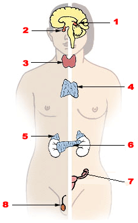
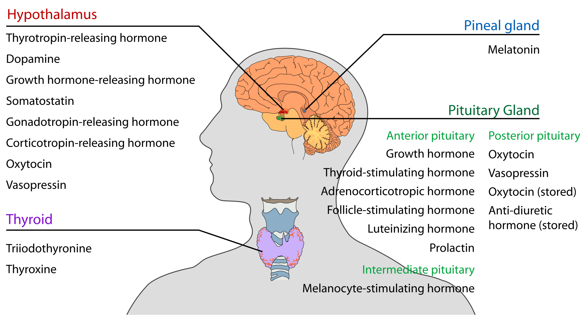

06_nodeSysOrgans of bodyHmn
definition::
specific-definition:
· human-system-of-organs is the-animal-system-of-organs of a-human-body.
generic-definition:
·
part-definition:
· system-of-organs is a-part of a-human-body with a-certain task.
whole-definition:
· organs that work together to perform a-certain task make-up a-system-of-organs.
name::
* McsEngl.bodyHmn'06_system!⇒sysOrgans,
* McsEngl.bodyHmn'att011-system!⇒sysOrgans,
* McsEngl.bodyHmn'system-att011!⇒sysOrgans,
* McsEngl.human-biological-system!⇒sysOrgans, {2012-08-04},
* McsEngl.human-body-system!⇒sysOrgans, {2012-08-04},
* McsEngl.human-organ-system!⇒sysOrgans, {2012-08-04},
* McsEngl.human-body-system!⇒sysOrgans,
* McsEngl.human-system-of-organs!⇒sysOrgans, {2012-08-11},
* McsEngl.body-system!⇒sysOrgans,
* McsEngl.biological-system!⇒sysOrgans,
* McsEngl.organ-system!⇒sysOrgans,
* McsEngl.system-of-organs!⇒sysOrgans,
* McsEngl.systemOrgansHuman!⇒sysOrgans, {2012-08-11},
* McsEngl.sysOrgans!⇒sysOrgans,
* McsEngl.sysOrgans, {2012-08-11},
* McsEngl.sysOrgans'(human-sys-of-organs)!⇒sysOrgans,
* McsEngl.sysOrganHmn!⇒sysOrgans, {2012-08-11},
====== langoGreek:
* McsElln.σύστημα-ανθρώπινου-σώματος!=sysOrgans,
description::
"There are 11 distinct organ systems in human beings,[2] which form the basis of human anatomy and physiology. The 11 organ systems include the respiratory system, digestive and excretory system, circulatory system, urinary system, integumentary system, skeletal system, muscular system, endocrine system, lymphatic system, nervous system, and reproductive systems. There are other systems in the body that are not organ systems. For example, the Immune system protects the organism from infection, but it is not an organ system as it is not composed of organs. Some organs are in more than one system. For example, the nose is in both the respiratory system and also is a sensory organ in the nervous system. The testes and ovary are both part of the reproductive systems and endocrine systems."
[{2023-04-12 retrieved} https://en.wikipedia.org/wiki/Organ_system]
===
In biology, a biological system (or organ system or body system) is a group of organs that work together to perform a certain task. Common systems, such as those present in mammals and other animals, seen in human anatomy, are those such as the circulatory system, the respiratory system, the nervous-system, etc.
A group of systems composes an organism, e.g. the human body.
[http://en.wikipedia.org/wiki/Organ_system]
===
analytic: HUMAN-BODY-SYSTEM is a HUMAN-BODY-RECURSION with an integration-level bigger than that of an ORGAN.
[hmnSngo.{2002-12-24}]
===
οργανικό σύστημα ονομάζω το σύστημα που είναι άμεσα μέρος του οργανισμού και όχι άλλου συστήματος.
[hmnSngo, 15 {1995-03}]
===
synthetic: πολλά όργανα μαζί που εξυπηρετουν συνολικά την ίδια λειτουργία αποτελούν ένα σύστημα του ανθρώπινου οργανισμού.
[Αργύρης, {1994}, 239⧺cptRsc31⧺]
===
αναδρομικος ορισμός:
σύστημα είναι συνεργαζόμενα όργανα ή συστήματα.
[hmnSngo, {1995-03}]
===
το οργανικό σύστημα αποτελείται από συστήματα ή όργανα.
[hmnSngo, {1995-03}]
===
αναδρομικος ορισμός:
σύστημα είναι συνεργαζόμενα όργανα ή συνεργαζόμενα συστήματα.
[hmnSngo, 15 {1995-03}]
===
οργανικό σύστημα: σύνολο οργάνων κοινής προέλευσης και λειτουργίας.
[Αργύρης, {1994}, 148⧺cptRsc29⧺]
===
τα όργανα που συνεργάζονται, για να επιτελεσθεί μία πολύπλοκη λειτουργία, αποτελούν ένα σύστημα, το οργανικό σύστημα. Αποτελεί το τέταρτο επίπεδο βιολογικής οργάνωσης.
[Αργύρης, {1994}, 9⧺cptRsc29⧺]
01_disease of sysOrgans
name::
* McsEngl.sysOrgans'01_disease,
* McsEngl.sysOrgans'att002-disease,
* McsEngl.sysOrgans'disease-att002,
* McsEngl.disease.031-sysOrgans,
* McsEngl.disease.sysOrgans-031,
description::
·
02_organ of sysOrgans
name::
* McsEngl.sysOrgans'02_organ,
* McsEngl.sysOrgans'att001-organ,
* McsEngl.sysOrgans'organ-att001,
description::
· every system-of-organs contain many organs.
03_structure of sysOrgans
name::
* McsEngl.sysOrgans'03_structure,
* McsEngl.sysOrgans'attStructure,
* McsEngl.sysOrgans'structure,
description::
·
04_DOING of sysOrgans
name::
* McsEngl.sysOrgans'04_doing,
* McsEngl.sysOrgans'attDoing,
* McsEngl.sysOrgans'doing,
functing of sysOrgans
name::
* McsEngl.sysOrgans'functing, {2012-08-12},
* McsEngl.functing.sysOrgans,
description::
· the-definition of sysOrgans presupposes a-common function of many organs.
===
"The functions of organ systems often share significant overlap. For instance, the nervous and endocrine system both operate via a shared organ, the hypothalamus. For this reason, the two systems are combined and studied as the neuroendocrine system. The same is true for the musculoskeletal system because of the relationship between the muscular and skeletal systems."
[{2020-03-14} https://en.wikipedia.org/wiki/Organ_(anatomy)#Organ_systems]
04_evoluting of sysOrgans
name::
* McsEngl.sysOrgans'04_evoluting,
* McsEngl.sysOrgans'attEvoluting,
* McsEngl.sysOrgans'evoluting,
{2002-12-14}:
I merged the concepts "system" and "organic-system-(516)".
WHOLE-PART-TREE of sysOrgans
name::
* McsEngl.sysOrgans'whole-part-tree,
whole-tree-of-sysOrgans::
* bodyHmn,
* McsEngl.sysOrgans//bodyHmn,
part-tree-of-sysOrgans::
* disease,
* organ,
* structure,
* functing,
wholeNo-tree-of-sysOrgans::
* ,
GENERIC-SPECIFIC-TREE of sysOrgans
generic-tree of sysOrgans
generic-of-sysOrgans::
* nodeBodyHmn,
att-inherited-from::
· :
* ,
att-own-of-sysOrgans::
* ,
specific-tree of sysOrgans
specific-of-sysOrgans::
* bodyHmn,
* circulatory-system,
* digestive,
* endocrine-system,
* immune
* integumentary-system,
* lymphatic-system,
* musculoskeletal-system,
* nervous-system,
* renal|urinary-system,
* reproductive,
* respiratory,
===
* 001.musculoskeletal-system,
* 002.circulatory-system,
* 003.nervous-system,
* 004.integumentary-system,
* 005.endocrine-system,
* 006.respiratory,
* 007.digestive,
* 008.urinary-system,
* 009.reproductive,
addressWpg::
"Human" systems are also present in many other animals.
Circulatory system: pumping and channeling blood to and from the body and lungs with heart, blood and blood vessels.
Digestive system: digestion and processing food with salivary glands, esophagus, stomach, liver, gallbladder, pancreas, intestines, rectum and anus.
Endocannabinoid system: neuromodulatory lipids and receptors involved in a variety of physiological processes including appetite, pain-sensation, mood, motor learning, synaptic plasticity, and memory.
Endocrine system: communication within the body using hormones made by endocrine glands such as the hypothalamus, pituitary gland, pineal body or pineal gland, thyroid, parathyroids and adrenals, i.e., adrenal glands.
Excretory System: gets rid of waste in the body; contains the integumentary system, the digestive system, the respiratory system, and the urinary system.
Immune system: defending against disease-causing agents with leukocytes, tonsils, adenoids, thymus and spleen.
Integumentary system: skin, hair, fat, and nails.
Lymphatic system: structures involved in the transfer of lymph between tissues and the blood stream; includes the lymph and the nodes and vessels.
Muscular system: allows for manipulation of the environment, provides locomotion, maintains posture, and produces heat. Includes only skeletal muscle, not smooth muscle or cardiac muscle.
Nervous system: collecting, transferring and processing information with brain, spinal cord and peripheral nervous-system.
Reproductive system: the sex organs, such as ovaries, fallopian tubes, uterus, vagina, mammary glands, testes, vas deferens, seminal vesicles and prostate
Respiratory system: the organs used for breathing, the pharynx, larynx, trachea, bronchi, lungs and diaphragm.
Skeletal system: structural support and protection with bones, cartilage, ligaments and tendons.
Urinary system: kidneys, ureters, bladder and urethra involved in fluid balance, electrolyte balance and excretion of urine.
[http://en.wikipedia.org/wiki/Organ_system]
===
τα οργανικά συστήματα του ανθρώπου είναι τα ακόλουθα:
αδενικό, αναπνευστικό, απεκκριτικό, γεννητικό, ερειστικό, καλυπτηριο, κυκλοφορικό, μυικό, νευρικό, πεπτικό.
[Αργύρης, {1994}, 10⧺cptRsc29⧺]
τα συστήματα του ανθρώπινου οργανισμού που θα αναπτύξουμε είναι:
νευρικό
αισθητηριων οργάνων
ερειστικό
μυικό
πεπτικό
κυκλοφορικό
αναπνευστικό
ουροποιητικό
ενδοκρινών αδένων
γεννητικό
[Αργύρης, {1994}, 239⧺cptRsc31⧺]
07_nodeOrgan of bodyHmn
definition::
specific-definition:
· human-organ is the-animal-organ of a-human-body.
generic-definition:
· human-organ is a-node with a-specific function.
part-definition:
· an-organ-system is-comprised of organs.
whole-definition:
· organ is a-system of tissues that together carry out a specific function.
name::
* McsEngl.bodyHmn'07_organ!⇒organ,
* McsEngl.bodyHmn'att012-organ!⇒organ,
* McsEngl.bodyHmn'organ-att012!⇒organ,
* McsEngl.human-organ!⇒organ,
* McsEngl.ogn!⇒organ, {2020-04-23},
* McsEngl.organ, {2012-08-16},
* McsEngl.organHmn!⇒organ,
* McsEngl.organ'(human-organ)!⇒organ,
* McsEngl.organ.human!⇒organ,
* McsEngl.orgnHmn!⇒organ, {2012-08-04},
====== langoSinago:
* McsSngo.organo!=organ,
====== langoChinese:
* McsZhon.qìguān-器官!=organ,
* McsZhon.器官-qìguān!=organ,
====== langoGreek:
* McsElln.όργανο-ανθρώπου!=organ,
description::
analytic: όργανο είναι μέρος συστήματος με αυτοτελείς λειτουργίες, που μπορεί να θεωρηθει αντικείμενο.
[hmnSngo, {1995-02}]
===
synthetic: όργανα ονομάζουν συνεργαζόμενους ιστους.
[hmnSngo, {1995-03}]
===
συνθετικος ορισμός:
τα διάφορα είδη των ιστών συνενώνονται και φτιάχνουν περισότερο οργάνωμένα και ικανά συστήματα για αποδοτικότερη λειτουργία. Ετσι φτάνουμε στο τριτο επίπεδο βιολογικής οργάνωσης, το όργανο. Το χέρι μας πχ αποτελείται από συνεργαζόμενους ιστούς όπως το δέρμα, τους μυς, τους τένοντες, το αίμα, τα νεύρα.
[Αργύρης, {1994}, 9]
οι ιστοί διαπλέκονται μεταξύ τους κατάλληλα και σχηματίζουν τα όργανα.
[Αργύρης, {1994}, 239⧺cptRsc29⧺]
01_disease of organ
name::
* McsEngl.organ'01_disease,
* McsEngl.organ'disease,
* McsEngl.organ'att004-disease,
* McsEngl.disease.030-organ,
* McsEngl.disease.organ-030,
description::
·
02_tissue of organ
name::
* McsEngl.organ'02_tissue,
* McsEngl.organ'tissue,
* McsEngl.organ'att010-tissue,
description::
·
03_cell of organ
name::
* McsEngl.organ'cell,
* McsEngl.organ'att012-cell,
* McsEngl.cell.organ,
* McsEngl.cell.024-organ,
description::
· the-cells of an-organ.
03_artery of organ
name::
* McsEngl.organ'03_artery,
* McsEngl.organ'artery,
* McsEngl.organ'att005-artery,
description::
·
04_vein of organ
name::
* McsEngl.organ'04_vein,
* McsEngl.organ'vein,
* McsEngl.organ'att006-vein,
description::
·
05_nerve of organ
name::
* McsEngl.organ'05_nerve,
* McsEngl.organ'nerve,
* McsEngl.organ'att007-nerve,
description::
·
06_shape of organ
name::
* McsEngl.organ'06_shape,
* McsEngl.organ'shape,
* McsEngl.organ'att008-shape,
description::
·
07_size of organ
name::
* McsEngl.organ'07_size,
* McsEngl.organ'size,
* McsEngl.organ'att009-size,
description::
·
structure of organ
name::
* McsEngl.organ'structure,
structure::
* tissue,
===
από τους ιστούς κάθε οργάνου ένας είναι ο κύριος, από τον οποίον εξαρτάται ο χαρακτήρας και η λειτουργία του κάθε οργάνου, οι υπόλοιποι συνεπικουρούν στη λειτουργία, προστατεύουν και τρέφουν το όργανο. Ετσι, κύριος ιστός των σπλάχνων είναι ο επιθηλιακός ιστός, του εγκεφάλου ο νευρικός, των μυών ο μυϊκός ιστός κτλ.
[Αργύρης, {1994}, 239⧺cptRsc31⧺]
doing of organ
name::
* McsEngl.organ'doing,
κάθε όργανο εκτελεί μία λειτουργία.
08_function of organ
name::
* McsEngl.organ'doing.functing,
* McsEngl.organ'08_functing,
* McsEngl.organ'functing,
* McsEngl.organ'att011-functing,
09_procedure of organ
name::
* McsEngl.organ'09_procedure,
* McsEngl.organ'procedure,
* McsEngl.organ'att001-procedure,
description::
·
10_transplant of organ
name::
* McsEngl.organ'10_transplant,
* McsEngl.organ'transplant,
* McsEngl.organ'att002-transplant,
description::
·
managing of organ
name::
* McsEngl.organ'doing.managing,
* McsEngl.organ'managing,
* McsEngl.organ'att003-managing,
κάθε όργανο, σαν δυναμικό-σύστημα, μανετζάρεται.
WHOLE-PART-TREE of organ
name::
* McsEngl.organ'whole-part-tree,
whole-tree-of-organ::
* sys-of-organs,
* McsEngl.organ//sysOrgans,
===
"Two or more organs working together in the execution of a specific body function form an organ system, also called a biological system or body system. The functions of organ systems often share significant overlap. For instance, the nervous and endocrine system both operate via a shared organ, the hypothalamus. For this reason, the two systems are combined and studied as the neuroendocrine system."
[{2020-05-17} https://en.wikipedia.org/wiki/Organ_(anatomy)]
part-tree-of-organ::
* disease,
* structure,
* function,
wholeNo-tree-of-organ::
* ,
GENERIC-SPECIFIC-TREE of organ
name::
* McsEngl.organ'generic-specific-tree,
generic-tree of organ
generic-of-organ::
* nodeBodyHmn,
att-inherited-from::
· :
* ,
att-own-of-organ::
* ,
specific-tree of organ
specific-of-organ::
"By one widely adopted definition, 79 organs have been identified in the human body."
[{2023-04-08 retrieved} https://en.wikipedia.org/wiki/Organ_(biology)]
====
* arm,
* organBone,
* organBrain,
* epiphysis,
* esophagus,
* gall-bladder,
* organGland,
* gland.endocrine,
* gland.exocrine,
* gland.parathyroid,
* gland.salivay,
* gland.thymus,
* gland.thyroid,
* organHeart,
* hypophysis,
* intestine,
* intestine.large,
* intestine.small,
* kidney,
* larynx,
* liver,
* lung,
* organLymph,
* organMouth,
* organMuscle,
* nerve,
* ovary,
* pancreas,
* penis,
* pharynx,
* sense,
* sense.ear,
* sense.eye,
* sense.nose,
* sense.skin,
* sense.tongue,
* spleen,
* stomach,
* testicle,
* trachea,
* ureter,
* urethra,
* urinary_bladder,
* uteras,
* uvula,
* vagina,
* vessel,
* vulva,
===
* αδένας,
* αυτί,
* organTongue,
* εγκέφαλος,
* ενδοκρινεις-αδένες,
* εντερο,
* εξωκρινεις-αδένες,
* επίφυση,
* organSkin,
* δωδεκαδάκτυλο,
* θύμος-αδένας,
* θυροειδης-αδένας,
* organVagina,
* λάρυγγας,
* λεμφογαγγλια,
* organIntestineSmall,
* organEny,
* μεικτοί-αδένες,
* organUteras,
* μυς,
* μύτη,
* nerve,
* organKidney,
* οισοφάγος,
* όρχις,
* οστό,
* ουρήθρα,
* ουρητήρας,
* ουροδοχος-κυστης,
* πάγκρεας,
* παραθυροειδης-αδένας,
* παχύ-εντερο,
* πεος,
* πνεύμονας,
* σιελογόνος-αδένας,
* σπλήνα,
* σταφυλή,
* στόμα,
* στομάχι,
* glandLiver,
* τραχεία,
* υπόφυση,
* φαρυγγας,
* χοληδόχος-κύστη,
* ωοθήκες,
addressWpg::
* https://en.wikipedia.org/wiki/List_of_organs_of_the_human_body,
"This article contains a list of organs of the human body. It is widely believed that there are 100 organs; however, there is no universally standard definition of what constitutes an organ, and some tissue groups' status as one is debated.[1] Since there is no single standard definition of what an organ is, the number of organs varies depending on how one defines an organ. For example, this list contains much more than 79 different organs."
[{2020-02-13} https://en.wikipedia.org/wiki/List_of_organs_of_the_human_body]
organ.gland-004
name::
* McsEngl.organGland,
* McsEngl.organ.004-gland!⇒organGland,
* McsEngl.organ.gland-004!⇒organGland,
* McsEngl.gland!⇒organGland, {2012-08-12},
====== langoGreek:
* McsElln.όργανο.αδένας!=organGland,
* McsElln.αδένας-ανθρώπου!=organGland, {2012-08-12},
description::
"A gland is a group of cells[1] in an animal's body that synthesizes substances (such as hormones) for release into the bloodstream (endocrine gland) or into cavities inside the body or its outer surface (exocrine gland)."
[{2020-03-05} https://en.wikipedia.org/wiki/Gland]
===
analytic: οι αδένες είναι όργανα που παράγουν ουσίες χρήσιμες και απαραίτητες για την κανονική λειτουργία του οργανισμού μας.
[Αργύρης, {1994}, 119⧺cptRsc29⧺]
===
synthetic: αδένες: όργανα από αδενικό επιθήλιο.
disease of organGland
name::
* McsEngl.organGland'01_disease-001,
* McsEngl.organGland'att001_disease,
* McsEngl.organGland'disease-001,
* McsEngl.disease.028-adenosis,
* McsEngl.disease.adenosis-028,
* McsEngl.adenosis-disease, /adenósis/,
description::
"Adenosis is any disease of a gland. The diseased gland has abnormal formation or development of glandular tissue which is sometimes tumorous.[3]"
[{2020-03-14} https://en.wikipedia.org/wiki/Gland#Clinical_significance]
secretory-product of organGland
name::
* McsEngl.organGland'02_secretory-product-002,
* McsEngl.organGland'att002-secretory-product,
* McsEngl.organGland'secreted-product-002,
* McsEngl.organGland'secretion-substance-002,
* McsEngl.organGland'secretory-product-002,
description::
"Product secreted
* Serous cells secrete proteins, often enzymes. Examples include gastric chief cells and Paneth cells
* Mucous cells secrete mucus. Examples include Brunner's glands, esophageal glands, and pyloric glands
* Mixed glands secrete both protein and mucus. Examples include the salivary glands: although the parotid gland 20%is predominantly serous, the sublingual gland 5% mainly mucous gland, and the submandibular gland 70%is a mixed, mainly serous gland.
* Sebaceous glands secrete sebum, a lipid product. These glands are also known as oil glands, e.g. Fordyce spots and Meibomian glands."
[{2020-03-22} https://en.wikipedia.org/wiki/Exocrine_gland]
shape of organGland
name::
* McsEngl.organGland'03_shape-004,
* McsEngl.organGland'att004-shape,
* McsEngl.organGland'shape-004,
description::
* tubular,
* alveolar,
structure of organGland
name::
* McsEngl.organGland'04_structure-006,
* McsEngl.organGland'structure-006,
* McsEngl.organGland'att006-structure,
description::
· the-structure contains a-duct or not etc.
DOING of organGland
name::
* McsEngl.organGland'05_doing-003,
* McsEngl.organGland'att003-doing,
* McsEngl.organGland'doing-003,
doing::
οι αδένες παράγουν ουσίες (έκκριμα & ορμόνη).
με το ορμονικό και το νευρικό-σύστημα ο οργανισμός μας πετυχαίνει υψηλό βαθμό
- επικοινωνίας
- συνεργασίας και
- συντονισμού μεταξύ των διαφόρων οργάνων του.
[Αργύρης, {1994}, 123⧺cptRsc29⧺]
secretion-process of organGland
name::
* McsEngl.organGland'att005-secretion-process,
* McsEngl.organGland'doing.1_secretion-process-005,
* McsEngl.organGland'secretion-process-005,
description::
"Method of secretion
Exocrine glands are named apocrine glands, holocrine glands, or merocrine glands based on how their products are secreted.[1]
* Merocrine secretion – cells excrete their substances by exocytosis; for example, pancreatic acinar cells.
* Apocrine secretion – a portion of the cell membrane that contains the excretion buds off.
* Holocrine secretion – the entire cell disintegrates to excrete its substance; for example, sebaceous glands of the skin and nose."
[{2020-03-22} https://en.wikipedia.org/wiki/Exocrine_gland]
WHOLE-PART-TREE of organGland
name::
* McsEngl.organGland'whole-part-tree,
whole-tree-of-gland::
* sys-of-organs,
* McsEngl.gland//sysOrgans,
part-tree-of-gland::
* ,
wholeNo-tree-of-gland::
* ,
GENERIC-SPECIFIC-TREE of organGland
name::
* McsEngl.organGland'generic-specific-tree,
generic-tree of organGland
generic-of-gland::
* organ,
* McsEngl.gland:organ,
att-inherited-from::
· :
* ,
att-own-of-gland::
* ,
specific-tree of organGland
specific-of-gland::
* ενδοκρινεις-αδένες,
* εξωκρινεις-αδένες,
* μεικτοί-αδένες,
===
* αντρικοί αδένες,
* γεννητικοί-αδένες,
* γυναικείοι αδένες,
* ενδοκρινεις-αδένες,
* εξωκρινεις-αδένες,
* επινεφριδια/SUPRARENAL,
* επίφυση,
* θύμος-αδένας,
* glandThyroid,
* μεικτοί-αδένες,
* ορχεις/TESTICLE,
* πάγκρεας/PANCREAS,
* παραθυροειδης-αδένας,
* πεπτικού συστήματος αδένες,
* προστάτης,
* σιελογόνος-αδένας,
* συκώτι/LIVER,
* υπόφυση/HYPOPHYSIS,
* ωοθήκες/OVARY,
organGland.endocrine-001
name::
* McsEngl.glandEndocrine,
* McsEngl.organGland.001-endocrine,
* McsEngl.organGland.endocrine-001,
* McsEngl.human-endocrine-gland, {2012-08-12},
* McsEngl.endocrine-gland.human, {2012-08-12},
* McsEngl.endocrine-gland,
====== langoGreek:
* McsElln.αδένας.ενδοκρινής, {2012-08-12},
* McsElln.ενδοκρινής-αδένας, {2012-08-12},
description::

The major endocrine glands: 1-pineal, 2-Pituitary, 3-thyroid, 4-thymus, 5-adrenal, 6-pancreas, 7-ovary-(female), 8-testis-(male),
[{2020-03-22} https://en.wikipedia.org/wiki/Endocrine_gland]
analytic: ενδοκρινής-αδένας είναι ο αδένας που στερείται εκφορητικών σωληναρίων.
[Αργύρης, {1994}, 119⧺cptRsc29⧺]
generic-tree-of-glandEndocrine::
* organGland,
* McsEngl.glandEndocrine:organGland,
secretory-product of glandEndocrine
secretory-product::
* hormone,
glandEndocrine.SPECIFIC
specific-tree-of-glandEndocrine::
* glandAdrenal,
* glandEpiphysis,
* glandHypophysis,
* glandHypothalamus,
* glandOvary,
* glandPancreas,
* glandPeneal,
* glandParathyroid,
* glandTestis,
* glandThymus,
* glandThyroid,
organGland.exocrine-002
name::
* McsEngl.glandExocrine,
* McsEngl.organGland.002-exocrine,
* McsEngl.organGland.exocrine-002,
* McsEngl.exocrine-gland.human, {2012-08-12},
* McsEngl.human-exocrine-gland, {2012-08-12},
====== langoGreek:
* McsElln.αδένας.εξωκρινής,
* McsElln.εξωκρινής-αδένας,
description::
Exocrine glands are a type of ductal glands that secrete their products (including digestive enzymes, and some hormone chemical messengers) into ducts that lead directly into the external environment. They are the counterparts to endocrine glands, which secrete their products (hormones) directly into the bloodstream (ductless glands) or release hormones (paracrines) that affect only target cells nearby the release site.
[http://en.wikipedia.org/wiki/Exocrine]
===
analytic: εξωκρινεις-αδένες είναι οι αδένες που μεταφέρουν το παραγόμενο προϊόν τους σε άλλο μέρος.
[hmnSngo, {1995-03}]
===
παραγωγικός ορισμός:
εξωκρινεις λέγονται οι αδένες που έχουν αγωγούς (σωλήνες) που μεταφέρουν το προϊόν τους σε κάποια κοιλότητα ή στην επιφάνεια του δέρματος.
[Αργύρης, {1994}, 119⧺cptRsc29⧺]
generic-tree-of-glandExocrine::
* organ,
* McsEngl.glandExocrine:organ,
secretory-product
secretory-product::
"Product secreted
* Serous cells secrete proteins, often enzymes. Examples include gastric chief cells and Paneth cells
* Mucous cells secrete mucus. Examples include Brunner's glands, esophageal glands, and pyloric glands
* Mixed glands secrete both protein and mucus. Examples include the salivary glands: although the parotid gland 20%is predominantly serous, the sublingual gland 5% mainly mucous gland, and the submandibular gland 70%is a mixed, mainly serous gland.
* Sebaceous glands secrete sebum, a lipid product. These glands are also known as oil glands, e.g. Fordyce spots and Meibomian glands."
[{2020-03-22} https://en.wikipedia.org/wiki/Exocrine_gland]
duct of glandExocrine
name::
* McsEngl.glandExocrine'duct,
====== langoGreek:
* McsElln.αγωγός-εξωκρινούς-αδένα,
* McsElln.κανάλι-εξωκρινούς-αδένα,
* McsElln.πόρος-εξωκρινούς-αδένα,
description::
"In anatomy and physiology, a duct is a circumscribed channel leading from an exocrine gland or organ."
[{2020-03-22} https://en.wikipedia.org/wiki/Duct_(anatomy)https://en.wikipedia.org/wiki/Duct_(anatomy)]
structure of glandExocrine
structure::
έχουν εκφορητικό πόρο και αποχετεύουν το έκκριμμά τους σε κάποια κοιλότητα ή στην επιφάνεια του σώματος.
[Αργύρης, {1994}, 414⧺cptRsc31⧺]
secretion-process of glandExocrine
name::
* McsEngl.glandExocrine'secretion-process,
description::
·
secretion.merocrine of glandExocrine
name::
* McsEngl.glandExocrine'merocrine-secretion-process,
* McsEngl.merocrine-secretion-process--of-glandExocrine,
description::
"Merocrine (or eccrine) is a term used to classify exocrine glands and their secretions in the study of histology. A cell is classified as merocrine if the secretions of that cell are excreted via exocytosis from secretory cells into an epithelial-walled duct or ducts and then onto a bodily surface or into the lumen.
Merocrine is the most common manner of secretion. The gland releases its product and no part of the gland is lost or damaged (compare holocrine and apocrine).
The term eccrine is specifically used to designate merocrine secretions from sweat glands (eccrine sweat glands).[1]
Examples
* Salivary glands
* Pancreatic glands
* Certain sweat glands"
[{2020-03-22} https://en.wikipedia.org/wiki/Merocrine]
secretion.apocrine of glandExocrine
name::
* McsEngl.glandExocrine'apocrine-secretion-process, /ápokrin/,
* McsEngl.apocrine-secretion-process--of-glandExocrine,
description::
"Apocrine (/ˈæpəkrɪn/)[1] is a term used to classify exocrine glands in the study of histology. Cells which are classified as apocrine bud their secretions off through the plasma membrane producing extracellular membrane-bound vesicles. The apical portion of the secretory cell of the gland pinches off and enters the lumen. It loses part of its cytoplasm in their secretions. Apocrine glands are found primarily in the breast of lactating mammals (i.e. the mammary glands are apocrine glands).
Secretion occurs when the release of secretory materials is accompanied with loss of part of cytoplasm. Apocrine secretion is less damaging to the gland than holocrine secretion (which destroys a cell) but more damaging than merocrine secretion (exocytosis). An example of true apocrine glands is the mammary glands, responsible for secreting breast milk.[2]"
[{2020-03-22} https://en.wikipedia.org/wiki/Apocrine]
secretion.holocrine of glandExocrine
name::
* McsEngl.glandExocrine'holocrine-secretion-process,
* McsEngl.holocrine-secretion-process--of-glandExocrine,
description::
"Holocrine is a term used to classify the mode of secretion in exocrine glands in the study of histology. Holocrine secretions are produced in the cytoplasm of the cell and released by the rupture of the plasma membrane, which destroys the cell and results in the secretion of the product into the lumen.
Holocrine gland secretion is the most damaging (to the cell itself and not to the host which begot the cell) type of secretion, with merocrine secretion being the least damaging and apocrine secretion falling in between.
Examples of holocrine glands include the sebaceous glands of the skin and the meibomian glands of the eyelid. The sebaceous gland is an example of a holocrine gland because its product of secretion (sebum) is released with remnants of dead cells.[1]"
SPECIFIC
specific-tree-of-glandExocrine::
* salivary-gland,
===
"Examples of exocrine glands include sweat, salivary, mammary, ceruminous, lacrimal, sebaceous, and mucous."
[{2020-03-22} https://en.wikipedia.org/wiki/Exocrine_gland]
organGland.mixed-003
name::
* McsEngl.glandMixed,
* McsEngl.organGland.003-mixed,
* McsEngl.organGland.mixed-003,
* McsEngl.human-mixed-gland, {2012-08-12},
* McsEngl.mixed-gland.human, {2012-08-12},
====== langoGreek:
* McsElln.αδένας.μεικτός,
* McsElln.μεικτός-αδένας,
description::
analytic: μεικτός-αδένας είναι ο αδένας που παράγει ουσίες εσωτερικά και εξωτερικά.
[hmnSngo, {1995-03}]
generic-tree-of-glandMixed::
* organ,
* McsEngl.glandMixed:organ,
structure
structure::
αποτελούνται από εξωκρινή και ενδοκρινή μοίρα.
organGland.epiphysis-004
name::
* McsEngl.glandEpiphysis,
* McsEngl.organGland.004-epiphysis,
* McsEngl.organGland.epiphysis-004,
* McsEngl.organGland.pineal-004,
* McsEngl.conarium-gland,
* McsEngl.epiphysis-gland,
* McsEngl.pineal-gland,
====== langoGreek:
* McsElln.επίφυση,
description::

"The pineal gland, conarium, or epiphysis cerebri, is a small endocrine gland in the brain of most vertebrates. The pineal gland produces melatonin, a serotonin-derived hormone which modulates sleep patterns in both circadian and seasonal cycles. The shape of the gland resembles a pine cone from which it derived its name.[1] The pineal gland is located in the epithalamus, near the center of the brain, between the two hemispheres, tucked in a groove where the two halves of the thalamus join.[2][3] The pineal gland is one of the neuroendocrine secretory circumventricular organs in which there does not exist the blood–brain barrier at the capillary level.[4]
Nearly all vertebrate species possess a pineal gland. The most important exception is a primitive vertebrate, the hagfish. Even in the hagfish, however, there may be a "pineal equivalent" structure in the dorsal diencephalon.[5] The lancelet Branchiostoma lanceolatum, the nearest existing relative to vertebrates, also lacks a recognizable pineal gland.[6] The lamprey (another primitive vertebrate), however, does possess one.[6] A few more developed vertebrates have lost pineal glands over the course of their evolution.[7]
The results of various scientific research in evolutionary biology, comparative neuroanatomy and neurophysiology have explained the evolutionary history (phylogeny) of the pineal gland in different vertebrate species. From the point of view of biological evolution, the pineal gland represents a kind of atrophied photoreceptor. In the epithalamus of some species of amphibians and reptiles, it is linked to a light-sensing organ, known as the parietal eye, which is also called the pineal eye or third eye.[8]
René Descartes believed the human pineal gland to be the "principal seat of the soul". Academic philosophy among his contemporaries considered the pineal gland as a neuroanatomical structure without special metaphysical qualities; science studied it as one endocrine gland among many.[9]"
[{2020-03-22} https://en.wikipedia.org/wiki/Pineal_gland]
===
analytic: η επίφυση είναι αδένας.
[hmnSngo, {1995-03}]
generic-tree-of-glandEpiphysis::
* glandEndocrine,
* McsEngl.glandEpiphysis:glandEndocrine,
organGland.liver-005
name::
* McsEngl.glandLiver,
* McsEngl.organGland.005-liver!⇒glandLiver,
* McsEngl.organGland.liver-005!⇒glandLiver,
* McsEngl.human-liver!⇒glandLiver, {2012-08-13},
* McsEngl.liver.human!⇒glandLiver, {2012-08-13},
* McsEngl.liver!⇒glandLiver,
====== langoGreek:
* McsElln.ήπαρ!=glandLiver, {2012-08-13},
* McsElln.συκώτι!=glandLiver, {2012-08-13},
description::
analytic: το συκώτι είναι ο μεγαλύτερος αδένας του σώματός μας, 2,5 κιλά.
[Αργύρης, {1994}, 40⧺cptRsc29⧺]
generic-tree-of-glandLiver::
* organGland,
* McsEngl.glandLiver:organGland,
* organ,
whole-tree-of-glandLiver::
* sysDigestive,
* McsEngl.glandLiver//sysDigestive,
disease of glandLiver
name::
* McsEngl.glandLiver'disease,
specific::
* cirrhosis,
protection of glandLiver
name::
* McsEngl.glandLiver'protection,
με ποιες τροφές θα "καθαρίσετε" το συκώτι σας
Αθήνα {2017-09-21},
γνωρίζετε ότι υπάρχουν τροφές που βοηθούν στον καθαρισμό του συκωτιού σας, τονώνοντας παράλληλα τη φυσική ικανότητά του να απαλλάσσει το σώμα από τις τοξικές ουσίες;
δείτε ποιες είναι:
σκόρδο
ενεργοποιεί τα ηπατικά ένζυμα που βοηθούν το σώμα να «ξεπλύνει» τις τοξίνες. Επίσης, περιέχει μεγάλες ποσότητες αλισίνης και σεληνίου, δύο φυσικών ενώσεων που βοηθούν στον καθαρισμό του ήπατος.
γκρέιπφρουτ
καθώς είναι πλούσιο σε βιταμίνη C και αντιοξειδωτικά, επιταχύνει τις διεργασίες καθαρισμού, συμβάλλοντας στην ενίσχυση της παραγωγής των ενζύμων αποτοξίνωσης.
καρότα και παντζάρια
είναι πλούσια σε φλαβονοειδή και βήτα καροτίνη που βοηθά στην βελτίωση της συνολικής λειτουργίας του ήπατος.
πράσινο τσάι
είναι πλούσιο σε κατεχίνες, που έχει αποδειχθεί από πολλές έρευνες ότι βοηθούν στη λειτουργία του ήπατος.
πράσινα λαχανικά
η εξαιρετικά υψηλή τους περιεκτικότητα σε χλωροφύλλη, τα κάνει να απορροφούν τις τοξίνες από το αίμα. Με τη διακριτή ικανότητά τους να εξουδετερώνουν τα βαρέα μέταλλα, τα χημικά και τα φυτοφάρμακα, τα τρόφιμα αυτά αποτελούν έναν ισχυρό προστατευτικό μηχανισμό για το συκώτι.
αβοκάντο
συμβάλλει στην παραγωγή γλουταθειόνης από τον οργανισμό, κύρια αποστόλή της οποίας είναι να διασπά και να απομακρύνει από το σώμα όλες τις δυνάμει επικίνδυνες τοξίνες.
μήλα
πλούσια σε πηκτίνη, τα μήλα έχουν εκείνα τα χημικά συστατικά που χρειάζεται ο οργανισμός για να καθαρίσει και να απελευθερώσει τις τοξίνες από το πεπτικό σύστημα. Αυτό, με τη σειρά του, καθιστά ευκολότερο για το συκώτι να χειριστεί το τοξικό φορτίο.
ελαιόλαδο
τα οργανικά έλαια βοηθούν το σώμα, παρέχοντας μία βάση λιπιδίων, που έχουν τη δυνατότητα να απορροφούν τις βλαβερές τοξίνες στο σώμα. Με τον τρόπο αυτό λαμβάνουν ένα μέρος της δύσκολης δουλειάς που έχει το ήπαρ από την άποψη της τοξικής υπερφόρτωσης.
δημητριακά ολικής αλέσεως
είναι πλούσια σε βιταμίνες του συμπλέγματος β που αποτελούνται από θρεπτικά συστατικά που είναι γνωστό ότι βελτιώνουν το μεταβολισμό του λίπους, τη λειτουργία του ήπατος και την αποσυμφόρησή του.
σταυρανθή λαχανικά
τρώγοντας μπρόκολο και κουνουπίδι, θα ενισχύσετε το ποσό της γλυκοζινόλης στον οργανισμό, αυξάνοντας την παραγωγή ενζύμων στο ήπαρ, που βοηθούν στην απομάκρυνση των καρκινογόνων ουσιών και άλλων τοξινών από το σώμα.
λεμόνι
περιέχει πολύ υψηλές ποσότητες βιταμίνης C, η οποία βοηθά τον οργανισμό στη σύνθεση των τοξικών υλικών σε ουσίες, που μπορούν να απορροφηθούν από το νερό.
καρύδια
πλούσια σε αργινίνη, βοηθούν το ήπαρ στην απομάκρυνση της αμμωνίας.
λάχανο
όπως και το μπρόκολο και το κουνουπίδι, το λάχανο βοηθά στην τόνωση της ενεργοποίησης δύο σημαντικών ηπατικών ενζύμων που βοηθούν στην αποτοξίνωση των τοξινών.
πηγή: onmed.gr
[http://www.nooz.gr/Health/me-poies-trofes-8a-ka8arisete-to-sukoti-sas]
secretory-product of glandLiver
name::
* McsEngl.glandLiver'secretory-product,
secretory-product::
χολή⧺cptBdyHmn275⧺
structure of glandLiver
name::
* McsEngl.glandLiver'structure,
structure::
χοληδόχος-κύστη⧺cptBdyHmn089⧺
βαρος:
το βάρος του είναι περίπου 1500 γραμμάρια.
[Αργύρης, {1994}, 344⧺cptRsc31⧺]
DOING of glandLiver
name::
* McsEngl.glandLiver'doing,
doing::
το συκώτι εκτός από την
- παραγωγή της χολής κάνει και άλλες λειτουργίες που συνοπτικά είναι:
- αποθηκεύει γλυκογόνο, σίδηρο, βιταμίνες (B12),
- συνθέτει μερικές χημικές ουσίες απαραίτητες για την πήξη του αίματος,
- παράγει ουρία από αζωτούχες οργανικές ενώσεις (πρωτεΐνες),
- αποθηκεύει αίμα και
- παράγει ουσίες με αντιμικροβιακή δράση για την άμυνα του οργανισμού,
- κάνει διάφορες βιοχημικές συνθέσεις. Δικαιολογημένα το συκώτι θεωρείται ότι είναι το βιοχημικο εργαστηριο του οργανισμού μας.
[Αργύρης, {1994}, 40⧺cptRsc29⧺]
organGland.ovary-006
name::
* McsEngl.glandOvary,
* McsEngl.organGland.006-ovary,
* McsEngl.organGland.ovary-006,
* McsEngl.ovary,
====== langoGreek:
* McsElln.ωοθήκη!=glandOvary,
description::
analytic: η ωοθήκη είναι μεικτός αδένας, τελευταίο όργανο από έξω προς τα μέσα, του θυληκου γεννητικού συστήματος.
[hmnSngo, {1995-03}]
generic-tree-of-glandOvary::
* glandMixed,
* McsEngl.glandOvary:glandMixed,
whole-tree-of-glandOvary::
* sysReproductiveFemale,
* McsEngl.glandOvary//sysReproductive,
ovarian-follicle
name::
* McsEngl.cptBdyHmn547-ovarian-follicle,
* McsEngl.ovarian-follicle,
====== langoGreek:
* McsElln.ωοθυλακιο!=ovarian-follicle,
description::
analytic: ωοθυλακιο είναι κατασκευή της ωοθήκης που περιέχει ένα αδιαφοροποίητο ωάριο.
[Αργύρης, {1994}, 433⧺cptRsc31⧺]
στο εσωτερικό της ωοθήκης υπάρχουν 200.000 περίπου ωοθυλακια, καθένα από το οποία περιέχει ένα αδιαφοροποίητο ωάριο.
[Αργύρης, {1994}, 433⧺cptRsc31⧺]
whole-tree-of-ovarian-follicle::
* glandOvary,
* McsEngl.ovarian-follicle//glandOvary,
SPECIFIC
specific-tree-of-::
στο εσωτερικό της ωοθήκης υπάρχουν 200.000 περίπου ωοθυλακια.
[Αργύρης, {1994}, 433⧺cptRsc31⧺]
doing
doing::
η κύρια λειτουργία των ωοθηκών είναι η παραγωγή των θηλυκών γεννητικών κυττάρων, ωαρίων, και η έκκριση των γεννητικών ορμονών της οιστραδιολης και προγεστερονης.
[Αργύρης, {1994}, 112⧺cptRsc29⧺]
structure
structure::
ωοθυλακια⧺cptBdyHmn547⧺
κάθε ωοθήκη έχει σχήμα αμυγδάλου και βρίσκεται στο πλάγιο τοίχωμα της μικρής λεκάνης.
στο εσωτερικό της υπάρχουν 200.000 περίπου ωοθυλακια, καθένα από το οποία περιέχει ένα αδιαφοροποίητο ωάριο.
[Αργύρης, {1994}, 433⧺cptRsc31⧺]
SPECIFIC
specific-tree-of-::
οι ωοθήκες είναι 2.
organGland.pancreas-007
name::
* McsEngl.glandPancreas,
* McsEngl.organGland.007-pancreas!⇒glandPancreas,
* McsEngl.organGland.pancreas-007!⇒glandPancreas,
* McsEngl.human-pancreas!⇒glandPancreas, {2012-08-13},
* McsEngl.pancreas.human!⇒glandPancreas, {2012-08-13},
* McsEngl.pancreas!⇒glandPancreas,
====== langoGreek:
* McsElln.πάγκρεας-ανθρώπου!=glandPancreas, {2012-08-13},
* McsElln.πάγκρεας!=glandPancreas,
description::
The pancreas /'pζ?kri?s/ is a gland organ in the digestive system and endocrine system of vertebrates. It is both an endocrine gland producing several important hormones, including insulin, glucagon, somatostatin, and pancreatic polypeptide, and a digestive organ, secreting pancreatic juice containing digestive enzymes that assist the absorption of nutrients and the digestion in the small intestine. These enzymes help to further break down the carbohydrates, proteins, and lipids in the chyme.
[http://en.wikipedia.org/wiki/Pancreas]
===
analytic: το πάγκρεας είναι μεικτός αδένας.
[Αργύρης, {1994}, 345⧺cptRsc31⧺]
===
πάγκρεας είναι ένας αδένας που βρίσκεται στο βάθος της κοιλιάς. Παράγει ινσουλίνη.
[Εικ, 1994, 51⧺cptRsc33⧺]
generic-tree-of-glandPancreas::
* glandMixed,
* McsEngl.glandPancreas:glandMixed,
whole-tree-of-glandPancreas::
* sysDigestive,
* McsEngl.glandPancreas//sysDigestive,
secretory-product of glandPancreas
secretory-product::
* γλυκαγόνη,
* ινσουλίνη,
* παγκρεατικο υγρό,
organGland.salivary-008
name::
* McsEngl.glandSalivary,
* McsEngl.organGland.008-salivary,
* McsEngl.organGland.salivary-008,
* McsEngl.human-salivary-gland, {2012-08-13},
* McsEngl.salivary-gland.human, {2012-08-13},
====== langoGreek:
* McsElln.σιελογόνος-αδένας!=glandSalivary,
description::
"The salivary glands in mammals are exocrine glands that produce saliva through a system of ducts. Humans have three paired major salivary glands (parotid, submandibular, and sublingual) as well as hundreds of minor salivary glands.[1] Salivary glands can be classified as serous, mucous or seromucous (mixed).
In serous secretions, the main type of protein secreted is alpha-amylase, an enzyme that breaks down starch into maltose and glucose,[2] whereas in mucous secretions the main protein secreted is mucin, which acts as a lubricant.[1]
In humans, between 0.5 and 1.5 litres of saliva are produced every day.[3] The secretion of saliva (salivation) is mediated by parasympathetic stimulation; acetylcholine is the active neurotransmitter and binds to muscarinic receptors in the glands, leading to increased salivation.[3][4]"
[{2020-03-22} https://en.wikipedia.org/wiki/Salivary_gland]
===
analytic: σιελογόνοι αδένες είναι αδένες που παράγουν σάλιο.
generic-tree-of-glandSalivary::
* organGland,
* McsEngl.glandSalivary:organGland,
* organ,
whole-tree-of-glandSalivary::
* sysDigestive,
* McsEngl.glandSalivary//sysDigestive,
secretory-product of glandSalivary
secretory-product::
* saliva,
DOING of glandSalivary
doing::
εκκρίνουν .
glandSalivary.SPECIFIC
specific-tree-of-glandSalivary::
οι σιελογόνοι αδένες είναι 3 ζευγάρια αδένων:
- οι παρωτιδες,
- οι υπογλωσσιοι και
- οι υπογναθιοι.
[Αργύρης, {1994}, 36⧺cptRsc29⧺]
organGland.parotic-026
name::
* McsEngl.glandParotic, /parótik/,
* McsEngl.organGland.026-parotic,
* McsEngl.organGland.parotic-026,
* McsEngl.parotic-gland-026,
description::
"The parotid gland is a major salivary gland in many animals. In humans, the two parotid glands are present on either side of the mouth and in front of both ears. They are the largest of the salivary glands. Each parotid is wrapped around the mandibular ramus, and secretes serous saliva through the parotid duct into the mouth, to facilitate mastication and swallowing and to begin the digestion of starches. There are also two other types of salivary glands; they are submandibular and sublingual glands.[1]"
[{2020-03-22} https://en.wikipedia.org/wiki/Parotid_gland]
organGland.submandibular-027
name::
* McsEngl.glandSubmandibular-027,
* McsEngl.organGland.027-submandibular,
* McsEngl.organGland.submandibular-027,
* McsEngl.submandibular-gland-027,
description::
"The paired submandibular glands (historically known as submaxillary glands) are major salivary glands located beneath the floor of the mouth. They each weigh about 15 grams and contribute some 60–67% of unstimulated saliva secretion; on stimulation their contribution decreases in proportion as the parotid secretion rises to 50%.[1]"
[{2020-03-22} https://en.wikipedia.org/wiki/Submandibular_gland]
organGland.sublingual-028
name::
* McsEngl.glandSublingual-028,
* McsEngl.organGland.028-sublingual,
* McsEngl.organGland.sublingual-028,
* McsEngl.sublingual-gland-028,
description::
"The paired sublingual glands are major salivary glands in the mouth. They are the smallest, most diffuse, and the only unencapsulated major salivary glands. They provide only 3-5% of the total salivary volume.[1] There are also two other types of salivary glands; they are submandibular and Parotid glands.[2]"
[{2020-03-22} https://en.wikipedia.org/wiki/Sublingual_gland]
organGland.skin-009
name::
* McsEngl.glandSkin,
* McsEngl.organGland.009-skin,
* McsEngl.organGland.skin-009,
* McsEngl.skin-gland,
====== langoGreek:
* McsElln.αδένας-δέρματος!=glandSkin,
* McsElln.αδένας.δέρματος!=glandSkin,
description::
analytic: αδένας δέρματος είναι αδένας του χόριου του δέρματος.
[Αργύρης, {1994}, 288⧺cptRsc31⧺]
generic-tree-of-glandSkin::
* organGland,
* McsEngl.glandSkin:organGland,
whole-tree-of-glandSkin::
* corium,
* McsEngl.glandSkin//corium,
organGland.reproductive-010
name::
* McsEngl.glandGonad,
* McsEngl.glandReproductive,
* McsEngl.organGland.010-reproductive,
* McsEngl.organGland.reproductive-010,
* McsEngl.gonad,
* McsEngl.sex-gland,
* McsEngl.reproductive-gland,
====== langoGreek:
* McsElln.αδένας.γεννητικός!=glandGonad,
* McsElln.γεννητικός-αδένας!=glandGonad,
* McsElln.γονάδες!=glandGonad,
description::
synthetic: γεννητικοί αδένες είναι οι όρχεις για τον άνδρα και οι ωοθήκες για τη γυναίκα.
[Αργύρης, {1994}, 428⧺cptRsc31⧺]
generic-tree-of-glandGonad::
* organGland,
* McsEngl.glandGonad:organGland,
* organ,
organGland.thyroid-012
name::
* McsEngl.glandThyroid,
* McsEngl.organGland.012-thyroid,
* McsEngl.organGland.thyroid-012,
* McsEngl.thyroid,
====== langoGreek:
* McsElln.αδένας.θυρεοειδής!=glandThyroid,
* McsElln.θυρεοειδής-αδένας!=glandThyroid,
description::
analytic: ο θυροειδης-αδένας είναι αδένας
generic-tree-of-glandThyroid::
* organGland,
* McsEngl.glandThyroid:organGland,
* organ,
secretory-product
secretory-product::
θυροξίνη⧺cptHrmnHmn013⧺
structure
structure::
βρίσκεται στο λαιμο κάτω από το λάρυγγα και αποτελείται από δύο λοβούς.
είναι αρκετά μεγάλος αδένας, ζυγίζει περί τα 25 γραμμάρια.
[Αργύρης, {1994}, 120⧺cptRsc29⧺]
organGland.adrenal-013
name::
* McsEngl.adrenal-gland,
* McsEngl.glandAdrenal,
* McsEngl.organGland.013-adrenal,
* McsEngl.organGland.adrenal-013,
* McsEngl.organGland.suprarenal,
* McsEngl.suprarenal-gland, /suprarínal/,
====== langoGreek:
* McsElln.επινεφρίδιο!=glandAdrenal,
description::
[{1994} https://en.wikipedia.org/wiki/Adrenal_gland#/media/File:Illu_adrenal_gland.jpg]
===
"The adrenal glands (also known as suprarenal glands) are endocrine glands that produce a variety of hormones including adrenaline and the steroids aldosterone and cortisol.[1][2] They are found above the kidneys. Each gland has an outer cortex which produces steroid hormones and an inner medulla. The adrenal cortex itself is divided into three zones: the zona glomerulosa, the zona fasciculata and the zona reticularis.[3]
The adrenal cortex produces three main types of steroid hormones: mineralocorticoids, glucocorticoids, and androgens. Mineralocorticoids (such as aldosterone) produced in the zona glomerulosa help in the regulation of blood pressure and electrolyte balance. The glucocorticoids cortisol and cortisone are synthesized in the zona fasciculata; their functions include the regulation of metabolism and immune system suppression. The innermost layer of the cortex, the zona reticularis, produces androgens that are converted to fully functional sex hormones in the gonads and other target organs.[4] The production of steroid hormones is called steroidogenesis, and involves a number of reactions and processes that take place in cortical cells.[5] The medulla produces the catecholamine which function to produce a rapid response throughout the body in stress situations.[4]
A number of endocrine diseases involve dysfunctions of the adrenal gland. Overproduction of cortisol leads to Cushing's syndrome, whereas insufficient production is associated with Addison's disease. Congenital adrenal hyperplasia is a genetic disease produced by dysregulation of endocrine control mechanisms.[4][6] A variety of tumors can arise from adrenal tissue and are commonly found in medical imaging when searching for other diseases.[7]"
[https://en.wikipedia.org/wiki/Adrenal_gland]
===
analytic: τα επινεφρίδια είναι ενδοκρινής αδένες πάνω στα νεφρά.
generic-tree-of-glandAdrenal::
* endocrine-gland,
* McsEngl.glandAdrenal:glandEndocrine,
whole-tree-of-glandAdrenal::
* endocrine-sys,
* McsEngl.glandAdrenal//sysEndocrine,
adrenal-cortex
name::
* McsEngl.cptBdyHmn545-adrenal-cortex,
* McsEngl.adrenal-cortex,
====== langoGreek:
* McsElln.φλοιός-επινεφριδίου,
description::
analytic: φλοιός επινεφριδίου είναι ενδοκρινής αδένας, το εξωτερικό μέρος των επινεφριδίων.
[Αργύρης,, 420⧺cptRsc31⧺]
===
τα επινεφρίδια διακρίνονται στην εσωτερική μυελώδη μοίρα και τον εξωτερικό φλοιο. Οι δύο μοίρες των επινεφριδίων αποτελούν δύο διαφορετικά ενδοκρινικά όργανα.
[Αργύρης, {1994}, 420⧺cptRsc31⧺]
generic-tree-of-adrenal-cortex::
* glandEndocrine,
* McsEngl.adrenal-cortex:glandEndocrine,
whole-tree-of-adrenal-cortex::
* glandSuprarenal,
* McsEngl.adrenal-cortex//glandSuprarenal,
adrenal-medulla
name::
* McsEngl.cptBdyHmn546-adrenal-medulla,
* McsEngl.adrenal-medulla,
====== langoGreek:
* McsElln.μυελός-επινεφριδίου!=adrenal-medulla,
* McsElln.μυελώδης-μοίρα-επινεφριδίου!=adrenal-medulla,
description::
analytic: μυελώδης μοίρα επινεφριδίου είναι ενδοκρινής αδένας, το εσωτερικό μέρος των επινεφριδίων.
[Αργύρης, {1994}, 420⧺cptRsc31⧺]
generic-tree-of-adrenal-medulla::
* glandEndocrine,
* McsEngl.adrenal-medulla:glandEndocrine,
whole-tree-of-adrenal-medulla::
* glandSuprarenal,
* McsEngl.adrenal-medulla//glandSuprarenal,
secretory-product
secretory-product::
μυελώδης μοίρα:
επινεφριδίνη (αδρεναλινη)
νορ-επινεφριδίνη (νορ-αδρεναλινη)
φλοιός:
κορτικοειδη
αλατοκορτικοειδη
αλδοστερόνη
γλυκοκορτικοειδη
κορτιζόλη
παράγουν μεταξύ των άλλων ορμονών και την αδρεναλινη, η οποία ελέγχει τους καρδιακούς παλμού, την αρτηριακή πίεση και την εγρήγορση (ετοιμότητα) στα ξαφνικά και γρήγορα ερεθίσματα.
ο φλοιός των επινεφριδίων εκκρίνει μία ομάδα ορμονών, τα κορτικοειδη, με διάφορες δράσεις όπως ρύθμιση του μεταβολισμού των αλάτων, των σακχάρων, των λιπών, των πρωτεϊνών κτλ.
[Αργύρης, {1994}, 123⧺cptRsc29⧺]
structure
structure::
* μυελώδης-μοίρα,
* φλοιός,
στον άνω πόλο κάθε νεφρού βρίσκεται το σύστοιχο επινεφρίδιο, που είναι ενδοκρινής αδένας και δεν έχει καμία λειτουργική σχέση με το νεφρό.
[Αργύρης, {1994}, 404⧺cptRsc31⧺]
τα επινεφρίδια βρίσκονται τοποθετημένα στον άνω πόλο των νεφρών και διακρίνονται στην εσωτερική μυελώδη μοίρα και τον εξετερικό φλοιο. Οι δύο μοίρες των επινεφριδίων αποτελούν δύο διαφορετικά ενδοκρινικά όργανα.
[Αργύρης, {1994}, 420⧺cptRsc31⧺]
SPECIFIC
specific-tree-of-::
είναι 2. κάθε νεφρό έχει και το σύστοιχο επινεφρίδιο.
[Αργύρης, {1994}, 404⧺cptRsc31⧺]
organGland.parathyroid-014
name::
* McsEngl.glandParathyroid,
* McsEngl.organGland.014-parathyroid,
* McsEngl.organGland.parathyroid-014,
* McsEngl.parathyroid-gland, {2012-08-16},
====== langoGreek:
* McsElln.αδένας.παραθυρεοειδής!=glandParathyroid,
* McsElln.παραθυρεοειδής-αδένας!=glandParathyroid,
description::
analytic: ο παραθυρεοειδής-αδένας είναι αδένας
generic-tree-of-glandParathyroid::
* organGland,
* McsEngl.glandParathyroid:organGland,
* organ,
secretory-product
secretory-product::
παραθορμόνη⧺cptHrmnHmn020⧺
παράγει την παραθορμόνη που ρυθμίζει την κατανομή του ασβεστίου και του φωσφόρου στον οργανισμό.
[Αργύρης, {1994}, 123⧺cptRsc29⧺]
SPECIFIC
specific-tree-of-::
στον άνθρωπο υπάρχουν συνήθως 4 παραθυρεοειδείς αδένες, οι οποίοι βρίσκονται στην πίσω επιφάνεια του θυρεοειδούς, ανά δύο πάνω σε κάθε λοβό του θυρεοειδούς.
[Αργύρης, {1994}, 424⧺cptRsc31⧺]
organGland.thymus-015
name::
* McsEngl.glandThymus,
* McsEngl.organGland.015-thymus,
* McsEngl.organGland.thymus-015,
* McsEngl.organGland.thymus.human, {2012-08-16},
====== langoGreek:
* McsElln.θύμος-αδένας!=glandThymus,
description::
analytic: ο θύμος-αδένας είναι αδένας.
[hmnSngo, {1995-03}]
generic-tree-of-glandThymus::
* organGland,
* McsEngl.glandThymus:organGland,
* organ,
secretory-product
secretory-product::
φαίνεται οτι σχετίζεται με το σχηματισμο αντισώματων κατά την εμβρυϊκή ηλικία.
[Αργύρης, {1994}, 123⧺cptRsc29⧺]
structure
structure::
βρίσκεται στη θωρακική κοιλότητα και λειτουργεί μέχρι το 12ο έτος της ηλικίας
[Αργύρης, {1994}, 123⧺cptRsc29⧺]
organGland.testicle-017
name::
* McsEngl.glandTesticle,
* McsEngl.organGland.017-testicle,
* McsEngl.organGland.testicle-017,
* McsEngl.testicle,
====== langoGreek:
* McsElln.όρχης,
* McsElln.όρχις,
description::
analytic: O όρχις είναι μεικτός αδένας του ανδρικού γεννητικού συστήματος.
[hmnSngo, {1995-03}]
generic-tree-of-glandTesticle::
* glandMixed,
* McsEngl.glandTesticle:glandMixed,
whole-tree-of-glandTesticle::
* sysReproductiveMale,
* McsEngl.glandTesticle//sysReproductiveMale,
sperm-tube
name::
* McsEngl.cptBdyHmn548-vas-deferens,
* McsEngl.vas-deferens,
* McsEngl.sperm-tube,
====== langoGreek:
* McsElln.σπερματικο-σωληνάριο!=sperm-tube,
description::
analytic: σπερματικο σωληνάριο είναι καθένα από τα πολυάριθμα περιελεγμένα σωληνάρια μέσα στους όρχεις.
[Αργύρης, {1994}, 429⧺cptRsc31⧺]
whole-tree-of-sperm-tube::
* glandTesticle,
* McsEngl.sperm-tube//glandTesticle,
doing
doing::
από τα κύτταρα του τοιχώματος των σπερματικών σωληναρίων παράγονται τα σπερματοζωάρια.
[Αργύρης, {1994}, 429⧺cptRsc31⧺]
secretory-product
secretory-product::
σπερματοζωαρια⧺cptBdyHmn252⧺
evoluting
evoluting::
κατά την εμβρυϊκή ζωή οι όρχεις βρίσκονται μέσα στην κοιλιά και έχουν κοινή καταγωγή με τα όργανα του ουροποιητικού συστήματος. Μέχρι τη γεννηση όμως κατεβαίνουν και τελικά εγκαθίστανται κάτω από το πέος σ' ένα δερμάτινο σάκο, το οσχεο.
[Αργύρης, {1994}, 428⧺cptRsc31⧺]
secretory-product
secretory-product::
* αντρικές-ορμόνες,
* σπερματοζωαρια,
κάθε όρχις είναι μεικτός αδένας που σάν εξωκρινής παράγει τα σπερματοζωαρια και ως ενδοκρινής τις αντρικές ορμόνες.
[Αργύρης, {1994}, 428⧺cptRsc31⧺]
structure
structure::
* ινώδης καψα,
* σπερματικα-σωληναρια,
* διαμεσα-κύτταρα,
κάθε όρχις έχει σχήμα πεπλατυσμένου αυγού και αποτελείται εξωτερικά από μία ινωδη καψα και εσωτερικά από πολυάριθμα περιελεγμένα σωληνάρια, τα σπερματικα σωληναρια. Μεταξύ των σπερματικων σωληναρίων υπάρχουν τα διαμεσα κύτταρα που παράγουν τις αντρικές ορμόνες. Από τα κύτταρα του τοιχώματος των σπερματικών σωληναρίων παράγονται τα σπερματοζωάρια.
[Αργύρης, {1994}, 429⧺cptRsc31⧺]
SPECIFIC
specific-tree-of-::
οι όρχεις είναι δύο: ο αριστερός και ο δεξιός.
organGland.sweat-018
name::
* McsEngl.glandSweat,
* McsEngl.organGland.018-sweat,
* McsEngl.organGland.sweat-018,
* McsEngl.sweat-gland,
====== langoGreek:
* McsElln.ιδρωτοποιός-αδένας!=glandSweat,
* McsElln.αδένας.ιδρωτοποιός!=glandSweat,
description::
analytic: ιδρωτοποιός αδένας είναι glandSkin.
[Αργύρης, {1994}, 288⧺cptRsc31⧺]
generic-tree-of-glandSweat::
* glandSkin,
* McsEngl.glandSweat:glandSkin,
doing
doing::
με την αποβολή του ιδρώτα συντελούν στην απομάκρυνση άχρηστων ουσιών και τη ρύθμιση της θερμοκρασίας του σώματος.
[Αργύρης, {1994}, 289⧺cptRsc31⧺]
secretory-product
secretory-product::
ιδρωτας
SPECIFIC
specific-tree-of-::
υπάρχουν 2-3 εκατομμύρια ιδρωτοποιοί αδένες.
[Αργύρης, {1994}, 289⧺cptRsc31⧺]
organGland.sebaceous-019
name::
* McsEngl.glandSebaceous, /sebéisius/,
* McsEngl.organGland.019-sebaceous,
* McsEngl.organGland.sebaceous-019,
* McsEngl.sebaceous-gland,
====== langoGreek:
* McsElln.σμηγματογόνος-αδένας,
* McsElln.αδένας.σμηγματογόνος,
description::
"A sebaceous gland is a microscopic exocrine gland in the skin that opens into a hair follicle to secrete an oily or waxy matter, called sebum, which lubricates the hair and skin of mammals.[1] In humans, sebaceous glands occur in the greatest number on the face and scalp, but also on all parts of the skin except the palms of the hands and soles of the feet. In the eyelids, meibomian glands, also called tarsal glands, are a type of sebaceous gland that secrete a special type of sebum into tears. Surrounding the female nipple, areolar glands are specialized sebaceous glands for lubricating the nipple. Fordyce spots are benign, visible, sebaceous glands found usually on the lips, gums and inner cheeks, and genitals.
Several related medical conditions involve sebum—including acne, hyperplasia, and sebaceous adenoma. These are usually attributable to overactive sebaceous glands, which produce excess sebum."
[https://synagonism.net/dirMcs/Mcs000000.last.html#idMwsstatCpt {2020-03-22}]
===
analytic: σμηγματογόνος αδένας είναι glandSkin.
[Αργύρης, {1994}, 288⧺cptRsc31⧺]
generic-tree-of-glandSebaceous::
* glandSkin,
* McsEngl.glandSebaceous:glandSkin,
doing
doing::
εκκρίνουν το σμήγμα στους θυλάκους των τριχών και στην επιφάνεια του δέρματος το οποίο και λιπαίνουν.
[Αργύρης, {1994}, 289⧺cptRsc31⧺]
secretory-product
secretory-product::
σμηγμα,
organGland.breast-020
name::
* McsEngl.glandBreast,
* McsEngl.organGland.020-breast,
* McsEngl.organGland.breast-020,
* McsEngl.breast-gland,
====== langoGreek:
* McsElln.μαστός!=glandBreast,
description::
analytic: μαστός είναι τροποποιημένη μορφή αδενα-δέρματος.
[Αργύρης, {1994}, 289⧺cptRsc31⧺]
generic-tree-of-glandBreast::
* glandSkin,
* McsEngl.glandBreast:glandSkin,
breast-milk
name::
* McsEngl.cptBdyHmn549-breast-milk,
* McsEngl.breast-milk,
====== langoGreek:
* McsElln.μητρικο-γάλα,
description::
analytic: μητρικο γάλα είναι η παραγόμενη ουσία των μαστων για τη θρέψη του μωρού.
evoluting
evoluting::
οι μαστοί αναπτύσσονται, στη θέση των παιδικών μαστών, στις γυναίκες μετά την ήβη.
[Αργύρης, {1994}, 289⧺cptRsc31⧺]
secretory-product
secretory-product::
μητρικο γάλα⧺cptBdyHmn549⧺
SPECIFIC
specific-tree-of-::
* αριστερός μαστός,
* δεξιός μαστός,
organGland.tubular-022
name::
* McsEngl.glandTubular,
* McsEngl.organGland.022-tubular,
* McsEngl.organGland.tubular-022,
* McsEngl.tubular-gland-022,
description::
"If glands are categorized by shape, tubular glands contrast with alveolar glands. Tubular glands retain their shape as a tube throughout their length whereas alveolar glands have a saclike secretory portion.[1][2]
Tubular glands are further classified as one of the following types:
Type Description Location
* simple tubular or simple straight tubular[3] or straight tubular[4]
the gland is a uniform tube
Small intestine (Crypts of Lieberkühn), uterine glands
* coiled tubular or simple coiled tubular[5]
the gland is coiled without losing its tubular form
sweat glands
* simple branched tubular[6] or compound tubular[7]
branching occurs in the tubes
pyloric glands of stomach"
[{2020-03-22} https://en.wikipedia.org/wiki/Tubular_gland]
organGland.alveolar-023
name::
* McsEngl.glandAlveolar,
* McsEngl.organGland.023-alveolar,
* McsEngl.organGland.alveolar-023,
* McsEngl.alveolar-gland.-023,
description::
"If glands are categorized by shape, alveolar glands contrast with tubular glands. Alveolar glands have a saclike secretory portion, and are also termed saccular glands. They typically have an enlarged lumen (cavity), hence the name similar to alveoli, the very small air sacs in the lungs.
Some sources draw a clear distinction between acinar and alveolar glands, based upon the size of the lumen.[1] A further complication in the case of the alveolar glands may occur in the form of still smaller saccular diverticuli growing out from the main sacculi.
The term "racemose gland"[2] is used to describe a "compound alveolar gland" or "compound acinar gland."[3]
Branched alveolar glands are classified as follows:
Type Description Location
* simple branched acinar
thyroid glands
* tubuloalveolar or tubulo-alveolar or tubulo-acinar or compound tubulo-acinar or compound tubuloalveolar[4]
glands that start out as simple branched tubular, and branch further to terminate in alveoli
salivary glands,[5] esophagus[6] mammary glands"
[{2020-03-22} https://en.wikipedia.org/wiki/Alveolar_gland]
organGland.serous-024
name::
* McsEngl.glandSerous,
* McsEngl.organGland.024-serous,
* McsEngl.organGland.serous-024,
* McsEngl.serous-gland-024,
description::
"Serous glands contain serous acini, a grouping of serous cells that secrete serous fluid, isotonic with blood plasma, that contains enzymes such as alpha-amylase.
Serous glands are most common in the parotid gland and lacrimal gland but are also present in the submandibular gland and, to a far lesser extent, the sublingual gland."
[{2020-03-22} https://en.wikipedia.org/wiki/Serous_gland]
organGland.mucous-025
name::
* McsEngl.glandMucous,
* McsEngl.organGland.025-mucous,
* McsEngl.organGland.mucous-025,
* McsEngl.mucous-gland-025,
description::
"Mucous gland, also known as muciparous glands, are found in several different parts of the body, and they typically stain lighter than serous glands during standard histological preparation. Most are multicellular, but goblet cells are single-celled glands."
[{2020-03-22} https://en.wikipedia.org/wiki/Mucous_gland]
organGland.lacrinal-029
name::
* McsEngl.glandLacrinal,
* McsEngl.organGland.029-lacrinal,
* McsEngl.organGland.lacrinal-029,
* McsEngl.lacrinal-gland-029,
* McsEngl.tear-gland-029,
* McsEngl.organGland.tear-029,
description::
"In human physiology, the lacrimal glands are paired, almond-shaped exocrine glands, one for each eye, that secrete the aqueous layer of the tear film. They are situated in the upper lateral region of each orbit, in the lacrimal fossa of the orbit formed by the frontal bone.[1] Inflammation of the lacrimal glands is called dacryoadenitis. The lacrimal gland produces tears which then flow into canals that connect to the lacrimal sac. From that sac, the tears drain through the lacrimal duct into the nose.
Anatomists divide the gland into two sections, a palpebral lobe, or portion, and an orbital lobe or portion.[2] The smaller palpebral lobe lies close to the eye, along the inner surface of the eyelid; if the upper eyelid is everted, the palpebral portion can be seen.
The orbital lobe of the gland, contains fine interlobular ducts that connect the orbital lobe and the palpebral lobe.[3] They unite to form three to five main secretory ducts, joining five to seven ducts in the palpebral portion before the secreted fluid may enter on the surface of the eye. Tears secreted collect in the fornix conjunctiva of the upper lid, and pass over the eye surface to the lacrimal puncta, small holes found at the inner corner of the eyelids. These pass the tears through the lacrimal canaliculi on to the lacrimal sac, in turn to the nasolacrimal duct, which dumps them out into the nose.[4]
Lacrimal glands are also present in other mammals, such as horses."
[{2020-03-22} https://en.wikipedia.org/wiki/Lacrimal_gland]
organ.transplant-044
description::
"In 1954, doctors achieved the first human organ transplant, a kidney transplant. Today, transplantable organs include the heart, liver, lungs, pancreas, intestines, and more."
[{2020-08-10} https://www.wisegeek.com/can-living-cells-be-programmed-like-computers.htm]
name::
* McsEngl.organ.044-transpalnt,
08_nodeTissue of bodyHmn
definition::
specific-definition:
·
generic-definition:
·
part-definition:
·
whole-definition:
· tissue is a-system of similar cells and
name::
* McsEngl.bodyHmn'08_tissue!⇒tissue,
* McsEngl.bodyHmn'att013-tissue!⇒tissue,
* McsEngl.bodyHmn'tissue-att013!⇒tissue,
* McsEngl.tissue, {2012-08-11},
* McsEngl.tissue'(human-tissue)!⇒tissue,
* McsEngl.human-tissue!⇒tissue,
* McsEngl.tissue.human!⇒tissue,
* McsEngl.tissueHmn!⇒tissue, {2012-08-11},
====== langoGreek:
* McsElln.ιστός!=tissue,
* McsElln.ανθρώπινος-ιστός!=tissue,
* McsElln.ιστός.ανθρώπινος!=tissue, {2012-08-11},
description::
analytic: ιστός είναι μέρος οργάνου με ίδια κατασκευή και αυτοτελή λειτουργία.
[hmnSngo, {1995-03}]
===
synthetic: ο ιστός είναι συνεργαζόμενα κύτταρα με ίδια κατασκευή.
[hmnSngo, {1995-03}]
===
ιστός είναι ομάδα κυττάρων που έχουν την ίδια κατασκευή και κάνουν την ιδια λειτουργία.
[Αργύρης, {1994}, 237⧺cptRsc31⧺]
===
TISSUE: a mass or layer of cells forming a basic structural element of an animal or plant body.
[FRANKLIN LM-6000]
generic-tree-of-tissue::
* nodeBodyHmn,
* McsEngl.tissue:nodeBodyHmn,
* animal-tissue⧺cptEpistem20.1⧺,
whole-tree-of-tissue::
* organ,
* McsEngl.tissue//organ,
===
σε κάθε συγκεκριμένο ιστό, εδώ θα καταγράφονται τα όργανα που αποτελούνται από το συγκεκριμένο ιστό.
disease of tissue
name::
* McsEngl.tissue'disease,
* McsEngl.tissue'att001-disease,
* McsEngl.disease.tissue,
* McsEngl.disease.257.tissue,
description::
·
interstitial-space of tissue
name::
* McsEngl.tissue'interstitial-space,
* McsEngl.interstitial-space--of-tissue,
description::
· space between individual cells in the tissues.
extracellular-matrix of bodyHmn
name::
* McsEngl.bodyHmn'extracellular-matrix,
* McsEngl.bodyHmn'intercellular-matrix,
* McsEngl.extracellular-matrix,
description::
"In biology, the extracellular matrix (ECM) is a three-dimensional network of extracellular macromolecules, such as collagen, enzymes, and glycoproteins, that provide structural and biochemical support to surrounding cells.[1][2][3] Because multicellularity evolved independently in different multicellular lineages, the composition of ECM varies between multicellular structures; however, cell adhesion, cell-to-cell communication and differentiation are common functions of the ECM.[4]
The animal extracellular matrix includes the interstitial matrix and the basement membrane.[5] Interstitial matrix is present between various animal cells (i.e., in the intercellular spaces). Gels of polysaccharides and fibrous proteins fill the interstitial space and act as a compression buffer against the stress placed on the ECM.[6] Basement membranes are sheet-like depositions of ECM on which various epithelial cells rest. Each type of connective tissue in animals has a type of ECM: collagen fibers and bone mineral comprise the ECM of bone tissue; reticular fibers and ground substance comprise the ECM of loose connective tissue; and blood plasma is the ECM of blood.
The plant ECM includes cell wall components, like cellulose, in addition to more complex signaling molecules.[7] Some single-celled organisms adopt multicellular biofilms in which the cells are embedded in an ECM composed primarily of extracellular polymeric substances (EPS).[8]"
[{1995-02} https://en.wikipedia.org/wiki/Extracellular_matrix]
extracellular-fluid
name::
* McsEngl.cptBdyHmn140-extracellular-fluid,
* McsEngl.extracellular-fluid,
* McsEngl.fluid.extracellular,
====== langoGreek:
* McsElln.μεσοκυττάριο-υγρό!=extracellular-fluid,
* McsElln.περικυτταρικό-υγρό!=extracellular-fluid,
* McsElln.υγρό-των-ιστών!=extracellular-fluid,
description::
analytic: το υγρό των ιστών είναι μέρος των ιστών και περιβάλλει τα κύτταρα.
[hmnSngo,]
===
το υγρό αυτό που περιβάλλει τα κύτταρα και περιέχει νερό, λιπίδια, γλυκόζη, άλατα, αμινοξέα, οξυγόνο, ορμόνες και βιταμίνες λέγεται υγρό των ιστών.
[Αργύρης, {1994}, 55⧺cptRsc29⧺]
whole-tree-of-extracellular-fluid::
* tissue,
* McsEngl.extracellular-fluid//tissue,
structure of extracellular-fluid
structure::
* άλατα,
* αμινοξέα,
* βιταμίνες,
* γλυκόζη,
* διοξείδιο-του-άνθρακα,
* νερό,
* λιπίδια,
* οξυγόνο,
* ορμόνες,
* ουρία,
* ουρικό-οξύ,
το υγρό αυτό περιέχει νερό, λιπίδια, γλυκόζη, άλατα, αμινοξέα, οξυγόνο, ορμόνες και βιταμίνες λέγεται υγρό των ιστών.
στο υγρό των ιστών υπάρχουν όμως και προϊόντα άχρηστα, όπως διοξείδιο του άνθρακα, ουρία, ουρικό οξύ κα, τα οποία θα απομακρύνθούν με τις φλέβες.
[Αργύρης, {1994}, 55⧺cptRsc29⧺]
doing
doing::
* doingHomeostasis,
υγρό των ιστών: το μεσοκυττάριο υγρό μέσω του οποίου επιτελούνται οι ανταλλαγές θρεπτικών και άχρηστων ουσιών, και αναπνευστικών αερίων μεταξύ κυττάρων και αίματος.
[Αργύρης, {1994}, 150⧺cptRsc29⧺]
structure of tissue
structure::
* cell,
* extracellular-fluid,
To αίμα φτάνοντας στους ιστούς με τα αιμοφόρα αγγεία περιλούει τα κύτταρά τους με το πλάσμα, που διαπιδύει από τα τοιχώματα των τριχοειδών αγγείων. Το υγρό αυτό που περιβάλλει τα κύτταρα και περιέχει νερό, λιπίδια, γλυκόζη, άλατα, αμινοξέα, οξυγόνο, ορμόνες και βιταμίνες λέγεται υγρό των ιστών.
[Αργύρης, {1994}, 55⧺cptRsc29⧺]
SPECIFIC
name::
* McsEngl.tissue.specific,
specific-tree-of-::
tissueHmn.alphabetically:
* tissueHmn.connective,
* tissueHmn.epithelial,
* tissueHmn.muscle,
* tissueHmn.nervous,
===
* αδενικος-ιστός,
* blood,
* επιθηλιακός-ιστός,
* tissueSkeletal,
* καλυπτήριος-ιστός,
* tissueMuscle,
* tissueNervous,
* οστίτης-ιστός,
* συνδετικός-ιστός,
* υποδοριος-ιστός,
* χονδρικός-ιστός,
Animal tissues can be grouped into four basic types: connective, muscle, nervous, and epithelial.
[http://en.wikipedia.org/wiki/Tissue_(biology)]
μπορούμε να διακρίνουμε τους ιστούς σε τέσσερις βασικές κατηγορίες: επιθηλιακός, ερειστικός, μυϊκός, νευρικός. Καθένας μπορεί να διαιρεθεί σ' έναν αριθμό ομάδων, ανάλογα με την ειδική λειτουργία που πρόκειται να επιτελεσθεί.
[Αργύρης, {1994}, 7⧺cptRsc29⧺]
tissue.epithelial-006
name::
* McsEngl.tissue.epithelial!⇒tissueEpithelial,
* McsEngl.tissue.006-epithelial!⇒tissueEpithelial,
* McsEngl.epithelial-tissue.human!⇒tissueEpithelial, {2012-08-11},
* McsEngl.epithelium!⇒tissueEpithelial,
* McsEngl.epithelial-tissue!⇒tissueEpithelial, {2012-08-11},
* McsEngl.tissueEpithelial,
* McsEngl.tissue.epithelial!⇒tissueEpithelial,
====== langoGreek:
* McsElln.επιθηλιακός-ιστός!=tissueEpithelial,
* McsElln.επιθήλιο!=tissueEpithelial,
* εν.ιστός.επιθηλιακός!=tissueEpithelial,
description::
analytic: ο επιθηλιακός ιστός είναι ιστός που καλύπτει την εξωτερική και τις εσωτερικές επιφάνειες του σώματος.
===
ο επιθηλιακός ιστός καλύπτει την εξωτερική και τις εσωτερικές επιφάνειες του σώματος και στον οποίο ανήκουν και οι διάφοροι αδένες.
[Αργύρης, {1994}, 237⧺cptRsc31⧺]
===
synthetic: συνθετικος ορισμός:
EPITHELIUM: a cellular membrane covering a bodily surface or lining a cavity (κοιλότητα)
[FRANKLIN LM-6000]
generic-tree-of-tissueEpithelial::
* tissue,
* McsEngl.tissueEpithelial:tissue,
doing
doing::
το επιθήλιο των εξωτερικών επιφανειών αποτελεί
- προστατευτικο καλυμμα για τον οργανισμο και συντελεί στο να αποφεύγονται επιβλαβείς επιδράσεις από μυτερά αντικείμενα και μικρόβια. Επίσης
- εμποδιζει την ξηρανση από αφυδάτωση των εξωτερικών ιστών.
[Αργύρης, {1994}, 7⧺cptRsc29⧺]
===
το επιθήλιο των εσωτερικών επιφανειών έχει προσαρμοστεί σε διάφορα είδη λειτουργιών, όπως
- απορροφηση (λάχνες)
- εκκριση
- απέκκριση.
[Αργύρης, {1994}, 8⧺cptRsc29⧺]
structure
structure::
χαρακτηριστικό του επιθηλιακού ιστού είναι ότι τα κύτταρα του είναι κοντά το ένα με το άλλο.
[Αργύρης, {1994}, 7⧺cptRsc29⧺]
SPECIFIC
specific-tree-of-::
* αδενικος-ιστός,
* καλυπτήριος-ιστός,
===
ο επιθηλιακός ιστός διακρίνεται στον
- καλυπτηριο και τον
- αδενικό.
[Αργύρης, {1994}, 7⧺cptRsc29⧺]
tissue.skeletal-007
name::
* McsEngl.tissue.skeletal!⇒tissueSkeletal,
* McsEngl.tissue.007-skeletal!⇒tissueSkeletal,
* McsEngl.tissueSkeletal,
* McsEngl.skeletal-tissue!⇒tissueSkeletal,
====== langoGreek:
* McsElln.ερειστικός-ιστός!=tissueSkeletal, {2012-08-11},
* McsElln.ιστός.ερειστικός!=tissueSkeletal, {2012-08-11},
description::
analytic: ερειστικός ιστός είναι ένα ειδος ιστού.
generic-tree-of-tissueSkeletal::
* tissue,
* McsEngl.tissueSkeletal:tissue,
SPECIFIC
specific-tree-of-::
* οστίτης-ιστός,
* συνδετικός-ιστός,
* χονδρικός-ιστός,
O ερειστικός ιστός περιλαμβάνει
α) το συνδετικο ιστό που παρουσιάζει πολύ μεγάλη ποικιλία μορφών και λειτουργιών και βρίσκεται ανάμεσα στα κύτταρα όλων των άλλων ιστών είτε για να συνδέει είτε για να γεμίζει τους μεγάλους μεσοκυττάριους χώρους.
β) το χονδρικό ιστό και
γ) τον οστιτη ιστό από τον οποίο αποτελούνται τα διάφορα οστά.
tissue.cartilage
name::
* McsEngl.cptBdyHmn099-tissue.cartilage,
* McsEngl.tissue.cartilage,
* McsEngl.tissueCartilage,
* McsEngl.cartilage-tissue,
====== langoGreek:
* McsElln.ιστός.χονδρικός!=tissueCartilage, {2012-08-11},
* McsElln.χονδρικός-ιστός!=tissueCartilage, {2012-08-11},
* McsElln.χόνδρινος-ιστός!=tissueCartilage, {2012-08-11},
description::
analytic: χονδρικός ιστός είναι ένα είδος ερειστικού ιστού.
[hmnSngo, {1995-03}]
===
από χονδρικό ιστό αποτελούνται οι χόνδροι.
[Αργύρης, {1994}, 238⧺cptRsc31⧺]
generic-tree-of-tissueCartilage::
* tissueSkeletal,
* McsEngl.tissueSkeletal:tissueSkeletal,
tissue.muscle-008
name::
* McsEngl.human-muscle-tissue!⇒tissueMuscle, {2012-08-11},
* McsEngl.muscle-tissue.human!⇒tissueMuscle, {2012-08-11},
* McsEngl.organMuscle'02_tissue!⇒tissueMuscle,
* McsEngl.organMuscle'tissue!⇒tissueMuscle,
* McsEngl.organMuscle'att002-tissue!⇒tissueMuscle,
* McsEngl.tissueMuscle,
* McsEngl.tissue.muscle!⇒tissueMuscle,
====== langoGreek:
* McsElln.ιστός.μυϊκός!=tissueMuscle, {2012-08-11},
* McsElln.μυϊκός-ιστός!=tissueMuscle, {2012-08-11},
description::
analytic: μυϊκός ιστός είναι ιστός με τον οποίο συνθέτονται οι μυς.
[Αργύρης, {1994}, 9⧺cptRsc29⧺]
===
synthetic: O μυϊκός-ιστός αποτελείται από μυικά-κύτταρα.
[hmnSngo, {1995-03}]
generic-tree-of-tissueMuscle::
* tissue,
* McsEngl.tissueMuscle:tissue,
whole-tree-of-tissueMuscle::
* organMuscle,
* McsEngl.tissueMuscle//organMuscle,
structure of tissueMuscle
structure::
μυικό κύτταρο⧺cptBdyHmn105⧺
tissueMuscle.SPECIFIC
specific-tree-of-tissueMuscle::
γραμμωτός μυϊκός ιστός⧺cptBdyHmn381⧺,
λείος μυϊκός ιστός⧺cptBdyHmn382⧺,
μυοκαρδίου μυϊκός ιστός⧺cptBdyHmn383⧺,
ο μυϊκός ιστός διακρίνεται σε λείο, γραμμωτο και μυοκαρδίου.
[Αργύρης, {1994}, 238⧺cptRsc31⧺]
tissue.striated-muscle-009
name::
* McsEngl.muscleStriated,
* McsEngl.tissue.striated-muscle!⇒tissueMuscleStriated,
* McsEngl.tissue.009-striated-muscle!⇒tissueMuscleStriated,
* McsEngl.tissueMuscleStriated,
* McsEngl.striated-muscle-tissue!⇒tissueMuscleStriated,
====== langoGreek:
* McsElln.γραμμωτός-μυϊκός-ιστός!=tissueMuscleStriated,
* McsElln.ιστός.γραμμωτός!=tissueMuscleStriated,
description::
analytic: γραμμωτός μυϊκός ιστός είναι μυϊκός ιστός.
[Αργύρης, {1994}, 238⧺cptRsc31⧺]
generic-tree-of-muscleStriated::
* tissueMuscle,
* McsEngl.muscleStriated:tissueMuscle,
tissue.smooth-muscle-010
name::
* McsEngl.muscleSmooth,
* McsEngl.tissue.smooth-muscle!⇒tissueMuscleSmooth,
* McsEngl.tissue.010-smooth-muscle!⇒tissueMuscleSmooth,
* McsEngl.tissueMuscleSmooth,
* McsEngl.smooth-muscle-tissue!⇒tissueMuscleSmooth,
====== langoGreek:
* McsElln.ιστός.λείος!=tissueMuscleSmooth,
* McsElln.λείος-μυϊκός-ιστός!=tissueMuscleSmooth,
description::
analytic: λείος μυϊκός ιστός είναι μυϊκός ιστός.
[Αργύρης, {1994}, 238⧺cptRsc31⧺]
===
synthetic: ο λείος μυϊκός ιστός αποτελείται από λεια-μυικά-κύτταρα.
[hmnSngo, {1995-03}]
generic-tree-of-muscleSmooth::
* tissueMuscle,
* McsEngl.muscleSmooth:tissueMuscle,
tissue.connective-005
name::
* McsEngl.tissue.connective!⇒tissueConnective,
* McsEngl.tissue.005-connective!⇒tissueConnective,
* McsEngl.connective-tissue.human!⇒tissueConnective, {2012-08-04},
* McsEngl.tissueConnective,
====== langoGreek:
* McsElln.ιστός.συνδετικός!=tissueConnective,
* McsElln.συνδετικός-ιστός!=tissueConnective,
description::
analytic: ο συνδετικός ιστός είναι είδος ερειστικού ιστού.
[Αργύρης, {1994}, 9⧺cptRsc29⧺]
generic-tree-of-tissueConnective::
* skeletal-tissue,
* McsEngl.tissueConnective:tissueSkeletal,
doing of tissueConnective
doing::
βρίσκεται ανάμεσα στα κύτταρα όλων των άλλων ιστών
- είτε για να συνδέει
- είτε για να γεμίζει τους μεγάλους μεσοκυττάριους χώρους.
[Αργύρης, {1994}, 9⧺cptRsc29⧺]
structure of tissueConnective
structure::
βρίσκεται ανάμεσα στα κύτταρα όλων των άλλων ιστών είτε για να συνδέει είτε για να γεμίζει τους μεγάλους μεσοκυττάριους χώρους.
[Αργύρης, {1994}, 9⧺cptRsc29⧺]
tissueConnective.SPECIFIC
specific-tree-of-tissueConnective::
* blood,
* αρχικος σκελετός,
* περιόστεο,
* χόνδρος,
ο συνδετικός ιστός παρουσιάζει πολύ μεγάλη ποικιλία μορφών και λειτουργιών. Τύποι συνδετικού ιστού είναι το
- αίμα, το
- περιόστεο, ο
- αρχικος σκελετός.
[Αργύρης, {1994}, 9⧺cptRsc29⧺]
tissue.bone-004
name::
* McsEngl.tissue.bone!⇒tissueBone,
* McsEngl.tissue.004-bone!⇒tissueBone,
* McsEngl.bone-tissue.human!⇒tissueBone, {2012-08-11},
* McsEngl.human-bone-tissue!⇒tissueBone, {2012-08-11},
* McsEngl.human-osseous-tissue!⇒tissueBone, {2012-08-11},
* McsEngl.organBone'02_tissue!⇒tissueBone,
* McsEngl.organBone'tissue!⇒tissueBone,
* McsEngl.organBone'att007-tissue!⇒tissueBone,
* McsEngl.osseous-tissue.human!⇒tissueBone, {2012-08-11},
* McsEngl.tissueBone,
====== langoGreek:
* McsElln.ιστός.οστίτης!=tissueBone,
* McsElln.οστίτης-ιστός!=tissueBone,
description::
Osseous tissue, or bone tissue, is the major structural and supportive connective tissue of the body. Osseous tissue forms the rigid part of the bone organs that make up the skeletal system.
[http://en.wikipedia.org/wiki/Bone_tissue]
===
analytic: οστίτης ιστός είναι ένα είδος ερειστικού ιστού από τον οποίο αποτελούνται τα οστά.
[Αργύρης, {1994}, 9⧺cptRsc29⧺]
===
synthetic: ο οστίτης ιστός αποτελείται από
- οστέινη ουσία
- οστεοβλάστες
- άλατα του ασβεστίου
[Αργύρης, {1994}, 12⧺cptRsc29⧺]
generic-tree-of-tissueBone::
* tissueConnective,
* McsEngl.tissueBone:tissueConnective,
* McsEngl.tissueBone:tissueSkeletal,
* skeletal-tissue,
whole-tree-of-tissueBone::
* organBone,
* McsEngl.tissueBone//organBone,
τα οστά αποτελούνται από οστίτη ιστό,
[Αργύρης, {1994}, 11⧺cptRsc29⧺]
cell (link) of tissueBone
osteoid of organBone
description::
analytic: η οστέινη ουσία παράγεται από τους cellOsteoblast.
[Αργύρης, {1994}, 12⧺cptRsc29⧺]
name::
* McsEngl.organBone'osteoid,
* McsEngl.organBone'att002-osteoid,
* McsEngl.osteoid,
====== langoGreek:
* McsElln.οστέινη-ουσία,
* McsElln.οστεΐνη,
structure of osteoid
H οστεΐνη είναι ελαστική.
[Αργύρης, {1994}, 12⧺cptRsc29⧺]
mineral of tissueBone
name::
* McsEngl.tissueBone'mineral,
* McsEngl.organBone'mineral,
description::
"Bone mineral (also called inorganic bone phase, bone salt, or bone apatite) is the inorganic component of bone tissue. It gives bones their compressive strength. Bone mineral is formed from carbonated hydroxyapatite[1][2] with lower crystallinity.[1][3]
Bone mineral is formed from globular and plate structures[3][4] distributed among the collagen fibrils of bone and forming yet a larger structure. The bone salt and collagen fibers together constitute the extracellular matrix of bone tissue. Often the plural form "bone salts" is used; it reflects the notion of various salts that, on the level of molecular metabolism, can go into the formation of the hydroxyapatite.
Bone mineral is dynamic in living animals; it is continually being resorbed and built anew in the bone remodeling process. In fact, the bones function as a bank or storehouse in which calcium can be continually withdrawn for use or deposited for storage, as dictated by homeostasis, which maintains the concentration of calcium ions in the blood serum within a particular range despite the variability of muscle tissue metabolism. Parathormone and calcitonin are the principal hormones with which the neuroendocrine system controls this ongoing process. The parathyroid and thyroid glands in the neck produce those hormones; thus, problems with those glands (such as hypo- or hyperparathyroidism or hypo- or hyperthyroidism) can create problems with bone mineral density (as well as hypo- or hypercalcemia)."
[{2020-06-02} https://en.wikipedia.org/wiki/Bone_mineral]
structure of tissueBone
structure::
ο οστίτης ιστός αποτελείται από
- οστέινη-ουσία
- οστεοβλάστες
- άλατα του ασβεστίου
[Αργύρης, {1994}, 12⧺cptRsc29⧺]
tissue.glandular-011
name::
* McsEngl.tissue.glandular!⇒tissueGlandular,
* McsEngl.tissue.011-glandular!⇒tissueGlandular,
* McsEngl.glandular-tissue!⇒tissueGlandular,
* McsEngl.tissueGlandular,
====== langoGreek:
* McsElln.αδενικός-ιστός!=tissueGlandular,
* McsElln.ιστός.αδενικος!=tissueGlandular,
description::
analytic: αδενικος ιστός είναι ο επιθηλιακός ιστός που καλύπτει εσωτερικές επιφάνειες και εκτελεί τις λειτουργίες έκκρισης, απέκκρισης.
[Αργύρης, {1994}, 8⧺cptRsc29⧺]
generic-tree-of-tissueGlandular::
* epithelial-tissue,
* McsEngl.tissueGlandular:tissueEpithelial,
whole-tree-of-tissueGlandular::
* organGland,
* McsEngl.tissueGlandular//organGland,
tissue.cover-012
name::
* McsEngl.tissue.cover!⇒tissueCover,
* McsEngl.tissue.012-cover!⇒tissueCover,
* McsEngl.cover-tissue!⇒tissueCover,
* McsEngl.tissueCover,
====== langoGreek:
* McsElln.ιστός.καλυπτήριος!=tissueCover,
* McsElln.καλυπτήριος-ιστός!=tissueCover,
description::
analytic: καλυπτήριος ιστός είναι ο επιθηλιακός ιστός που καλύπτει
- τις εξωτερικές επιφάνειες και
- αυτός που καλύπτει τις εσωτερικές επιφάνειες και εκτελεί μονο τη λειτουργία της απορρόφησης.
[Αργύρης, {1994}, 7⧺cptRsc29⧺]
generic-tree-oftissueCover-::
* epithelial-tissue,
tissue.adipose-001
name::
* McsEngl.tissue.001-adipose!⇒tissueAdipose,
* McsEngl.tissue.adipose-001!⇒tissueAdipose,
* McsEngl.adipose-tissue-001!⇒tissueAdipose,
* McsEngl.tissueAdipose,
====== langoGreek:
* McsElln.λιπώδης-ιστός!=tissueAdipose,
description::
"Adipose tissue, body fat, or simply fat is a loose connective tissue composed mostly of adipocytes.[1] In addition to adipocytes, adipose tissue contains the stromal vascular fraction (SVF) of cells including preadipocytes, fibroblasts, vascular endothelial cells and a variety of immune cells such as adipose tissue macrophages. Adipose tissue is derived from preadipocytes. Its main role is to store energy in the form of lipids, although it also cushions and insulates the body. Far from being hormonally inert, adipose tissue has, in recent years, been recognized as a major endocrine organ,[2] as it produces hormones such as leptin, estrogen, resistin, and cytokine (especially TNFα). The two types of adipose tissue are white adipose tissue (WAT), which stores energy, and brown adipose tissue (BAT), which generates body heat. The formation of adipose tissue appears to be controlled in part by the adipose gene. Adipose tissue – more specifically brown adipose tissue – was first identified by the Swiss naturalist Conrad Gessner in 1551.[3]"
[{2020-03-10} https://en.wikipedia.org/wiki/Adipose_tissue]
tissue.hard-002
name::
* McsEngl.tissue.hard!⇒tissueHard,
* McsEngl.tissue.002-hard!⇒tissueHard,
* McsEngl.tissueHard,
description::
"Hard tissue (also termed calcified tissue) is tissue which is mineralized and has a firm intercellular matrix.[1] The hard tissues of humans are bone, tooth enamel, dentin, and cementum.[2] The term is in contrast to soft tissue."
[{2020-05-19} https://en.wikipedia.org/wiki/Hard_tissue]
tissue.soft-003
name::
* McsEngl.tissue.soft!⇒tissueSoft,
* McsEngl.tissue.003-soft!⇒tissueSoft,
* McsEngl.tissueSoft,
description::
"In anatomy, soft tissue includes the tissues that connect, support, or surround other structures and organs of the body, not being hard tissue such as bone. Soft tissue includes tendons, ligaments, fascia, skin, fibrous tissues, fat, and synovial membranes (which are connective tissue), and muscles, nerves and blood vessels (which are not connective tissue).[1]
It is sometimes defined by what it is not. Soft tissue has been defined as "nonepithelial, extraskeletal mesenchyme exclusive of the reticuloendothelial system and glia".[2]"
[{2020-05-19} https://en.wikipedia.org/wiki/Soft_tissue]
12_nutrient of bodyHmn
name::
* McsEngl.bodyHmn'12_nutrient!⇒nutrient,
* McsEngl.bodyHmn'att015-nutrient!⇒nutrient,
* McsEngl.bodyHmn'nutrient-att015!⇒nutrient,
* McsEngl.sysMolsHmn.024-nutrient!⇒nutrient,
* McsEngl.sysMolsHmn.nutrient-024!⇒nutrient,
* McsEngl.nutrient,
* McsEngl.nutrientHmn!⇒nutrient,
====== langoGreek:
* McsElln.θρεπτικό-συστατικό!=nutrient,
description::
· nutrient is an-atom, a-molecule, an-elementary-chemical or a-compound-chemical beneficial-health-material used by a-human to survive, grow, and reproduce.
· food is a-system of nutrients.
===
"A nutrient is a substance used by an organism to survive, grow, and reproduce."
[{2020-03-02} https://en.wikipedia.org/wiki/Nutrient]
01_disease (link) of nutrient
02_indication of nutrient
name::
* McsEngl.nutrient'02_indication,
* McsEngl.nutrient'att005-indication,
* McsEngl.nutrient'indication-att005,
description::
· on what health-attribute is useful.
03_dietary-recommendation of nutrient
name::
* McsEngl.nutrient'03_dietary-recommendation!⇒nutrient'rcmdtn,
* McsEngl.nutrient'att003-dietary-recommendation!⇒nutrient'rcmdtn,
* McsEngl.nutrient'dietary-recommendation-att003!⇒nutrient'rcmdtn,
* McsEngl.nutrient'rcmdtn,
* McsEngl.nutrition-recommendation-att003!⇒nutrient'rcmdtn,
* McsEngl.dietary-recommendation-of-nutrient-att003!⇒nutrient'rcmdtn,
description::
· system of nutrition-recommendations from institutes like the-Institute-of-Medicine-(IOM) of the-National-Academies-(United-States) and the-European-Food-Safety-Authority-(EFSA).
dietary-reference-intake-DRI-1997-system of nutrient
name::
* McsEngl.nutrient'rcmdtn'dietary-reference-intake-(DRI)-system,
* McsEngl.nutrient'dietary-reference-intake-(DRI)-system-003-6,
* McsEngl.nutrient'DRI-dietary-reference-intake-system-003-6,
* McsEngl.DRI-dietary-reference-intake-system-of-nutrient-003-6,
* McsEngl.dietary-reference-intake-DRI-system-of-nutrient-003-6,
* McsEngl.dietary-reference-values,
===
"The European Food Safety Authority (EFSA) refers to the collective set of information as Dietary Reference Values, with Population Reference Intake (PRI) instead of RDA, and Average Requirement instead of EAR. AI and UL defined the same as in United States, but values may differ.[4][3]"
[{2020-03-20} https://en.wikipedia.org/wiki/Dietary_Reference_Intake]
description::
"The Dietary Reference Intake (DRI) is a system of nutrition recommendations from the Institute of Medicine (IOM) of the National Academies (United States).[1] It was introduced in 1997 in order to broaden the existing guidelines known as Recommended Dietary Allowances (RDAs, see below).
The DRI values differ from those used in nutrition labeling on food and dietary supplement products in the U.S. and Canada, which uses Reference Daily Intakes (RDIs) and Daily Values (%DV) which were based on outdated RDAs from 1968 but were updated as of 2016.[2]"
[https://en.wikipedia.org/wiki/Dietary_Reference_Intake]
estimated-average-requirements-(EAR) of nutrient
name::
* McsEngl.nutrient'rcmdtn'estimated-average-requirements-(EAR),
* McsEngl.nutrient'estimated-average-requirements-(EAR)-003-1,
* McsEngl.nutrient'EAR-estimated-average-requirements-003-1,
* McsEngl.nutrient'average-requirement,
===
"The European Food Safety Authority (EFSA) refers to the collective set of information as Dietary Reference Values, with Population Reference Intake (PRI) instead of RDA, and Average Requirement instead of EAR. AI and UL defined the same as in United States, but values may differ.[4][3]"
[{2020-03-20} https://en.wikipedia.org/wiki/Dietary_Reference_Intake]
description::
"Estimated Average Requirements (EAR), expected to satisfy the needs of 50% of the people in that age group based on a review of the scientific literature."
[https://en.wikipedia.org/wiki/Dietary_Reference_Intake]
recommended-Dietary-allowances-(RDA) of nutrient
name::
* McsEngl.nutrient'rcmdtn'recommended-Dietary-allowances-(RDA),
* McsEngl.nutrient'recommended-Dietary-allowances-(RDA)-003-2,
* McsEngl.nutrient'RDA-value-003-2,
* McsEngl.RDA-recommended-Dietary-allowances-of-nutrient-003-2,
* McsEngl.recommended-Dietary-allowances-(RDA)-of-nutrient-003-2,
* McsEngl.nutrient'PRI-population-reference-intake,
* McsEngl.population-reference-intake-PRI,
===
"The European Food Safety Authority (EFSA) refers to the collective set of information as Dietary Reference Values, with Population Reference Intake (PRI) instead of RDA, and Average Requirement instead of EAR. AI and UL defined the same as in United States, but values may differ.[4][3]"
[{2020-03-20} https://en.wikipedia.org/wiki/Dietary_Reference_Intake]
description::
"Recommended Dietary Allowances (RDA), the daily dietary intake level of a nutrient considered sufficient by the Food and Nutrition Board of the Institute of Medicine to meet the requirements of 97.5% of healthy individuals in each life-stage and sex group. The definition implies that the intake level would cause a harmful nutrient deficiency in just 2.5%. It is calculated based on the EAR and is usually approximately 20% higher than the EAR (See Calculating the RDA)."
[https://en.wikipedia.org/wiki/Dietary_Reference_Intake]
adequate-intake-(AI) of nutrient
name::
* McsEngl.nutrient'rcmdtn'adequate-intake-(AI),
* McsEngl.nutrient'adequate-intake-(AI)-003-3,
* McsEngl.nutrient'AI-adequate-intake-003-3,
description::
"Adequate Intake (AI), where no RDA has been established, but the amount established is somewhat less firmly believed to be adequate for everyone in the demographic group."
[{2020-03-20} https://en.wikipedia.org/wiki/Dietary_Reference_Intake]
upper-limit of nutrient
name::
* McsEngl.nutrient'rcmdtn'upper-limit,
* McsEngl.nutrient'upper-limit-003-4,
* McsEngl.nutrient'UL-tolerable-upper-intake-level,
* McsEngl.UL-tolerable-upper-intake-level-of-nutrient,
* McsEngl.tolerable-upper-intake-level-of-nutrient,
description::
"Tolerable upper intake levels (UL), to caution against excessive intake of nutrients (like vitamin A) that can be harmful in large amounts. This is the highest level of daily nutrient consumption that is considered to be safe for, and cause no side effects in, 97.5% of healthy individuals in each life-stage and sex group. The definition implies that the intake level would cause a harmful nutrient excess in just 2.5%. The European Food Safety Authority (EFSA) has also established ULs which do not always agree with U.S. ULs. For example, adult zinc UL is 40 mg in U.S. and 25 mg in EFSA.[3]"
[{2020-03-20} https://en.wikipedia.org/wiki/Dietary_Reference_Intake]
acceptable-macronutrient-distribution-ranges (AMDR) of nutrient
name::
* McsEngl.nutrient'rcmdtn'acceptable-macronutrient-distribution-ranges-(AMDR),
* McsEngl.nutrient'acceptable-macronutrient-distribution-ranges-(AMDR)-003-5,
* McsEngl.nutrient'AMDR-acceptable-macronutrient-distribution-ranges-003-5,
description::
"Acceptable Macronutrient Distribution Ranges (AMDR), a range of intake specified as a percentage of total energy intake. Used for sources of energy, such as fats and carbohydrates."
[{2020-03-20} https://en.wikipedia.org/wiki/Dietary_Reference_Intake]
recomended-dietary-allowances-RDA-1968-system of nutrient
name::
* McsEngl.nutrient'rcmdtn'RDA-1968-system,
* McsEngl.nutrient'rcmdtn'recomended-dietary-allowances-RDA-1968-system,
description::
"The Recommended Dietary Allowances (RDAs) were a set of nutrition recommendations that evolved into both the Dietary Reference Intake (DRI) system of nutrition recommendations (which still defines RDA values) and the RDIs used for food labelling. The first regulations governing U.S. nutrition labels specified a % U.S. RDA declaration based on the current RDA values, which had been published in 1968. Later, the % U.S. RDA was renamed the %DV and the RDA values that the %DVs were based on became the RDIs.
The RDAs (and later the RDA values within the DRI) were regularly revised to reflect the latest scientific information, but although the nutrition labeling regulations were occasionally updated, the existing RDI values were not changed, so that until 2016 many of the DVs used on nutrition facts labels were still based on the outdated RDAs from 1968. In 2016, the Food and Drug Administration published changes to the regulations including updated RDIs and DVs based primarily on the RDAs in the current DRI."
[{2020-03-20} https://en.wikipedia.org/wiki/Reference_Daily_Intake]
reference-daily-intake-(RDI) of nutrient
name::
* McsEngl.nutrient'rcmdtn'reference-daily-intake-(RDI),
* McsEngl.nutrient'reference-daily-intake-(RDI)-003-7,
* McsEngl.RDI-reference-daily-intake-of-nutrient-003-7,
* McsEngl.reference-daily-intake-(RDI)-of-nutrient-003-7,
description::
"The Reference Daily Intake (RDI) used in nutrition labeling on food and dietary supplement products in the U.S. and Canada is the daily intake level of a nutrient that is considered to be sufficient to meet the requirements of 97–98% of healthy individuals in every demographic in the United States. While developed for the US population, it has been adopted by other countries, though not universally."
[{2020-03-20} https://en.wikipedia.org/wiki/Reference_Daily_Intake]
daily-value-(DV) of nutrient
name::
* McsEngl.nutrient'rcmdtn'daily-value-(DV),
* McsEngl.nutrient'daily-value-(DV)-003-8,
* McsEngl.DV-daily-value-of-nutrient-003-8,
* McsEngl.daily-value-(DV)-of-nutrient-003-8,
description::
"The RDI is used to determine the Daily Value (DV) of foods, which is printed on nutrition facts labels (as % DV) in the United States and Canada, and is regulated by the Food and Drug Administration (FDA) and Health Canada. The labels "high", "rich in", or "excellent source of" may be used for a food if it contains 20% or more of the RDI. The labels "good source", "contains", or "provides" may be used on a food if it contains between 10% and 20% of the RDI.[1]"
[{2020-03-20} https://en.wikipedia.org/wiki/Reference_Daily_Intake]
safety of nutrient
name::
* McsEngl.nutrient'att002-safety,
* McsEngl.nutrient'safety-att002,
description::
· the-quantity of a-nutrient is very important for the-health.
· deficiency and excess of a-nutrient are harmfull.
===
"The gap between recommended daily intake and what are considered safe upper limits (ULs) can be small. For example, for calcium the U.S. Food and Drug Administration set the recommended intake for adults over 70 years at 1,200 mg/day and the UL at 2,000 mg/day.[14] The European Union also sets recommended amounts and upper limits, which are not always in accord with the U.S.[15] Likewise, Japan, which sets the UL for iodine at 3000 μg versus 1100 for the U.S. and 600 for the EU.[33] In the table above, magnesium appears to be an anomaly as the recommended intake for adult men is 420 mg/day (women 350 mg/day) while the UL is lower than the recommended, at 350 mg. The reason is that the UL is specific to consuming more than 350 mg of magnesium all at once, in the form of a dietary supplement, as this may cause diarrhea. Magnesium-rich foods do not cause this problem.[35]"
[{2020-03-03} https://en.wikipedia.org/wiki/Mineral_(nutrient)#Safety]
04_food-source of nutrient
name::
* McsEngl.nutrient'04_food-source,
* McsEngl.nutrient'att004-food-source,
* McsEngl.nutrient'food-source-att004,
* McsEngl.food-source-of-nutrient-att004,
description::
· food that contains the-nutrient.
GENERIC-SPECIFIC-TREE of nutrient
name::
* McsEngl.nutrient'generic-specific-tree,
nutrient.atom
name::
* McsEngl.nutrient.003-atom,
* McsEngl.nutrient.atom-003,
* McsEngl.dietry-element-003,
* McsEngl.nutrient-atom-003,
description::
· atoms, organism needs as nutrient, to survive, grow, and reproduce.
· they cannot-be-synthesized biochemically by the-organism.
===
"The five major minerals in the human body are calcium, phosphorus, potassium, sodium, and magnesium.[2] All of the remaining elements in a human body are called "trace elements"."
[{2020-03-03} https://en.wikipedia.org/wiki/Mineral_(nutrient)]
nutrient.trace-element
name::
* McsEngl.nutrient.004-trace,
* McsEngl.nutrient.trace-004,
* McsEngl.essential-trace-element-004,
====== langoGreek:
* McsElln.ιχνοστοιχείο!=trace-element,
description::
"In biochemistry, an essential trace element is a dietary element that is needed in very minute quantities for the proper growth, development, and physiology of the organism.[1] The dietary elements or essential trace elements are those that are required to perform vital metabolic activities in organisms.[2]. Examples of essential trace elements in animals include Fe (hemoglobin), Cu (respiratory pigments), Co (Vitamin B12), Mn and Zn (enzymes)[2]. Some examples within the human body are cobalt, copper, fluorine, iodine, iron, manganese and zinc.[3] Although they are essential, they become toxic at high concentrations. Elements such as Ag, As, Cd, Cr, Hg, Ni, Pb, and Sn have no known biological function, with toxic effects even at low concentration [2]."
[{2020-03-20} https://en.wikipedia.org/wiki/Trace_element]
specific-tree-of-trace-nutrient::
* sulfur,
* iron,
* chlorine,
* cobalt,
* copper,
* zinc,
* manganese,
* molybdenum,
* iodine,
* selenium,
trace-atom.sulfur-S-(0.3%) of bodyHmn
name::
* McsEngl.nutrient.006-sulfur-S-(0.3%),
* McsEngl.nutrient.sulfur-S-(0.3%)-006,
* McsEngl.bodyHmn'sulfur-S-(0.3%),
* McsEngl.sulfurAtmHmn,
* McsEngl.atomHmn.sulfur-S-(0.3%),
description::
"Sulfur is an essential component of all living cells. It is either the seventh or eighth most abundant element in the human body by weight, about equal in abundance to potassium, and slightly greater than sodium and chlorine. A 70 kg (150 lb) human body contains about 140 grams of sulfur."
[https://en.wikipedia.org/wiki/Sulfur#Biological_role]
generic-tree-of-nutrientSulfur::
* sulfur,
trace-atom.chlorine-Cl-(0.2%) of bodyHmn
name::
* McsEngl.nutrient.007-chlorine-Cl-(0.2%),
* McsEngl.nutrient.chlorine-Cl-(0.2%)-007,
* McsEngl.bodyHmn'chlorine-Cl-(0.2%),
* McsEngl.chlorineAtmHmn,
* McsEngl.chlorine-Cl-(0.2%)-bodyHmn,
* McsEngl.atomHmn.chlorine-Cl-(0.2%),
description::
"The chloride anion is an essential nutrient for metabolism. Chlorine is needed for the production of hydrochloric acid in the stomach and in cellular pump functions.[95] The main dietary source is table salt, or sodium chloride. Overly low or high concentrations of chloride in the blood are examples of electrolyte disturbances. Hypochloremia (having too little chloride) rarely occurs in the absence of other abnormalities. It is sometimes associated with hypoventilation.[96] It can be associated with chronic respiratory acidosis.[97] Hyperchloremia (having too much chloride) usually does not produce symptoms. When symptoms do occur, they tend to resemble those of hypernatremia (having too much sodium). Reduction in blood chloride leads to cerebral dehydration; symptoms are most often caused by rapid rehydration which results in cerebral edema. Hyperchloremia can affect oxygen transport.[98]"
[https://en.wikipedia.org/wiki/Chlorine#Biological_role]
generic-tree-of-nutrientChlorine::
* chlorine,
trace-atom.cobalt-Co of bodyHmn
name::
* McsEngl.nutrient.008-cobalt-Co,
* McsEngl.nutrient.cobalt-Co-008,
* McsEngl.bodyHmn'cobalt-Co,
* McsEngl.cobaltAtmHmn,
* McsEngl.cobalt-Co-bodyHmn,
* McsEngl.atomHmn.cobalt-Co-b,
description::
"Cobalt is essential to the metabolism of all animals. It is a key constituent of cobalamin, also known as vitamin B12, the primary biological reservoir of cobalt as an ultratrace element.[112][113] Bacteria in the stomachs of ruminant animals convert cobalt salts into vitamin B12, a compound which can only be produced by bacteria or archaea. A minimal presence of cobalt in soils therefore markedly improves the health of grazing animals, and an uptake of 0.20 mg/kg a day is recommended because they have no other source of vitamin B12.[114]
Proteins based on cobalamin use corrin to hold the cobalt. Coenzyme B12 features a reactive C-Co bond that participates in the reactions.[115] In humans, B12 has two types of alkyl ligand: methyl and adenosyl. MeB12 promotes methyl (−CH3) group transfers. The adenosyl version of B12 catalyzes rearrangements in which a hydrogen atom is directly transferred between two adjacent atoms with concomitant exchange of the second substituent, X, which may be a carbon atom with substituents, an oxygen atom of an alcohol, or an amine. Methylmalonyl coenzyme A mutase (MUT) converts MMl-CoA to Su-CoA, an important step in the extraction of energy from proteins and fats.[116]
Although far less common than other metalloproteins (e.g. those of zinc and iron), other cobaltoproteins are known besides B12. These proteins include methionine aminopeptidase 2, an enzyme that occurs in humans and other mammals that does not use the corrin ring of B12, but binds cobalt directly. Another non-corrin cobalt enzyme is nitrile hydratase, an enzyme in bacteria that metabolizes nitriles.[117]"
[{2020-03-20} https://en.wikipedia.org/wiki/Cobalt#Biological_role]
generic-tree-of-nutrientCobalt::
* cobalt,
trace-atom.copper-Cu of bodyHmn
name::
* McsEngl.nutrient.009-copper-Cu,
* McsEngl.nutrient.copper-Cu-009,
* McsEngl.bodyHmn'copper-Cu,
* McsEngl.copperAtmHmn,
* McsEngl.copper-Cu-bodyHmn,
* McsEngl.atomHmn.copper-Cu-b,
description::
"Copper is an essential trace element in plants and animals, but not all microorganisms. The human body contains copper at a level of about 1.4 to 2.1 mg per kg of body mass.[145]
Absorption
Copper is absorbed in the gut, then transported to the liver bound to albumin.[146] After processing in the liver, copper is distributed to other tissues in a second phase, which involves the protein ceruloplasmin, carrying the majority of copper in blood. Ceruloplasmin also carries the copper that is excreted in milk, and is particularly well-absorbed as a copper source.[147] Copper in the body normally undergoes enterohepatic circulation (about 5 mg a day, vs. about 1 mg per day absorbed in the diet and excreted from the body), and the body is able to excrete some excess copper, if needed, via bile, which carries some copper out of the liver that is not then reabsorbed by the intestine.[148][149]"
[{2020-03-20} https://en.wikipedia.org/wiki/Copper#Biological_role]
generic-tree-of-nutrientCopper::
* copper,
trace-atom.iron-Fe of bodyHmn
name::
* McsEngl.nutrient.010-iron-Fe,
* McsEngl.nutrient.iron-Fe-010,
* McsEngl.bodyHmn'iron,
* McsEngl.ironHmn,
* McsEngl.atomHmn.iron-Fe,
description::
"Iron is required for life.[5][131][132] The iron–sulfur clusters are pervasive and include nitrogenase, the enzymes responsible for biological nitrogen fixation. Iron-containing proteins participate in transport, storage and used of oxygen.[5] Iron proteins are involved in electron transfer.[133]
Examples of iron-containing proteins in higher organisms include hemoglobin, cytochrome (see high-valent iron), and catalase.[5][134] The average adult human contains about 0.005% body weight of iron, or about four grams, of which three quarters is in hemoglobin – a level that remains constant despite only about one milligram of iron being absorbed each day,[133] because the human body recycles its hemoglobin for the iron content.[135]"
[https://en.wikipedia.org/wiki/Iron#Biological_and_pathological_role]
===
How Much Iron is in the Human Body?
There is enough iron in the human body to make one small nail.
Compared to all other elements in the human body, iron makes up roughly 0.006%.
On average, the body loses 1-2 milligrams of iron a day through sweat, urine, and menstrual cycles.
Iron is replenished through food.
[http://www.wisegeek.com/how-much-iron-is-in-the-human-body.htm?m, {2014-09-21}]
generic-tree-of-nutrientIron::
* iron,
food-source of nutrientIron
name::
* McsEngl.nutrientIron'food-source,
description::
"Iron is pervasive, but particularly rich sources of dietary iron include red meat, oysters, lentils, beans, poultry, fish, leaf vegetables, watercress, tofu, chickpeas, black-eyed peas, and blackstrap molasses.[5] Bread and breakfast cereals are sometimes specifically fortified with iron.[5][146]
Iron provided by dietary supplements is often found as iron(II) fumarate, although iron(II) sulfate is cheaper and is absorbed equally well.[129] Elemental iron, or reduced iron, despite being absorbed at only one-third to two-thirds the efficiency (relative to iron sulfate),[147] is often added to foods such as breakfast cereals or enriched wheat flour. Iron is most available to the body when chelated to amino acids[148] and is also available for use as a common iron supplement. Glycine, the least expensive amino acid, is most often used to produce iron glycinate supplements.[149]"
[{2020-03-20} https://en.wikipedia.org/wiki/Iron#Biological_and_pathological_role]
trace-atom.manganese-Mn of bodyHmn
name::
* McsEngl.nutrient.011-manganese-Mn,
* McsEngl.nutrient.manganese-Mn-011,
* McsEngl.bodyHmn'manganese-Mn,
* McsEngl.manganeseAtmHmn,
* McsEngl.manganese-Mn-bodyHmn,
* McsEngl.atomHmn.manganese-Mn-b,
description::
"Manganese is an essential human dietary element. It is present as a coenzyme in several biological processes, which include macronutrient metabolism, bone formation, and free radical defense systems. It is a critical component in dozens of proteins and enzymes.[57] The human body contains about 12 mg of manganese, mostly in the bones. The soft tissue remainder is concentrated in the liver and kidneys.[24] In the human brain, the manganese is bound to manganese metalloproteins, most notably glutamine synthetase in astrocytes.[58]"
[https://en.wikipedia.org/wiki/Manganese#Biological_role]
generic-tree-of-nutritionManganese::
* manganese,
trace-atom.molybdenum-Mo of bodyHmn
name::
* McsEngl.nutrient.012-molybdenum-Mo,
* McsEngl.nutrient.molybdenum-Mo-012,
* McsEngl.bodyHmn'molybdenum-Mo,
* McsEngl.molybdenumAtmHmn,
* McsEngl.molybdenum-Mo-bodyHmn,
* McsEngl.atomHmn.molybdenum-Mo-b,
description::
"Molybdenum is an essential trace dietary element.[75] Four mammalian Mo-dependent enzymes are known, all of them harboring a pterin-based molybdenum cofactor (Moco) in their active site: sulfite oxidase, xanthine oxidoreductase, aldehyde oxidase, and mitochondrial amidoxime reductase.[76] People severely deficient in molybdenum have poorly functioning sulfite oxidase and are prone to toxic reactions to sulfites in foods.[77][78] The human body contains about 0.07 mg of molybdenum per kilogram of body weight,[79] with higher concentrations in the liver and kidneys and lower in the vertebrae.[37] Molybdenum is also present within human tooth enamel and may help prevent its decay.[80]"
[{2020-03-20} https://en.wikipedia.org/wiki/Molybdenum#Biological_role]
generic-tree-of-nutrientMolybdenum::
* molybdenum,
trace-atom.selenium-Se of bodyHmn
name::
* McsEngl.nutrient.013-selenium-Se,
* McsEngl.nutrient.selenium-Se-013,
* McsEngl.bodyHmn'selenium-Se,
* McsEngl.seleniumAtmHmn,
* McsEngl.selenium-Se-bodyHmn,
* McsEngl.atomHmn.selenium-Se-b,
description::
"Although it is toxic in large doses, selenium is an essential micronutrient for animals. In plants, it sometimes occurs in toxic amounts as forage, e.g. locoweed. Selenium is a component of the amino acids selenocysteine and selenomethionine. In humans, selenium is a trace element nutrient that functions as cofactor for glutathione peroxidases and certain forms of thioredoxin reductase.[1] Selenium-containing proteins are produced from inorganic selenium via the intermediacy of selenophosphate (PSeO33−)."
generic-tree-of-nutrientSelenium::
* selenium,
trace-atom.zinc-Zn of bodyHmn
name::
* McsEngl.nutrient.014-zinc-Zn,
* McsEngl.nutrient.zinc-Zn-014,
* McsEngl.bodyHmn'zinc-Zn,
* McsEngl.zincAtmHmn,
* McsEngl.zinc-Zn-bodyHmn,
* McsEngl.atomHmn.zinc-Zn-b,
description::
"Zinc is an essential trace element for humans[169][170][171] and other animals,[172] for plants[98] and for microorganisms.[173] Zinc is required for the function of over 300 enzymes and 1000 transcription factors,[171] and is stored and transferred in metallothioneins.[174][175] It is the second most abundant trace metal in humans after iron and it is the only metal which appears in all enzyme classes.[98][171]
In proteins, zinc ions are often coordinated to the amino acid side chains of aspartic acid, glutamic acid, cysteine and histidine. The theoretical and computational description of this zinc binding in proteins (as well as that of other transition metals) is difficult.[176]
Roughly 2–4 grams of zinc[177] are distributed throughout the human body. Most zinc is in the brain, muscle, bones, kidney, and liver, with the highest concentrations in the prostate and parts of the eye.[178] Semen is particularly rich in zinc, a key factor in prostate gland function and reproductive organ growth.[179]
Zinc homeostasis of the body is mainly controlled by the intestine. Here, ZIP4 and especially TRPM7 were linked to intestinal zinc uptake essential for postnatal survival.[180][181]
In humans, the biological roles of zinc are ubiquitous.[9][170] It interacts with "a wide range of organic ligands",[9] and has roles in the metabolism of RNA and DNA, signal transduction, and gene expression. It also regulates apoptosis. A review from 2015 indicated that about 10% of human proteins (~3000) bind zinc,[182] in addition to hundreds more that transport and traffic zinc; a similar in silico study in the plant Arabidopsis thaliana found 2367 zinc-related proteins.[98]
In the brain, zinc is stored in specific synaptic vesicles by glutamatergic neurons and can modulate neuronal excitability.[170][171][183] It plays a key role in synaptic plasticity and so in learning.[170][184] Zinc homeostasis also plays a critical role in the functional regulation of the central nervous system.[170][183][171] Dysregulation of zinc homeostasis in the central nervous system that results in excessive synaptic zinc concentrations is believed to induce neurotoxicity through mitochondrial oxidative stress (e.g., by disrupting certain enzymes involved in the electron transport chain, including complex I, complex III, and α-ketoglutarate dehydrogenase), the dysregulation of calcium homeostasis, glutamatergic neuronal excitotoxicity, and interference with intraneuronal signal transduction.[170][185] L- and D-histidine facilitate brain zinc uptake.[186] SLC30A3 is the primary zinc transporter involved in cerebral zinc homeostasis.[170]"
[https://en.wikipedia.org/wiki/Zinc#Biological_role]
generic-tree-of-nutrientZinc::
* zinc-atom,
trace-atom.iodine-I of bodyHmn
name::
* McsEngl.nutrient.015-iodine-I,
* McsEngl.nutrient.iodine-I-015,
* McsEngl.bodyHmn'iodine-I,
* McsEngl.iodineAtmHmn,
* McsEngl.iodine-I-bodyHmn,
* McsEngl.atomHmn.iodine-I-b,
description::
"Iodine is an essential element for life and, at atomic number Z = 53, is the heaviest element commonly needed by living organisms. (Lanthanum and the other lanthanides, as well as tungsten with Z = 74, are used by a few microorganisms.)[86][87] It is required for the synthesis of the growth-regulating thyroid hormones thyroxine and triiodothyronine (T4 and T3 respectively, named after their number of iodine atoms). A deficiency of iodine leads to decreased production of T3 and T4 and a concomitant enlargement of the thyroid tissue in an attempt to obtain more iodine, causing the disease known as simple goitre. The major form of thyroid hormone in the blood is thyroxine (T4), which has a longer half-life than T3. In humans, the ratio of T4 to T3 released into the blood is between 14:1 and 20:1. T4 is converted to the active T3 (three to four times more potent than T4) within cells by deiodinases (5'-iodinase). These are further processed by decarboxylation and deiodination to produce iodothyronamine (T1a) and thyronamine (T0a'). All three isoforms of the deiodinases are selenium-containing enzymes; thus dietary selenium is essential for T3 production.[88]
Iodine accounts for 65% of the molecular weight of T4 and 59% of T3. Fifteen to 20 mg of iodine is concentrated in thyroid tissue and hormones, but 70% of all iodine in the body is found in other tissues, including mammary glands, eyes, gastric mucosa, fetal thymus, cerebro-spinal fluid and choroid plexus, arterial walls, the cervix, and salivary glands. In the cells of those tissues, iodide enters directly by sodium-iodide symporter (NIS). The action of iodine in mammary tissue is related to fetal and neonatal development, but in the other tissues, it is (at least) partially unknown.[89]"
[{2020-03-20} https://en.wikipedia.org/wiki/Iodine#Biological_role]
generic-tree-of-nutrientIodine::
* iodine,
nutrient.essential
name::
* McsEngl.nutrient.001-essential,
* McsEngl.nutrient.essential-001,
* McsEngl.essential-nutrient-001,
description::
"An essential nutrient is a nutrient required for normal physiological function that cannot be synthesized in the body – either at all or in sufficient quantities – and thus must be obtained from a dietary source."
[{2020-03-10} https://en.wikipedia.org/wiki/Nutrient#Essential_nutrients]
===
"As a group, minerals are one of the four groups of essential nutrients, the others of which are vitamins, essential fatty acids, and essential amino acids."
[{2020-03-03} https://en.wikipedia.org/wiki/Mineral_(nutrient)]
specific-tree::
* mineral,
* essential-fatty-acid,
* essential-amino-acid,
* vitamin,
===
"In the case of humans, there are nine amino acids, two fatty acids, thirteen vitamins and fifteen minerals that are considered essential nutrients.[11] In addition, there are several molecules that are considered conditionally essential nutrients since they are indispensable in certain developmental and pathological states.[11][12][13]"
[{2020-03-20} https://en.wikipedia.org/wiki/Nutrient#Essential_nutrients]
===
"An essential amino acid is an amino acid that is required by an organism but cannot be synthesized de novo by it, and therefore must be supplied in its diet. Out of the twenty standard protein-producing amino acids, nine cannot be endogenously synthesized by humans: phenylalanine, valine, threonine, tryptophan, methionine, leucine, isoleucine, lysine, and histidine.[14][15]"
[https://en.wikipedia.org/wiki/Nutrient#Essential_nutrients]
===
"Essential fatty acids (EFAs) are fatty acids that humans and other animals must ingest because the body requires them for good health but cannot synthesize them.[16] Only two fatty acids are known to be essential for humans: alpha-linolenic acid (an omega-3 fatty acid) and linoleic acid (an omega-6 fatty acid).[17]"
[https://en.wikipedia.org/wiki/Nutrient#Essential_nutrients]
===
"Vitamins are organic molecules essential for an organism that are not classified as amino acids or fatty acids. They commonly function as enzymatic cofactors, metabolic regulators or antioxidants. Humans require thirteen vitamins in their diet, most of which are actually groups of related molecules (e.g. vitamin E includes tocopherols and tocotrienols):[18] vitamins A, C, D, E, K, thiamine (B1), riboflavin (B2), niacin (B3), pantothenic acid (B5), vitamin B6 (e.g., pyridoxine), biotin (B7), folate (B9), and cobalamin (B12). The requirement for vitamin D is conditional, as people who get sufficient exposure to ultraviolet light, either from the sun or an artificial source, synthesize vitamin D in the skin."
[https://en.wikipedia.org/wiki/Nutrient#Essential_nutrients]
"Minerals are the exogenous chemical elements indispensable for life. Although the four elements: carbon, hydrogen, oxygen, and nitrogen, are essential for life, they are so plentiful in food and drink that these are not considered nutrients and there are no recommended intakes for these as minerals. The need for nitrogen is addressed by requirements set for protein, which is composed of nitrogen-containing amino acids. Sulfur is essential, but again does not have a recommended intake. Instead, recommended intakes are identified for the sulfur-containing amino acids methionine and cysteine.
The essential nutrient elements for humans, listed in order of Recommended Dietary Allowance (expressed as a mass), are potassium, chloride, sodium, calcium, phosphorus, magnesium, iron, zinc, manganese, copper, iodine, chromium, molybdenum, selenium and cobalt (the last as a component of vitamin B12). There are other minerals which are essential for some plants and animals, but may or may not be essential for humans, such as boron and silicon."
[https://en.wikipedia.org/wiki/Nutrient#Essential_nutrients]
nutrient.essential-fatty-acid
name::
* McsEngl.nutrient.026-essential-fatty-acid,
* McsEngl.nutrient.essential-fatty-acid-026,
* McsEngl.essential-fatty-acid-026,
description::
"Essential fatty acids, or EFAs, are fatty acids that humans and other animals must ingest because the body requires them for good health but cannot synthesize them.[1]
The term "essential fatty acid" refers to fatty acids required for biological processes but does not include the fats that only act as fuel. Essential fatty acids should not be confused with essential oils, which are "essential" in the sense of being a concentrated essence.
Only two fatty acids are known to be essential for humans: alpha-linolenic acid (an omega-3 fatty acid) and linoleic acid (an omega-6 fatty acid).[2] Some other fatty acids are sometimes classified as "conditionally essential", meaning that they can become essential under some developmental or disease conditions; examples include docosahexaenoic acid (an omega-3 fatty acid) and gamma-linolenic acid (an omega-6 fatty acid).
When the two EFAs were discovered in 1923, they were designated "vitamin F", but in 1929, research on rats showed that the two EFAs are better classified as fats rather than vitamins.[3]"
[https://en.wikipedia.org/wiki/Essential_fatty_acid]
nutrient.essential.conditional
name::
* McsEngl.nutrient.021-essential.conditional,
* McsEngl.nutrient.essential.conditional-021,
* McsEngl.conditionally-essential-nutrient-021,
description::
"Conditionally essential nutrients are certain organic molecules that can normally be synthesized by an organism, but under certain conditions in insufficient quantities. In humans, such conditions include premature birth, limited nutrient intake, rapid growth, and certain disease states.[12] Choline, inositol, taurine, arginine, glutamine and nucleotides are classified as conditionally essential and are particularly important in neonatal diet and metabolism.[12]"
[{2020-03-04} https://en.wikipedia.org/wiki/Nutrient#Conditionally_essential_nutrients]
nutrient.essential.no
name::
* McsEngl.nutrient.022-essential.no,
* McsEngl.nutrient.essential.no-022,
* McsEngl.non-essential-nutrient-022,
description::
"Non-essential nutrients are substances within foods that can have a significant impact on health. Insoluble dietary fiber is not absorbed in the human digestive tract, but is important in maintaining the bulk of a bowel movement to avoid constipation.[medical citation needed] Soluble fiber can be metabolized by bacteria residing in the large intestine.[19][20][21] Soluble fiber is marketed as serving a prebiotic function with claims for promoting "healthy" intestinal bacteria.[22] Bacterial metabolism of soluble fiber also produces short-chain fatty acids like butyric acid, which may be absorbed into intestinal cells as a source of calories.[19][20][21]"
[{2020-03-04} https://en.wikipedia.org/wiki/Nutrient#Non-essential_nutrients]
nutrient.mineral
name::
* McsEngl.nutrient.005-mineral,
* McsEngl.nutrient.mineral-005,
* McsEngl.mineral.nutrient-005,
====== langoGreek:
* McsElln.ανόργανο-θρεπτικό-υλικό!=mineral-nutrient,
description::
"Most of the minerals in a human diet come from eating plants and animals or from drinking water.[4] As a group, minerals are one of the four groups of essential nutrients, the others of which are vitamins, essential fatty acids, and essential amino acids.[5] The five major minerals in the human body are calcium, phosphorus, potassium, sodium, and magnesium.[2] All of the remaining elements in a human body are called "trace elements"."
[{2020-03-03} https://en.wikipedia.org/wiki/Mineral_(nutrient)]
generic-tree-of-mineral::
* essential-nutrient,
specific-tree-of-mineral::
* calcium,
* phosphorus,
* potassium,
* sodium,
* magnesium,
mineral.calcium-Ca-(1.5%) of bodyHmn
name::
* McsEngl.nutrient.016-calcium-Ca-(1.5%),
* McsEngl.nutrient.calcium-Ca-(1.5%)-016,
* McsEngl.bodyHmn'calcium-Ca-(1.5%),
* McsEngl.calcium-Ca-(1.5%)-bodyHmn,
* McsEngl.atomHmn.calcium-Ca-(1.5%),
* McsEngl.calciumAtmHmn,
description::
"Calcium is the most abundant metal and the fifth-most abundant element in the human body."
[{2020-02-03} https://en.wikipedia.org/wiki/Calcium]
"Calcium makes up 920 to 1200 grams of adult body weight, with 99% of it contained in bones and teeth. This is about 1.5% of body weight."
[{2020-03-20} https://en.wikipedia.org/wiki/Mineral_(nutrient)]
generic-tree-of-calciumAtmHmn::
* calcium,
mineral.phosphorus-P-(1%) of bodyHmn
name::
* McsEngl.nutrient.017-phosphorus-P-(1%),
* McsEngl.nutrient.phosphorus-P-(1%)-017,
* McsEngl.bodyHmn'phosphorus-P-(1%),
* McsEngl.phosphorusAtmHmn,
* McsEngl.phosphorus-P-(1%)-bodyHmn,
* McsEngl.atomHmn.phosphorus-P-(1%),
description::
"Inorganic phosphorus in the form of the phosphate PO3−4 is required for all known forms of life.[84] Phosphorus plays a major role in the structural framework of DNA and RNA. Living cells use phosphate to transport cellular energy with adenosine triphosphate (ATP), necessary for every cellular process that uses energy. ATP is also important for phosphorylation, a key regulatory event in cells. Phospholipids are the main structural components of all cellular membranes. Calcium phosphate salts assist in stiffening bones.[13] Biochemists commonly use the abbreviation "Pi" to refer to inorganic phosphate.[85]
Every living cell is encased in a membrane that separates it from its surroundings. Cellular membranes are composed of a phospholipid matrix and proteins, typically in the form of a bilayer. Phospholipids are derived from glycerol with two of the glycerol hydroxyl (OH) protons replaced by fatty acids as an ester, and the third hydroxyl proton has been replaced with phosphate bonded to another alcohol.[86]
An average adult human contains about 0.7 kg of phosphorus, about 85–90% in bones and teeth in the form of apatite, and the remainder in soft tissues and extracellular fluids (~1%). The phosphorus content increases from about 0.5 weight% in infancy to 0.65–1.1 weight% in adults. Average phosphorus concentration in the blood is about 0.4 g/L, about 70% of that is organic and 30% inorganic phosphates.[87] An adult with healthy diet consumes and excretes about 1–3 grams of phosphorus per day, with consumption in the form of inorganic phosphate and phosphorus-containing biomolecules such as nucleic acids and phospholipids; and excretion almost exclusively in the form of phosphate ions such as H2PO−4 and HPO2−4. Only about 0.1% of body phosphate circulates in the blood, paralleling the amount of phosphate available to soft tissue cells."
[https://en.wikipedia.org/wiki/Phosphorus#Biological_role]
generic-tree-of-nutrientPhosphorus::
* phosphorus,
mineral.potassium-K-(0.4%) of bodyHmn
name::
* McsEngl.nutrient.018-potassium-K-(0.4%),
* McsEngl.nutrient.potassium-K-(0.4%)-018,
* McsEngl.bodyHmn'potassium-K-(0.4%),
* McsEngl.potassiumAtmHmn,
* McsEngl.potassium-K-(0.4%)-bodyHmn,
* McsEngl.atomHmn.potassium-K-(0.4%),
description::
"Potassium is the eighth or ninth most common element by mass (0.2%) in the human body, so that a 60 kg adult contains a total of about 120 g of potassium.[52] The body has about as much potassium as sulfur and chlorine, and only calcium and phosphorus are more abundant (with the exception of the ubiquitous CHON elements).[53] Potassium ions are present in a wide variety of proteins and enzymes.[54]
Biochemical function
Potassium levels influence multiple physiological processes, including[55][56][57]
* resting cellular-membrane potential and the propagation of action potentials in neuronal, muscular, and cardiac tissue. Due to the electrostatic and chemical properties, K+
* ions are larger than Na+
* ions, and ion channels and pumps in cell membranes can differentiate between the two ions, actively pumping or passively passing one of the two ions while blocking the other.[58]
* hormone secretion and action
* vascular tone
* systemic blood pressure control
* gastrointestinal motility
* acid–base homeostasis
* glucose and insulin metabolism
* mineralocorticoid action
* renal concentrating ability
* fluid and electrolyte balance"
[{2020-03-20} https://en.wikipedia.org/wiki/Potassium#Biological_role]
generic-tree-of-nutrientPotassium::
* potassium,
mineral.sodium-Na-(0.2%) of bodyHmn
name::
* McsEngl.nutrient.019-sodium-Na-(0.2%),
* McsEngl.nutrient.sodium-Na-(0.2%)-019,
* McsEngl.bodyHmn'sodium-Na-(0.2%),
* McsEngl.sodiumAtmHmn,
* McsEngl.sodium-Na-(0.2%)-bodyHmn,
* McsEngl.atomHmn.sodium-Na-(0.2%),
description::
"In humans, sodium is an essential mineral that regulates blood volume, blood pressure, osmotic equilibrium and pH. The minimum physiological requirement for sodium is estimated to range from about 120 milligrams per day in newborns to 500 milligrams per day over the age of 10.[76]
Diet
Sodium chloride is the principal source of sodium in the diet, and is used as seasoning and preservative in such commodities as pickled preserves and jerky; for Americans, most sodium chloride comes from processed foods.[77] Other sources of sodium are its natural occurrence in food and such food additives as monosodium glutamate (MSG), sodium nitrite, sodium saccharin, baking soda (sodium bicarbonate), and sodium benzoate.[78]"
[{2020-03-20} https://en.wikipedia.org/wiki/Sodium#Biological_role]
generic-tree-of-nutrientSodium::
* sodium,
mineral.magnesium-Mg-(0.1%) of bodyHmn
name::
* McsEngl.nutrient.020-magnesium-Mg-(0.1%),
* McsEngl.nutrient.magnesium-Mg-(0.1%)-020,
* McsEngl.bodyHmn'magnesium-Mg-(0.1%),
* McsEngl.magnesiumAtmHmn,
* McsEngl.magnesium-Mg-(0.1%)-bodyHmn,
* McsEngl.atomHmn.magnesium-Mg-(0.1%),
description::
"The important interaction between phosphate and magnesium ions makes magnesium essential to the basic nucleic acid chemistry of all cells of all known living organisms. More than 300 enzymes require magnesium ions for their catalytic action, including all enzymes using or synthesizing ATP and those that use other nucleotides to synthesize DNA and RNA. The ATP molecule is normally found in a chelate with a magnesium ion.[51]"
[https://en.wikipedia.org/wiki/Magnesium#Biological_roles]
generic-tree-of-nutrientMagnesium::
* magnesiumAtom,
food-source of nutrientMagnesium
name::
* McsEngl.nutrientMagnesium'food-source,
description::
"Spices, nuts, cereals, cocoa and vegetables are rich sources of magnesium.[13] Green leafy vegetables such as spinach are also rich in magnesium.[52]"
[{2020-03-20} https://en.wikipedia.org/wiki/Magnesium#Biological_roles]
nutrient.vitamin
name::
* McsEngl.nutrient.002-vitamin!⇒vitamin,
* McsEngl.nutrient.vitamin-002!⇒vitamin,
* McsEngl.vitamin,
* McsEngl.vitaminHmn!⇒vitamin,
====== langoGreek:
* McsElln.βιταμίνη!=vitamin, {2012-08-14},
description::
analytic: οι βιταμίνες είναι θρεπτικά-συστατικά-τροφών που η έλλειψή τους προκαλεί ασθένειες.
[Αργύρης, {1994}, 44⧺cptRsc29⧺]
generic-tree-of-vitamin::
* entity.body.material.pure.nutrient⧺cptEpistem580⧺,
* entity.body.material.pure.chem_compound⧺cptEpistem942⧺,
whole-tree-of-vitamin::
* sympan'food⧺cptEpistem491⧺,
01_disease (link) of vitamin
02_indication of vitamin
name::
* McsEngl.vitamind'02_indication,
* McsEngl.vitamind'indication,
description::
·
03_dietary-recommendation of vitamin
name::
* McsEngl.vitamin'03_diatary-recommendation,
* McsEngl.vitamin'diatary-recommendation,
description::
·
04_food-source of vitamin
name::
* McsEngl.vitamin'04_food-source,
* McsEngl.vitamin'food-source,
description::
·
SPECIFIC
specific-tree-of-::
vitamin.alphabetically:
* vitamin-A,
* vitamin-B,
* vitamin-C,
* vitamin-D,
* vitamin-E,
* vitamin-fat_soluble,
* vitamin-K,
* vitamin-water_soluble,
vitamin.A
name::
* McsEngl.vitamin.A,
description::
A study in mice suggests that vitamin A plays an important role in learning and memory, a finding that researchers say underscores concerns about vitamin A deficiency in some 190 million children throughout the world.
[http://dailynews.yahoo.com/headlines/hl/ 1999jan09]
vitamin.B
name::
* McsEngl.vitamin.B,
description::
καταπολεμουν στρες.
_FOOD:
* http://www.healthwellness.tips/wp-content/uploads/2014/07/Vitamin-B-Foods.jpg,
vitamin.B3
McsHitp-creation:: {2012-08-14},
name::
* McsEngl.vitamin.B3,
* McsEngl.niacin, {2012-08-14},
* McsEngl.nicotinic-acid, {2012-08-14},
* McsEngl.vitaminB3, {2012-08-14},
* McsEngl.vitaminPP, {2012-08-14},
description::
Niacin (also known as vitamin B3, nicotinic acid and vitamin PP) is an organic compound with the formula C6H5NO2 and, depending on the definition used, one of the forty to eighty essential human nutrients.
Niacin is one of five vitamins (when lacking in human diet) associated with a pandemic deficiency disease: niacin deficiency (pellagra), vitamin C deficiency (scurvy), thiamin deficiency (beriberi), vitamin D deficiency (rickets), vitamin A deficiency (night blindness and other symptoms). Niacin has been used for over 50 years to increase levels of HDL in the blood and has been found to modestly decrease the risk of cardiovascular events in a number of controlled human trials.
This colorless, water-soluble solid is a derivative of pyridine, with a carboxyl group (COOH) at the 3-position. Other forms of vitamin B3 include the corresponding amide, nicotinamide ("niacinamide"), where the carboxyl group has been replaced by a carboxamide group (CONH2), as well as more complex amides and a variety of esters. Niacin and Vitamin B3 are the generic terms for both nicotinic acid and nicotinamide, which are often used interchangeably to refer to any member of this family of compounds, since they have similar biochemical activity.[3]
Niacin cannot be directly converted to nicotinamide, but both compounds could be converted to NAD and NADP in vivo. Although the two are identical in their vitamin activity, nicotinamide does not have the same pharmacological effects (lipid modifying effects) as niacin. Nicotinamide does not reduce cholesterol or cause flushing.[4] Nicotinamide may be toxic to the liver at doses exceeding 3 g/day for adults.[5] Niacin is a precursor to NAD+/NADH and NADP+/NADPH, which play essential metabolic roles in living cells.[6] Niacin is involved in both DNA repair, and the production of steroid hormones in the adrenal gland.
[http://en.wikipedia.org/wiki/Niacin]
===
νιασίνη (νικοτινικό οξύ)
γάλα - ψωμί - πατάτες -κρέας - πράσινα λαχανικά - συκώτι
διαταραχές στο Κνσ, ραγάδες στο δέρμα φλεγμονή του βλεννογόνου του στόματος (πελάγρα)
[http://digitalschool.minedu.gov.gr/modules/ebook/show.php/DSGL-A105/321/2155,7805/]
vitamin.B9
McsHitp-creation:: {2012-08-14},
name::
* McsEngl.vitamin.B9,
* McsEngl.folacin, {2012-08-14},
* McsEngl.folate, {2012-08-14},
* McsEngl.folic-acid, {2012-08-14},
* McsEngl.pteroylmonoglutamic-acid, {2012-08-14},
* McsEngl.pteroyl-L-glutamate, {2012-08-14},
* McsEngl.pteroyl-L-glutamic-acid, {2012-08-14},
* McsEngl.vitaminB9, {2012-08-14},
* McsEngl.vitaminBc, {2012-08-14},
====== langoGreek:
* McsElln.φολασίνη,
* McsElln.φολικό-οξύ,
* McsElln.φυλλικό-οξύ,
description::
Folic acid (also known as folate (the form naturally occurring in the body), vitamin B9,[3] vitamin Bc[4] (or folacin), pteroyl-L-glutamic acid, pteroyl-L-glutamate, and pteroylmonoglutamic acid[5]) are forms of the water-soluble vitamin B9. Folic acid is itself not biologically active, but its biological importance is due to tetrahydrofolate and other derivatives after its conversion to dihydrofolic acid in the liver.[6]
Vitamin B9 (folic acid and folate) is essential to numerous bodily functions. The human body needs folate to synthesize DNA, repair DNA, and methylate DNA as well as to act as a cofactor in certain biological reactions.[7] It is especially important in aiding rapid cell division and growth, such as in infancy and pregnancy. Children and adults both require folic acid to produce healthy red blood cells and prevent anemia.[8]
Folate and folic acid derive their names from the Latin word folium (which means "leaf"). Leafy vegetables are a principal source, although in Western diets fortified cereals and bread may be a larger dietary source.[citation needed]
A lack of dietary folic acid leads to folate deficiency, which is uncommon in normal Western diets.[citation needed] A complete lack of dietary folate takes months before deficiency develops as normal individuals have about 500–20,000 µg[9] of folate in body stores.[10] This deficiency can result in many health problems, the most notable one being neural tube defects in developing embryos. Common symptoms of folate deficiency include diarrhea, macrocytic anemia with weakness or shortness of breath, nerve damage with weakness and limb numbness (peripheral neuropathy)[citation needed], pregnancy complications, mental confusion, forgetfulness or other cognitive declines, mental depression, sore or swollen tongue, peptic or mouth ulcers, headaches, heart palpitations, irritability, and behavioral disorders. Low levels of folate can also lead to homocysteine accumulation.[7] DNA synthesis and repair are impaired and this could lead to cancer development.[7]
[http://en.wikipedia.org/wiki/Folic_acid]
vitamin.C
name::
* McsEngl.vitamin.C,
ενδειξεις:
* πρόληψη και θεραπεία σκορβουτου,
** καταστάσεις αυξημένων αναγκών: κύηση, γαλουχία, λοιμώξεις, ανάρρωση
** σιδηροπενικές αναιμίες, επειδή διευκολύνει την εντερική απορρόφηση σιδήρου,
** εκτεταμένα εγκαυματα ή τραυμα, επιταχύνει επούλωση.
[REDOXON, ROCHE]
**αντιοξειδωτικο κλειδι για την προστασια από καρκινο.
μπορει να διεγείρει την απορροφηση σιδηρου από τον οργανισμο.
vitamin.D
name::
* McsEngl.vitamin.D,
====== langoGreek:
* McsElln.βιταμίνη-του-ήλιου,
description::
Vitamin D is the only vitamin that is technically a hormone.
Vitamin D is technically classified as a hormone — a chemical made by the body — rather than a standard vitamin. Unlike other vitamins, the vitamin D hormone can be created by the body instead of being absorbed through the consumption of foods. The body is able to make vitamin D through exposure to sunlight. It is then sent to the liver and converted to a hormone that primarily helps with bone strength. People who are unable to have regular access to sunlight and are at risk for vitamin D deficiency can take supplements as a substitution but are generally unable to get enough from their diet.
http://www.wisegeek.com/is-vitamin-d-a-hormone.htm?m, {2012-10-10},
διεγείρει την απορόφηση ασβεστίου:
αρκετές μελέτες έχουν συνδέσει τα χαμηλά επιπεδα βιταμίνης D, με αυξημένο κίνδυνο ανάπτυξης καρκίνου του παχύ εντέρου.
μείωση-χοληστερίνης:
έρευνα: η βιταμίνη D μειώνει τη χοληστερόλη
{2014-03-17},
ακόμη και για την καρδιά είναι σημαντική η βιταμίνη D, καθώς σύμφωνα με νέα μελέτη μειώνει τα επίπεδα της χοληστερόλης.
τη διαπίστωση αυτή έκαναν ερευνητές από το ιατρικό κολέγιο τζέφερσον στη φιλαδέλφεια των Ηπα, οι οποίοι διαπίστωσαν ότι η λεγόμενη βιταμίνη του ήλιου μειώνει την κακή χοληστερόλη LDL και κυρίως στις γυναίκες που βρίσκονται στην εμμηνόπαυση.
η μελέτη πραγματοποιήθηκε με τη συμμετοχή 576 γυναικών που είχαν μπει στην εμμηνόπαυση, από τις οποίες οι μισές λάμβαναν καθημερινά συγκεκριμένη ποσότητα βιταμίνης D σε συνδυασμό με ασβέστιο, για να απορροφάται σωστά από τον οργανισμό. Στις υπόλοιπες οι επιστήμονες χορηγούσαν ψευδοφάρμακο.
στο τέλος της μελέτης, οι επιστήμονες ανακάλυψαν ότι στις πρώτες η βιταμίνη D βρισκόταν σε πολύ καλά επίπεδα, τόσο σε σύγκριση με εκείνες που λάμβαναν ψευδοφάρμακο, όσο και με τους εαυτούς τους πριν την έναρξη της μελέτης.
ωστόσο, αυτό που τους έκανε εντύπωση ήταν το γεγονός ότι παρουσίαζαν και μικρή αλλά πολύ ουσιαστική μείωση στη χοληστερόλη LDL, η οποία ήταν αρκετή για να προστατεύσει την υγεία της καρδιάς τους.
τα αποτελέσματα της μελέτης δημοσιεύονται στην επιθεώρηση Menopause, ενώ οι επιστήμονες αναφέρουν ότι θα πρέπει να ακολουθήσουν περισσότερες έρευνες για το θέμα, με μεγαλύτερο αριθμό συμμετεχόντων.
κι αυτό γιατί σύμφωνα με τον δρ Peter F. Schnatz, οι μεταβολές στα επίπεδα της «κακής» χοληστερόλης είναι σημαντικές, όμως ίσως όχι αυτές που είναι απαραίτητες για να προλάβουν την εμφάνιση καρδιακής ανεπάρκειας.
[http://www.naftemporiki.gr/story/781343/i-bitamini-d-meionei-ti-xolisteroli]
τροφές με βιταμίνη D: οι 7 καλύτερες φυσικές πηγές για τη διατροφή σας
προκειμένου να λαμβάνετε μεγαλύτερη ποσότητα βιταμίνης D από τη διατροφή σας, προσπαθήστε από σήμερα κιόλας να προσθέσετε τις παρακάτω φυσικές πηγές στα γεύματά σας.
{2012-10-22},
ίσως γνωρίζετε ότι το σώμα μας παράγει βιταμίνη D όταν εκτίθεται στο φως του ήλιου. Αυτό που μάλλον δεν γνωρίζετε είναι πως υπάρχουν και άλλοι τρόποι για να λάβουμε αυτή τη σημαντική θρεπτική ουσία.
ωστόσο, υπάρχουν λίγες τροφές που περιέχουν με φυσικό τρόπο αυτό το θρεπτικό συστατικό, γι’ αυτό και μόλις μόνο το 20% της βιταμίνης D προέρχεται από τη διατροφή μας.
το μεγαλύτερο μέρος βιταμίνης D που προσλαμβάνουμε από τα φαγητά που τρώμε, προέρχεται από τις λεγόμενες εμπλουτισμένες με αυτήν τροφές, όπως ο χυμός από πορτοκάλι, το γάλα και τα δημητριακά.
η βιταμίνη D αυξάνει την απορρόφηση ασβεστίου, γι’ αυτό και οι προαναφερθείσες εμπλουτισμένες τροφές παρέχουν μία ισχυρή δόση και από τα δύο αυτά συστατικά. Επίσης βοηθά στη διατήρηση ενός υγιούς δέρματος και μπορεί ακόμη και να καταπολεμήσει την κατάθλιψη.
μερικοί άνθρωποι επιλέγουν να λαμβάνουν συμπληρώματα βιταμίνης D για να φτάσουν την απαραίτητη ημερήσια ποσότητα που συνιστάται για ενήλικες (600 IU’s). (το να λαμβάνετε ακόμη και 4.000 IU’s τη μέρα είναι ασφαλές και μπορεί να σας εξασφαλίσει ακόμη μεγαλύτερα οφέλη).
όμως, καθώς η ημέρα μικραίνει, γίνεται όλο και πιο δύσκολο να περνάμε χρόνο κάτω από τον ήλιο και επιπλέον, είναι και ολοένα πιο επικίνδυνο χωρίς κάποια αντηλιακή προστασία. Προκειμένου λοιπόν να λαμβάνετε μεγαλύτερη ποσότητα βιταμίνης D από τη διατροφή σας, προσπαθήστε από σήμερα κιόλας να προσθέσετε τις παρακάτω φυσικές πηγές στα γεύματά σας, όπως προτείνονται από την ηuffingtonpost.
1. σολομός
πληθώρα θαλασσινών επιλογών περιέχουν σημαντικές ποσότητες βιταμίνης D και ο σολομός βρίσκεται στην κορυφή της λίστας. Ακόμη και μία κονσέρβα σολομού 85 περίπου γραμμαρίων περιέχει σχεδόν 650 IU’s, ποσότητα αρκετά μεγαλύτερη από αυτήν που χρειαζόμαστε ημερησίως. 85 γραμμάρια φρέσκου σολομού έχουν περίπου 450 IU’s.
2. τόνος σε κονσέρβα
85 γραμμάρια τόνου σε κονσέρβα με νερό, περιέχουν 154 IU’s, σχεδόν το ένα τρίτο της συνιστώμενης ημερήσιας πρόσληψης. Ο τόνος που συντηρείται σε λάδι περιέχει ακόμη περισσότερη βιταμίνη D, όμως να θυμάστε ότι το λάδι σημαίνει περισσότερο λίπος.
3. σαρδέλες
μία άλλη επιλογή σε κονσέρβα είναι οι σαρδέλες. Δύο από τα μικρά αυτά ψαράκια περιέχουν 46 IU’s, περίπου το 13% της συνιστώμενης ημερήσιας ποσότητας.
4. κρόκοι αυγών
ένας μεγάλος κρόκος αυγού περιέχει 37 IU’s βιταμίνης D. τα αυγά αποτελούν επίσης μία σημαντική πηγή πρωτεΐνης και ενώ περιέχουν διαιτητική χοληστερόλη, δεν έχουν συνδεθεί με αυξημένο κίνδυνο καρδιακών προβλημάτων, οπότε απολαύστε τα άφοβα.
5. τυρί
ένα κομμάτι ελβετικού τυριού περιέχει 6 IU’s, είναι λιγότερο επεξεργασμένο και περιέχει λιγότερο νάτριο από ένα τυρί, όπως το αμερικανικό για παράδειγμα. ένα φλιτζάνι τυρί ricotta έχει 25 IU’s, ωστόσο θα σας προτείναμε μία μικρότερη ποσότητα καθότι έχει υψηλή περιεκτικότητα σε λιπαρά.
6. βοδινό συκώτι
85 γραμμάρια βοδινού συκωτιού περιέχουν 42 IU’s βιταμίνης D και ενώ ίσως να μην είναι και η πρώτη σας επιλογή, σας ενημερώνουμε πως αποτελεί και μία πολύ καλή πηγή σιδήρου.
7. μανιτάρια
ορισμένοι μύκητες, όταν εκτίθενται σε περισσότερο από το συνηθισμένο ηλιακό φως ή σε εσωτερικό υπεριώδες φως, μπορεί να περιέχουν ευεργετικά επίπεδα βιταμίνης D. δεδομένου ότι τα περισσότερα μανιτάρια καλλιεργούνται στο σκοτάδι, αναζητήστε σε καταστήματα κοντά στο σπίτι σας εκείνα που καλλιεργούνται στο φως.
[http://www.clickatlife.gr/diatrofi/story/11746]
Top 10 Foods Highest in Vitamin D:
Vitamin D is an essential vitamin required by the body for the proper absorption of calcium, bone development, control of cell growth, neuromuscular functioning, proper immune functioning, and alleviation of inflammation. A deficiency in vitamin D can lead to rickets, a disease in which bones fail to properly develop. Further, inadequate levels of vitamin D can lead to a weakened immune system, increased cancer risk, poor hair growth, and osteomalacia, a condition of weakened muscles and bones. Conversely, excess vitamin D can cause the body to absorb too much calcium, leading to increased risk of heart attack and kidney stones. The current U.S. DV for vitamin D is 600 IU (international units) and the toxicity threshold for vitamin D is thought to be 10,000 to 40,000 IU/day.2 Vitamin D is oil soluble, which means you need to eat fat to absorb it. It is naturally found mainly in fish oils, fatty fish, and to a lesser extent in beef liver, cheese, egg yolks, and certain mushrooms. Vitamin D is also naturally made by your body when you expose your skin to the sun, and thus, is called the sun-shine vitamin. In addition, vitamin D is widely added to many foods such as milk and orange juice, and can also simply be consumed as a supplement. Below is a list of high vitamin D foods.
⧺1: Cod Liver Oil
Cod liver oil has been a popular supplement for many years and naturally contains very high levels of vitamin A and vitamin D. Cod liver oil provides 10001IU (1667% DV) per 100 gram serving, or 1360IU (340% DV) in a single tablespoon.
⧺2: Fish
Various types of fish are high in vitamin D. Typically raw fish contains more vitamin D than cooked, and fatty cuts will contain more than lean cuts. Further, fish canned in oil will have more vitamin D than those canned in water. Raw fish is typically eaten in the form of sushi. Raw Atlantic Herring provides the most vitamin D with 1628IU (271% DV) per 100 gram serving, 2996IU (499% DV) per fillet, and 456IU (76% DV) per ounce. It is followed by Pickled Herring with 680IU (113% DV) per 100g serving, Canned Salmon (127% DV), Raw Mackerel (60% DV), Oil Packed Sardines (45% DV), Canned Mackerel (42% DV), and oil packed Tuna (39% DV).
⧺3: Fortified Cereals
A breakfast staple in the Americas, most commercial cereals are fortified with the essential vitamins and nutrients. Exercise caution and check food labels when purchasing cereals, be sure to pick products that have little or no refined sugars, and no partially hydrogenated oils! Fortified cereals can provide up to 342IU (57% DV) per 100 gram serving (~2 cups), and even more if combined with fortified dairy products or fortified soy milk. Products vary widely so be sure to check the nutrition label before buying.
⧺4: Oysters
In addition to vitamin D, Oysters are a great source of vitamin b12, zinc, iron, manganese, selenium, and copper. Oysters are also high in cholesterol and should be eaten in moderation by people at risk of heart disease or stroke. Raw wild caught Eastern Oysters provide 320IU (80% DV) per 100 gram serving, 269IU (67% DV) in six medium oysters.
⧺5: Caviar (Black and Red)
Caviar is a common ingredient in sushi and more affordable than people think. Caviar provides 232IU (58% DV) of vitamin D per 100 gram serving, or 37.1IU (9% DV) per teaspoon.
⧺6: Fortified Soy Products (Tofu and Soy Milk)
Fortified soy products are often fortified with both vitamin D and calcium. Fortified Tofu can provide up to 157IU (39% DV) of vitamin D per 100 gram serving, or 44IU (11% DV) per ounce. Fortified Soy Milk can provide up to 49IU (12% DV) of vitamin D per 100 gram serving, 119IU (30% DV) per cup. Amounts of vitamin D vary widely between products, so be sure to check nutrition facts for vitamin D content.
⧺7: Salami, Ham, and Sausages
Salami, Ham, and Sausages are a good source of vitamin b12, and copper. Unfortunately, they are also high in cholesterol and sodium, and so should be limited by people at risk of hypertension, heart attack, and stroke. Salami provides 62.0IU (16% DV) of vitamin D per 100 gram serving, or 16.7IU (4% DV) per ounce (3 slices). It is followed by Bologna Pork 56IU (9% DV) per 100 grams, and Bratwurst 44IU (7% DV) per 100 gram serving.
⧺8: Fortified Dairy Products
Dairy products are already high in calcium, so it makes sense to fortify them with vitamin D. Milk can provide up to 52.0IU (13% DV) of vitamin D per 100 gram serving, 127IU (32% DV) per cup. Cheese can provide up to 6.6IU (2% DV) in a cubic inch, and butter provides 7.8IU (2% DV) in a single tablespoon. Check nutrition labels for exact amounts.
⧺9: Eggs
In addition to vitamin D, eggs are a good source of vitamin B12, and protein. Eggs provide 37.0IU (9% DV) of vitamin D per 100 gram serving, or 17.0IU (4% DV) in a large fried egg.
⧺10: Mushrooms
More than just a high vitamin D food, mushrooms also provide Vitamin B5 (Pantothenic Acid) and copper. Lightly cooked white button mushrooms provide the most vitamin D with 27.0IU (7% DV) per 100 gram serving, or 7.6IU (2% DV) per ounce.
[http://www.healthaliciousness.com/articles/high-vitamin-D-foods.php⧺6ug58ic2rX68qerk.99]
vitamin.E
name::
* McsEngl.vitamin.E,
description::
αναγνωριστηκε ως σημαντικο θρεπτικο συστατικο το 1922,
* εγινε ευρυτατα γνωστη ως διεγερτης της σεξουαλικης και αναπαραγωγικης λειτουργίας. Δεν υπαρχουν οστόσο επιστημονικες μελέτες,
===
που βρισκεται:
* περιεχεται σε πληρες σιταρι, ηλιοσπορους, λάδι, φιστικια,
* υπαρχει αφθονη στα φυτικα ελαια, τα πρασινα λαχανικα, τα δημητριακα και τα καρυδια.,
αποτρεπει η περιοριζει τη διαδικασία της οξειδωσης της λεγομενης "κακης" χοληστερίνης- πρώτο βημα για τη δημιουργια της αθηρωματικης πλακας στα τοιχωματα των αρτηριών,
*ελατωσε μεχρι και 40% καρδιακα.
[τηλεοραση, 20 μαιο 1993]
vitamin.fat-soluble
name::
* McsEngl.vitamin.fat-soluble,
description::
οι λιποδιαλυτές βιταμίνες είναι τέσσερις, οι D, ε, κ και α.
[http://digitalschool.minedu.gov.gr/modules/ebook/show.php/DSGL-A105/321/2155,7805/]
vitamin.WATER-SOLUBLE
name::
* McsEngl.vitamin.water-soluble,
nutrient.carbohydrate
name::
* McsEngl.nutrient.023-carbohydrate,
* McsEngl.nutrient.carbohydrate-023,
* McsEngl.carbohydrate-023,
====== langoGreek:
* McsElln.υδατάνθρακας!=carbohydrate,
description::
"A carbohydrate (/kɑːrboʊˈhaɪdreɪt/) is a biomolecule consisting of carbon (C), hydrogen (H) and oxygen (O) atoms, usually with a hydrogen–oxygen atom ratio of 2:1 (as in water) and thus with the empirical formula Cm(H2O)n (where m may be different from n). This formula holds true for monosaccharides. Some exceptions exist; for example, deoxyribose, a sugar component of DNA,[1] has the empirical formula C5H10O4.[2] The carbohydrates are technically hydrates of carbon; structurally it is more accurate to view them as aldoses and ketoses.
The term is most common in biochemistry, where it is a synonym of saccharide, a group that includes sugars, starch, and cellulose. The saccharides are divided into four chemical groups: monosaccharides, disaccharides, oligosaccharides, and polysaccharides. Monosaccharides and disaccharides, the smallest (lower molecular weight) carbohydrates, are commonly referred to as sugars.[3] The word saccharide comes from the Greek word σάκχαρον (sákkharon), meaning "sugar".[4] While the scientific nomenclature of carbohydrates is complex, the names of the monosaccharides and disaccharides very often end in the suffix -ose, as in the monosaccharides fructose (fruit sugar) and glucose (starch sugar) and the disaccharides sucrose (cane or beet sugar) and lactose (milk sugar).
Carbohydrates perform numerous roles in living organisms. Polysaccharides serve for the storage of energy (e.g. starch and glycogen) and as structural components (e.g. cellulose in plants and chitin in arthropods). The 5-carbon monosaccharide ribose is an important component of coenzymes (e.g. ATP, FAD and NAD) and the backbone of the genetic molecule known as RNA. The related deoxyribose is a component of DNA. Saccharides and their derivatives include many other important biomolecules that play key roles in the immune system, fertilization, preventing pathogenesis, blood clotting, and development.[5]
They are found in a wide variety of natural and processed foods. Starch is a polysaccharide. It is abundant in cereals (wheat, maize, rice), potatoes, and processed food based on cereal flour, such as bread, pizza or pasta. Sugars appear in human diet mainly as table sugar (sucrose, extracted from sugarcane or sugar beets), lactose (abundant in milk), glucose and fructose, both of which occur naturally in honey, many fruits, and some vegetables. Table sugar, milk, or honey are often added to drinks and many prepared foods such as jam, biscuits and cakes.
Cellulose, a polysaccharide found in the cell walls of all plants, is one of the main components of insoluble dietary fiber. Although it is not digestible, insoluble dietary fiber helps to maintain a healthy digestive system[6] by easing defecation. Other polysaccharides contained in dietary fiber include resistant starch and inulin, which feed some bacteria in the microbiota of the large intestine, and are metabolized by these bacteria to yield short-chain fatty acids.[7][8]"
[{2020-03-04} https://en.wikipedia.org/wiki/Carbohydrate]
food.carbohydrate
name::
* McsEngl.food.213-carbohydrate,
* McsEngl.food.carbohydrate-213,
* McsEngl.carbohydrate-food-213,
description::
"Carbohydrates include cereals and other starchy grains, bread, pasta, pastries, potatoes, and sweet and savoury snacks."
[{2020-04-25} https://medium.com/@mariacross/why-eat-less-move-more-doesnt-work-for-weight-loss-cf0ab90f48b3]
food.carbohydrate.low
name::
* McsEngl.food.214-carbohydrate.low,
* McsEngl.food.carbohydrate.low-214,
* McsEngl.diet.carbohydrate.low-214,
description::
"What constitutes a low-carbohydrate diet? There is no official definition, but less than 50g/day is generally accepted as low carbohdyrate. Less than 30g/day is considered a very low carbohydrate diet.
...
A low carbohydrate diet works because it reduces insulin secretion and stimulates the release of fat from storage."
[{2020-04-25} http://localhost/dWstSgm/dirMcs/dirHlth/McsHlth000013.last.html#idFoodHmnatt007]
nutrient.dietary-fiber
name::
* McsEngl.nutrient.024-dietary-fiber,
* McsEngl.nutrient.dietary-fiber-024,
* McsEngl.dietary-fiber-024,
====== langoGreek:
* McsElln.φυτική-ίνα!=dietary-fiber,
description::
"Dietary fiber (British spelling fibre) or roughage is the portion of plant-derived food that cannot be completely broken down by human digestive enzymes.[1] It has two main components:[2]
- Soluble fiber – which dissolves in water – is readily fermented in the colon into gases and physiologically active by-products, such as short-chain fatty acids produced in the colon by gut bacteria;[1] it is viscous, may be called prebiotic fiber, and delays gastric emptying which, in humans, can result in an extended feeling of fullness.[1]
- Insoluble fiber – which does not dissolve in water – is inert to digestive enzymes in the upper gastrointestinal tract and provides bulking.[1] Some forms of insoluble fiber, such as resistant starches, can be fermented in the colon.[1][3][4] Bulking fibers absorb water as they move through the digestive system, easing defecation.
Dietary fiber consists of non-starch polysaccharides and other plant components such as cellulose, resistant starch, resistant dextrins, inulin, lignins, chitins, pectins, beta-glucans, and oligosaccharides.[1][2]
Dietary fibers can act by changing the nature of the contents of the gastrointestinal tract and by changing how other nutrients and chemicals are absorbed.[5] Some types of soluble fiber absorb water to become a gelatinous, viscous substance which may or may not be fermented by bacteria in the digestive tract. Some types of insoluble fiber have bulking action and are not fermented.[6] Lignin, a major dietary insoluble fiber source, may alter the rate and metabolism of soluble fibers.[2] Other types of insoluble fiber, notably resistant starch, are fermented to produce short-chain fatty acids, which are physiologically active and confer health benefits.[1][3][4] Health benefit from dietary fiber and whole grains may include a decreased risk of death and lower rates of coronary heart disease, colon cancer, and type 2 diabetes.[7]
Food sources of dietary fiber have traditionally been divided according to whether they provide soluble or insoluble fiber. Plant foods contain both types of fiber in varying amounts, according to the plant's characteristics of viscosity and fermentability.[1][8] Advantages of consuming fiber depend upon which type of fiber is consumed and which benefits may result in the gastrointestinal system.[9] Bulking fibers – such as cellulose, hemicellulose and psyllium – absorb and hold water, promoting regularity.[10] Viscous fibers – such as beta-glucan and psyllium – thicken the fecal mass.[10] Fermentable fibers – such as resistant starch and inulin – feed the bacteria and microbiota of the large intestine, and are metabolized to yield short-chain fatty acids, which have diverse roles in gastrointestinal health.[11][12]"
[{2020-03-04} https://en.wikipedia.org/wiki/Dietary_fiber]
sysOrgans.002-circulatory
description::
· circulate blood in order to transport nutrients, waste, hormones, O2, CO2, and aid in maintaining pH and temperature.
name::
* McsEngl.sysOrgans.002-circulatory!⇒sysCirculatory,
* McsEngl.sysOrgans.circulatory-002!⇒sysCirculatory,
* McsEngl.sysCirculatoryOgn-002!⇒sysCirculatory,
* McsEngl.sysCirculatorytem.human!⇒sysCirculatory, {2012-08-11},
* McsEngl.heartvessel-system!⇒sysCirculatory,
* McsEngl.human-circulatory-system!⇒sysCirculatory, {2012-08-11},
* McsEngl.sysCirculatory, {2020-05-15},
* McsEngl.sysOgnCirculatory!⇒sysCirculatory,
====== langoGreek:
* McsElln.συσΟργν.καρδιαγγειακό!=sysCirculatory,
* McsElln.καρδιαγγειακό-σύστημα!=sysCirculatory,
* McsElln.καρδιαγγειακό-σύστημα-ανθρώπου!=sysCirculatory, {2012-08-11},
* McsElln.κυκλοφορικό-σύστημα-ανθρώπου!=sysCirculatory, {2012-08-11},
* McsElln.κυκλοφορικό-σύστημα!=sysCirculatory,
descriptionLong::
Circulatory system: pumping and channeling blood to and from the body and lungs with heart, blood and blood vessels.
[http://en.wikipedia.org/wiki/Organ_system]
===
το καρδιαγειακό σύστημα είναι το σύστημα του οργανισμού που απελευθερωνει οξυγόνο και θρεπτικά συστατικά σε όλα τα όργανα του σώματος και απομακρύνει τα άχρηστα προϊόντα του μεταβολισμού από τους ιστούς.
[hmnSngo, {1995-02}]
===
το καρδιαγειακό σύστημα είναι ένα δίκτυο που η λειτουργία του εξυπηρετεί δύο σκοπούς.
- ο ένας είναι η απελευθέρωση οξυγόνου και θρεπτικών συστατικών σε όλα τα όργανα του σώματος και
- ο άλλος η απομάκρυνση των άχρηστων προϊόντων του μεταβολισμού (των καύσεων) από τους ιστούς.
[Εικ, 1994, 13⧺cptRsc33⧺]
generic-tree-of-sysCirculatory::
* sysOrgans,
* McsEngl.sysCirculatory:sysOrgans,
* nodeBodyHmn,
whole-tree-of-sysCirculatory::
* bodyHmn,
* McsEngl.sysCirculatory//bodyHmn,
disease (link) of sysCirculatory
organ of sysCirculatory
name::
* McsEngl.sysCirculatory'organ,
specific::
· circulatory system:
* organHeart,
* organVessel,
* patent-foramen-ovale,
* artery,
* veins,
* capillaries,
· lymphatic system:
* lymphatic-vessel,
* lymph-node,
* bone-marrow,
* thymus,
* spleen,
* gut-associated-lymphoid-tissue,
** tonsils,
* interstitium,
blood, heart, arteries, veins, capillaries,
organHeart of sysCirculatory
name::
* McsEngl.sysCirculatory'organ.heart!⇒organHeart,
* McsEngl.organ.003-heart!⇒organHeart,
* McsEngl.cardiac!~adjective!⇒organHeart,
* McsEngl.organHeart,
* McsEngl.organHeart'(human-heart)!⇒organHeart,
* McsEngl.organ.heart-003!⇒organHeart,
* McsEngl.heart!⇒organHeart,
* McsEngl.human-heart!⇒organHeart,
* McsEngl.heartHmn!⇒organHeart, {2012-08-16},
====== langoSinago:
* McsSngo.organo-harto!=organHeart,
====== langoChinese:
* McsZhon.心脏-xīnzàng!=organHeart,
====== langoGreek:
* McsElln.όργανο.καρδιά!=organHeart,
* McsElln.καρδιά!=organHeart,
description::
[{1995-02} https://en.wikipedia.org/wiki/File:Diagram_of_the_human_heart_(cropped).svg]
η καρδιά σου έχει το μέγεθος γροθιάς και είναι ο πιο δυνατός μυς του σώματoς.
ξεκίνησε να κτυπά περίπου 3 εβδομάδες από την σύλληψή σου. Στα 70 σου χρόνια η καρδιά σου θα έχει χτυπήσει 2.500.000 φορές και θα έχει κυκλοφορήσει 185.000.000 λίτρα αίμα!
κάθε χρόνο την τελευταία κυριακή του σεπτεμβρίου έχει καθιερωθεί από την διεθνή ομοσπονδία καρδιάς να διοργανώνονται ενέργειες ενημέρωσης του κοινού για τις καρδιαγγείακές παθήσεις, τα αίτια και τις δυνατότητες πρόληψης και αντιμετώπισής τους.
[EFG Eurolife ασφαλιστική info@eurolife.gr, σάββατο 29 σεπτεμβρίου 2012]
===
analytic: η καρδιά είναι όργανο του καρδιαγγειακού συστήματος σχήμα κώνου και σε μέγεθος όσο η γροθιά ενός άνδρα που βρίσκεται ανάμεσα στους πνεύμονες και πλησιέστερα στον αριστερό πνεύμονα.
[hmnSngo,]
===
HEART: a hollow muscular organ that by rhythmic contraction keeps up the circulation of the blood in the body.
generic-tree-of-organHeart::
* organ,
* McsEngl.organHeart:organ,
whole-tree-of-organHeart::
* circulatory-system,
* McsEngl.organHeart//sysCirculatory,
disease (link) of organHeart
atrium of organHeart
name::
* McsEngl.organHeart'atrium,
* McsEngl.organHeart'att002-atrium,
* McsEngl.atrium-of-organHeart,
====== langoGreek:
* McsElln.κόλπος-καρδιάς!=atrium,
description::
"The atrium (Latin ātrium, “entry hall”) is the upper chamber through which blood enters the ventricles of the heart. There are two atria in the human heart – the left atrium receives blood from the pulmonary (lung) circulation, and the right atrium receives blood from the venae cavae (venous circulation). The atria receive blood while relaxed (diastole), then contract (systole) to move blood to the ventricles. All animals with a closed circulatory system have at least one atrium. Humans have two atria.
The atrium was formerly called the "auricle"; that term is still used to describe this chamber in some other animals, such as the Mollusca."
[{2020-05-16} https://en.wikipedia.org/wiki/Atrium_(heart)]
atrium.right of organHeart
name::
* McsEngl.organHeart'atrium.right,
* McsEngl.organHeart'att024-atrium.right,
description::
·
sinoatrial-node of organHeart
name::
* McsEngl.organHeart'sinoatrial-node, /sainoétrial/,
* McsEngl.organHeart'att028-sinoatrial-node,
* McsEngl.SAN-sinoatrial-node,
* McsEngl.sinoatrial-node,
description::
"The sinoatrial node (also known as the SA node or the sinus node) is a group of cells located in the wall of the right atrium of the heart.[1] These cells have the ability to spontaneously produce an electrical impulse (action potential; see below for more details), that travels through the heart via the electrical conduction system (see figure 1) causing it to contract. In a healthy heart, the SA node continuously produces action potential, setting the rhythm of the heart and so is known as the heart's natural pacemaker. The rate of action potential production (and therefore the heart rate) is influenced by nerves that supply it.[2]"
[{2020-05-18} https://en.wikipedia.org/wiki/Sinoatrial_node]
atrium.left of organHeart
name::
* McsEngl.organHeart'atrium.left,
* McsEngl.organHeart'att025-atrium.left,
description::
·
ventricle of organHeart
name::
* McsEngl.organHeart'ventricle,
* McsEngl.organHeart'att003-ventricle,
====== langoGreek:
* McsElln.κοιλία-καρδιάς!=ventricle,
description::
"A ventricle is one of two large chambers toward the bottom of the heart that collect and expel blood received from an atrium towards the peripheral beds within the body and lungs. The atrium (an adjacent/upper heart chamber that is smaller than a ventricle) primes the pump.
In a four-chambered heart, such as that in humans, there are two ventricles that operate in a double circulatory system: the right ventricle pumps blood into the pulmonary circulation to the lungs, and the left ventricle pumps blood into the systemic circulation through the aorta.
The term "interventricular" means between the ventricles (for example the interventricular septum), while "intraventricular" means within one ventricle (for example an intraventricular block)."
[{2020-05-16} https://en.wikipedia.org/wiki/Ventricle_(heart)]
pericardium of organHeart
name::
* McsEngl.organHeart'pericardium,
* McsEngl.organHeart'att004-pericardium,
* McsEngl.pericardium-of-organHeart,
====== langoGreek:
* McsElln.περικάρδιο!=pericardium,
description::
analytic: - εξωτερικά περιβάλλεται από έναν προστατευτικό υμένα, το περικάρδιο.
[Αργύρης, {1994}, 55⧺cptRsc29⧺]
whole-tree-of-pericardium::
* organHeart,
* McsEngl.pericardium//organHeart,
wall of organHeart
name::
* McsEngl.organHeart'wall,
* McsEngl.organHeart'att029-wall,
description::
"The heart wall is made up of three layers: the inner endocardium, middle myocardium and outer epicardium. These are surrounded by a double-membraned sac called the pericardium."
[{2020-05-17} https://en.wikipedia.org/wiki/Heart]
epicardium of organHeart
name::
* McsEngl.organHeart'epicardium,
* McsEngl.organHeart'att006-epicardium,
* McsEngl.epicardium-of-organHeart,
description::
"The outer layer of the heart is termed epicardium and the heart is surrounded by a small amount of fluid enclosed by a fibrous sac called the pericardium."
[{2020-05-16} https://en.wikipedia.org/wiki/Endocardium]
tissueΜyocardium of organHeart
name::
* McsEngl.cardiac-myocardium-tissue,
* McsEngl.cardiac-muscle,
* McsEngl.heart-muscle,
* McsEngl.muscleMyocardium,
* McsEngl.myocardium-muscle-tissue,
* McsEngl.tissue.myocardium-muscle,
* McsEngl.organHeart'tissueMyocardium,
* McsEngl.organHeart'att005-tissueMyocardium,
====== langoGreek:
* McsElln.ιστός.μυοκάρδιο!=muscleMyocardium,
* McsElln.μυοκαρδίου-μυϊκός-ιστός!=muscleMyocardium,
description::
"Cardiac muscle (also called heart muscle or myocardium) is one of three types of vertebrate muscles, with the other two being skeletal and smooth muscles. It is an involuntary, striated muscle that constitutes the main tissue of the walls of the heart. The myocardium forms a thick middle layer between the outer layer of the heart wall (the epicardium) and the inner layer (the endocardium), with blood supplied via the coronary circulation. It is composed of individual heart muscle cells (cardiomyocytes) joined together by intercalated discs, encased by collagen fibers and other substances that form the extracellular matrix.
Cardiac muscle contracts in a similar manner to skeletal muscle, although with some important differences. Electrical stimulation in the form of an action potential triggers the release of calcium from the cell's internal calcium store, the sarcoplasmic reticulum. The rise in calcium causes the cell's myofilaments to slide past each other in a process called excitation contraction coupling.
Diseases of the heart muscle are of major importance. These include conditions caused by a restricted blood supply to the muscle including angina pectoris and myocardial infarction, and other heart muscle diseases known as cardiomyopathies."
[{2020-05-16} https://en.wikipedia.org/wiki/Cardiac_muscle]
analytic: μυοκαρδίου μυϊκός ιστός είναι μυϊκός ιστός.
[Αργύρης, {1994}, 238⧺cptRsc31⧺]
===
synthetic: μυοκαρδίου μυϊκός ιστός αποτελείται από καρδιακα μυικά κύτταρα.
generic-tree-of-muscleMyocardium::
* tissueMuscle,
* McsEngl.muscleMyocardium:organMuscle,
endocardium of organHeart
name::
* McsEngl.organHeart'endocardium,
* McsEngl.organHeart'att007-endocardium,
description::
"The endocardium is the innermost layer of tissue that lines the chambers of the heart. Its cells are embryologically and biologically similar to the endothelial cells that line blood vessels. The endocardium also provides protection to the valves and heart chambers.
The endocardium underlies the much more voluminous myocardium, the muscular tissue responsible for the contraction of the heart. The outer layer of the heart is termed epicardium and the heart is surrounded by a small amount of fluid enclosed by a fibrous sac called the pericardium."
[{2020-05-16} https://en.wikipedia.org/wiki/Endocardium]
left-heart of organHeart
name::
* McsEngl.organHeart'left-heart,
* McsEngl.organHeart'att010-left-heart,
* McsEngl.left-heart,
description::
"Commonly the right atrium and ventricle are referred together as the right heart and their left counterparts as the left heart."
[{2020-05-17} https://en.wikipedia.org/wiki/Heart]
right-heart of organHeart
name::
* McsEngl.organHeart'right-heart,
* McsEngl.organHeart'att011-right-heart,
* McsEngl.right-heart,
description::
"Commonly the right atrium and ventricle are referred together as the right heart and their left counterparts as the left heart."
[{2020-05-17} https://en.wikipedia.org/wiki/Heart]
valve of organHeart
name::
* McsEngl.organHeart'valve,
* McsEngl.organHeart'att017-valve,
description::
"The heart has four valves, which separate its chambers. One valve lies between each atrium and ventricle, and one valve rests at the exit of each ventricle.[7]"
[{2020-05-17} https://en.wikipedia.org/wiki/Heart]
valve.tricuspid of organHeart
name::
* McsEngl.organHeart'valve.tricuspid,
* McsEngl.organHeart'att020-valve.tricuspid,
description::
"Between the right atrium and the right ventricle is the tricuspid valve. The tricuspid valve has three cusps,[21] which connect to chordae tendinae and three papillary muscles named the anterior, posterior, and septal muscles, after their relative positions."
[{2020-05-17} https://en.wikipedia.org/wiki/Heart]
valve.mitral of organHeart
name::
* McsEngl.organHeart'valve.mitral,
* McsEngl.organHeart'att021-valve.mitral,
description::
"The mitral valve lies between the left atrium and left ventricle. It is also known as the bicuspid valve due to its having two cusps, an anterior and a posterior cusp. These cusps are also attached via chordae tendinae to two papillary muscles projecting from the ventricular wall.[22]"
[{2020-05-17} https://en.wikipedia.org/wiki/Heart]
valve.pulmonary of organHeart
name::
* McsEngl.organHeart'valve.pulmonary,
* McsEngl.organHeart'att022-valve.pulmonary,
description::
"The pulmonary valve is located at the base of the pulmonary artery. This has three cusps which are not attached to any papillary muscles. When the ventricle relaxes blood flows back into the ventricle from the artery and this flow of blood fills the pocket-like valve, pressing against the cusps which close to seal the valve."
[{2020-05-17} https://en.wikipedia.org/wiki/Heart]
valve.aortic of organHeart
name::
* McsEngl.organHeart'valve.aortic,
* McsEngl.organHeart'att023-valve.aortic,
description::
" The semilunar aortic valve is at the base of the aorta and also is not attached to papillary muscles. This too has three cusps which close with the pressure of the blood flowing back from the aorta.[7]"
[{2020-05-17} https://en.wikipedia.org/wiki/Heart]
artery of organHeart
name::
* McsEngl.organHeart'artery,
* McsEngl.organHeart'att012-artery,
* McsEngl.coronary-artery,
description::
"The coronary arteries are the blood vessels (arteries) of coronary circulation, which transport oxygenated blood to the heart muscle. The heart requires a continuous supply of oxygen to function and survive, much like any other tissue or organ of the body. [1]
The coronary arteries wrap around the entire heart. The two main branches are the left coronary artery (LCA) and right coronary artery (RCA). The arteries can additionally be categorized based on the area of the heart they provide circulation for. These categories are called epicardial (above the epicardium, or the outermost tissue of the heart) and microvascular (close to the endocardium, or the innermost tissue of the heart).[2]
Reduced function of the coronary arteries can lead to decreased flow of oxygen and nutrients to the heart. Not only does this affect supply to the heart muscle itself, but it also can affect the ability of the heart to pump blood throughout the body. Therefore, any disorder or disease of the coronary arteries can have a serious impact on health, possibly leading to angina, a heart attack, and even death. [3]"
[{2020-05-22} https://en.wikipedia.org/wiki/Coronary_arteries]
===
* aorta,
* pulmonary trunk and right and left pulmonary arteries,
* right coronary artery,
* left main coronary artery,
vein of organHeart
name::
* McsEngl.organHeart'vein,
* McsEngl.organHeart'att013-vein,
description::
* Superior vena cava,
* inferior vena cava,
* right and left pulmonary veins,
* great cardiac vein,
* middle cardiac vein,
* small cardiac vein,
* anterior cardiac veins,
nerve of organHeart
name::
* McsEngl.organHeart'nerve,
* McsEngl.organHeart'att014-nerve,
description::
* accelerans-nerve,
* vagus-nerve,
cell of organHeart
name::
* McsEngl.organHeart'cell,
* McsEngl.organHeart'att030-cell,
description::
"There are two types of cells within the heart: the cardiomyocytes and the cardiac pacemaker cells. Cardiomyocytes make up the atria (the chambers in which blood enters the heart) and the ventricles (the chambers where blood is collected and pumped out of the heart). These cells must be able to shorten and lengthen their fibers and the fibers must be flexible enough to stretch. These functions are critical to the proper form during the beating of the heart.[4]
Cardiac pacemaker cells carry the impulses that are responsible for the beating of the heart. They are distributed throughout the heart and are responsible for several functions. First, they are responsible for being able to spontaneously generate and send out electrical impulses. They also must be able to receive and respond to electrical impulses from the brain. Lastly, they must be able to transfer electrical impulses from cell to cell.[5]
All of these cells are connected by cellular bridges. Porous junctions called intercalated discs form junctions between the cells. They permit sodium, potassium and calcium to easily diffuse from cell to cell. This makes it easier for depolarization and repolarization in the myocardium. Because of these junctions and bridges the heart muscle is able to act as a single coordinated unit.[6][7]
Cardiomyocytes are about 100μm long and 10-25μm in diameter.[8][9]"
[{2020-05-18} https://en.wikipedia.org/wiki/Cardiac_muscle_cell]
output of organHeart
name::
* McsEngl.organHeart'output,
* McsEngl.organHeart'att032-output,
* McsEngl.CO-cardiac-output,
* McsEngl.cardiac-output,
description::
"Cardiac output (CO), also known as heart output denoted by the symbols Q, or Qc(Q with dot),[2] is a term used in cardiac physiology that describes the volume of blood being pumped by the heart, by the left and right ventricle, per unit time. Cardiac output (CO) is the product of the heart rate (HR), i.e. the number of heartbeats per minute (bpm), and the stroke volume (SV), which is the volume of blood pumped from the ventricle per beat; thus, CO = HR × SV.[3] Values for cardiac output are usually denoted as L/min. For a healthy person weighing 70 kg, the cardiac output at rest averages about 5 L/min; assuming a heart rate of 70 beats/min, the stroke volume would be approximately 70 ml.
Because cardiac output is related to the quantity of blood delivered to various parts of the body, it is an important component of how efficiently the heart can meet the body's demands for the maintenance of adequate tissue perfusion. Body tissues require continuous oxygen delivery which requires the sustained transport of oxygen to the tissues by the systemic circulation of oxygenated blood at an adequate pressure from the left ventricle of the heart via the aorta and arteries. Oxygen delivery (DO2 mls/min) is the resultant of blood flow (cardiac output CO) times the blood oxygen content (CaO2). Mathematically this is calculated as follows: Oxygen delivery = cardiac output × arterial oxygen content DO2 = CO × CaO2.[4] With a resting cardiac output of 5-litre min−1 a 'normal' oxygen delivery is around 997.5 ml min. The amount/percentage of the circulated oxygen consumed (VO2) per minute through metabolism varies depending on the activity level but at rest is circa 25% of the DO2. Physical exercise requires a higher than resting-level of oxygen consumption to support increased muscle activity. In the case of heart failure, actual CO may be insufficient to support even simple activities of daily living; nor can it increase sufficiently to meet the higher metabolic demands stemming from even moderate exercise.
Cardiac output is a global blood flow parameter of interest in hæmodynamics, the study of the flow of blood. The factors affecting stroke volume and heart rate also affect cardiac output."
[{2020-05-19} https://en.wikipedia.org/wiki/Cardiac_output]
electrocardiogram of organHeart
McsHitp-creation:: {2013-12-30},
name::
* McsEngl.organHeart'electrocardiogram,
* McsEngl.organHeart'att019-electrocardiogram,
* McsEngl.ECG-electrocardiogram,
====== langoGreek:
* McsElln.ΗΚΓ-ηλεκτροκαρδιογράφημμα,
* McsElln.ηλεκτροκαρδιογράφημμα,
description::
το ηλεκτροκαρδιογράφημα είναι μία απλή, γρήγορη, ανώδυνη, φτηνή εξέταση με αρκετά καλή ειδικότητα και ευαισθησία.
στην πραγματικότητα καταγράφει την ηλεκτρική δραστηριότητα των μυών της παλλόμενης καρδιάς αποδίδοντας μέσω του ηλεκτροκαρδιογράφου σε ειδικό χαρτί ή ψηφιακή οθόνη, που ο οριζόντιος άξονας αντιστοιχεί σε χρόνο και ο κάθετος στο ηλεκτρικό δυναμικό, χαρακτηριστικά γραφήματα που ονομάζονται επάρματα.
ο Willem Einthoven ήταν αυτός που ανακάλυψε τις αρχές καταγραφής και ερμηνείας του ηκγ από το 1893 κερδίζοντας το νομπέλ ιατρικής το 1924.[1]
η ονομασία του προέρχεται από την ελληνική γλώσσα προδίδοντας τις αρχές της λειτουργίας του. ήλεκτρο=ηλεκτρική δραστηριότητα της καρδίας, καρδιο=καρδιά γράφος=καταγραφή.
με το ηλεκτροκαρδιογράφημα(ΗΚΓ) μπορούμε να διαπιστώσουμε οξείες (πχ. οξύ έμφραγμα του μυοκαρδίου) αλλά και χρόνιες (κολπική μαρμαρυγή, καρδιακές αρρυθμίες) διαταραχές που μπορούν να αφορούν τον καρδιακό ρυθμό αλλά και την αρχιτεκτονική της καρδιάς.
το ΗΚΓ μπορεί όχι μόνο να διαπιστώσει το έμφραγμα, αλλά και την θέση εντόπισης του προβλήματος, η οποία διακρίνει το έμφραγμα σε: πρόσθιο εκτεταμένο, κατώτερο, προσθιοπλάγιο και πρόσθιο διαφραγματικό.
στην ίδια αρχή της ηλεκτροκαρδιογραφικής καταγραφής στηρίζονται και άλλες εξετάσεις της καρδίας όπως το Holter ρυθμού και το τεστ κοπώσεως με διαφορετικές όμως ενδείξεις ως προς την διενέργεια τους.
[http://el.wikipedia.org/wiki/ηλεκτροκαρδιογράφημμα]
sound of organHeart
name::
* McsEngl.organHeart'sound,
* McsEngl.organHeart'att009-sound,
* McsEngl.sound-of-organHeart,
====== langoGreek:
* McsElln.καρδιακός-ήχος,
description::
οι ήχοι που παράγονται από τη φυσιολογική καρδιά και εξετάζονται από την ακρόαση είναι οι καρδιακοί τόνοι. Αυτό που ακούει εύκολα κανείς, τικ-τακ, τικ-τακ, είναι οι καρδιακοί τόνοι, βραχείς, ευκρινείς ήχοι με ποικίλουσα ένταση, χροιά και ποιότητα και ονομάζονται: πρώτος και δεύτερος.
[Εικ, 1994, 74⧺cptRsc33⧺]
shape of organHeart
name::
* McsEngl.organHeart'shape,
* McsEngl.organHeart'att015-shape,
description::
"The heart is cone-shaped, with its base positioned upwards and tapering down to the apex."
[{2020-05-17} https://en.wikipedia.org/wiki/Heart]
size of organHeart
name::
* McsEngl.organHeart'size,
* McsEngl.organHeart'att016-size,
description::
"An adult heart has a mass of 250–350 grams (9–12 oz).[16]
The heart is often described as the size of a fist: 12 cm (5 in) in length, 8 cm (3.5 in) wide, and 6 cm (2.5 in) in thickness,[7] although this description is disputed, as the heart is likely to be slightly larger.[17]
Well-trained athletes can have much larger hearts due to the effects of exercise on the heart muscle, similar to the response of skeletal muscle.[7]"
[{2020-05-17} https://en.wikipedia.org/wiki/Heart]
structure of organHeart
structure::
* αρτηρίες,
* βαλβιδες,
* κοιλιες,
* κολποι,
* μυοκάρδιο,
* περικάρδιο,
* φλέβες,
η καρδιά είναι ένα μυωδες όργανο σε
- σχήμα κώνου και σε
- μεγεθος όσο η γροθιά ενός άνδρα.
- βρισκεται ανάμεσα στους πνεύμονες και πλησιέστερα στον αριστερό πνεύμονα.
- εξωτερικά περιβάλλεται από έναν προστατευτικό υμένα, το περικάρδιο.
- το μυοκάρδιο είναι όλη καρδιά εκτός από το περικάρδιο.
- δύο διαφραγματα, το ένα κατακόρυφο και το άλλο οριζόντιο, χωρίζουν την καρδιά σε 4 χώρους.
- οι δύο ανώτεροι χώροι είναι οι κόλποι
- και οι δύο κατώτεροι οι κοιλίες.
επικοινωνία γίνεται μόνο ανάμεσα στον κόλπο και την κοιλία που βρίσκεται από την ίδια μεριά του κατακόρυφου διαφράγματος. Ετσι επικοινωνεί ο δεξιός κόλπος με τη δεξιά κοιλία μέσω ενός στομίου και ο αριστερός κόλπος με την αριστερή κοιλία.
- το δεξιό κολποκοιλίακό στόμιο μπορεί να κλείνει με μία βαλβίδα, την τριγλωχινη,
- όπως και το αριστερό με τη διγλωχινη ή μιτροειδή.
[Αργύρης, {1994}, 55⧺cptRsc29⧺]
DOING of organHeart
name::
* McsEngl.organHeart'doing,
description::
·
cardiac-cycle of organHeart
name::
* McsEngl.organHeart'cardiac-cycle,
* McsEngl.organHeart'att018-cardiac-cycle,
* McsEngl.cardiac-cycle,
description::
1. Oxygen-poor blood from the tissues of your body enters the right atrium of your heart through large veins, the superior and inferior vena cava.
2. The blood then moves from the right atrium to the right ventricle. It’s then pumped to the lungs to receive fresh oxygen and get rid of carbon dioxide.
3. The now oxygen-rich blood reenters your heart from the lungs in the left atrium.
4. The blood then moves from the left atrium into the left ventricle, where it’s pumped out of your heart via a large artery called the aorta. The oxygen-rich blood can now travel throughout your body.
[{2020-05-18} ]
===
"The cardiac cycle is the performance of the human heart from the ending of one heartbeat to the beginning of the next. It consists of two periods: one during which the heart muscle relaxes and refills with blood, called diastole, following a period of robust contraction and pumping of blood, dubbed systole. After emptying, the heart immediately relaxes and expands to receive another influx of blood returning from the lungs and other systems of the body, before again contracting to pump blood to the lungs and those systems. A normally performing heart must be fully expanded before it can efficiently pump again. Assuming a healthy heart and a typical rate of 70 to 75 beats per minute, each cardiac cycle, or heartbeat, takes about 0.8 seconds to complete the cycle.[2] There are two atrial and two ventricle chambers of the heart; they are paired as the left heart and the right heart—that is, the left atrium with the left ventricle, the right atrium with the right ventricle—and they work in concert to repeat the cardiac cycle continuously, (see cycle diagram at right margin). At the start of the cycle, during ventricular diastole–early, the heart relaxes and expands while receiving blood into both ventricles through both atria; then, near the end of ventricular diastole–late, the two atria begin to contract (atrial systole), and each atrium pumps blood into the ventricle 'below' it.[3] During ventricular systole the ventricles are contracting and vigorously pulsing (or ejecting) two separated blood supplies from the heart—one to the lungs and one to all other body organs and systems—while the two atria are relaxed (atrial diastole). This precise coordination ensures that blood is efficiently collected and circulated throughout the body.[4]
The mitral and tricuspid valves, also known as the atrioventricular, or AV valves, open during ventricular diastole to permit filling. Late in the filling period the atria begin to contract (atrial systole) forcing a final crop of blood into the ventricles under pressure—see cycle diagram. Then, prompted by electrical signals from the sinoatrial node, the ventricles start contracting (ventricular systole), and as back-pressure against them increases the AV valves are forced to close, which stops the blood volumes in the ventricles from flowing in or out; this is known as the isovolumic contraction stage.[5]
Due to the contractions of the systole, pressures in the ventricles rise quickly, exceeding the pressures in the trunks of the aorta and the pulmonary arteries and causing the requisite valves (the aortic and pulmonary valves) to open—which results in separated blood volumes being ejected from the two ventricles. This is the ejection stage of the cardiac cycle; it is depicted (see circular diagram) as the ventricular systole–first phase followed by the ventricular systole–second phase. After ventricular pressures fall below their peak(s) and below those in the trunks of the aorta and pulmonary arteries, the aortic and pulmonary valves close again—see, at right margin, Wiggers diagram, blue-line tracing.
Now follows the isovolumic relaxation, during which pressure within the ventricles begin to fall significantly, and thereafter the atria begin refilling as blood returns to flow into the right atrium (from the vena cavae) and into the left atrium (from the pulmonary veins). As the ventricles begin to relax, the mitral and tricuspid valves open again, and the completed cycle returns to ventricular diastole and a new "Start" of the cardiac cycle.[5][6]
Throughout the cardiac cycle, blood pressure increases and decreases. The movements of cardiac muscle are coordinated by a series of electrical impulses produced by specialised pacemaker cells found within the sinoatrial node and the atrioventricular node. Cardiac muscle is composed of myocytes which initiate their internal contractions without applying to external nerves—with the exception of changes in the heart rate due to metabolic demand.[7]
In an electrocardiogram, electrical systole initiates the atrial systole at the P wave deflection of a steady signal; and it starts contractions (systole)."
[{2020-05-18} https://en.wikipedia.org/wiki/Cardiac_cycle]
diastole of organHeart
name::
* McsEngl.organHeart'diastoli, /daiástoli/,
* McsEngl.organHeart'att026-diastoli,
* McsEngl.cardiac-diastoli,
description::
"Diastole /daɪˈæstəliː/ is the part of the cardiac cycle during which the heart refills with blood after the emptying done during systole (contraction). Ventricular diastole is the period during which the two ventricles are relaxing from the contortions/wringing of contraction, then dilating and filling; atrial diastole is the period during which the two atria likewise are relaxing under suction, dilating, and filling. The term diastole originates from the Greek word διαστολή (diastolè), meaning dilation.[1]"
systole of organHeart
name::
* McsEngl.organHeart'systole, /sístoli/,
* McsEngl.organHeart'att027-systole,
* McsEngl.cardiac-systole,
description::
"The systole /ˈsɪstəliː/ is the part of the cardiac cycle during which some chambers of the heart muscle contract after refilling with blood.[2] The term "systole" originates from New Latin via Ancient Greek συστολή (sustolē): from συστέλλειν (sustellein, "to contract") via [σύν (syn, "together") + στέλλειν (stellein, "send"). The use of systole, "to contract", is very similar to the use of the English term "to squeeze".
The mammalian heart has four chambers: the left atrium above the left ventricle (lighter pink, see graphic), which two are connected through the mitral (or bicuspid) valve; and the right atrium above the right ventricle (lighter blue), connected through the tricuspid valve. The atria are the receiving blood chambers for the circulation of blood and the ventricles are the discharging chambers.
When, in late ventricular diastole, the atrial chambers contract, they send blood down to the larger, lower ventricle chambers. When normal flow is completed, the ventricles are filled and the valves to the atria are closed. The ventricles now perform systole isovolumetrically, which is contraction while all valves are closed—ending the first stage of systole. The second stage proceeds immediately, pumping oxygenated blood from the left ventricle through the aortic valve and aorta to all body systems, and simultaneously pumping oxygen-poor blood from the right ventricle through the pulmonic valve and pulmonary artery to the lungs. Thus, the pairs of chambers (upper atria and lower ventricles) contract in alternating sequence to each other. First, atrial contraction feeds blood into the ventricles, then ventricular contraction pumps blood out of the heart to the body systems, including the lungs for resupply of oxygen.
Cardiac systole is the contraction of the cardiac muscle in response to an electrochemical stimulus to the heart's cells (cardiomyocytes).
Cardiac output (CO) is the volume of blood pumped by the each ventricle in one minute. The ejection fraction (EF) is the volume of blood pumped divided by the total volume of blood in the left ventricle.[3]"
beat of organHeart
name::
* McsEngl.organHeart'beat!⇒heart-beat,
* McsEngl.organHeart'att008-beat!⇒heart-beat,
* McsEngl.beat-of-organHeart!⇒heart-beat,
* McsEngl.pulse-beat!⇒heart-beat,
* McsEngl.heart-beat,
====== langoGreek:
* McsElln.παλμός-καρδιάς!=heart-beat,
* McsElln.ρυθμός-καρδιάς!=heart-beat,
* McsElln.χτύπος-καρδιάς!=heart-beat,
description::
analytic: παλμός καρδιάς είναι η διαδικασία της καρδιάς με την επανάληψη της οποίας γίνεται η κυκλοφορία του αίματος.
παλμός είναι η συστολή των κόλπων και η καρδιακή παύλα.
[Αργύρης, {1994}, 148⧺cptRsc29⧺]
===
η καρδιά είναι το κεντρικό όργανο που, λειτουργώντας σαν συμπιεστική και μερικά σαν αναρροφητική αντλια, τροφοδοτεί τους ιστούς και τα όργανα με αίμα, αλλά και το ξανασυγκεντρώνει.
[Αργύρης, {1994}, 57⧺cptRsc29⧺]
What Effect Does Cold Water Have on Your Heart?
Immersing your face in cold water can slow your heart rate by as much as 25 percent.
It turns out that the practice of splashing cold water on your face to refresh yourself actually prompts a physical change.
Immediately upon facial contact with cold water, the human heart rate slows by 10 to 25 percent.
The phenomenon is called the diving reflex, and it’s the body’s physiological response to submersion in cold water.
[http://www.wisegeek.com/what-effect-does-cold-water-have-on-your-heart.htm?m {2016-09-11}]
managing of heart-beat
name::
* McsEngl.organHeart'beat-managing,
description::
η λειτουργία της καρδιάς ρυθμίζεται κυρίως από δικό της κλειστό νευρικό-σύστημα καθώς και από το φυτικό νευρικό-σύστημα.
[Αργύρης, {1994}, 59⧺cptRsc29⧺]
evoluting of heart-beat
evoluting::
ο παλμός της καρδιάς περιλαμβάνει 3 φάσεις τις εξής:
- συστολή των κόλπων: με τη συστολή των κόλπων, διάρκεια 1/10 δευτ., το αίμα κατεβαίνει προς τις κοιλίες.
- συστολή των κοιλιών: με τη συστολή των κοιλιών, διάρκεια 3/10 δευτ, κλείνουν οι κολποκοιλιακές βαλβίδες και στη συνέχεια ανοίγουν οι βαλβίδες -μηνοειδείς ή σιγμοειδείς- που βρίσκονται στην αρχή των δύο μεγάλων αρτηριών, της πνευμονικής στη δεξιά κοιλία και της αορτής στην αριστερή.
- γενική ανάπαυλα ή διαστολή: σ' αυτή τη φάση το μυοκάρδιο είναι χαλαρό, οι κολποκοιλιακές βαλβίδες ανοιχτές, οι σιγμοειδείς κλείνουν και το αίμα κατεβαίνει από τους κόλπους στις κοιλίες, ενώ ταυτόχρονα οι κόλποι γεμίζουν με αίμα. Η διάρκεια της διαστολής είναι 4/10 δευτ.
[Αργύρης, {1994}, 60⧺cptRsc29⧺]
rate
name::
* McsEngl.organHeart'rate,
* McsEngl.organHeart'att031-rate,
* McsEngl.heart-rate,
description::
"Heart rate is the speed of the heartbeat measured by the number of contractions (beats) of the heart per minute (bpm). The heart rate can vary according to the body's physical needs, including the need to absorb oxygen and excrete carbon dioxide. It is usually equal or close to the pulse measured at any peripheral point. Activities that can provoke change include physical exercise, sleep, anxiety, stress, illness, and ingestion of drugs.
The American Heart Association states the normal resting adult human heart rate is 60–100 bpm.[1] Tachycardia is a fast heart rate, defined as above 100 bpm at rest.[2] Bradycardia is a slow heart rate, defined as below 60 bpm at rest. During sleep a slow heartbeat with rates around 40–50 bpm is common and is considered normal. When the heart is not beating in a regular pattern, this is referred to as an arrhythmia. Abnormalities of heart rate sometimes indicate disease.[3]"
[{2020-05-19} https://en.wikipedia.org/wiki/Heart_rate]
heart-rate.resting
name::
* McsEngl.heart-beat.resting-rate,
description::
"The heart beats at a resting rate close to 72 beats per minute.[9] Exercise temporarily increases the rate, but lowers resting heart rate in the long term, and is good for heart health.[10]"
[{2020-05-16} https://en.wikipedia.org/wiki/Heart]
cardiac-action-potential of organHeart
name::
* McsEngl.organHeart'cardiac-action-potential,
* McsEngl.organHeart'att033-cardiac-action-potential,
* McsEngl.cardiac-action-potential,
description::
"The cardiac action potential is a brief change in voltage (membrane potential) across the cell membrane of heart cells.[1] This is caused by the movement of charged atoms (called ions) between the inside and outside of the cell, through proteins called ion channels. The cardiac action potential differs from action potentials found in other types of electrically excitable cells, such as nerves. Action potentials also vary within the heart; this is due to the presence of different ion channels in different cells (see below).
Unlike the action potential in skeletal muscle cells, the cardiac action potential is not initiated by nervous activity. Instead, it arises from a group of specialized cells, that have automatic action potential generation capability. In healthy hearts, these cells are found in the right atrium and are called the sinoatrial node (SAN; see below for more details). They produce roughly 60-100 action potentials every minute. This action potential passes along the cell membrane causing the cell to contract, therefore the activity of the SAN results in a resting heart rate of roughly 60-100 beats per minute. All cardiac muscle cells are electrically linked to one another, by structures known as gap junctions (see below) which allow the action potential to pass from one cell to the next.[2] This means that all atrial cells can contract together, and then all ventricular cells.
Rate dependence of the action potential is a fundamental property of cardiac cells and alterations can lead to severe cardiac diseases including cardiac arrhythmia and sometimes sudden death.[3] Action potential activity within the heart can be recorded to produce an electrocardiogram (ECG). This is a series of upward and downward spikes (labelled P, Q, R, S and T) that represent the depolarization (voltage becoming more positive) and repolarization (voltage becoming more negative) of the action potential in the atria and ventricles[4] (see electrocardiography for more details)."
[{2020-05-25} https://en.wikipedia.org/wiki/Cardiac_action_potential]
evoluting of organHeart
name::
* McsEngl.organHeart'evoluting,
description::
"The heart is the first organ formed during mammalian development. A properly sized and functional heart is vital throughout the entire lifespan. "
[{2020-05-10} https://en.wikipedia.org/wiki/Hippo_signaling_pathway]
{1967}::
=== first transplantation:
"The first successful heart transplantation was performed in 1967 by the South African surgeon Christiaan Barnard at Groote Schuur Hospital in Cape Town. This marked an important milestone in cardiac surgery, capturing the attention of both the medical profession and the world at large. However, long-term survival rates of patients were initially very low. Louis Washkansky, the first recipient of a donated heart, died 18 days after the operation while other patients did not survive for more than a few weeks.[90] The American surgeon Norman Shumway has been credited for his efforts to improve transplantation techniques, along with pioneers Richard Lower, Vladimir Demikhov and Adrian Kantrowitz. As of March 2000, more than 55,000 heart transplantations have been performed worldwide.[91]"
[{2020-05-17} https://en.wikipedia.org/wiki/Heart]
organVessel of sysCirculatory
name::
* McsEngl.sysCirculatory'organ.vessel!⇒organVessel,
* McsEngl.organVessel,
* McsEngl.organ.013-vessel!⇒organVessel,
* McsEngl.organ.vessel-013!⇒organVessel,
* McsEngl.vessel!⇒organVessel,
====== langoGreek:
* McsElln.όργανο.αγγείο!=organVessel,
* McsElln.αγγείο!=organVessel,
description::
αγγείο είναι κάθε σωληνας του αγγειακού συνόλου του καρδιαγγειακού συστήματος.
generic-tree-of-organVessel::
* organ,
* McsEngl.organVessel:organ,
blood-pressure of organVessel
protection of organVessel
_σουσαμι:
το σουσάμι ασπίδα για την καρδιά
Αθήνα {2014-03-04},
όταν τρώτε ένα κουλούρι θεσσαλονίκης ή ένα τραγανό παστέλι γνωρίζετε ότι κάνετε πολύ καλό στην καρδιά σας; σύμφωνα με νεότερα ερευνητικά δεδομένα, το σουσάμι που περιέχεται στα εν λόγω προϊόντα και όχι μόνο, είναι ευεργετικό για την καλή υγεία της καρδιάς μας.
ιδιαιτέρως δε το λάδι του, γνωστό ως σησαμέλαιο.
το γεγονός αυτό οφείλεται στο ότι στο σουσάμι και στα προϊόντα του περιέχεται μία ιδιαίτερη κατηγορία συστατικών, οι λιγνάνες, που βελτιώνουν την υγεία των αγγείων μας, ρίχνουν την πίεση και μειώνουν τη χοληστερίνη.
βάλτε λοιπόν το σουσάμι στη διατροφή σας.
ένα σουσαμένιο κουλούρι το πρωί ή ένα παστέλι, λίγο σουσάμι στη σαλάτα σας μπορεί να σάς βοηθήσει να έχετε μία πιο γερή καρδιά και πιο καθαρά αγγεία.
πηγή: neadiatrofis.gr
[http://www.nooz.gr/woman/to-sousami-aspida-gia-tin-kardia]
organVessel.SPECIFIC
name::
* McsEngl.organVessel.specific,
specific-tree-of-::
organVessel.alphabetically:
* artery,
* capillary-vessel,
* lymph-vessel,
* set-of-vessels,
* vein,
===
* artery,
* λεμφαγγεία,
* τριχοειδη-αγγεία,
* φλέβες,
specific-tree-of-::specifics-division.content:
* αιμοφόρα αγγεία,
* λεμφαγγεία,
organVessel.blood
McsHitp-creation:: {2015-07-09},
name::
* McsEngl.organVessel.blood!⇒vesselBlood,
* McsEngl.organVessel.001-blood!⇒vesselBlood,
* McsEngl.bloodHmn-vessel!⇒vesselBlood,
* McsEngl.vesselBlood,
====== langoGreek:
* McsElln.αιμοφόρο-αγγείο!=vesselBlood,
vesselBlood.SPECIFIC
name::
* McsEngl.vesselBlood.specific,
vesselBlood.aggregate
name::
* McsEngl.vesselBlood.aggregate,
* McsEngl.bloodHmn-vessel-set,
====== langoGreek:
* McsElln.αιμοφόρο-σύνολο-αγγείων,
description::
το αιμοφόρο-σύνολο-αγγείων είναι το μέρος του αγγειακού συνόλου στο οποίο διέρχεται αίμα.
===
How Many Blood Vessels Are There in a Human Body?
A human body contains enough blood vessels to circle the globe at least two times.
Blood vessels are part of the circulatory system, an essential part of the human body. The circulatory system can be compared to a figure eight that runs throughout the entire body. Additionally, the heart and circulatory system make up the cardiovascular system. The blood vessels carry blood throughout the entire body and back to the heart.
[http://www.wisegeek.com/how-many-blood-vessels-are-there-in-a-human-body.htm?m, {2015-07-09}]
structure
structure::
* αρτηριακο-σκελος,
* artery,
αρτηρίδια
* τριχοειδη,
* φλεβικο σκελος,
* φλέβες,
φλεβιδια
τα αγγεία τα διακρίνουμε σε δύο κατηγορίες: σ'αυτά που απομακρύνουν το αίμα από την καρδιά και τα λέμε αρτηρίες και στα άλλα που επαναφέρουν το αίμα στην καρδιά και τα λεμε φλέβες.
[Αργύρης, {1994}, 57⧺cptRsc29⧺]
organVessel.artery
name::
* McsEngl.organVessel.artery!⇒vesselArtery,
* McsEngl.organVessel.002-artery!⇒vesselArtery,
* McsEngl.artery!⇒vesselArtery,
* McsEngl.vesselArtery,
====== langoGreek:
* McsElln.αρτηρία!=vesselArtery,
description::
analytic: αρτηρίες είναι τα αγγεία που απομακρύνουν το αίμα από την καρδιά.
[Αργύρης, {1994}, 57⧺cptRsc29⧺]
pulse
name::
* McsEngl.cptBdyHmn142-pulse,
* McsEngl.pulse,
====== langoGreek:
* McsElln.σφυγμός-αρτηριών,
description::
analytic: σφυγμός είναι η διπλή διαδικασία (τέντωμα, συμπίεση) των τοιχωμάτων της αορτης και είναι ισόχρόνος και ισάριθμος με τον καρδιακό-παλμό και μεταδίδεται σαν ένα κύμα σ'όλες τις αρτηρίες.
[Αργύρης, {1994}, 63⧺cptRsc29⧺]
===
οι αρτηρίες έχουν σφυγμό, ενώ οι φλέβες δεν έχουν
[Αργύρης, {1994}, 68⧺cptRsc29⧺]
measuring
για να μετρήσουμε το σφυγμό πιέζουμε με τον αντίχειρα την αρτηρία στο καρπό του χεριού.
measure
O αριθμός των σφυγμών ποικίλλει από ηλικία σε ηλικία και από άτομο σε άτομο. Ετσι στους ενήλικες είναι 60-80 σφυγμοί ανά πρώτο λεπτό.
[Αργύρης, {1994}, 63⧺cptRsc29⧺]
structure
structure::
οι αρτηρίες ξεκινούν από τις κοιλίες της καρδιάς, έχουν τοιχώματα ελαστικά και στερούνται βαλβίδων.
[Αργύρης, {1994}, 58⧺cptRsc29⧺]
doing
doing::
* σφυγμός,
οι αρτηρίες απομακρύνουν το αίμα από την καρδιά.
[Αργύρης, {1994}, 57⧺cptRsc29⧺]
SPECIFIC
specific-tree-of-::
* αορτή,
* αρτιριδια,
* αρτηριολια,
* πνευμονικη αρτηρία,
η αρτηρία της δεξιάς κοιλίας που πηγαίνει το φλεβικό αίμα στους πνεύμονες λέγεται πνευμονικη αρτηρία.
η αρτηρία της αριστερής κοιλίας με το οξυγονομένο αίμα λέγεται αορτή.
aorta
name::
* McsEngl.cptBdyHmn289-aorta,
* McsEngl.aorta,
====== langoGreek:
* McsElln.αορτή,
description::
analytic: αορτή είναι η αρτηρία που συνδέεται με την αριστερή κοιλία της καρδιάς.
[Αργύρης, {1994}, 60⧺cptRsc29⧺]
organVessel.capillary
name::
* McsEngl.organVessel.capillary!⇒vesselCapillary,
* McsEngl.capillary-vessel!⇒vesselCapillary,
* McsEngl.hair-like-vessel!⇒vesselCapillary,
* McsEngl.vesselCapillary,
====== langoGreek:
* McsElln.τριχοειδές-αγγείο!=vesselCapillary,
description::
analytic: τα τριχοειδή είναι σωληνάρια τόσο λεπτά, ώστε να περνα ένα μόνο ερυθρό κύτταρο κάθε φορά.
doing
doing::
μέσα από τα τοιχώματα των τριχοειδών διαπιδυουν αμινοξέα, λίπη, γλυκόζη, νερό, άλατα, οξυγόνο προς το χώρο των κυττάρων και εμπλουτίζουν το περικυτταρικό υγρό.
τα κύτταρα μέσω της μεμβράνης τους προμηθεύονται τα απαραίτητα τροφικά μόρια, αλλά και αποβάλλουν στο περικυτταρικό υγρό και τα άχρηστα προϊόντα του μεταβολισμού τους όπως διοξείδιο του άνθρακα, ουρία κα. αυτά τα άχρηστα υλικά απορροφούνται από τα τριχοειδή αγγεία, που οδηγούν σε μεγαλύτερα τα φλεβιδια και αυτά στις φλέβες.
[Αργύρης, {1994}, 58⧺cptRsc29⧺]
structure
structure::
τα αρτηρίδια καταλήγουν σε λεπτότερα ακόμη αγγεία, τα τριχοειδή, που η διάμετρός τους είναι τόση ίσα που να χωράει ένα ερυθρό αιμοσφαίριο. Τα τοιχώματα των τριχοειδών είναι πολύ λεπτά.
[Αργύρης, {1994}, 58⧺cptRsc29⧺]
άχρηστα υλικά απορροφούνται από τριχοειδή αγγεία, που οδηγούν σε μεγαλύτερα τα φλεβιδια και αυτά στις φλέβες.
[Αργύρης, {1994}, 59⧺cptRsc29⧺]
organVessel.lymph
name::
* McsEngl.organVessel.lymph!⇒vesselLymph,
* McsEngl.lymph-vessel!⇒vesselLymph,
* McsEngl.vesselLymph,
====== langoGreek:
* McsElln.λεμφαγγείο!=vesselLymph,
description::
λεμφαγγεία είναι τα αγγεία του λεμφοφόρου συνόλου.
structure
structure::
τα λεμφαγγεία φέρνουν βαλβίδες, συνενώνονται σε στελέχη, που τελικά φέρουν τη λέμφο στο δεξιό κόλπο της καρδιάς και από εκεί στη κυκλοφορία του αίματος. Η λέμφος που έρχεται από το λεπτό έντερο είναι πλούσια σε λίπη.
[Αργύρης, {1994}, 55⧺cptRsc29⧺]
organVessel.system
name::
* McsEngl.organVessel.system!⇒vesselSystem,
* McsEngl.organVessel.005-system!⇒vesselSystem,
* McsEngl.vesselSystem,
* McsEngl.vessel-system!⇒vesselSystem,
====== langoGreek:
* McsElln.αγγειακό-σύστημα!=vesselSystem,
description::
The blood vessels are the part of the circulatory system that transports blood throughout the body. There are three major types of blood vessels: the arteries, which carry the blood away from the heart; the capillaries, which enable the actual exchange of water and chemicals between the blood and the tissues; and the veins, which carry blood from the capillaries back toward the heart.
[http://en.wikipedia.org/wiki/Blood_vessel]
===
analytic: το αγγειακό-σύνολο είναι το μέρος του καρδιαγγειακού συστήματος που αποτελείται μόνο από τα σωληνες.
[hmnSngo, {1995-02}]
===
το κυκλοφοριακό σύστημα είναι ένα δίκτυο αγγείων (σωλήνων), το οποίο διακλαδίζεται σε όλα τα όργανα και τους ιστους του σώματος και έχει σαν αποστόλή την μεταφορά του αίματος.
[Εικ, 1994, 17⧺cptRsc33⧺]
length
για να φανταστεί κανείς την έκταση του κυκλοφοριακού συστήματος, αρκεί νοητά να συνδέσει στόμιο με στόμιο όλα τα αγγεία, οπότε θα έφτιαχνε ένα σωλήνα μήκους 110.000 χιλιομέτρων περίπου.
[Εικ, 1994, 17⧺cptRsc33⧺]
structure
structure::
* αγγεία,
* αιμοφόρο-σύνολο-αγγείων,
* λεμφοφορο-σύνολο-αγγείων,
αποτελείται από πολλά μεγάλου και μικρού εύρους
- αγγεία, που μεταφέρουν το αίμα σε όλο το σώμα.
[Εικ, 1994, 13⧺cptRsc33⧺]
το κυκλοφορικό σύστημα, ανάλογα με το υγρό που κυκλοφορεί σ'αυτό, αίμα ή λέμφος, διακρίνεται σε
- αιμοφόρο σύστημα και σε
- λεμφοφορο-σύστημα.
[Αργύρης, {1994}, 356⧺cptRsc31⧺]
organVessel.lymph-system
name::
* McsEngl.organVessel.lymph-system!⇒vesselSysLymph,
* McsEngl.organVessel.006-lymph-system!⇒vesselSysLymph,
* McsEngl.lymph-vessel-system!⇒vesselSysLymph,
* McsEngl.vesselSysLymph,
====== langoGreek:
* McsElln.λεμφοφορο-σύνολο-αγγείων!=vesselSysLymph,
* McsElln.λεμφοφορο-σύστημα-αγγείων!=vesselSysLymph,
description::
analytic: το λεμφοφορο-σύνολο-αγγείων είναι το μέρος του αγγειακού-συνόλου που μεταφέρει τη λεμφο.
===
το λεμφορόρο σύστημα αποτελεί προσαρτημα στο φλεβικο σκελους του 'αιμοφόρου συστήματος', μέσα στο οποίο η λέμφος κυκλοφορεί μόνο προς μία κατεύθυνση, δηλ. Από τους ιστους προς το φλεβικό σύστημα.
[Αργύρης, {1994}, 383⧺cptRsc31⧺]
whole-tree-of-vesselSysLymph::
* circulatory-system,
* McsEngl.vesselSysLymph//sysCirculatory,
vessel set⧺cptBdyHmn006⧺,
structure
structure::
* λεμφαγγεία,
* λεμφικα-τριχοειδη,
* λεμφογαγγλια,
το λεμφοφόρο σύστημα αποτελείται από
τα λεμφικα τριχοειδη,
τα λεμφαγγεία και
τα λεμφοκυττογονα όργανα.
[Αργύρης, {1994}, 383⧺cptRsc31⧺]
organVessel.vein
name::
* McsEngl.organVessel.vein!⇒vesselVein,
* McsEngl.organVessel.007-vein!⇒vesselVein,
* McsEngl.vein!⇒vesselVein,
* McsEngl.vesselVein,
====== langoGreek:
* McsElln.φλέβα!=vesselVein,
description::
analytic: φλέβες είναι τα αγγεία που επαναφέρουν το αίμα στην καρδιά.
===
VEIN: one of the tubular branching vessels that carry blood from capillaries toward the heart.
[FRANKLIN, LM-6000]
doing
doing::
οι φλέβες επαναφέρουν το αίμα στην καρδιά.
[Αργύρης, {1994}, 58⧺cptRsc29⧺]
structure
structure::
οι φλέβες καταλήγουν στους κόλπους της καρδιάς, έχουν τοιχώματα χαλαρά (λίγους μυς) και βαλβίδες.
[Αργύρης, {1994}, 58⧺cptRsc29⧺]
SPECIFIC
specific-tree-of-::
ολες οι φλέβες από το διάφραγμα και πάνω στην πορεία τους προς το δεξιό κόλπο συνενώνονται σε μία μεγάλη, την άνω κοιλη φλέβα, ενώ οι φλέβες από το διάφραγμα και κάτω στελεχώνονται στην κάτω κοιλη φλέβα.
[Αργύρης, {1994}, 59⧺cptRsc29⧺]
blood (link) of sysCirculatory
coronary-circulation of sysCirculatory
name::
* McsEngl.sysCirculatory'coronary-circulation,
* McsEngl.sysCirculatory'att006-coronary-circulation,
* McsEngl.coronary-circulation,
description::
"Coronary circulation is the circulation of blood in the blood vessels that supply the heart muscle (myocardium). Coronary arteries supply oxygenated blood to the heart muscle, and cardiac veins drain away the blood once it has been deoxygenated. Because the rest of the body, and most especially the brain, needs a steady supply of oxygenated blood that is free of all but the slightest interruptions, the heart is required to function continuously. Therefore its circulation is of major importance not only to its own tissues but to the entire body and even the level of consciousness of the brain from moment to moment. Interruptions of coronary circulation quickly cause heart attacks (myocardial infarctions), in which the heart muscle is damaged by oxygen starvation. Such interruptions are usually caused by ischemic heart disease (coronary artery disease) and sometimes by embolism from other causes like obstruction in blood flow through vessels."
[{2020-05-24} https://en.wikipedia.org/wiki/Coronary_circulation]
ischemia of coronary-circulation
name::
* McsEngl.coronary-circulation'ischemia,
* McsEngl.cardiac-ischemia,
* McsEngl.coronary-ischemia,
* McsEngl.disease.coronary-ischemia,
* McsEngl.disease.258-coronary-ischemia,
* McsEngl.myocardial-ischemia,
description::
"Coronary ischemia, or myocardial ischemia,[1] or cardiac ischemia,[2] is a medical term for not having enough blood through the coronary arteries.[3] Coronary ischemia is linked to heart disease as well as heart attacks."
[{2020-05-24} https://en.wikipedia.org/wiki/Coronary_ischemia]
systemic-circulation (link) of sysCirculatory
pulmonary-circulation (link) of sysCirculatory
sysLymphatic of sysCirculatory
description::
· return lymph to blood stream, aid immune responses, form white blood cells.
name::
* McsEngl.sysCirculatory'sysLymphatic!⇒sysLymphatic,
* McsEngl.sysLymphatic,
* McsEngl.sysOrgans.014-lymphatic!⇒sysLymphatic,
* McsEngl.sysOrgans.lymphatic-014!⇒sysLymphatic,
* McsEngl.sysOgnLymphatic!⇒sysLymphatic,
* McsEngl.lymphatic-sys!⇒sysLymphatic,
descriptionLong::
"The lymphatic system is the system of vessels, cells, and organs that carries excess fluids to the bloodstream and filters pathogens from the blood. The swelling of lymph nodes during an infection and the transport of lymphocytes via the lymphatic vessels are but two examples of the many connections between these critical organ systems."
organ of sysLymphatic
name::
* McsEngl.sysLymphatic'organ,
description::
* primary:
** bone-marrow,
** thymous,
* secondary:
** spleen,
** tonsil,
** lymph-node,
** MALT,
lymph, lymph nodes, lymph vessels, tonsils, spleen, thymus,
lymph-vessel-system (link) of sysLymphatic
lymph of sysLymphatic
name::
* McsEngl.cptBdyHmn125-lymph,
* McsEngl.lymph,
====== langoGreek:
* McsElln.λέμφος!=lymph,
description::
analytic: λέμφος είναι ένα μέρος του υγρου των ιστών που απομακρύνεται από ειδικά αγγεία τα λεμφαγγεία.
[Αργύρης, {1994}, 55⧺cptRsc29⧺]
===
LYMPH: a pale liquid consisting chefly of blood plasma and white blood cells, circulating in thin-walled tubes and bathing the body tissues.
[FRANKLIN, LM-6000]
whole-tree-of-lymph::
* extracellular-fluid,
* McsEngl.lymph//extracellular-fluid,
structure
structure::
* λεμφοκύτταρα,
* πρωτεΐνες,
η λέμφος μοιάζει με το πλάσμα, μόνο που έχει λιγότερες πρωτεΐνες και περισσότερα λεμφοκύτταρα, γιατί εμπλουτίζεται με αυτά περνώντας από τα λεμφογάγγλια.
[Αργύρης, {1994}, 55⧺cptRsc29⧺]
cellLymph (link) of sysLymphatic
vesselLymph (link) of sysLymphatic
organLymph of sysLymphatic
name::
* McsEngl.glandLymph,
* McsEngl.lymph-gland,
* McsEngl.lymph-node,
* McsEngl.lymph.human, {2012-08-16},
* McsEngl.organ.031-lymph,
* McsEngl.organ.lymph-031,
====== langoGreek:
* McsElln.όργανο.λεμφαδένας!⇒glandLymph,
* McsElln.λεμφαδένας-ανθρώπου!⇒glandLymph, {2012-08-16},
* McsElln.λεμφογάγγλιο-ανθρώπου!⇒glandLymph, {2012-08-16},
* McsElln.λεμφογάγγλιο!⇒glandLymph,
description::
"A lymph node or lymph gland is an ovoid or kidney-shaped organ of the lymphatic system and the adaptive immune system. Lymph nodes are widely present throughout the body and are linked by the lymphatic vessels. They are major sites of B and T cells and other white blood cells. Lymph nodes are important for the proper functioning of the immune system, acting as filters for foreign particles and cancer cells, but they do not have a detoxification function.
In the lymphatic system a lymph node is a secondary lymphoid organ. A lymph node is enclosed in a fibrous capsule and is made up of an outer cortex and an inner medulla.
Lymph nodes become inflamed or enlarged in various diseases, which may range from trivial throat infections to life-threatening cancers. The condition of lymph nodes is very important in cancer staging, which decides the treatment to be used and determines the prognosis. Lymphadenopathy refers to glands that are enlarged or swollen. When inflamed or enlarged, lymph nodes can be firm or tender."
[{2020-02-27} https://en.wikipedia.org/wiki/Lymph_node]
===
analytic: τα λεμφογάγγλια είναι όργανα του λεμφοφόρου συνόλου στα οποία φονεύονται τα βακτήρια και απορροφούνται τοξικές ουσίες.
generic-tree-of-glandLymph::
* organ,
* McsEngl.glandLymph:organ,
whole-tree-of-glandLymph::
* vesselSysLymph,
* McsEngl.glandLymph//,
doing
doing::
στα λεμφογάγγλια φονευονται τα βακτήρια και απορροφουνται τοξικές ουσίες.
[Αργύρης, {1994}, 55⧺cptRsc29⧺]
WHOLE-PART-TREE of sysLymphatic
name::
* McsEngl.sysLymphatic'whole-part-tree,
whole-tree-of-sysLymphatic::
* circulatory-sys,
* McsEngl.sysLymphatic//sysCirculatory,
part-tree-of-sysLymphatic::
* ,
GENERIC-SPECIFIC-TREE of sysLymphatic
name::
* McsEngl.sysLymphatic'generic-specific-tree,
generic-tree of sysLymphatic
generic-of-sysLymphatic::
*
specific-tree of sysLymphatic
specific-of-sysLymphatic::
* ,
structure of sysCirculatory
structure::
* organHeart,
===
* blood,
* αγγειακό-σύνολο,
* organHeart,
* λέμφος,
είναι ένα κλειστό κυκλωμα που περιλαμβάνει εκτός από την αντλια (καρδιά) και τους σωληνες (αγγεία) που εξασφαλίζει τη συνεχή ροή αίματος.
[Αργύρης, {1994}, 57⧺cptRsc29⧺]
η καρδιά μαζί με ένα πλήθος-αγγείων των αιμοφόρων, αποτελούν ένα σύστημα, χάρη στο οποίο μεταφέρονται τα συστατικά του αίματος σε όλα τα κύτταρα του σώματός μας και οι άχρηστες ουσίες στα κατάλληλα όργανα για να αποβληθούν.
[Αργύρης, {1994}, 48⧺cptRsc29⧺]
DOING of sysCirculatory
doing::
* απομακρύνει άχρηστα προϊόντα μεταβολισμου κυττάρων,
* μεταφέρει οξυγόνο στα κύτταρα,
* μεταφέρει ορμόνες,
* ρυθμίζει τη θερμοκρασία,
* συντελει στην αμυνα του οργανισμού,
το σύστημα εξασφαλίζει συνεχη ροη αίματος.
[Αργύρης, {1994}, 57⧺cptRsc29⧺]
το καρδιαγειακό σύστημα είναι ένα δίκτυο που η λειτουργία του εξυπηρετεί δύο σκοπούς.
- ο ένας είναι η απελευθέρωση οξυγόνου και θρεπτικών συστατικών σε όλα τα όργανα του σώματος και
- ο άλλος η απομάκρυνση των άχρηστων προϊόντων του μεταβολισμού (των καύσεων) από τους ιστούς.
[Εικ, 1994, 13⧺cptRsc33⧺]
ακόμη το κυκλοφορικό σύστημα επιτελεί μία σειρά από άλλες λειτουργίες, όπως μεταφορά ορμονών, άμυνα του οργανισμού, ρύθμιση θερμοκρασίας. Κτλ.
[Αργύρης, {1994}, 356⧺cptRsc31⧺]
sysOrgans.003-nervous (link)
sysOrgans.004-integumentary
description::
· exterior protection of body and thermal regulation.
name::
* McsEngl.integument-of-body!⇒sysIntegumentary,
* McsEngl.integumental-system!⇒sysIntegumentary,
* McsEngl.integumentary-sys-004!⇒sysIntegumentary,
* McsEngl.sysOrgans.004-integumentary!⇒sysIntegumentary,
* McsEngl.sysOrgans.integumentary-004!⇒sysIntegumentary,
* McsEngl.sysOgnIntegumentary!⇒sysIntegumentary,
* McsEngl.sysIntegumentary,
====== langoGreek:
* McsElln.καλυπτήριο-σύστημα!=sysIntegumentary,
descriptionLong::
"The integumentary system comprises the skin and its appendages acting to protect the body from various kinds of damage, such as loss of water or damages from outside. The integumentary system includes hair, scales, feathers, hooves, and nails. It has a variety of additional functions; it may serve to waterproof, and protect the deeper tissues, excrete wastes, and regulate body temperature, and is the attachment site for sensory receptors to detect pain, sensation, pressure, and temperature. In most land vertebrates with significant exposure to sunlight, the integumentary system also provides for vitamin D synthesis."
[{2020-02-11} https://en.wikipedia.org/wiki/Integumentary_system]
whole-tree-of-sysIntegumentary::
* bodyHmn,
* McsEngl.sysIntegumentary//bodyHmn,
disease (link) of sysIntegumentary
organ.sense-skin.011
descriptionShort::
"Human skin is the largest organ of the human body, covering the entire external surface. It is composed of three main layers: the epidermis, the dermis, and the subcutaneous tissue.
[{2023-04-22 retrieved} https://chat.openai.com/?model=text-davinci-002-render-sha]
name::
* McsEngl.organSkin,
* McsEngl.organ.011-skin!⇒organSkin,
* McsEngl.organ.skin-011!⇒organSkin,
* McsEngl.human-skin!⇒organSkin, {2012-08-13},
* McsEngl.skin.human!⇒organSkin, {2012-08-13},
* McsEngl.skin!⇒organSkin,
====== langoGreek:
* McsElln.δέρμα-ανθρώπου!=organSkin, {2012-08-13},
description::
* skin,
* hair,
* exocrine-gland,
* fat,
* nail,
===
"human skin
Human skin is the largest organ of the human body, covering the entire external surface. It is composed of three main layers: the epidermis, the dermis, and the subcutaneous tissue.
The epidermis is the outermost layer of the skin, composed mainly of dead skin cells that form a protective barrier against the external environment. The dermis lies beneath the epidermis and contains various structures such as hair follicles, sweat glands, and blood vessels. The subcutaneous tissue is the deepest layer and is composed of fat cells and connective tissue that help to insulate the body and protect internal organs.
The skin serves several important functions, including protection from physical, chemical, and biological damage, regulation of body temperature, sensation, and synthesis of vitamin D. It also plays a role in social communication through facial expressions and skin coloration. Skin color is determined by the amount and distribution of melanin pigment in the skin, which is produced by specialized cells called melanocytes."
[{2023-04-22 retrieved} https://chat.openai.com/?model=text-davinci-002-render-sha]
===
analytic: το δέρμα περιβάλει όλα τα οργανικά-συστήματα που αποτελούν το ανθρώπινο σώμα.
[Αργύρης, {1994}, 239⧺cptRsc31⧺]
===
το μεγαλύτερο σε έκταση όργανο του ανθρωπίνου σώματος είναι το δέρμα, που καλύπτοντας όλη την εξωτερική επιφάνεια του σώματος αποτελεί το όριο μεταξύ του εξωτερικού και του εσωτερικού περιβάλλοντος.
[Αργύρης, {1994}, 287⧺cptRsc31⧺]
===
SKIN: the outer limiting layer of an animal body;
also: the usually thin tough tissue of which this is made.
[Franklin language master]
generic-tree-of-organSkin::
* organ,
* McsEngl.organSkin:organ,
color of organSkin
name::
* McsEngl.organSkin'color,
* McsEngl.bodyHmn'color,
* McsEngl.human'color,
description::
How Diverse Are State Supreme Courts?
23 U.S. states have an all-white supreme court; nationally, only 15.5% of state supreme court judges are not white.
People of color make up about 40 percent of the population of the United States. And yet, when you look at the judges who make up each state’s supreme court, the amount of diversity is sorely lacking. According to analysis conducted earlier this year by the Brennan Center for Justice, 23 states have an all-white state supreme court bench, including 12 states in which people of color make up at least 20 percent of the population. Nationwide, only 15.5 percent of state supreme court seats are held by people of color.
[{2020-04-28} http://www.wisegeek.com/how-diverse-are-state-supreme-courts.htm?m]
Human skin color is primarily due to the presence of melanin in the skin. Skin color ranges from almost black to white with a pinkish tinge due to blood vessels underneath.[1] Variation in natural skin color is mainly due to genetics, although the evolutionary causes are not completely certain. According to scientific studies, natural human skin color diversity within populations is highest in Sub-Saharan African populations,[2] with skin reflectance values ranging from 19 to 46 (med. 31) compared with European and East Asian populations which have skin reflectance values of 62 to 69 and 50 to 59 respectively.[3] The term "range" is loosely defined in this case, as African albinos have obviously not been taken into consideration when calculating the "range".
The natural skin color can be darkened as a result of tanning due to exposure to sunlight. The leading theory is that skin color adapts to intense sunlight irradiation to provide partial protection against the ultraviolet fraction which produces damage and thus mutations in the DNA of the skin cells.[4] Other factors that can modify skin color include protection from ambient temperature, infections, skin cancer or frostbite, an alteration in food, and sexual selection.[5]
The social significance of differences in skin color has varied across cultures and over time, as demonstrated with regard to social status and racism.
[http://en.wikipedia.org/wiki/Skin_pigment]
epidermis of organSkin
name::
* McsEngl.organSkin'epidermis,
* McsEngl.epidermis,
====== langoGreek:
* McsElln.επιδερμίδα!=epidermis,
description::
επιδερμίδα είναι η εξωτερική στοιβάδα του δέρματος.
[Αργύρης, {1994}, 287⧺cptRsc31⧺]
whole-tree-of-epidermis::
* organSkin,
* McsEngl.epidermis//organSkin,
cortex of epidermis
name::
* McsEngl.cptBdyHmn456-epidermis-cortex,
* McsEngl.epidermis-cortex,
* McsEngl.cortex-of-epidermis,
====== langoGreek:
* McsElln.βλαστική-στιβάδα,
description::
βλαστική στιβάδα είναι η δεύτερη στιβάδα της επιδερμιδας.
[Αργύρης, {1994}, 287⧺cptRsc31⧺]
structure of epidermis-cortex
structure::
η βλαστική στιβάδα περιέχει ειδικά κύτταρα που περικλείουν κοκκία μιας χρωστικής, που λέγεται μελανινη. Στο ποσό της μελανίνης οφείλεται η διαφορετική χροιά του δέρματος τόσο μεταξύ των διαφόρων φυλών όσο και μεταξύ ατόμων της ίδιας φυλής. Η μελανίνη προστατεύει το δέρμα από το έντονο φώς.
[Αργύρης, {1994}, 288⧺cptRsc31⧺]
functing of epidermis-cortex
με τη βλαστική στιβάδα γίνεται η αναγέννηση του δέρματος.
[Αργύρης, {1994}, 288⧺cptRsc31⧺]
cuticle of epidermis
name::
* McsEngl.cptBdyHmn457-cuticle,
* McsEngl.cuticle,
====== langoGreek:
* McsElln.κερατινη-στιβάδα!=cuticle,
description::
η κερατινη στιβάδα είναι η εξωτερική στιβάδα της επιδερμιδας.
[Αργύρης, {1994}, 287⧺cptRsc31⧺]
whole-tree-of-cuticle::
* epidermis,
* McsEngl.cuticle//epidermis,
structure of epidermis
structure::
* βλαστική-στιβάδα,
* κερατινη-στιβάδα,
η επιδερμίδα αποτελείται από δύο επιμέρους στιβάδες, εξωτερικά την κερατίνη, που είναι ανθεκτική και συνεχώς ανανεώνεται και, πιο μέσα, τη βλαστική στιβάδα, μετην οποία γίνεται η αναγέννηση του δέρματος.
[Αργύρης, {1994}, 287⧺cptRsc31⧺]
functing of epidermis
είναι ανθεκτική και συνεχώς ανανεώνεται.
[Αργύρης, {1994}, 287⧺cptRsc31⧺]
subcutaneous-tissue
name::
* McsEngl.cptBdyHmn459-subcutaneous-tissue,
* McsEngl.subcutaneous-tissue,
====== langoGreek:
* McsElln.ιστός.υποδοριος,
* McsElln.υποδοριο-στρωμα,
* McsElln.υποδοριος-ιστός,
* McsElln.υποδοριος'ιστός,
description::
analytic: υποδοριος ιστός είναι η τρίτη στιβάδα του δέρματος.
[Αργύρης, {1994}, 287⧺cptRsc31⧺]
structure
structure::
ο υποδοριος ιστός είναι χαλαρός συνδετικός ιστός ανάμεσα στον οποίο, σε πολλές περιοχές του σώματος, υπάρχει άφθονο λιπος.
[Αργύρης, {1994}, 288⧺cptRsc31⧺]
corium
name::
* McsEngl.cptBdyHmn458-dermis,
* McsEngl.dermis,
* McsEngl.corium,
====== langoGreek:
* McsElln.χόριο!=corium,
description::
analytic: χόριο είναι η δεύτερη στιβάδα του δέρματος.
[Αργύρης, {1994}, 287⧺cptRsc31⧺]
whole-tree-of-corium::
* organSkin,
* McsEngl.corium//organSkin,
structure
structure::
* αδένες-δέρματος,
* συνδετικο ιστό,
* αιμοφόρα αγγεία,
* λεμφικα αγγεία,
* νεύρα,
* τριχες,
* νυχια,
To χόριο αποτελείται από διάφορες ίνες συνδετικού ιστού και περιέχει αγγεία, νεύρα, ειδικά νευρικά σωμάτια, αδένες και λείους μυς (ορθωτήρες των τριχών). από το χόριο ξεκινούν διάφορα κεράτινα εξαρτήματα του δέρματος, όπως είναι οι τριχες και τα νυχια. Με τα αφθονα αγγεία του χορίου γίνεται και ρύθμιση της θερμοκρασίας του σώματος (αγγείοσυστολή στο κρύο, αγγειοδιαστολή στη ζεστη).
[Αργύρης, {1994}, 288⧺cptRsc31⧺]
hair of organSkin
description::
· stxZhon: _stxSbj:[尼克] _stxSbjc:[[头发][短]]。 Níkè tóufǎ duǎn. != [Nick] [hair short]
name::
* McsEngl.organSkin'hair,
* McsEngl.hair,
* McsEngl.hair.human,
====== langoChinese:
* McsZhon.tóufǎ-头发!=hair,
* McsZhon.头发-tóufǎ!=hair,
====== langoGreek:
* McsElln.μαλλιά!~τα!=hair,
color of hair
How Common is Blonde Hair Color in Women?
5% of adult white American and northern European women are naturally blonde, while 33% appear blonde due to hair dye.
Blonde hair color in women naturally occurs in around one out of every 20 white American women and Northern European women; however, when artificial hair coloring is taken into account, approximately one out of every three women have blonde hair. While blonde hair mainly only occurs in those with Northern European heritage, the Solomon Islands located off the coast of Papau New Guinea has a rate of around 10% blondes with dark skin. Scientists believe that blonde hair may be the result of a mutation in the genes that control the development of hair follicles in the skin.
[http://www.wisegeek.com/how-common-is-blonde-hair-color-in-women.htm?m, {2014-07-11}]
loss of hair
rogaine
How Was Rogaine Invented?
Rogaine was developed after patients taking minoxidil to treat hypertension began getting noticeably hairier.
The hair regrowth medication Rogaine was invented by accident in 1988.
Researchers observed that minoxidil, an ingredient being used in clinical trials for treating hypertension, made about 60 to 80% of the patients grow more hair.
[http://www.wisegeek.com/how-was-rogaine-invented.htm?m, {2015-09-09}]
hair.aggregate
How Many More Hairs Does a Chimp Have than a Human?
Humans and chimpanzees have about the same number of hairs on their bodies, but human hair is finer and harder to see.
A chimp has no more individual hairs than a human. While the texture of the hair on the human body is much finer and less visible to the naked eye, it is actually about the same amount of fur as on a chimp. It is thought that perhaps humans originally had a thicker coat of fur that may have served as protection, but it eventually receded over time as it began to be less necessary for survival. Evolutionary theories as to why humans’ body hair became finer include making it easier to sweat, as well as to make parasites and lice less of a nuisance.
[http://www.wisegeek.com/how-many-more-hairs-does-a-chimp-have-than-a-human.htm?m, {2015-03-07}]
importance of organSkin
name::
* McsEngl.organSkin'importance,
το δέρμα είναι ζωτικό και σπουδαίο όργανο για τη ζωή και την υγεία μας. Αυτό αποδεικνύεται από το γεγονος ότι είναι αδύνατη η ζωή ενός ατόμου, αν μία μεγάλη περιοχή του δέρματός του καταστραφεί, πχ από εγκαύματα.
[Αργύρης, {1994}, 108⧺cptRsc29⧺]
DOING of organSkin
doing::
το δέρμα κάνει τις ακόλουθες λειτουργίες:
- προστατεύει το σώμα από μηχανικές βλάβες, από την επιβλαβή υπεριώδη ακτινοβολία (την απορροφάει με τη χρωστική ουσία μελανίνη) και από την εισβολή βακτηρίων.
- προστατεύει τους εσωτερικούς ιστούς του σώματος από την αποξήρανση, γιατί το σμήγμα είναι αντιξηραντικό.
- απεκκρίνει με τους ιδρωτοποιούς αδένες νερό, άλατα και λίγη ουρία.
- ρυθμίζει τη θερμοκρασία του σώματος με την εφίδρωση. Οταν κάνει ζέστη ιδρώνουμε περισσότερο, με αποτέλεσμα ο εξατμιζόμενος ιδρώτας να προκαλεί ψύξη στην επιφάνεια του δέρματος, απορροφώντας έτσι θερμότητα. Ενώ, όταν κάνει κρύο, δε γίνεται εφίδρωση.
[Αργύρης, {1994}, 109⧺cptRsc29⧺]
sensory-receptor of organSkin
The skin contains three types of sensory receptors:
- thermoreceptors which respond to heat and cold,
- noiceptors respond to which intense pressure, heat and pain, and
- mechanoreceptors which respond to pressure.
[http://www.cc.gatech.edu/classes/cs6751_97_winter/Topics/human-cap/index.html]
structure of organSkin
structure::
* epidermis,
* corium,
* υποδοριος-ιστός,
το δέρμα αποτελείται από τρία κύρια στρώματα, την επιδερμίδα, το χωριο και το υποδοριο ή λιπωδες στρωμα.
η επιδερμίδα αποτελείται από μερικά λεπτά στρώματα. Το εξωτερικό στρώμα αποτελείται από νεκρά πλακώδη κύτταρα και το προτελευταίο από κύτταρα ζωντανά, που τροφοδοτούν όλα τα άλλα στρώματα που βρίσκονται από πάνω. Επίμονη πίεση ή τριβή στην επιδερμίδα προκαλεί ερεθισμό στη διαίρεση των κυττάρων με αποτέλεσμα το σχηματισμό των κάλων.
το χόριο βρίσκεται κάτω από την επιδερμίδα. Είναι παχύ στρώμα αποτελούμενο από συνδετικό ιστό, αιμοφόρα και λεμφοφόρα αγγεία, νεύρα, ιδρωτοποιούς και σμηγματογόνους αδένες. Οι τρίχες του δέρματος και τα νύχια είναι χόριοεπιδερμικοί σχηματισμοί. Οι σμηγματογόνοι αδένες παράγουν ένα ελαιώδες έκκριμα, το σμήγμα, που διατηρεί μαλακό το δέρμα και τις τρίχες και έχει αντιβακτηριακή και μυκητοκτόνο δράση.
[Αργύρης, {1994}, 109⧺cptRsc29⧺]
cleaning of organSkin
Is It Really Necessary to Shower Every Day?
Many dermatologists recommend bathing only once or twice a week, to preserve the natural oils in your skin and hair.
In ancient Rome, elaborate public baths opened around lunchtime, stayed open until dusk, and were accessible to all, rich or poor. But a daily bath regimen has not been the norm in every historical time period. In the 14th century, for example, experts at the Sorbonne in Paris claimed that warm water opened the pores and increased the risk of bubonic plague, creating a fear of bathing that lasted nearly 500 years. For centuries, many societies considered a weekly bath to be sufficient for cleanliness. Today, however, many people won’t leave home without a daily wash. Is it too much? Many dermatologists and other health experts think that people tend to over-bathe, stripping their skin and hair of essential oils. A bath or shower once or twice a week really is enough, they say.
[http://www.wisegeek.com/is-it-really-necessary-to-shower-every-day.htm?m {2018-01-02}]
SPECIFIC
name::
* McsEngl.skin.specific,
υπάρχουν δύο τύποι δέρματος, αυτό που έχει έστω και υποτυπώδη τριχοφυία και το ατριχο δέρμα, όπως είναι το δέρμα των παλαμών και των πελμάτων. Η διαφορά τους είναι ότι το άτριχο δέρμα διαθέτει μόνο ιδρωτοποιούς ενώ το τριχωτό δέρμα διαθέτει σμηγματογόνους και ιδρωτοποιούς αδένες.
[Αργύρης, {1994}, 287⧺cptRsc31⧺]
sysOrgans.005-endocrine
description::
· communication within the body using hormones made by endocrine glands.
name::
* McsEngl.endocrine-sysOrgans-005!⇒sysEndocrine,
* McsEngl.endocrine-system!⇒sysEndocrine, /éndocrin-sístem/,
* McsEngl.sysEndocrine,
* McsEngl.sysOrgans.005-endocrine!⇒sysEndocrine,
* McsEngl.sysOgnEndocrine!⇒sysEndocrine,
* McsEngl.sysOrgans.endocrine-005!⇒sysEndocrine,
====== langoGreek:
* McsElln.ενδοκρινικό-σύστημα!=sysEndocrine,
descriptionLong::

[{2020-02-11} https://en.wikipedia.org/wiki/Adrenal_gland#/media/File:1801_The_Endocrine_System.jpg
"coordinates body functions by synthesizing and releasing regulatory hormones"
[https://www.wolframalpha.com/input/?i=endocrine+system]
"The endocrine system is a chemical messenger system comprising feedback loops of the hormones released by internal glands of an organism directly into the circulatory system, regulating distant target organs. In humans, the major endocrine glands are the thyroid gland and the adrenal glands. In vertebrates, the hypothalamus is the neural control center for all endocrine systems. The study of the endocrine system and its disorders is known as endocrinology. Endocrinology is a branch of internal medicine.[1]
A number of glands that signal each other in sequence are usually referred to as an axis, for example, the hypothalamic-pituitary-adrenal axis. In addition to the specialized endocrine organs mentioned above, many other organs that are part of other body systems, including bone, kidney, liver, heart and gonads, have secondary endocrine functions. For example, the kidney secretes endocrine hormones such as erythropoietin and renin. Hormones can consist of either amino acid complexes, steroids, eicosanoids, leukotrienes, or prostaglandins.[1]
The endocrine system can be contrasted to both exocrine glands, which secrete hormones to the outside of the body using ducts and paracrine signalling between cells over a relatively short distance. Endocrine glands have no ducts, are vascular and commonly have intracellular vacuoles or granules that store their hormones. In contrast, exocrine glands, such as salivary glands, sweat glands, and glands within the gastrointestinal tract, tend to be much less vascular and have ducts or a hollow lumen.
The word endocrine derives via New Latin from the Greek words ἔνδον, endon, "inside, within," and "crine" from the κρίνω, krīnō, "to separate, distinguish"."
[{2020-02-11} https://en.wikipedia.org/wiki/Endocrine_system]
whole-tree-of-sysEndocrine::
* bodyHmn,
* McsEngl.sysEndocrine//bodyHmn,
disease (link) of sysEndocrine
organ of sysEndocrine
name::
* McsEngl.sysEndocrine'organ,
specific::
* pituitary-gland,
* pineal-gland,
* thyroid-gland,
* parathyroid-glands,
* adrenal-glands,
* pancreas,
hypothalamus, pituitary, pineal gland, thyroid, parathyroid and adrenal glands, ovaries, testes,
sysOrgans.006-respiratory
description::
· breathing: exchange of oxygen and carbon dioxide.
name::
* McsEngl.human-respiratory-system!⇒sysRespiratory, {2012-08-11},
* McsEngl.sysOrgans.006-respiratory!⇒sysRespiratory,
* McsEngl.sysOgnRespiratory!⇒sysRespiratory,
* McsEngl.sysOrgans.respiratory-006!⇒sysRespiratory,
* McsEngl.sysRespiratory,
* McsEngl.respiratory-sysOrgans-006!⇒sysRespiratory,
* McsEngl.respiratory-system.human!⇒sysRespiratory, {2012-08-11},
====== langoGreek:
* McsElln.συσΟργν.αναπνευστικό!=sysRespiratory,
* McsElln.αναπνευστικό-σύστημα-ανθρώπου!=sysRespiratory, {2012-08-11},
* McsElln.αναπνευστικό-σύστημα!=sysRespiratory,
descriptionLong::
analytic: αναπνευστικό σύστημα είναι το σύστημα του οργανισμού που εκτελεί τη λειτουργία της αναπνοής.
===
synthetic: αναπνευστικό σύστημα είναι το σύνολο των οργάνων που εκτελούν την αναπνοή.
[Αργύρης, {1994}, 73⧺cptRsc29⧺]
generic-tree-of-sysRespiratory::
* sysOrgans,
* McsEngl.sysRespiratory:sysOrgans,
* nodeBodyHmn,
whole-tree-of-sysRespiratory::
* bodyHmn,
* McsEngl.sysRespiratory//bodyHmn,
disease (link) of sysRespiratory
organ of sysRespiratory
name::
* McsEngl.sysRespiratory'organ,
specific::
* nose,
* nasal-cavity,
* pharynx,
* larynx,
* trachea,
* bronchi,
* lungs,
* diaphragm,
human nose, human mouth, paranasal sinuses, pharynx, larynx, trachea, bronchi, lungs and thoracic diaphragm.
organNose of sysRespiratory
name::
* McsEngl.organNose,
* McsEngl.organ.010-nose,
* McsEngl.organ.nose-010,
* McsEngl.nose,
====== langoGreek:
* McsElln.μύτη!=organNose,
* McsElln.ρινα!=organNose,
description::
analytic: η μύτη είναι το πρώτο αεραγωγό όργανο του αναπνευστικού-συστήματος.
[hmnSngo, {1995-03}]
generic-tree-of-organNose::
* organ,
* McsEngl.organNose:organ,
structure
structure::
* βλεννα/μυξα,
* βλεννογονο επιθήλιο,
* οσφρητικο-επιθήλιο,
η μύτη εσωτερικά έχει τις ρινικές κοιλότητες που τα τοιχώματά τους σκεπάζονται με το βλεννογόνο επιθήλιο. Το βλεννογόνο επιθήλιο με τη βλέννα και τις βλεφαρίδες του υγραίνει τον αέρα και τον καθαρίζει από τα διάφορα σώματίδια (σκόνες).
[Αργύρης, {1994}, 74⧺cptRsc29⧺]
doing
doing::
* όσφρηση,
η αίσθηση της όσφρησης πραγματοποιείται στον οσφρητικο βλενογονο, που βρίσκεται στο πίσω και άνω μέρος μέρος της ρινικής κοιλότητας. Τα νευρικά κύτταρα βρίσκονται ανάμεσα στο οσφρητικό επιθήλιο και διεγείρονται από τις οσμηρές ουσίες. Στη συνέχεια το ερέθισμα μεταβιβάζεται στον εγκέφαλο, όπου γίνεται αντιληπτή η δυσάρεστη ή εχάριστη μυρωδιά.
σε περιπτώσεις όμως ψυξης στην περιοχή της μύτης εκκρίνεται περισσότερη βλέννα (μύξα), η οποία επικαλύπτει τα οσφρητικά κύτταρα και έτσι δεν ερεθίζονται αυτά από τις οσμηρές ουσίες.
[Αργύρης, {1994}, 105⧺cptRsc29⧺]
organThroat of sysRespiratory
description::
· organThroat I call the-organPharynx and organLarynx.
name::
* McsEngl.organThroat,
* McsEngl.organ.032-throat!⇒organThroat,
* McsEngl.organ.throat-032!⇒organThroat,
* McsEngl.throat!⇒organThroat,
====== langoGreek:
* McsElln.όργανο.λαιμός!=organThroat,
* McsElln.λαιμός!=organThroat,
descriptionLong::
In vertebrate anatomy, the throat (Latin gula) is the anterior part of the neck, in front of the vertebral column. It consists of the pharynx and larynx. An important feature of the throat is the epiglottis, a flap which separates the esophagus from the trachea and prevents inhalation of food or drink.
The throat contains various blood vessels, various pharyngeal muscles, the trachea (windpipe) and the esophagus. The hyoid bone and the clavicle are the only bones located in the throat of mammals.
It is sometimes considered a synonym for fauces.[1]
The jugulum is the lower part of the throat, just above the breast.[2] The term is reflected in the external and internal jugular vein, which pass through this region.
[http://en.wikipedia.org/wiki/Throat]
===
analytic: λαιμο ονομάζω το όργανο του αναπνευστικού-συστήματος μετά τη μύτη.
[hmnSngo, {1995-03}]
===
synthetic: λαιμο ονομάζω τον λαρυγγα και τον φάρυγγα.
disease of organThroat
name::
* McsEngl.cptBdyHmn220-sore-throat,
* McsEngl.dssThroatSore,
* McsEngl.sore-throat,
* McsEngl.throat.sore,
====== langoGreek:
* McsElln.λαιμού-πάθηση,
* McsElln.πάθηση-λαιμού,
* McsElln.πονόλαιμος,
description::
παθήσεις λαιμού ονομάζω παθήσεις του organThroat.
generic-tree-of-dssThroatSore::
* disease,
* McsEngl.dssThroatSore:disease,
therapy
φαρμακα:
BISOLVON σιροπι: βλενολυτικο-αποχρεμπτικο.
LOCABIOTAL: αντιφλεγμονωδες των ρινος, φαρυγγος, αμυγδαλων.
ζιρτεκ cetirizine: ρινιτιδα.
θεραπεια: LYSOPAINE, 5 παστιλιες την ημερα, παπαναστασιου.
Tylenol -- 2 every four hours
warm salt water gargles
drink plenty of liquids
throat lozenges/παστιλιες
strogn tea gargles
Pharm-A-Chlor (Nina)
Robitussin-DM (cough suppressant expectorant)
Mηλόξιδο για τον πονόλαιμο
27 δεκεμβρίου 2007
Aνακατέψετε 1 κουταλιά μηλόξιδο με 1 κουταλάκι μέλι και διαλύστε το μείγμα σε 1/2 ποτήρι χλιαρό νερό. Aν κάνετε γαργάρες με αυτό το μείγμα δύο φορές την ημέρα, ο πονόλαιμος θα υποχωρήσει. Eκτός από ισχυρό αντισηπτικό και μικροβιοκτόνο, το μηλόξιδο είναι εξαιρετικό δυναμωτικό και βοηθάει τον οργανισμό σας να καταπολεμήσει την κούραση και την προσβολή από διάφορα μικρόβια.
[http://www.vita.gr/html/ent/128/ent.4128.asp]
γαργάρες με μέλι και λεμόνι για τον πονόλαιμο
οι γαργάρες ενυδατώνουν και ανακουφίζουν την περιοχή του λαιμού. Μπορείτε να κάνετε γαργάρες με σκέτο αλατόνερό (ένα κουταλάκι αλάτι διαλυμένο σε ένα φλιτζάνι χλιαρό νερό). καλά αποτελέσματα, υπόσχεται και ένα διάλυμα από μέλι (ένα κουταλάκι του γλυκού) σε νερό (δύο φλιτζάνια). προσθέστε ένα κουταλάκι χυμό λεμόνιού που έχει αντισηπτικές ιδιότητες. Φροντίστε το νερό να είναι αρκετά ζεστό ώστε να διαλυθεί το μέλι, αλλά μην το χρησιμοποιήσετε πριν έρθει σε θερμοκρασία περιβάλλοντος. Κάντε με αυτό γαργάρες τρεις-τέσσερις φορές την ημέρα.
[http://www.as-milisoume.gr/el/Articles/fisikes-liseis-gia-to-kryologima?utm_medium=email&utm_campaign=&utm_content=+CID_edf49833f7d40072ac3bc63e00c1fbb3&utm_source=Email marketing software]
τσάι με κουρκουμά:
[http://www.nooz.gr/Health/oksis-ponolaimos-8-liseis-gia-amesi-anakoifisi]
organPharynx of organThroat
name::
* McsEngl.human-pharynx!⇒organPharynx, {2012-08-13},
* McsEngl.organPharynx,
* McsEngl.organ.018-pharynx!⇒organPharynx,
* McsEngl.organ.pharynx-018!⇒organPharynx,
* McsEngl.pharynx.human!⇒organPharynx, {2012-08-13},
* McsEngl.pharynx!⇒organPharynx,
====== langoGreek:
* McsElln.όργανο.φάρυγγας!=organPharynx,
* McsElln.φάρυγγας-ανθρώπου!=organPharynx, {2012-08-13},
description::
analytic: φάρυγγα ονομάζω το όργανο που είναι το δεύτερο μέρος του organThroat.
[hmnSngo, μρτ. 1995]
===
ο φάρυγγας αποτελεί κοινη κοιλότητα του αναπνευστικού και του πεπτικού συστήματος.
[Αργύρης, {1994}, 37⧺cptRsc29⧺]
generic-tree-of-organPharynx::
* organ,
* McsEngl.organPharynx:organ,
whole-tree-of-organPharynx::
* sysDigestive,
* McsEngl.organPharynx//sysDigestive,
λαιμός⧺cptBdyHmn221⧺,
DOING of organPharynx
doing::
η μπουκιά, όταν φτάσει στην πύλη του φάρυγγα, πιέζει τη σταφυλή, η οποία κάμπτεται προς τα άνω και φράσει την έξοδο της ρινικής κοιλότητας προς το φάρυγγα. Οταν φτάσει στο κατώτερο άκρο του φάρυγγα, πιέζει και την επιγλωττίδα, η οποία σκεπάζει το στόμιο του λάρυγγα, ο οποίος έχει μετακινηθεί προς τα πάνω και έτσι η μπουκιά προχωρεί μέσω του οισοφάγου και φτάνει στο στομάχι.
[Αργύρης, {1994}, 37⧺cptRsc29⧺]
structure of organPharynx
structure::
την αρχή του φάρυγγα την αποτελεί η σταφυλή και οι βλεννογονες πτυχες που βρίσκονται στα πλάγια. Ο φάρυγγας και η ρινική κοιλότητα επικοινωνούν με το μέσο αυτί με τις ευσταχιανες σάλπιγγες.
[Αργύρης, {1994}, 37⧺cptRsc29⧺]
organLarynx of organThroat
name::
* McsEngl.organLarynx,
* McsEngl.organ.020-larynx!⇒organLarynx,
* McsEngl.organ.larynx-020!⇒organLarynx,
* McsEngl.larynx!⇒organLarynx,
====== langoGreek:
* McsElln.όργανο.λάρυγγας!=organLarynx,
* McsElln.λάρυγγας!=organLarynx,
description::
analytic: λαρυγγα ονομάζω το όργανο που είναι το πρώτο μέρος του organThroat.
[hmnSngo, μρτ. 1995]
generic-tree-of-organLarynx::
* organ,
* McsEngl.organLarynx:organ,
whole-tree-of-organLarynx::
* organThroat,
* McsEngl.organLarynx//organThroat,
disease (link) of organLarynx
vocal-cord of organLarynx
name::
* McsEngl.vocal-fold,
* McsEngl.vocal-cord,
* McsEngl.vocal-band,
====== langoGreek:
* McsElln.φωνητική-χορδή,
description::
είναι χόντροι ενωμένοι μεταξύ τους με συνδέσμους και σχηματίζουν ανάμεσά τους μία σκισμάδα, τη γλωσσιδα, που είναι το στενώτερο μέρος της λαρυγγικής κοιλότητας, στο στόμιο της τραχείας.
[ιμτ, νεοελληνικη γραμματικη, ανατύπωση 1941 με διορθώσεις, θεσσαλονίκη: 1978, 11]
===
το άνω ζευγάρι δε συμβάλλει στο σχηματισμό της φωνής, ενώ το κάτω ζευγάρι είναι οι κύριες φωνητικές χορδές. Οι γλωσσίδες των κάτω φωνητικών χορδών αφήνουν μία σχισμή ανάμεσά τους, τη φωνητικη σχισμη, από όπου περνάει ο αέρας που αναπνεουμε.
[Αργύρης, {1994}, 79⧺cptRsc29⧺]
glottis of vocal-cord
description::
"γλωσσίδα [glottis]
Το άνοιγμα που υπάρχει ανάμεσα στις φωνητικές χορδές. Δεν πρόκειται δηλαδή για όρο που αναφέρεται σε ιδιαίτερο ανατομικό όργανο αλλά στη θέση που έχουν μια συγκεκριμένη στιγμή οι φωνητικές χορδές. Όταν οι φωνητικές χορδές προσεγγίζουν η μία την άλλη, η γλωσσίδα είναι κλειστή· όταν οι φωνητικές χορδές, αντίθετα, απομακρύνονται η μία από την άλλη, η γλωσσίδα είναι ανοιχτή.
Από τον Ηλεκτρονικό Κόμβο για την υποστήριξη των διδασκόντων την ελληνική γλώσσα (http://www.komvos.edu.gr/glwssa/Lexiko/lexiko_n.htm)"
[{2022-08-28 retrieved} https://www.greek-language.gr/greekLang/modern_greek/tools/lexica/glossology/show.html?id=277]
name::
* McsEngl.glottis-of-vocal-cord,
* McsEngl.vocal-cord'glottis,
arytenoid-cartilage of organLarynx
description::
"The arytenoid (/ærɪˈtiːnɔɪd/)[1] cartilages are a pair of small three-sided pyramids which form part of the larynx, to which the vocal folds (vocal cords) are attached. These allow and aid in the vocal cords' movement.
Each is pyramidal or ladle-shaped in form (arytenoid comes from Ancient Greek ἀρύταινα arytaina meaning "ladle" and εἶδος eidos, meaning "form"),[2] and has three surfaces, a base, and an apex."
[{2020-06-30} https://en.wikipedia.org/wiki/Arytenoid_cartilage]
name::
* McsEngl.arytenoid-cartilage,
* McsEngl.organLarynx'arytenoid-cartilage,
doing of organLarynx
doing::
* phoneme,
===
ο ήχος παράγεται όταν εκπέουμε βίαια, οπότε πάλλονται οι κάτω φωνητικές χορδές. Ο ήχος με τη βοήθεια των άνω φωνητικών χορδών, του στόματος, ενισχύεται, δυναμώνει και στη συνέχεια αρθρώνεται σε λεξεις και σε λόγο (ομιλία) με την κατάλληλη θέση της γλώσσας και με τη βοήθεια των δοντιών. Η ομιλία είναι προνόμιο του ανθρώπου μόνο, όχι γιατί έχει την καλύτερη κατασκευή για παραγωγή φωνής, αλλά γιατί στον εγκέφαλό του έχει πιο αναπτυγμένα τα ανάλογα κέντρα από ότι τα άλλα ζώα.
[Αργύρης, {1994}, 79⧺cptRsc29⧺]
epiglottis of organThroat
description::
"The epiglottis is a leaf-shaped flap in the throat that prevents food and water from entering the windpipe and the lungs. It stays open during breathing, allowing air into the larynx. During swallowing, it closes to prevent aspiration of food into the lungs, forcing the swallowed liquids or food to go along the esophagus toward the stomach instead. It is thus the valve that diverts passage to either the trachea or the esophagus.
The epiglottis is made of elastic cartilage covered with a mucous membrane, attached to the entrance of the larynx. It projects upwards and backwards behind the tongue and the hyoid bone.
The epiglottis may be inflamed in a condition called epiglottitis, which is most commonly due to the vaccine-preventable bacteria Haemophilus influenzae. Dysfunction may cause the inhalation of food, called aspiration, which may lead to pneumonia or airway obstruction. The epiglottis is also an important landmark for intubation.
The epiglottis has been identified as early as Aristotle, and gets its name from being above the glottis (epi- + glottis)."
[{2022-08-28 retrieved} https://en.wikipedia.org/wiki/Epiglottis]
name::
* McsEngl.epiglottis-of-organTroat,
* McsEngl.organTroat'epiglottis,
organTrachea of sysRespiratory
name::
* McsEngl.organ.025-trachea!⇒organTrachea,
* McsEngl.organTrachea,
* McsEngl.organ.trachea-025!⇒organTrachea,
* McsEngl.trachea!⇒organTrachea,
====== langoGreek:
* McsElln.όργανο.τραχεία!=organTrachea,
* McsElln.τραχεία!=organTrachea,
description::
analytic: η τραχεία είναι όργανο του αναπνευστικού-συστήματος μετά το organThroat.
[hmnSngo, {1995-03}]
generic-tree-of-organTrachea::
* organ,
* McsEngl.organTrachea:organ,
whole-tree-of-organTrachea::
* sysRespiratory,
* McsEngl.organTrachea//,
structure of organTrachea
structure::
η τραχεία αποτελουμενη από χονδρινους δακτύλιους, προχωρει προς τη θωρακική κοιλότητα και διακλαδίζεται σε δύο σκέλη, τους βρόγχους.
[Αργύρης, {1994}, 74⧺cptRsc29⧺]
organLung of sysRespiratory
name::
* McsEngl.organ.lung!⇒organLung,
* McsEngl.organLung,
* McsEngl.organ.005-lung!⇒organLung,
* McsEngl.lung!⇒organLung,
====== langoGreek:
* McsElln.όργανο.πνεύμονας!=organLung,
* McsElln.πνεύμονας!=organLung,
description::
analytic: πνεύμονας είναι όργανο του αναπνευστικού-συστήματος στο οποίο εισέρχονται οι βρόγχοι.
[hmnSngo, {1995-03}]
===
η καρδιά και οι πνεύμονες είναι από τα σπουδαιότερα όργανα του ανθρώπου.
generic-tree-of-organLung::
* organ,
* McsEngl.organLung:organ,
whole-tree-of-organLung::
* sysRespiratory,
* McsEngl.organLung//sysRespiratory,
disease
disease::
* asthma-disease,
* bronchitis-disease,
* cancer.lug-disease,
* emphysema-disease,
* FIBROSIS|SCARRING,
* pneumonia-disease,
* tuberculosis-disease,
Common infectious lung diseases include pneumonia, which can be caused by bacteria or viruses; and tuberculosis. Much more common now is cancer of the lung, which-with the rise of cigarette smoking-has become the leading killer among cancers in the Western hemisphere. Smoking also contributes substantially to the rise of chronic bronchitis and emphysema. In the latter condition the alveoli are gradually destroyed. Asthma (See Asthma, Bronchial), a severe constriction of the bronchi, can be caused by sensitization to such natural materials as pollen or to industrial chemicals. Fibrosis, or scarring, of the lungs is caused by exposure to materials such as cotton dust (brown lung), coal dust (black lung), and asbestos (asbestosis).
["Lungs," Microsoft(R) Encarta(R) 97 Encyclopedia. (c) 1993-1996 Microsoft Corporation. All rights reserved.]
spirometry
name::
* McsEngl.spirometry,
====== langoGreek:
* McsElln.σπιρομέτρηση,
description::
η σπιρομέτρηση είναι μία απλή αλλά βασική εξέταση στα πλαίσια ελέγχου της αναπνευστικής λειτουργίας. Είναι πολύτιμη τόσο στη διάγνωση όσο και στην παρακολούθηση διαφόρων παθήσεων των πνευμόνων,όπως
του βρογχικού άσθματος
της χρόνιας αποφρακτικής πνευμονοπάθειας κλπ.
η εξέταση αυτή γίνεται με το σπιρόμετρο (σημειώνουμε εδώ ότι υπάρχουν πολλοί τύποι σπιρομέτρων).το σπιρόμετρο διαθέτει συνήθως ένα σωλήνα το ένα άκρο του οποίου είναι συνδεδεμένο με το μηχάνημα και στο άλλο προσαρμόζουμε ένα επιστόμιο μέσω του οποίου ο εξεταζόμενος,όπως δείχνει και η φωτογραφία,εισπνέει και εκπνέει με δύναμη.
[http://www.pneumonologist.gr/article.php?article_id=32&lang=gr]
alveoli
name::
* McsEngl.cptBdyHmn295-alveoli,
* McsEngl.alveoli,
====== langoGreek:
* McsElln.κυψελιδα,
description::
analytic: οι κυψελίδες περιβάλλονται από αιμοφόρα αγγεία και αποτελούν τους ελάχιστους χώρους των πνευμόνων, όπου ανταλλάσσονται τα αναπνευστικά αέρια: το οξυγόνο προς τα μέσα και το διοξείδιο του άνθρακα προς τα έξω.
[Αργύρης, {1994}, 74⧺cptRsc29⧺]
doing
doing::
το διοξείδιο του άνθρακα βγαίνει από τα αιμοφόρα τριχοειδή αγγεία που περιβάλλουν τις κυψελίδες και διαπιδύει μέσα σ'αυτές, γιατι είναι πολυ περισσοτερο λόγω των καύσεων που έχουν γίνει στους ιστους.
το διοξείδιο του άνθρακα μέσα στο αίμα έρχεται προς τους πνεύμονες δεσμευμένο χημικά, είτε με το κάλιο (KHCO3), το νάτριο (NaHCO3), είτε με την αιμοσφαιρίνη. Στους πνεύμονες αποδευσμεύεται το διοξείδιο του άνθρακα από τις προηγούμενες ενώσεις και αποβάλλεται με την εκπνοή.
το οξυγόνο του αέρα διαπιδύει από τις κυψελίδες, οπου είναι περισσοτερο, προς τα τριχοειδή αγγεία, ενώνεται με την αιμοσφαιρίνη και όταν φτάσει στους ιστούς, που έχουν λιγότερο οξυγόνο από το αίμα, αποδεσμεύεται και μπαίνει μέσα στα κύτταρά τους.
[Αργύρης, {1994}, 77⧺cptRsc29⧺]
aggregate
Smoker's Lung Tissue The lungs are made up of approximately 350 million tiny sacs called alveoli, where carbon dioxide from the body is exchanged for oxygen from the air. Various diseases that affect the lungs either destroy the alveoli directly, as does emphysema, or impair the alveoli's ability to exchange gases. This picture shows the effects of emphysema (caused by smoking) on lung tissue.
London Scientific Films/Oxford Scientific Films
"Smoker's Lung Tissue," Microsoft(R) Encarta(R) 97 Encyclopedia. (c) 1993-1996 Microsoft Corporation. All rights reserved.
O αριθμός των κυψελίδων και στους δύο πνεύμονες ανέρχεται στα 750.000.000 και η συνολική τους επιφάνεια στα 100 τετρ. Μέτρα.
[Αργύρης, {1994}, 74⧺cptRsc29⧺]
structure
structure::
* BRONCHUS,
* BRONCHIOLES/βρογχιδια,
* ALVEOLAR-DUCT/αεροθυλακια,
* ALVEOLI/κυψελιδες,
* PULMONARY-PLEYRA,
ALVEOLAR-DUCT
name::
* McsEngl.alveolar-duct,
====== langoGreek:
* McsElln.αεροθυλακιο,
Inhaled air passes through the trachea, which divides into two tubes called bronchi; each bronchus leads to one lung. Within the lungs the bronchi subdivide into bronchioles, which give rise to alveolar ducts; these end in sacs called alveoli.
"Lungs," Microsoft(R) Encarta(R) 97 Encyclopedia. (c) 1993-1996 Microsoft Corporation. All rights reserved.
BRONCHIOLES
name::
* McsEngl.bronchioles,
====== langoGreek:
* McsElln.βρογχιδια,
Inhaled air passes through the trachea, which divides into two tubes called bronchi; each bronchus leads to one lung. Within the lungs the bronchi subdivide into bronchioles, which give rise to alveolar ducts; these end in sacs called alveoli.
"Lungs," Microsoft(R) Encarta(R) 97 Encyclopedia. (c) 1993-1996 Microsoft Corporation. All rights reserved.
BRONCHUS
name::
* McsEngl.bronchus,
* McsEngl.bronchi,
description::
οι βρόγχοι που εισέρχονται μέσα στους πνεύμονες, διακλαδίζονται σε βρογχιδια και αυτά σε ακόμη μικρότερους θαλάμους, τα αεροθυλακια.
τα αεροθυλάκια έχουν πολύ λεπτά τοιχώματα και σχηματίζουν εγκολπώσεις φτιάχνοντας τις λεγόμενες κυψελιδες.
[Αργύρης, {1994}, 74⧺cptRsc29⧺]
Inhaled air passes through the trachea, which divides into two tubes called bronchi; each bronchus leads to one lung. Within the lungs the bronchi subdivide into bronchioles, which give rise to alveolar ducts; these end in sacs called alveoli.
"Lungs," Microsoft(R) Encarta(R) 97 Encyclopedia. (c) 1993-1996 Microsoft Corporation. All rights reserved.
PULMONARY-PLEURA
name::
* McsEngl.pulmonary'pleura,
They are covered by a protective membrane called the pulmonary pleura, which is separated from the parietal pleura-a similar membrane on the chest wall-by a lubricating fluid.
"Lungs," Microsoft(R) Encarta(R) 97 Encyclopedia. (c) 1993-1996 Microsoft Corporation. All rights reserved.
SPECIFIC
specific-tree-of-::
* αριστερός πνεύμονας,
* δεξιός πνεύμονας,
οι πνεύμονες είναι δυο: ο δεξιό τρίλοβός και μεγαλύτερος και ο αριστερός δίλοβός και μικρότερος.
[Αργύρης, {1994}, 74⧺cptRsc29⧺]
organBronchus of sysRespiratory
name::
* McsEngl.cptBdyHmn294-bronchus,
* McsEngl.bronchus!~bronchi,
====== langoGreek:
* McsElln.βρόγχος,
description::
analytic: βρόγχοι είναι τα όργανα του αναπνευστικού-συστήματος, μετά την τραχεία που εισχωρούν στουν πνεύμονες.
[hmnSngo, {1995-03}]
SPECIFIC
specific-tree-of-::
* αριστερός βρόγχος,
* δεξιός βρόγχος,
organDiaphragm of sysRespiratory
name::
* McsEngl.organMuscle.diaphragm!⇒muscleDiaphragm,
* McsEngl.organMuscle.022-diaphragm!⇒muscleDiaphragm,
* McsEngl.diaphragm!⇒muscleDiaphragm,
* McsEngl.muscleDiaphragm,
====== langoGreek:
* McsElln.διάφραγμα!=muscleDiaphragm,
description::
analytic: το διάφραγμα είναι μυς-θωρακος και είναι η βάση της θωρακικής κοιλότητας.
[hmnSngo, {1995-03}]
===
οι πνεύμονες βρίσκονται μέσα στη θωρακική κοιλότητα, που τη βάση της αποτελεί το διάφραγμα, το οποίο τη χωρίζει από την κοιλιακή κοιλότητα. Το διάφραγμα είναι ένας αναπνευστικός μυς. Οι άλλοι αναπνευστικοί μύες βρίσκονται στις πλευρές.
[Αργύρης, {1994}, 74⧺cptRsc29⧺]
generic-tree-of-muscleDiaphragm::
* organMuscle,
* McsEngl.muscleDiaphragm:organMuscle,
* muscleSkeletal,
* muscleTorso,
πρόσθιας επιφάνειας μυς κορμού⧺cptBdyHmn476⧺
* muscleThorax,
whole-tree-of-muscleDiaphragm::
* sysRespiratory,
* McsEngl.muscleDiaphragm//sysRespiratory,
vocal-tract of sysRespiratory
description::
"The vocal tract is the cavity in human beings and in animals where the sound produced at the sound source (larynx in mammals; syrinx in birds) is filtered.
In birds it consists of the trachea, the syrinx, the oral cavity, the upper part of the esophagus, and the beak. In mammals it consists of the laryngeal cavity, the pharynx, the oral cavity, and the nasal cavity.
The estimated average length of the vocal tract in adult male humans is 16.9 cm and 14.1 cm in adult females.[1]"
[{2020-08-26} https://en.wikipedia.org/wiki/Vocal_tract]
name::
* McsEngl.sysRespiratory'vocal-tract,
* McsEngl.vocal-tract,
voice of sysRespiratory
description::
"The human voice consists of sound made by a human being using the vocal tract, such as talking, singing, laughing, crying, screaming, shouting, yelling etc. The human voice frequency is specifically a part of human sound production in which the vocal folds (vocal cords) are the primary sound source. (Other sound production mechanisms produced from the same general area of the body involve the production of unvoiced consonants, clicks, whistling and whispering.)"
[{2020-08-26} https://en.wikipedia.org/wiki/Human_voice]
name::
* McsEngl.human'att051-voice,
* McsEngl.human'voice,
* McsEngl.voice-of-human,
structure of sysRespiratory
name::
* McsEngl.sysRespiratory'structure,
structure::
* αναπνεομενος-αέρας,
* αεραγωγά-όργανα,
* μύτη,
* organThroat,
* τραχεία,
* βρόγχος,
* lung,
* διάγραγμα,
τα αναπνευστικά όργανα διακρίνονται στα αεραγωγα και στους πνεύμονες, που αποτελούν το κύριο όργανο της αναπνοής. Τα αεραγωγά είναι η μύτη, ο φάρυγγας, ο λάρυγγας, η τραχεία και η βραχεία.
οι πνεύμονες βρίσκονται μέσα στη θωρακική κοιλότητα, που τη βάση της αποτελεί το διάγραγμα, το οποίο τη χωρίζει από την κοιλιακή κοιλότητα. Το διάφραγμα είναι ένας αναπνευστικός μυς. Οι άλλοι αναπνευστικοί μύες βρίσκονται στις πλευρές.
[Αργύρης, {1994}, 74⧺cptRsc29⧺]
ο όγκος του αέρα που εισπνέουμε ή που εκπνέουμε αβίαστα είναι περίπου 500 κυβ. Εκ. και αποτελεί τον αναπνευομενο αερα. Μονο τα 350 κυβ. Εκ. φτάνουν και γεμίζουν το χώρο των κυψελίδων, ενώ τα υπόλοιπα 150 κυβ. Εκ. βρίσκονται στα αεραγωγά όργανα που αποτελούν το νεκρο χωρο. Αν αυξήσουμε το νεκρό χώρο (αναπνοή με σωλήνες) είναι δυνατό να πεθάνει το άτομο επειδή ο κυψελιδικός αέρας (οξυγόνο) είναι ανεπαρκής (λιγότερος από 350 κυβ. Εκ.
[Αργύρης, {1994}, 76⧺cptRsc29⧺]
DOING of sysRespiratory
name::
* McsEngl.sysRespiratory'doing,
doing::
* αναπνοή,
sysOrgans.007-digestive
description::
· digestion: breakdown and absorption of nutrients, excretion of solid wastes.
name::
* McsEngl.digestive-sys-007!⇒sysDigestive,
* McsEngl.human-digestive-system!⇒sysDigestive, {2012-08-11},
* McsEngl.sysDgstHmn!⇒sysDigestive, {2012-08-13},
* McsEngl.sysOrgans.007-digestive!⇒sysDigestive,
* McsEngl.sysOrgans.digestive-007!⇒sysDigestive,
* McsEngl.sysOgnDigestive!⇒sysDigestive,
* McsEngl.sysDigestive, {2023-04-13},
====== langoGreek:
* McsElln.συσΟργν.πεπτικό!=sysDigestive,
* McsElln.πεπτικό-σύστημα-ανθρώπου!=sysDigestive, {2012-08-11},
* McsElln.πεπτικό-σύστημα!=sysDigestive,
descriptionLong::

Digestive system: digestion and processing food with salivary glands, esophagus, stomach, liver, gallbladder, pancreas, intestines, rectum and anus.
[http://en.wikipedia.org/wiki/Organ_system]
===
analytic: πεπτικό σύστημα είναι το σύστημα στο οποιο γίνεται η επεξεργασία των τροφών και ο διαχωρισμός των συστατικών τους σε χρήσιμα, που απορροφούνται από τον οργανισμό και σε άχρηστα, που αποβάλλονται.
[Αργύρης, {1994}, 330⧺cptRsc31⧺]
generic-tree-of-sysDigestive::
* sysOrgans,
* nodeBodyHmn,
* McsEngl.sysDigestive:sysOrgans:nodeBodyHmn,
whole-tree-of-sysDigestive::
* bodyHmn,
* McsEngl.sysDigestive//bodyHmn,
disease (link) of sysDigestive
organ of sysDigestive
name::
* McsEngl.sysDigestive'organ,
specific::
* mouth,
** teeth,
** tongue,
* salivary-gland,
** parotid-gland,
** submandibular-gland,
** sublingual-gland,
* pharynx,
* esophagus,
* stomach,
* intestine,
** small-intestine,
*** duodenum,
*** jejunum,
*** ileum,
** large-intestine,
* liver-gland,
** gall-bladder,
* mesentery,
* pancreas-gland,
* anal-canal-and-anus,
human teeth, tongue, salivary glands, esophagus, stomach, liver, gallbladder, pancreas, small intestine, large intestine, rectum and anus,
organ.mouth-017
name::
* McsEngl.organ.017-mouth!⇒organMouth,
* McsEngl.organ.mouth-017!⇒organMouth,
* McsEngl.human-mouth!⇒organMouth, {2012-08-12},
* McsEngl.human-oral-cavity!⇒organMouth, {2012-08-12},
* McsEngl.mouth!⇒organMouth,
* McsEngl.mouth.human!⇒organMouth, {2012-08-12},
* McsEngl.oral-cavity.human!⇒organMouth, {2012-08-12},
* McsEngl.organMouth,
* McsEngl.mouthHmn!⇒organMouth, {2012-08-12},
====== langoChinese:
* McsZhon.zuǐbā-嘴巴!=organMouth,
* McsZhon.嘴巴-zuǐbā!=organMouth,
====== langoGreek:
* McsElln.όργανο.στόμα!=organMouth,
* McsElln.στόμα!=organMouth,
* McsElln.στοματική-κοιλότητα!=organMouth,
description::
analytic: το στόμα είναι όργανο του πεπτικού συστήματος.
[hmnSngo, {1995-03}]
generic-tree-of-organMouth::
* organ,
* McsEngl.organMouth:organ,
whole-tree-of-organMouth::
* sysDigestive,
* McsEngl.organMouth//sysDigestive,
node.lip of organMouth
name::
* McsEngl.cptBdyHmn111-lip,
* McsEngl.lip,
====== langoGreek:
* McsElln.χείλος!=lip,
generic-tree-of-lip::
* nodeBodyHmn,
* McsEngl.lip:nodeBodyHmn,
whole-tree-of-lip::
* organMouth,
* McsEngl.lip//organMouth,
node.tooth of organMouth
name::
* McsEngl.cptBdyHmn110-tooth.human,
* McsEngl.tooth.human,
* McsEngl.human-tooth, {2012-08-13},
* McsEngl.organTooth,
* McsEngl.teeth!~plural,
* McsEngl.tooth,
====== langoChinese:
* McsZhon.yáchǐ-牙齿!=organTooth,
* McsZhon.牙齿-yáchǐ!=organTooth,
====== langoGreek:
* McsElln.δόντι-ανθρώπου!=organTooth, {2012-08-13},
* McsElln.δόντι!=organTooth,
description::
Teeth of humans are small, calcified, whitish structures found in the mouth that are used to break down food. The roots of teeth are embedded in the maxilla (upper jaw) or the mandible (lower jaw) and are covered by gums. Teeth are made of multiple tissues of varying density and hardness.
Teeth are among the most distinctive (and long-lasting) features of mammal species. Humans, like other mammals, are diphyodont, meaning that they develop two sets of teeth. The first set (also called the "baby", "milk", "primary", and "deciduous" set) normally starts to appear at about six months of age, although some babies are born with one or more visible teeth, known as neonatal teeth. Normal tooth eruption at about six months is known as teething and can be painful.
Dental trauma refers to trauma to the face, mouth, and especially the teeth lips and periodontium. The study of dental trauma is called dental traumatology.
[http://en.wikipedia.org/wiki/Tooth_(human)]
===
analytic: τα δόντια είναι οστέινα μέρη του στόματος. Που χρησιμεύουν στη μάσηση της τροφής.
generic-tree-of-organTooth::
* nodeBodyHmn,
* McsEngl.organTooth:organ,
whole-tree-of-organTooth::
* organMouth,
* McsEngl.organTooth//organMouth,
tooth-mill
name::
* McsEngl.cptBdyHmn270-tooth-mill,
* McsEngl.tooth-mill,
====== langoGreek:
* McsElln.μυλη,
* McsElln.μυλη-δοντιού,
description::
analytic: μυλη δοντιού είναι το μέρος δοντιού που προεξέχει από τα ούλα.
[Αργύρης, {1994}, 35⧺cptRsc29⧺]
tooth-root
name::
* McsEngl.cptBdyHmn271-tooth-root,
* McsEngl.tooth-root,
====== langoGreek:
* McsElln.ριζα-δοντιού,
description::
analytic: ρίζα δοντιού είναι το μέρος του δοντιού που είναι σφηνωμένο μέσα στο κόκαλο των σιαγόνων.
[Αργύρης, {1994}, 35⧺cptRsc29⧺]
doing
doing::
τα δόντια χρησιμεύουν για τη μηχανική διάσπαση (μάσηση) των τροφών.
[Αργύρης, {1994}, 34⧺cptRsc29⧺]
protection
toothpaste
Is It Possible to Use Too Much Toothpaste?
Around 40% of U.S. children between the ages of 3 and 6 use too much toothpaste, potentially damaging their enamel.
It can be hard enough to get children to brush their teeth before bed, but getting them to hold back on the toothpaste might be like, well, pulling teeth. But that's exactly what the Centers for Disease Control is urging because, according to a survey of parents with kids ages 3 to 15, almost 40 percent of younger children are using a potentially harmful amount of the stuff. Children in the 3-to-6-year-old range were often found to be using a full or half load of toothpaste, while they should be using only a pea-sized amount, according to the CDC and the American Dental Association. Meanwhile, children younger than 3 should use only an amount equal in size to a grain of rice. The worry is that children whose teeth are still developing could be ingesting too much fluoride and causing damage to their enamel. The survey, which took place from 2013 to 2016, included 5,100 children. Parents were asked to self-report, and the survey did not differentiate between the use of fluoride and non-fluoride toothpaste.
http://www.wisegeek.com/is-it-possible-to-use-too-much-toothpaste.htm?m {2019-04-28},
Research suggests that toothpaste containing theobromine, an ingredient in chocolate, could strengthen tooth enamel.
Theodent, a little-known toothpaste available at specialty stores such as Whole Foods Market, uses a cacao plant extract instead of fluoride to fight cavities. Chocoholics might be excited about that tasty prospect -- and the packaging, in the style of a chocolate bar, tries to capitalize on this -- but the toothpaste is not chocolatey, and tastes like normal oral hygiene products. Theodent’s active ingredient is theobromine (called Rennou by its manufacturers), and its other ingredients include xylitol, glycerin, and xanthan gum. Cocoa powder can vary in the amount of theobromine it contains, ranging from 2 percent to 10 percent. There are usually higher concentrations in dark chocolate than in milk chocolate.
[http://www.wisegeek.com/is-chocolate-really-bad-for-my-teeth.htm?m {2017-01-19}]
aggregate
τα προσωρινα δόντια είναι 20, ενώ τα μονιμα είναι 32.
[Αργύρης, {1994}, 34⧺cptRsc29⧺]
resource
addressWpg::
* https://www.weforum.org/agenda/2016/04/ romans-had-no-need-for-dentists-because-of-one-food-they-didn-t-eat/ (low sugar),
structure
structure::
* αδαμαντινη,
* αιμοφόρα αγγεία,
* αυχενας,
* μυλη,
* νεύρα,
* οδοντινη,
* οστέινη,
* πολφικη κοιλότητα,
* ριζα,
* συνδετικός-ιστός,
σε κάθε δόντι διακρίνουμε τη μυλη, η οποία εξέχει από τα ούλα, τον αυχενα και τη ριζα. Η ρίζα είναι το μέρος του δοντιού που είναι ενσφηνωμένο μέσα στο κόκαλο των σιαγόνων. Στο εσωτερικό των δοντιών υπάρχει μία κοιλότητα γεμάτη με συνδετικο ιστό, αιμοφόρα αγγεία και νεύρα. Είναι η πολφικη κοιλότητα.
γύρω από την πολφική κοιλότητα υπάρχει μία σκληρή οστέινη ουσία, η οδοντινη, η οποία στην περιοχή της μύλης περιβάλλεται από την αδαμαντινη που είναι πάρα πολύ σκληρή. Στην περιοχή της ρίζας η οδοντίνη περιβάλλεται από την οστέινη.
[Αργύρης, {1994}, 35⧺cptRsc29⧺]
σκληρότητα των δοντιών
η οδοντίνη, η οστεΐνη και η αδαμαντίνη συνιστούν το σκληρό τμήμα του δοντιού και παράγονται από εξειδικευμένα κύτταρα. Η οδοντίνη είναι ένας ασβεστοποιημένος ιστός παρόμοιος με τον οστίτη ιστό, στον οποίο έχουν προστεθεί ειδικόί κρύσταλλοι αλάτων ασβεστίου. Η οστεΐνη περιβάλλει την οδοντίνη στην περιοχή της ρίζας. Η αδαμαντίνη είναι το σκληρότερο συστατικό του ανθρώπινου σώματος και το πλουσιότερο σε ασβέστιο, αφού περιέχει άλατα ασβεστίου σε ποσοστό περίπου 95%.
[http://digitalschool.minedu.gov.gr/modules/ebook/show.php/DSGL-A105/321/2155,7805/]
toothbrush
name::
* McsEngl.toothbrush,
evoluting
evoluting::
* μονιμα-δόντια,
* προσωρινα-δόντια,
τα δόντια εμφανίζονται μετά τον 6ο μηνα στα μικρά παιδιά και αποτελούν τα προσωρινα δόντια. Από τον 6ο χρονο αρχίζει η αντικατάστασή τους με τα μονιμα δόντια.
[Αργύρης, {1994}, 34⧺cptRsc29⧺]
Have Human Teeth Become Stronger over Time?
Modern teeth are weaker than those of early humans, largely because of our high-carb diets.
Prehistoric humans didn't need toothpaste, or floss, or even sonic toothbrushes. They lived on a grain-free diet made up of meat, vegetables and nuts, and they had really nice teeth. It wasn’t until early man started farming that gum disease-associated bacteria began to be a problem. A 2013 genetic study of ancient dental plaque by a group at the University of Adelaide charted the course of oral bacteria, starting with strong-jawed Neolithic hunter-gatherers, and documented when higher carb diets brought plaque to our mouths.
[http://www.wisegeek.com/have-human-teeth-become-stronger-over-time.htm?m {2017-10-23}]
SPECIFIC
specific-tree-of-::
* γομφιοι/τραπεζιτες,
* κυνοδοντες,
* μονιμα δόντια,
* προγομφιοι,
* προσωρινα δόντια,
* τομεις/κοπτηρες,
* φρονιμιτης,
τα δόντια, ανάλογα με το σχήμα και τη θέση τους, τα διακρίνουμε στις εξής κατηγορίες: τομεις (κοπτηρες), κυνοδοντες, προγομφιοι και γομφιοι (τραπεζίτες).
[Αργύρης, {1994}, 34⧺cptRsc29⧺]
specifics-division.EVOLUTION::
* προσωρινα-δόντια,
* μονιμα-δόντια,
tooth.wisdom
name::
* McsEngl.wisdom-tooth,
* McsEngl.eyetooth,
description::
οι φρονιμίτες είναι το τρίτο και τελευταίο σετ των γομφίων που οι περισσότεροι άνθρωποι παίρνουν στο τέλος της εφηβείας ή γύρω στα είκοσι . μερικές φορές αυτά τα δόντια μπορεί να είναι ένα πολύτιμο εργαλείο για το στόμα, όταν όμως είναι υγιή και σωστά ευθυγραμμισμένα , αλλά τις περισσότερες φορές , δεν είναι ευθυγραμμισμένα και απαιτούν αφαίρεση .η κακή ευθυγράμμιση των δοντιών μπορεί να δημιουργήσει προβλήματα στα παρακείμενα δόντια, στα νεύρα ή στα στη γνάθο.
[http://www.boro.gr/29882/pote-prepei-na-vgazoyme-toys-fronimites]
===
συμπτώματα προβλημάτων με φρονιμίτες
συμπτώματα που αποτελούν ένδειξη προβλημάτων και μπορεί να σηματοδοτούν την ανάγκη εξαγωγής ενός φρονιμίτη είναι:
πόνος. Ο πόνος είναι το πιο κοινό και συχνότερα εμφανιζόμενο σύμπτωμα όταν υπάρχουν προβλήματα σχετιζόμενα με τους φρονιμίτες. Συνήθως είναι ιδιαίτερα έντονος, αλλά η ακριβής αιτιολογία του μπορεί να ποικίλει ανά περίπτωση. Δεν είναι πάντα ένδειξη κάποιου προβλήματος, καθώς ακόμα και φρονιμίτες που ανατέλουν απόλυτα φυσιολογικά και σωστά μπορεί να προκαλέσουν έντονο πόνο καθώς πρέπει να διαπεράσουν το στρώμα των ούλων.
ερυθρότητα, ευαισθησία, και φλεγμονή ούλων. Μιά προσωρινή φλεγμονή των ούλων είναι αναμενόμενη κατά την ανατολή του φρονιμίτη. Αν όμως διαρκεί χωρίς να εμφανίζεται ο φρονιμήτης πιθανόν να υπάρχει πρόβλημα εγκλεισμού.
ερεθισμός και οίδημα του προσώπου. Η εμφάνιση οιδήματος του προσώπου στην πίσω πλευρά της σιαγόνας είναι επίσης αρκετά συνηθισμένο σύμπτωμα. Μπορεί να αποτελεί ένδειξη ενός έγκλειστου φρονιμήτη που αδυνατεί να ανατείλει σωστά και πιέζει τους γύρω ιστούς, ή να οφείλεται στην εκδήλωση περιστεφανίτιδας. Το πρήξιμο μπορεί επίσης να παρατηρηθεί γύρω από το αυτί ή στο λαιμό.
Άσχημη αναπνοή. Είναι συνήθως αποτέλεσμα μία περιοδοντικής λοίμωξης γύρω από τον φρονιμίτη λόγω περιστεφανίτιδας.
πύον. Η εμφάνιση πύου στο στόμα στην περιοχή του φρονιμήτη είναι ένδειξη ότι έχει δημιουργηθεί οδοντικό ή πιθανότερα περιοδοντικό απόστημα. Συνήθως συνοδεύεται από άσχημη αναπνοή και γεύση στο στόμα.
έλκη. Αν ο φρονιμήτης ανατείλει στραβά μπορεί να τρίβεται στην εσωτερική πλευρά της παρειάς ή στην γλώσσα δημιουργώντας έλκη που μπορεί να είναι επώδυνα κατά την μάσηση.
πονοκέφαλος. Η πίεση που ασκεί ένας έγκλειστός φρονιμίτης μπορεί να προκαλέσει πονοκέφαλο σαν παρενέργεια.
πόνος στο λαιμό, δυσκολία στην κατάποση. Η φλεγμονή κοντά στην κροταφογναθική διάρθρωση και το λαιμό λόγω του φρονιμίτη μπορεί να προκαλέσει πόνο στο λαιμό και δυσκολία στο άνοιγμα της γνάθου και στην κατάποση της τροφής.
πρησμένοι λεμφαδένες. Το πρήξιμο των λεμφαδένων κάτω από το σαγόνι λόγω της λοίμωξης που έχει προκαλέσει ένας φρονιμήτης έχει σαν αποτέλεσμα οίδημα και πόνο στο λαιμό.
ναυτία, και πυρετός. όταν η λοίμωξη, που προκαλεί η περιστεφανίτιδα γύρω από τον φρονιμίτη, γίνει σοβαρή και επεκταθεί βαθύτερα στους ιστούς του προσώπου, το σαγόνι, και το λαιμό μπορεί να εκδηλωθεί ναυτία, πυρετός, και αίσθημα κόπωσης. Απαιτείται άμεση ιατρική αντιμετώπιση.
κύστες ή όγκοι. Πολύ σπάνια, σε περιπτώσεις έγκλειστων φρονιμιτών που παραμένουν παγιδευμένοι μέσα στη γνάθο μπορεί να σχηματιστούν κύστες ή όγκοι.
αυτά ήταν μερικά από τα κοινά συμπτώματα που σχετίζονται με προβλήματα φρονιμίτη, για τα οποία η πιό συνήθης και απλή μέθοδος αντιμετώπισης τους είναι η εξαγωγή του φρονιμίτη.
[http://www.dontiastoma.gr/path/teeth/fronimitis-symptomata.htm]
tooth.permanent
name::
* McsEngl.cptBdyHmn269-permanent-tooth,
* McsEngl.permanent-tooth,
====== langoGreek:
* McsElln.μονιμο-δόντι,
description::
μονιμα δόντια είναι τα δόντια που αντικαθιστούν μετά τον 6ο χρόνο τα προσωρινά δόντια ενός ανθρώπου.
[Αργύρης, {1994}, 34⧺cptRsc29⧺]
tooth.primary
name::
* McsEngl.cptBdyHmn268-tooth.primary,
* McsEngl.tooth.primary,
====== langoGreek:
* McsElln.προσωρινο-δόντι,
description::
προσωρινά δόντια ονομάζουμε τα πρωτα δόντια που εμφανίζονται στον άνθρωπο μετά τον 6ο μήνα.
[Αργύρης, {1994}, 34⧺cptRsc29⧺]
node.cheek of organMouth
name::
* McsEngl.cptBdyHmn327-cheek,
* McsEngl.cheek,
====== langoChinese:
* McsZhon.liǎnjiá-脸颊!=cheek,
* McsZhon.脸颊-liǎnjiá!=cheek,
====== langoGreek:
* McsElln.μάγουλο!=cheek,
description::
analytic: το μάγουλο είναι μέρος του στόματος.
[hmnSngo, {1995-03}]
generic-tree-of-cheek::
* nodeBodyHmn,
* McsEngl.cheek:nodeBodyHmn,
whole-tree-of-cheek::
* organMouth,
* McsEngl.cheek//organMouth,
node.uvula of organMouth
descriptionShort::
"The uvula is a small, fleshy, bell-shaped structure that hangs down from the soft palate at the back of the mouth. It is composed of muscle fibers and connective tissue, and is covered by a mucous membrane. The uvula plays a role in speech and swallowing, as it helps to prevent food and liquid from entering the nasal cavity during swallowing. It also helps to produce certain sounds in speech, particularly in languages that require the uvular trill, such as French and Arabic. In some cases, the uvula may be surgically removed as part of treatment for snoring or sleep apnea."
[{2023-04-22 retrieved} https://chat.openai.com/?model=text-davinci-002-render-sha]
name::
* McsEngl.cptBdyHmn328-uvula,
* McsEngl.organUvula,
* McsEngl.uvula/'yyuvyyula/,
* McsEngl.uvula,
====== langoGreek:
* McsElln.σταφυλή!=organUvula,
* McsElln.σταφυλή-ανθρώπου!=organUvula, {2012-08-16},
description::
analytic: η σταφυλή είναι μέρος του στόματος.
[hmnSngo, {1995-03}]
generic-tree-of-organUvula::
* nodeBodyHmn,
* McsEngl.organUvula:organ,
whole-tree-of-organUvula::
* organMouth,
* McsEngl.organUvula//organMouth,
node.palate of organMouth
name::
* McsEngl.cptBdyHmn329-palate,
* McsEngl.palate,
====== langoGreek:
* McsElln.ουρανίσκος!=palate,
* McsElln.υπερώα!=palate,
description::
analytic: ουρανίσκος είναι το πάνω μέρος του στόματος και αποτελείται από τη σκληρή-υπερώα, μαλακή-υπερώα, και σταφυλή.
[hmnSngo.{2001-12-08}]
===
η υπερώα είναι μέρος του στόματος.
[hmnSngo, {1995-03}]
generic-tree-of-palate::
* nodeBodyHmn,
* McsEngl.palate:nodeBodyHmn,
whole-tree-of-palate::
* organMouth,
* McsEngl.palate//organMouth,
structure of palate
structure::
* μαλακή υπερώα,
* σκληρή υπερώα,
* σταφυλή,
structure of organMouth
structure::
* organTongue,
* δόντια,
* μάγουλα,
* ουρανίσκο,
* σταφυλή,
* χείλη,
η στοματική κοιλότητα σχηματίζεται
- πλάγια από τα μάγουλα,
- άνω και εμπρός από τη σκληρή υπερώα και τη μαλακή υπερώα προς τα πίσω,
- που απολήγει στη σταφυλή. Το κάτω μέρος (δάπεδο) της στοματικής κοιλότητας το αποτελεί η
- organTongue. τα
- δόντια εσωτερικά και τα
- χείλη εξωτερικά φράσσουν το στόμιο της κοιλότητας.
[Αργύρης, {1994}, 33⧺cptRsc29⧺]
organ.tongue-012
description::
analytic: η γλώσσα είναι ένα μυώδες όργανο, μέρος του στόματος που βοηθάει να τρώμε.
[hmnSngo, {1995-03}]
===
γλώσσα είναι ένα μυώδες όργανο που βοηθάει στην ανάμειξη των τροφών και την κατάποση του βλωμού (μπουκιάς).
[Αργύρης, {1994}, 34⧺cptRsc29⧺]
name::
* McsEngl.organTongue,
* McsEngl.organTongue!⇒organTongue,
* McsEngl.organ.012-tongue!⇒organTongue,
* McsEngl.organ.tongue-012!⇒organTongue,
* McsEngl.tongue.human!⇒organTongue,
* McsEngl.tongue!⇒organTongue,
====== langoSinago:
* McsSngo.gusto!=organTongue, {2008-03-07},
====== langoChinese:
* McsZhon.shétóu-舌头!=organTongue,
* McsZhon.舌头-shétóu!=organTongue,
====== langoGreek:
* McsElln.γλώσσα-ανθρώπινου-σώματος!=organTongue,
generic-tree-of-organTongue::
* organ,
* McsEngl.organTongue:organ,
whole-tree-of-organTongue::
* organMouth,
* McsEngl.organTongue//organMouth,
taste-bud of organTongue
name::
* McsEngl.cptBdyHmn446-taste-bud,
* McsEngl.taste-bud,
====== langoGreek:
* McsElln.γευστικός-καλυκας!=taste-bud,
description::
analytic: γευστικη καλυκα είναι το organSense του συστήματος γεύσης που βρίσκονται στη organTongue.
[hmnSngo, {1995-03}]
generic-tree-of-taste-bud::
* organSense,
* McsEngl.taste-bud:organSense,
whole-tree-of-taste-bud::
* organTongue,
* McsEngl.taste-bud//organTongue,
γεύσης σύστημα⧺cptBdyHmn319⧺,
structure of organTongue
structure::
υποδεκτικο όργανο (γευστικα κύτταρα)⧺cptBdyHmn447⧺
οι γευστικές κάλυκες είναι ειδικές κατασκευές που περιέχονται στις θηλες της γλώσσας.
στις γευστικές κάλυκες υπάρχουν ειδικά κύτταρα, οι υποδοχείς των γευστικών ερεθισμάτων, οι οποίοι είναι χημειοϋποδοχείς, δηλαδή όπως και στην όσφρηση, αντιδρούν με την επίδραση χημικών ουσιών.
[Αργύρης, {1994}, 286⧺cptRsc31⧺]
structure of organTongue
structure::

* γευστικες-καλυκες,
To αισθητήριο της γεύσης το αποτελούν οι γευστικες καλυκες της γλώσσας.
[Αργύρης, {1994}, 286⧺cptRsc31⧺]
doing
doing::
* γεύση,
γλώσσα είναι ένα μυώδες όργανο που βοηθάει στην ανάμειξη των τροφών και την κατάποση του βλωμού (μπουκιάς).
επίσης είναι όργανο της γεύσης και βοηθάει στο σχηματισμό των φθόγγων κατα την ομιλία.
[Αργύρης, {1994}, 34⧺cptRsc29⧺]
η αίσθηση της γεύσης πραγματοποιείται στη γλώσσα. Ειδικά νευρικά κύτταρα, τα γευστικά, αθροίζονται σε ομάδες και φτιάχνουν τους γευστικους καλυκες, που αποτελούν τους δέκτες του χημικού ερεθίσματος των ουσιών που έρχονται σε επαφή με τη γλώσσα. Στη συνέχεια η διέγερση μεταβιβάζεται στο κατάλληλο κέντρο του εγκεφάλου, όπου γίνεται αντιληπτή η γεύση της ουσίας.
[Αργύρης, {1994}, 105⧺cptRsc29⧺]
organ.esophagus-019
name::
* McsEngl.organ.019-esophagus!⇒organEsophagus,
* McsEngl.organ.esophagus-019!⇒organEsophagus,
* McsEngl.esophagus.human!⇒organEsophagus, {2012-08-13},
* McsEngl.human-esophagus!⇒organEsophagus, {2012-08-13},
* McsEngl.oesophagus!⇒organEsophagus, /isópagus/,
* McsEngl.organEsophagus,
====== langoGreek:
* McsElln.όργανο.οισοφάγους!=organEsophagus,
* McsElln.οισοφάγος-ανθρώπου!=organEsophagus, {2012-08-13},
* McsElln.οισοφάγος!=organEsophagus,
description::
analytic: ο οισοφάγος είναι το όργανο του πεπτικού συστήματος μετά το φάρυγγα.
generic-tree-of-organEsophagus::
* organ,
* McsEngl.organEsophagus:organ,
whole-tree-of-organEsophagus::
* sysDigestive,
* McsEngl.organEsophagus//sysDigestive,
organ.stomach-015
description::
analytic: το στομάχι είναι το όργανο του πεπτικού συστήματος μετά τον οισοφαγο.
· stxZhon: 我的胃不舒服。_stxSbj:[Wǒ de wèi] _stxVrb:{bù} _stxSbjc:[shūfu]. != My stomach doesn't feel well.
name::
* McsEngl.organ.015-stomach!⇒organStomach,
* McsEngl.organ.stomach-015!⇒organStomach,
* McsEngl.human-stomach!⇒organStomach, {2012-08-13},
* McsEngl.organStomach,
* McsEngl.stomach.human!⇒organStomach, {2012-08-13},
* McsEngl.stomach!⇒organStomach, /stómak/,
====== langoChinese:
* McsZhon.wèi-胃!=organStomach,
* McsZhon.胃-wèi!=organStomach,
====== langoGreek:
* McsElln.όργανο.στομάχι!=organStomach,
* McsElln.στομάχι!=organStomach,
* McsElln.στομάχι-ανθρώπου!=organStomach, {2012-08-13},
generic-tree-of-organStomach::
* organ,
* McsEngl.organStomach:organStomach,
whole-tree-of-organStomach::
* sysDigestive,
* McsEngl.organStomach//sysDigestive,
acid of organStomach
A person's stomach produces about half a gallon of acid every day.
The body produces stomach acid to help break down food for digestion, as well as to kill bacteria, and it is estimated that a person's body produces about 0.5 gallons (2 L) of the acid each day. The amount of stomach acid present in the average healthy human stomach at any given time ranges from about 0.66 to 3.38 fluid ounces (20 to 100 mL). If the stomach produces more acid than normal, it can lead to ulcers, which are painful sores on the stomach lining. As people age, their stomachs might produce inadequate amounts of acid, which can cause digestive difficulties.
http://www.wisegeek.com/how-much-stomach-acid-does-the-body-make-each-day.htm?m, {2013-08-06},
structure of organStomach
structure::
* βλεννογονος χιτώνας,
* βλενα,
* γαστρικο υγρό,
* λειες μυικες ίνες,
* πυλωρος,
* στενωση,
* σώμα,
το στομάχι αρχίζει με μία στενωση και διευρύνεται σε έναν επιμήκη ακό, το σώμα, που καταλήγει προς τα κάτω στον πυλωρο.
η χωρητικοτητα του στομαχιού είναι κατά μέσο όρο 2 λίτρα.
το στομάχι είναι μυώδης σάκος. Τα εξωτερικά του τοιχώματα διαπερνούνται από λειες μυικες ίνες που κάνουν τις συσπάσεις, ενώ η εσωτερική του επιφάνεια, όπως και ολόκληρου του πεπτικού συστήματος, σκεπάζεται από ένα βλεννογονο χιτώνα. Ο βλεννογόνος χιτώνας παράγει, από αδένες που είναι βυθισμένοι μέσα σ'αυτόν, τη βλεννα (γλοιώδη ουσία) και ένα υγρό, το γαστρικο, το οποίο περιέχει χημικές ουσίες για την πέψη των τροφών.
[Αργύρης, {1994}, 38⧺cptRsc29⧺]
organ.intestine-030
name::
* McsEngl.organ.030-intestine,
* McsEngl.organ.intestine-030,
* McsEngl.organIntestine,
* McsEngl.human-intestine, {2012-08-13},
* McsEngl.intestine,
* McsEngl.intestine.human, {2012-08-13},
====== langoGreek:
* McsElln.όργανο.έντερο!=organIntestine,
* McsElln.έντερο-ανθρώπου!=organIntestine, {2012-08-13},
* McsElln.εντερο!=organIntestine,
description::
In human anatomy, the intestine' (or bowel or hose) is the segment of the alimentary canal extending from the pyloric sphincter of the stomach to the anus and, in humans and other mammals, consists of two segments, the small intestine and the large intestine. In humans, the small intestine is further subdivided into the duodenum, jejunum and ileum while the large intestine is subdivided into the cecum and colon.[1]
[http://en.wikipedia.org/wiki/Intestine]
===
analytic: το έντερο είναι το όργανο του πεπτικού συστήματος μετά το στομάχι.
[hmnSngo, {1995-03}]
generic-tree-of-organIntestine::
* organ,
* McsEngl.organIntestine:organ,
whole-tree-of-organIntestine::
* sysDigestive,
* McsEngl.organIntestine//sysDigestive,
organ.small-intestine.033
name::
* McsEngl.organIntestineSmall,
* McsEngl.organ.033-small-intestine,
* McsEngl.organ.small-intestine-033,
* McsEngl.human-small-intestine, {2012-08-13},
* McsEngl.small-intestine.human, {2012-08-13},
====== langoGreek:
* McsElln.όργανο.λεπτό-έντερο!=organIntestineSmall,
* McsElln.λεπτο-εντερο!=organIntestineSmall,
* McsElln.λεπτό-έντερο-ανθρώπου!=organIntestineSmall, {2012-08-13},
description::
The small intestine is the part of the gastrointestinal tract following the stomach and followed by the large intestine, and is where much of the digestion and absorption of food takes place. In invertebrates such as worms, the terms "gastrointestinal tract" and "large intestine" are often used to describe the entire intestine. This article is primarily about the human gut, though the information about its processes is directly applicable to most placental mammals. The primary function of the small intestine is the absorption of nutrients and minerals found in food. [2] (A major exception to this is cows; for information about digestion in cows and other similar mammals, see ruminants.)
[http://en.wikipedia.org/wiki/Small_intestine]
το λεπτό έντερο είναι το πρώτο πιο μακρύ μέρος του εντέρου.
generic-tree-of-organIntestineSmall::
* organ,
* McsEngl.organIntestineSmall:organ,
organ.duodenum-035
name::
* McsEngl.organDuodenum,
* McsEngl.organ.035-duodenum,
* McsEngl.organ.duodenum-035,
* McsEngl.duodenum/duodínam/,
* McsEngl.duodenum,
====== langoGreek:
* McsElln.όργανο.δωδεκαδάκτυλο!=organDuodenum,
* McsElln.δωδεκαδάκτυλο!=organDuodenum,
description::
analytic: το δωδεκαδάκτυλο είναι όργανο, το πρώτο τμήμα του λεπτού-εντέρου.
[hmnSngo, {1995-03}]
===
το πρώτο τμήμα του λεπτού-εντέρου, το δωδεκαδάκτυλο, έχει σχήμα περίπου πετάλου και μήκος περί τα 30 εκ.
[Αργύρης, {1994}, 39⧺cptRsc29⧺]
generic-tree-of-organDuodenum::
* organ,
* McsEngl.organDuodenum:organ,
whole-tree-of-organDuodenum::
* organIntestineSmall,
* McsEngl.organDuodenum//organIntestineSmall,
disease
disease::
πεπτικό έλκος είναι η διάβρωση του βλεννογόνου του στομάχου (έλκος του στομάχου) ή του δωδεκαδάκτυλου (έλκος του δωδεκαδάκτυλου) και οφείλεται στη δράση, του HCI ή των πεπτικών ενζύμων. Ειδικά φάρμακα (τα αντιόξινα) χρησιμοποιούνται για να αναστείλουν την υπερβολική παραγωγή οξέος από τα αντίστοιχα κύτταρα. Τελευταίες έρευνες δείχνουν ότι για τις περισσότερες περιπτώσεις πεπτικού έλκους ευθύνεται ένα βακτήριο (Helicobacter pylori). η θεραπεία σ' αυτή την περίπτωση είναι σχετικά εύκολη και περιλαμβάνει τη χορήγηση αντιβιοτικών.
doing
doing::
στό δωδεκαδάκτυλο με μικρούς αγωγούς χύνονται η χολή από το συκώτι και το παγκρεατικο υγρό από το πάγκρεας.
[Αργύρης, {1994}, 39⧺cptRsc29⧺]
structure
structure::
* δωδεκαδάκτυλο,
* εντερικο υγρό,
* λαχνες,
* πτυχες,
το πρώτο τμήμα του λεπτού εντέρου, το δωδεκαδάκτυλο, έχει σχήμα περίπου πετάλου και μήκος περί τα 30 εκ.
το λεπτό έντερο εσωτερικά αποτελείται από βλεννογονο χιτώνα, ο οποίος φέρει αδένες που εκκρίνουν το εντερικο υγρό και είναι γεμάτος από μικρές κυλινδρικές προεξοχές, τις λαχνες, και πλήθος πτυχων.
[Αργύρης, {1994}, 39⧺cptRsc29⧺]
doing
doing::
τα συστατικά της διάσπασης των τροφών μαζί με νερό, άλατα και βιταμίνες, θα απορροφηθούν από τις λάχνες και θα περάσουν στο αίμα.
[Αργύρης, {1994}, 40⧺cptRsc29⧺]
organ.large-intestine.034
name::
* McsEngl.organ.034-large-intestine,
* McsEngl.organ.large-intestine-034,
* McsEngl.human-large-intestine, {2012-08-13},
* McsEngl.large-intestine.human, {2012-08-13},
* McsEngl.organIntestineLarge,
====== langoGreek:
* McsElln.όργανο.παχύ-έντερο,
* McsElln.παχύ-έντερο-ανθρώπου, {2012-08-13},
description::
The large intestine (or "large bowel") is the third-to-last part of the digestive system in vertebrate animals. Its function is to absorb water from the remaining indigestible food matter, and then to pass useless waste material from the body.[1] This article is primarily about the human gut, though the information about its processes are directly applicable to most mammals.
The large intestine consists of the cecum and colon. It starts in the right iliac region of the pelvis, just at or below the right waist, where it is joined to the bottom end of the small intestine. From here it continues up the abdomen, then across the width of the abdominal cavity, and then it turns down, continuing to its endpoint at the anus.
The large intestine is about 4.9 feet (1.5 m) long, which is about one-fifth of the whole length of the intestinal canal.
In Terminologia Anatomica the large intestine includes the cecum, colon, rectum, and anal canal. However, some sources exclude the anal canal.[2]
[http://en.wikipedia.org/wiki/Large_intestine]
===
παχύ έντερο είναι το δευτερο τμήμα του εντέρου που είναι παχύ και πιο κοντό.
anal-canal of organIntestineLarge
name::
* McsEngl.organIntestineLarge'anal-canal,
* McsEngl.anal-canal,
description::
"The anal canal is the terminal segment of the large intestine between the rectum and anus, located below the level of the pelvic diaphragm. It is located within the anal triangle of perineum, between the right and left ischioanal fossa. As the final functional segment of the bowel, it functions to regulate release of excrement by two muscular sphincter complexes. The aperture at the terminal portion of the anal canal is known as the anus."
[{2020-04-28} https://en.wikipedia.org/wiki/Anal_canal]
doing of organIntestineLarge
doing::
στο παχύ έντερο δε γίνεται απομύζηση θρεπτικών συστατικών παρά μόνο απορρόφηση νερού από τα περιττώματα, τα οποία αποβάλλονται μαζί με βλέννα και βακτήρια από τον πρωκτό.
[Αργύρης, {1994}, 40⧺cptRsc29⧺]
anus
McsHitp-creation:: {2012-08-13},
name::
* McsEngl.anus.human, {2012-08-13},
* McsEngl.human-anus, {2012-08-13},
====== langoGreek:
* McsElln.πρωκτός-ανθρώπου, {2012-08-13},
The human anus (from Latin anus meaning "ring", "circle")[1][2] is the external opening of the rectum. Like other animals, its closure is controlled by sphincter muscles. Feces are expelled from the body through the anus during the act of defecation, the primary function of the anus.
The anus can play a role in sexuality, though attitudes towards anal sex vary and it is illegal in some countries.[3] The anus is often considered a taboo part of the body,[3] and it is known by a large number of usually vulgar slang terms. The anus is also the site of potential infections and other conditions, including cancer. The traditional polite synonym for anus was fundament, though this euphemism is rarely heard now that medical terms are widely acceptable.
[http://en.wikipedia.org/wiki/Human_anus]
structure
structure::
* small_intestine,
* large_intestine,
το έντερο διακρίνεται στο λεπτο που είναι πιο μακρύ (5-6 μετρα) και το παχύ που είναι πιο κοντό (1,5 μέτρο).
[Αργύρης, {1994}, 39⧺cptRsc29⧺]
organ.gall-bladder-021
name::
* McsEngl.organ.gall-bladder!⇒organGallbladder,
* McsEngl.organGallbladder,
* McsEngl.gall-bladder!⇒organGallbladder,
====== langoGreek:
* McsElln.όργανο.χοληδόχος-κύστη!=organGallbladder,
* McsElln.χοληδόχος-κύστη!=organGallbladder,
description::
analytic: η χοληδόχος-κύστη είναι όργανο του-συκωτιού.
[hmnSngo, {1995-03}]
generic-tree-of-organGallbladder::
* organ,
* McsEngl.organGallbladder:organ,
whole-tree-of-organGallbladder::
* glandLiver,
* McsEngl.organGallbladder//glandLiver,
structure of organGallbladder
structure::
χολή⧺cptBdyHmn275⧺
DOING of organGallbladder
doing::
το ερέθισμα για την έκκριση χολής από την κύστη στο δωδεκαδάκτυλο δίνεται από την παρουσία λιπους σ'αυτό. Το λίπος διεγείρει την έκκριση της ορμόνης χολοκυστοκινινης, η οποία προκαλεί σύσπαση της χοληδόχου κύστης.
[Αργύρης, {1994}, 345⧺cptRsc31⧺]
organ.mesentery-039
name::
* McsEngl.organ.039-mesentery!⇒organMesentery,
* McsEngl.organ.mesentery-039!⇒organMesentery,
* McsEngl.mesentery-organ-039!⇒organMesentery,
* McsEngl.organMesentery,
description::
"The mesentery is an organ that attaches the intestines to the posterior abdominal wall in humans and is formed by the double fold of peritoneum. It helps in storing fat and allowing blood vessels, lymphatics, and nerves to supply the intestines, among other functions.[1]
The mesocolon was thought to be a fragmented structure, with all named parts—the ascending, transverse, descending, and sigmoid mesocolons, the mesoappendix, and the mesorectum—separately terminating their insertion into the posterior abdominal wall.[2] However, in 2012, new microscopic and electron microscopic examinations at the University of Limerick showed the mesocolon to be a single structure derived from the duodenojejunal flexure and extending to the distal mesorectal layer.[2][3] Thus, the mesentery is an internal organ.[4][5]"
[{2020-04-28} https://en.wikipedia.org/wiki/Mesentery]
bolus of sysDigestive
McsHitp-creation:: {2012-08-13},
name::
* McsEngl.bolus.human, {2012-08-13},
* McsEngl.human-bolus, cptEpistem071.2, {2012-08-13},
====== langoGreek:
* McsElln.βλωμός-ανθρώπου, {2012-08-13},
In digestion, a bolus (from Latin bolus, ball) is a mass of food that (with animals that can chew) has been chewed at the point of swallowing. Under normal circumstances, the bolus then travels to the stomach for further digestion.[1][2]
[http://en.wikipedia.org/wiki/Bolus_(digestion)]
γνωρίζετε ότι:
το ταξίδι του βλωμού από το στόμα στο στομάχι διαρκεί εννέα δευτερόλεπτα, ενώ των υγρών λιγότερο από ένα δευτερόλεπτο.
[http://digitalschool.minedu.gov.gr/modules/ebook/show.php/DSGL-A105/321/2155,7805/]
gastrointestinal-tract of sysDigestive
McsHitp-creation:: {2012-08-13},
name::
* McsEngl.sysDigestive'gastrointestinal-tract,
* McsEngl.digestive-tract,
* McsEngl.human-gastrointestinal-tract, {2012-08-13},
* McsEngl.gastrointestinal-tract, {2012-08-13},
====== langoGreek:
* McsElln.γαστρεντερικός-σωλήνας, {2012-08-13},
description::
The human gastrointestinal tract is the stomach and intestine,[1] sometimes including all the structures from the mouth to the anus.[2] (The "digestive system" is a broader term that includes other structures, including the accessory organs of digestion).[3]
In an adult male human, the gastrointestinal (GI) tract is 5 metres (20 ft) long in a live subject, or up to 9 metres (30 ft) without the effect of muscle tone, and consists of the upper and lower GI tracts. The tract may also be divided into foregut, midgut, and hindgut, reflecting the embryological origin of each segment of the tract.
The GI tract always releases hormones to help regulate the digestion process. These hormones, including gastrin, secretin, cholecystokinin, and grehlin, are mediated through either intracrine or autocrine mechanisms, indicating that the cells releasing these hormones are conserved structures throughout evolution.[4]
[http://en.wikipedia.org/wiki/Digestive_tract]
"The gastrointestinal tract (digestive tract, alimentary canal, digestion tract, GI tract, GIT) is an organ system within humans and other animals which takes in food, digests it to extract and absorb energy and nutrients, and expels the remaining waste as feces. The mouth, esophagus, stomach and intestines are part of the gastrointestinal tract. Gastrointestinal is an adjective meaning of or pertaining to the stomach and intestines. A tract is a collection of related anatomic structures or a series of connected body organs.
All bilaterians have a gastrointestinal tract, also called a gut or an alimentary canal. This is a tube that transfers food to the organs of digestion.[1] In large bilaterians, the gastrointestinal tract also has an exit, the anus, by which the animal disposes of feces (solid wastes). Some small bilaterians have no anus and dispose of solid wastes by other means (for example, through the mouth).[2] The human gastrointestinal tract consists of the esophagus, stomach, and intestines, and is divided into the upper and lower gastrointestinal tracts.[3] The GI tract includes all structures between the mouth and the anus,[4] forming a continuous passageway that includes the main organs of digestion, namely, the stomach, small intestine, and large intestine. However, the complete human digestive system is made up of the gastrointestinal tract plus the accessory organs of digestion (the tongue, salivary glands, pancreas, liver and gallbladder).[5] The tract may also be divided into foregut, midgut, and hindgut, reflecting the embryological origin of each segment. The whole human GI tract is about nine metres (30 feet) long at autopsy. It is considerably shorter in the living body because the intestines, which are tubes of smooth muscle tissue, maintain constant muscle tone in a halfway-tense state but can relax in spots to allow for local distention and peristalsis.[6][7]
The gastrointestinal tract contains trillions of microbes, with some 4,000 different strains of bacteria having diverse roles in maintenance of immune health and metabolism.[8][9][10] Cells of the GI tract release hormones to help regulate the digestive process. These digestive hormones, including gastrin, secretin, cholecystokinin, and ghrelin, are mediated through either intracrine or autocrine mechanisms, indicating that the cells releasing these hormones are conserved structures throughout evolution.[11]"
[{2020-04-27} https://en.wikipedia.org/wiki/Gastrointestinal_tract]
structure of sysDigestive
structure::
* organMouth,
* pharynx,
* esophagus,
* stomach,
* intestine,
===
* pancreas,
* salivary_gland,
* liver,
===
* στόμα,
* φαρυγγας,
* οισοφάγος,
* στομάχι,
* εντερο,
===
* πάγκρεας,
* σιελογονοι-αδένες,
* glandLiver,
===
* ενζυμα⧺cptEpistem793⧺,
* τροφές,
το πεπτικό σύστημα περιλαμβάνει μία σειρά από όργανα:
στόμα {οπου γινεται η μηχανική διάσπαση των τροφών}, φαρυγγας, οισοφάγος, στομάχι, εντερο.
προσαρτημένα όργανα στο πεπτικό σύστημα είναι το glandLiver και το πάγκρεας που δίνουν εκκριματα και ενζυμα στον πεπτικό σωλήνα που είναι απαραίτητα για τη πέψη των τροφών, και οι σιελογονοι-αδένες.
[Αργύρης, {1994}, 33⧺cptRsc29⧺]
functing of sysDigestive
name::
* McsEngl.sysDigestive'functing,
generic-tree-of-functingSysDigestive::
* functingSysOrgnsHmn,
* entity.bodyNo.doing.functing⧺idSysOgnHmn008dngF⧺,
specific::
* διάσπαση-τροφών,
* διατροφή,
* πέψη,
στο στόμα γίνεται κυρίως
- η μηχανική διάσπαση των τροφών, ενώ στο στομάχι και έντερο (λεπτό)
- η χημική διάσπαση (πέψη) με τη βοήθεια κατάλληλων ενζύμων.
[Αργύρης, {1994}, 45⧺cptRsc29⧺]
sysOrgans.008-urinary
description::
· maintain fluid and electrolyte balance, purify blood and excrete liquid waste (urine).
name::
* McsEngl.human-urinary-system!⇒sysUrinary,
* McsEngl.renal-system!⇒sysUrinary,
* McsEngl.sysOrgans.008-urinary!⇒sysUrinary,
* McsEngl.sysOrgans.urinary-008!⇒sysUrinary,
* McsEngl.sysOgnUrinary!⇒sysUrinary,
* McsEngl.sysUrinary,
* McsEngl.sysUrinary'(human-sysUrinary)!⇒sysUrinary,
* McsEngl.urinary-tract!⇒sysUrinary,
* McsEngl.urinary-sys-008!⇒sysUrinary,
* McsEngl.urinary-system.human!⇒sysUrinary,
====== langoGreek:
* McsElln.συσΟργν.ουροποιητικό!=sysUrinary,
* McsElln.ουροποιητικό-σύστημα!=sysUrinary,
descriptionLong::
το ουροποιητικό-σύστημα είναι σύστημα μέρος του απεκκριτικου-συστήματος.
[hmnSngo, {1995-03}]
===
το ουροποιητικό σύστημα αποτελείται από όργανα που παράγουν και αποβάλλουν τα ούρα.
[Αργύρης, {1994}, 404⧺cptRsc31⧺]
===
The urinary system or renal system is the organ system that produces, stores, and eliminates urine. In humans it includes two kidneys, two ureters, the bladder and the urethra. The female and male urinary system are very similar, differing only in the length of the urethra.[1]
[http://en.wikipedia.org/wiki/Urinary_system]
generic-tree-of-sysUrinary::
* sysOrgans,
* McsEngl.sysUrinary:sysOrgans,
* nodeBodyHmn,
whole-tree-of-sysUrinary::
* sysExcretory,
* McsEngl.sysUrinary//sysExcretory,
disease (link) of sysUrinary
organ of sysUrinary
name::
* McsEngl.sysUrinary'organ,
* McsEngl.sysUrinary'att002-organ,
specific::
* kidney,
* ureter,
* bladder,
* urethra,
organ.kidney-026 of sysUrinary
name::
* McsEngl.sysUrinary'organ.kidney!⇒organKidney,
* McsEngl.sysUrinary'att008-organ.kidney!⇒organKidney,
* McsEngl.kidney!⇒organKidney,
* McsEngl.organ.026-kidney!⇒organKidney,
* McsEngl.organ.kidney-026!⇒organKidney,
* McsEngl.organKidney,
* McsEngl.organKidney'(human-kidney)!⇒organKidney,
====== langoGreek:
* McsElln.όργανο.νεφρό!=organKidney,
* McsElln.νεφρός-ο!=organKidney,
* McsElln.νεφρό-το!=organKidney,
description::
analytic: ο νεφρός είναι όργανο, μέρος του ουροποιητικού συστήματος.
[Αργύρης, {1994}, 404⧺cptRsc31⧺]
generic-tree-of-organKidney::
* organ,
* McsEngl.organKidney:organ,
whole-tree-of-organKidney::
* sysUrinary,
* McsEngl.organKidney//sysUrinary,
disease (link) of organKidney
renal-medulla of organKidney
name::
* McsEngl.organKidney'renal-medulla,
* McsEngl.organKidney'att002-renal-medulla,
* McsEngl.renal-medulla,
====== langoGreek:
* McsElln.μυελώδης-ουσία-νεφρού!=renal-medulla,
* McsElln.μυελώδης-περιοχή-νεφρού!=renal-medulla,
description::
analytic: η μυελώδης ουσία είναι η μία από τις δύο περιοχές του νεφρού, η εσωτερικη.
[Αργύρης, {1994}, 404⧺cptRsc31⧺]
whole-tree-of-renal-medulla::
* organKidney,
* McsEngl.renal-medulla//organKidney,
structure
structure::
νεφρικές πυραμίδες (7-20)⧺cptBdyHmn540⧺
renal-cortex of organKidney
name::
* McsEngl.organKidney'renal-cortex,
* McsEngl.organKidney'att003-renal-cortex,
* McsEngl.renal-cortex,
====== langoGreek:
* McsElln.φλοιωδης-ουσία-νεφρού!=renal-cortex,
description::
analytic: φλοιωδης ουσία είναι η μία από τις δύο περιοχές του νεφρού, η εξωτερική.
[Αργύρης, {1994}, 404⧺cptRsc31⧺]
whole-tree-of-renal-cortex::
* organKidney,
* McsEngl.renal-cortex//organKidney,
renal-abdomen of organKidney
name::
* McsEngl.organKidney'renal-abdomen,
* McsEngl.organKidney'att004-renal-abdomen,
* McsEngl.renal-abdomen,
====== langoGreek:
* McsElln.νεφρική-κοιλιά!=renal-abdomen,
description::
analytic: νεφρική-κοιλιά είναι χωρος μέσα στο νεφρό μετά την πύλη-του-νεφρού.
[Αργύρης, {1994}, 404⧺cptRsc31⧺]
whole-tree-of-renal-abdomen::
* organKidney,
* McsEngl.renal-abdomen//organKidney,
structure
structure::
* νεφρική-πύελος,
===
· περιέχει τη νεφρική πυελο.
[Αργύρης, {1994}, 404⧺cptRsc31⧺]
SPECIFIC
specific-tree-of-::
κάθε νεφρό έχει και μία.
renal-hilum of organKidney
name::
* McsEngl.organKidney'renal-hilum,
* McsEngl.organKidney'att005-renal-hilum,
* McsEngl.renal-hilum,
====== langoGreek:
* McsElln.πύλη-νεφρού!=renal-hilum,
description::
analytic: πύλη νεφρού είναι ανοιγμα που υπάρχει στο έσω χείλος του νεφρού που στρέφεται προς την σπονδυλική στήλη.
[Αργύρης, {1994}, 404⧺cptRsc31⧺]
whole-tree-of-renal-hilum::
* organKidney,
* McsEngl.renal-hilum//organKidney,
renal-pelvis of organKidney
name::
* McsEngl.organKidney'renal-pelvis,
* McsEngl.organKidney'att006-renal-pelvis,
* McsEngl.renal-pelvis,
* McsEngl.pelvis-of-kidney,
====== langoGreek:
* McsElln.νεφρική-πύελος!=renal-pelvis,
description::
analytic: η νεφρική-πύελος βρίσκεται μέσα στη νεφρική-κοιλιά και δέχεται τα ούρα που παράγει ο organKidney.
[Αργύρης, {1994}, 404⧺cptRsc31⧺]
whole-tree-of-renal-pelvis::
* renal-abdomen,
* McsEngl.renal-pelvis//renal-abdomen,
structure
structure::
αρχικά σχηματίζεται από τις μικρες καλυκες, που περιβάλλουν μία ή δύο θηλες των νεφρικών πυραμίδων και συλλέγουν τα εκκρινομενα ούρα. Οι μικρές κάλυκες ενώνονται και σχηματίζουν 2-3 μεγαλες καλυκες, οι οποίες με τη σειρά τους ενώνονται και σχηματίζουν τη νεφρική πύελο, η οποία συνεχίζεται έξω από το νεφρό στον ουρητηρα.
[Αργύρης, {1994}, 409⧺cptRsc31⧺]
renal-capsule of organKidney
name::
* McsEngl.organKidney'renal-capsule,
* McsEngl.organKidney'att007-renal-capsule,
* McsEngl.renal-capsule,
====== langoGreek:
* McsElln.ινώδης-χιτώνας-νεφρού!=renal-capsule,
description::
analytic: ινώδης χιτώνας είναι καψα συνδετικού ιστού που καλύπτει το νεφρό.
[Αργύρης, {1994}, 404⧺cptRsc31⧺]
whole-tree-of-renal-capsule::
* organKidney,
* McsEngl.renal-capsule//organKidney,
renal-tubule of organKidney
name::
* McsEngl.organKidney'renal-tubule,
* McsEngl.organKidney'att008-renal-tubule,
* McsEngl.renal-tubule,
====== langoGreek:
* McsElln.νεφρικό-σωληνάριο!=renal-tubule,
* McsElln.ουροφόρο-σωληνάριο!=renal-tubule,
description::
analytic: νεφρικό σωληνάριο είναι σωληνάριο 5 περίπου εκ. που από αυτά αρχίζει να κατακρατούνται τα ούρα στα νεφρά.
[Αργύρης, {1994}, 407⧺cptRsc31⧺]
whole-tree-of-renal-tubule::
* organKidney,
* McsEngl.renal-tubule//organKidney,
νεφρωνας⧺cptBdyHmn542⧺,
bowman's-capsule of organKidney
name::
* McsEngl.organKidney'Bowman's-capsule,
* McsEngl.organKidney'att009-Bowman's-capsule,
* McsEngl.Bowman's-capsule,
====== langoGreek:
* McsElln.βωμανειο-ελυτρο!=Bowman's-capsule,
* McsElln.ελυτρο-BOWMAN!=Bowman's-capsule,
description::
analytic: ελυτρο BOWMAN είναι η αρχή κάθε ουροφορου-σωληναριου που εγκολπώνεται προς τα μέσα.
[Αργύρης, {1994}, 407⧺cptRsc31⧺]
whole-tree-of-Bowman's-capsule::
* organKidney,
* McsEngl.Bowman's-capsule//organKidney,
νεφρωνας⧺cptBdyHmn542⧺
νεφρικό σωμάτιο⧺cptBdyHmn543⧺,
glomerulus of organKidney
name::
* McsEngl.organKidney'glomerulus,
* McsEngl.organKidney'att010-glomerulus,
* McsEngl.glomerulus,
====== langoGreek:
* McsElln.αγγειώδες-σπείραμα!=glomerulus,
description::
analytic: αγγειώδες σπείραμα είναι διακλάδιζόμενα τριχοειδή της νεφρικής αρτηρίας μέσα στο έλυτρο-του-Bowman.
[Αργύρης, {1994}, 408⧺cptRsc31⧺]
whole-tree-of-glomerulus::
* organKidney,
* McsEngl.glomerulus//organKidney,
νεφρωνας⧺cptBdyHmn542⧺
νεφρικό σωμάτιο⧺cptBdyHmn543⧺,
urine-cavity of organKidney
name::
* McsEngl.organKidney'urine-cavity,
* McsEngl.organKidney'att011-urine-cavity,
* McsEngl.urine-cavity,
====== langoGreek:
* McsElln.ουροφόρος-κοιλότητα,
description::
analytic: ουροφόρος κοιλότητα ονομάζεται η κοιλότητα μέσα στο έλυτρο-του-Bowman.
[Αργύρης, {1994}, 408⧺cptRsc31⧺]
renal-pyramid of organKidney
name::
* McsEngl.organKidney'renal-pyramid,
* McsEngl.organKidney'att012-renal-pyramid,
* McsEngl.renal-pyramid,
====== langoGreek:
* McsElln.νεφρική-πυραμίδα!=renal-pyramid,
description::
analytic: νεφρική πυραμίδα είναι κωνικού σχήματος περιοχές της μυελώδης-ουσιας του νεφρού.
[Αργύρης, {1994}, 404⧺cptRsc31⧺]
whole-tree-of-renal-pyramid::
* renal-medulla,
* McsEngl.renal-pyramid//renal-medulla,
structure
structure::
νεφρική θηλή⧺cptBdyHmn541⧺
SPECIFIC
specific-tree-of-::
η μυελώδης ουσία περιέχει 7-20 νεφρικές πυραμίδες.
[Αργύρης, {1994}, 404⧺cptRsc31⧺]
renal-papilla of organKidney
name::
* McsEngl.organKidney'renal-papilla,
* McsEngl.organKidney'att013-renal-papilla,
* McsEngl.renal-papilla/rínal-papíla/,
* McsEngl.renal-papilla,
====== langoGreek:
* McsElln.νεφρική-θηλή!=renal-papilla,
description::
analytic: νεφρική θηλή είναι το άκρο των νεφρικων-πυραμιδων προς τη νεφρική πύελο.
[Αργύρης, {1994}, 404⧺cptRsc31⧺]
whole-tree-of-renal-papilla::
* renal-pyramid,
* McsEngl.renal-papilla//renal-pyramid,
nephron of organKidney
name::
* McsEngl.organKidney'nephron,
* McsEngl.organKidney'att014-nephron,
* McsEngl.nephron,
====== langoGreek:
* McsElln.νεφρόνη!=nephron,
* McsElln.νεφρώνας!=nephron,
description::
synthetic: νεφρωνας είναι η ατατομική και λειτουργική μονάδα του νεφρού που αποτελείται από το νεφρικό-σωμάτιο με το ουροφόρο-σωληνάριο.
[Αργύρης, {1994}, 408⧺cptRsc31⧺]
whole-tree-of-nephron::
* organKidney,
* McsEngl.nephron//organKidney,
renal-corpuscle of organKidney
name::
* McsEngl.organKidney'renal-corpuscle,
* McsEngl.organKidney'att015-renal-corpuscle,
* McsEngl.renal-corpuscle,
====== langoGreek:
* McsElln.μαλπιγγειανο-σωμάτιο!=renal-corpuscle,
* McsElln.νεφρικό-σωμάτιο!=renal-corpuscle,
description:
synthetic: νεφρικό σωμάτιο καλείται το ελυτρο-BAWMAN μαζί με το αγγειώδες-σπείραμα.
[Αργύρης, {1994}, 408⧺cptRsc31⧺]
whole-tree-of-renal-corpuscle::
* organKidney,
* McsEngl.renal-corpuscle//organKidney,
νεφρωνας⧺cptBdyHmn542⧺,
cortical-collecting-duct of organKidney
name::
* McsEngl.organKidney'cortical-collecting-duct,
* McsEngl.organKidney'att016-cortical-collecting-duct,
* McsEngl.cortical-collecting-duct,
====== langoGreek:
* McsElln.αθροιστικό-σωληνάριο!=cortical-collecting-duct,
description::
analytic: αθροιστικό σωληνάριο είναι σωληνάριο των νεφρών στο οποίο συνενώνονται πολλά ουροφορα-σωληναρια.
[Αργύρης, {1994}, 408⧺cptRsc31⧺]
whole-tree-of-cortical-collecting-duct::
* organKidney,
* McsEngl.cortical-collecting-duct//organKidney,
secretory-product of organKidney
name::
* McsEngl.organKidney'secretory-product,
* McsEngl.organKidney'att017-secretory-product,
description::
* urine,
structure of organKidney
name::
* McsEngl.organKidney'structure,
structure::
* πύλη-νεφρού,
* renal-abdomen,
* ινώδης-χιτώνας,
* φλοιωδης-ουσία,
* μυελώδη-ουσία,
* νεφρωνες (1.000.000)⧺cptBdyHmn542⧺,
* αθροιστικα-σωληναρια,
κάθε νεφρός έχει σχήμα φασολιού και βαρος περίπου 150 γρ. βρίσκεται μέσα στην κοιλιακή κοιλότητα, στο πλάι της σπονδυλικής στήλης, αντίστοιχα με το 12ο θωρακικό και τους δύο πρώτους οσφυικούς σπονδύλους. Ο δεξιός νεφρός βρίσκεται λίγο χαμηλότερα από τον αριστερό γιατί πιέζεται από το συκώτι.
[Αργύρης, {1994}, 404⧺cptRsc31⧺]
οι δύο νεφροί που βρίσκονται στην οσφυικη περιοχή της σπονδυλικής στήλης, αποτελούνται εξωτερικά από το φλοιο, εσωτερικά από την μυελώδη περιοχή και τη νεφρική πυελο, όπου μαζεύονται τα ούρα και απομακρύνονται στη συνέχεια από τον ουρητήρα προς την ουροδόχο κύστη.
στο φλοιό βρίσκονται οι βασικές λειτουργικές μονάδες του σχηματισμού των ουρων, οι νεφρωνες. Κάθε νεφρός έχει περί το 1.000.000 νεφρώνες.
[Αργύρης, {1994}, 70⧺cptRsc29⧺]
DOING of organKidney
doing::
οι λειτουργίες των νεφρών μπορούν να συνοψιστούν στις εξής:
1. απομακρύνουν την περίσσεια του νερού και τα βλαπτικά προϊόντα του μεταβολισμού (ουρία, ουρικό οξύ).
2. ρυθμίζουν τη συγκέντρωση (ποσότητα) των αλάτων και του νερού στο αίμα, κρατώντας σταθερή τη σύστασή του.
[Αργύρης, {1994}, 72⧺cptRsc29⧺]
μέρος του αίματος (30%) που φεύγει από την αορτή έρχεται με τις νεφρικές αρτηρίες στους νεφρούς και καθαρίζεται "φιλτράρεται". το φιλτράρισμα γίνεται στους νεφρώνες και έτσι το αίμα, που απομακρύνεται με τις νεφρικές φλέβες και ξανάρχεται στην καρδιά, είναι απαλλαγμένο από τα άχρηστα και επιβλαβή προϊόντα του μεταβολισμού.
από τους 2 νεφρούς μας ανα ωρα περνάνε και καθαρίζονται 60 λίτρα αίματος. Στο 24ωρο κατά μέσο όρο αποβάλλουμε 1 με 1,5 λίτρα ούρα, που το νερό τους αποτελεί το 96%.
[Αργύρης, {1994}, 71⧺cptRsc29⧺]
παίζουν σπουδαίο ρόλο στη ρύθμιση της πίεσης μεταβαλλοντας τον όγκο του κυκλοφορούντος αίματος και την παραγωγή του ενζύμου ρενινης.
[Εικ, 1994, 20⧺cptRsc33⧺]
παραγωγή ουρων
η διαδικασία παραγωγής των ούρων στους νεφρώνες περιλαμβάνει δύο φάσεις, τη διηθηση του πλασματος στα νεφρικά-σωμάτια και την επαναρροφηση νερού και πολλών συστατικών του διηθήματος από τις υπόλοιπες μοίρες του νεφρώνα προς τα αιμοφόρα αγγεία.
διηθηση. Το αίμα φτάνει στα τριχοειδή του αγγειωδους-σπείραματος, όπου η διαφορά πίεσης μεταξύ του πλάσματος των τριχοειδών και της ουροφορου κοιλοτητας του έλυτρου Bowman αναγκάζει νερό και συστατικά του πλάσματος -εκτός από τις πρωτεΐνες- να περάσουν στην ουροφόρο κοιλότητα και να μπουν έτσι στο ουροφόρο σωληνάριο. Το διήθημα αυτό λέγεται προουρο και το ποσό του ημερησίως φτάνει τα 180 λίτρα. Ομως, πολλά από τα συστατικά του θα επιστρέψουν στο αίμα και έτσι τελικά θα σχηματιστούν γύρω στο 1,5 λίτρο ούρα ημερησίως.
επαναρροφηση. Κατά μήκος του ουροφόρου σωληναρίου, από τα αιμοφόρα αγγεία που το περιβάλλουν, θα επαναρροφηθούν το 98% του νερού, γλυκόζη, αμινοξέα, ανόργανα άλατα, ενώ θα παραμείνουν ουρία, ουρικό οξύ και άλλες ουσίες άχρηστες και επιβλαβείς. Η επαναρρόφηση των χρήσιμων συστατικών γίνεται ενεργητικά, ενώ του νερού με ώσμωση.
[Αργύρης, {1994}, 408⧺cptRsc31⧺]
SPECIFIC
specific-tree-of-::
(σε σχέση με το ίδιο μας το σώμα)
* αριστερός νεφρός,
* δεξιός νεφρός,
organ.ureter-023 sysUrinary
name::
* McsEngl.sysUrinary'organ.ureter!⇒organUreter,
* McsEngl.sysUrinary'att007-organ.ureter!⇒organUreter,
* McsEngl.organ.023-ureter!⇒organUreter,
* McsEngl.organ.ureter-023!⇒organUreter,
* McsEngl.organUreter,
* McsEngl.ureter!⇒organUreter,
====== langoGreek:
* McsElln.όργανο.ουρητήρας!=organUreter,
* McsElln.ουρητήρας!=organUreter,
description::
analytic: ο ουρητήρας είναι όργανο, μέρος του ουροποιητικού συστήματος.
[Αργύρης, {1994}, 404⧺cptRsc31⧺]
generic-tree-of-organUreter::
* organ,
* McsEngl.organUreter:organ,
whole-tree-of-organUreter::
* sysUrinary,
* McsEngl.organUreter//sysUrinary,
organ.urinary-bladder-024
descriptionShort::
The urinary bladder is a muscular organ located in the pelvis that stores urine until it is ready to be expelled from the body. It is part of the urinary system, which includes the kidneys, ureters, urethra, and bladder.
[{2023-04-22 retrieved} https://chat.openai.com/?model=text-davinci-002-render-sha]
name::
* McsEngl.sysUrinary'organ.urinary-bladder!⇒organUrinary-bladder,
* McsEngl.sysUrinary'att006-organ.urinary-bladder!⇒organUrinary-bladder,
* McsEngl.organ.024-urinary-bladder!⇒organUrinary-bladder,
* McsEngl.organ.urinary-bladder-024!⇒organUrinary-bladder,
* McsEngl.urinary-bladder!⇒organUrinary-bladder,
====== langoGreek:
* McsElln.όργανο.ουροδόχος-κύστη!=organUrinary-bladder,
* McsElln.ουροδοχος-κύστη!=organUrinary-bladder,
description::
"urinary-bladder
The urinary bladder is a muscular organ located in the pelvis that stores urine until it is ready to be expelled from the body. It is part of the urinary system, which includes the kidneys, ureters, urethra, and bladder.
The bladder is made up of smooth muscle and has a capacity of about 500-600 milliliters (ml) in adults. As urine accumulates in the bladder, it stretches the walls of the bladder, which sends signals to the brain that indicate the need to urinate. When the bladder is full, the muscles in the bladder wall contract, and the sphincter at the base of the bladder opens to allow urine to flow out through the urethra and out of the body.
Several conditions can affect the bladder, including urinary incontinence, urinary tract infections, bladder cancer, and bladder stones. Treatment options for bladder conditions may include medication, lifestyle changes, bladder training, surgery, or a combination of these approaches."
[{2023-04-22 retrieved} https://chat.openai.com/?model=text-davinci-002-render-sha]
===
analytic: η ουροδοχος κύστη είναι όργανο, μέρος του ουροποιητικού συστήματος.
[Αργύρης, {1994}, 404⧺cptRsc31⧺]
generic-tree-of-organUrinary-bladder::
* organ,
* McsEngl.organUrinary-bladder:organ,
whole-tree-of-organUrinary-bladder::
* sysUrinary,
* McsEngl.organUrinary-bladder//sysUrinary,
organ.urethra of sysUrinary
name::
* McsEngl.sysUrinary'organ.urethra!⇒organUrethra,
* McsEngl.sysUrinary'att005-organ.urethra!⇒organUrethra,
* McsEngl.organ.urethra!⇒organUrethra,
* McsEngl.organ.040-urethra!⇒organUrethra,
* McsEngl.organUrethra,
* McsEngl.urethra!⇒organUrethra,
====== langoGreek:
* McsElln.ουρήθρα!=organUrethra,
generic-tree-of-organUrethra::
* organ,
* McsEngl.organUrethra:organ,
whole-tree-of-organUrethra::
* sysUrinary,
* McsEngl.organUrethra//sysUrinary,
description::
η ουρήθρα είναι όργανο, μέρος του ουροποιητικού συστήματος.
[Αργύρης, {1994}, 404⧺cptRsc31⧺]
===
In anatomy, the urethra (from Greek ??????a - ourethra) is a tube that connects the urinary bladder to the genitals for the removal of fluids from the body. In males, the urethra travels through the penis, and carries semen as well as urine. In females, the urethra is shorter and emerges above the vaginal opening.
Women use their urethra only for urinating, but men use their urethra for both urinating and ejaculating. The external urethral sphincter is a striated muscle that allows voluntary control over urination.
[http://en.wikipedia.org/wiki/Urethra]
urodynamic-testing of sysUrinary
name::
* McsEngl.sysUrinary'urodynamic-testing,
* McsEngl.sysUrinary'att003-urodynamic-testing,
description::
ο ουροδυναμικός έλεγχος εξετάζει τις λειτουργικές διαταραχές του κατώτερου ουροποιητικού συστήματος (ουροδόχος κύστη και ουρήθρα). τα συμπτώματα είναι πολλές φορές ασαφή και ο σκοπός του ουροδυναμικού ελέγχου είναι να επιβεβαιώσει αντικειμενικά τα συμπτώματα ώστε να καταστεί πιο εύκολη η διάγνωση της αιτίας συμπτωμάτων όπως η ακράτεια. Για παράδειγμα, αν ένας ασθενής παραπονείται για συχνοουρία ή επιτακτική ακράτεια αυτό μπορεί να οφείλεται σε αστάθεια του εξωστήρα μυ (ο μυς της κύστης που συμμετέχει στην ούρηση). με τον ουροδυναμικό έλεγχο αυτή η αστάθεια μπορεί να αναδειχθεί και να γίνει ουσιαστικό βήμα προς την ακριβή διάγνωση της αιτίας αλλά και τη σωστή θεραπεία. Ο ουροδυναμικός έλεγχος γίνεται στα πλαίσια του εξωτερικού ιατρείου και δεν απαιτείται η παραμονή του ασθενούς στο νοσοκομείο.
[http://www.greekurology.gr/9e.html]
secretory-product of sysUrinary
name::
* McsEngl.sysUrinary'secretory-product,
* McsEngl.sysUrinary'att004-secretory-product,
secretory-product::
* urine,
info-resource of sysUrinary
name::
* McsEngl.sysUrinary'Infrsc,
addressWpg::
* http://www.imop.gr/,
* http://www.greekurology.gr/index.html,
structure of sysUrinary
name::
* McsEngl.sysUrinary'structure,
structure::
* νεφροι-2,
* νεφρικές-πυελοι,
* ουρητηρες (2)⧺cptBdyHmn091⧺,
* ουροδοχος-κύστη,
* ουρήθρα,
κατώτερου ουροποιητικού συστήματος (ουροδόχος κύστη και ουρήθρα).
[http://www.greekurology.gr/9e.html]
τα όργανα του ουροποιητικού συστήματος διακρίνονται σε:
α) απεκκριτικα, που είναι οι 2 νεφροι, και
β) αποχετευτικα, που είναι οι 2 νεφρικές πυελοι, οι 2 ουρητηρες, η ουροδοχος κύστη και η ουρήθρα.
[Αργύρης, {1994}, 404⧺cptRsc31⧺]
το ουροποιητικό σύστημα αποτελείται από τους 2 νεφρους, 2 αγωγούς σωλήνες που απομακρύνουν τα ούρα από αυτούς, τους ουρητηρες, μία μεγάλη κύστη που μαζεύει τα ούρα, την ουροδοχη κύστη, και από ένα σωλήνα που απομακρύνει αυτά από την κύστη, την ουρήθρα.
[Αργύρης, {1994}, 70⧺cptRsc29⧺]
DOING of sysUrinary
name::
* McsEngl.sysUrinary'doing,
description::
"The main functions of the urinary system and its components are to
* Regulate blood volume and composition (e.g. sodium, potassium and calcium)
* Regulate blood pressure.
* Regulate pH homeostasis of the blood.
* Contributes to the production of red blood cells by the kidney.
* Helps synthesize calcitriol the (active form of Vitamin D).
* Stores waste product (mainly urea and uric acid) before it and other products are removed from the body."
[{2020-05-26} https://en.wikipedia.org/wiki/Urinary_system]
===
το ουροποιητικό σύστημα αποτελείται από όργανα που παράγουν και αποβάλλουν τα ούρα.
[Αργύρης, {1994}, 404⧺cptRsc31⧺]
sysOrgans.009-reproductive
description::
· sex organs involved in reproduction
name::
* McsEngl.genital-system!⇒sysReproductive,
* McsEngl.human-reproductive-system!⇒sysReproductive, {2012-08-11},
* McsEngl.reproductive-sysOrgans-009!⇒sysReproductive,
* McsEngl.reproductive-system.human!⇒sysReproductive, {2012-08-11},
* McsEngl.sysOrgans.009-reproductive!⇒sysReproductive,
* McsEngl.sysOrgans.reproductive-009!⇒sysReproductive,
* McsEngl.sysOgnReproductive!⇒sysReproductive,
* McsEngl.sysReproductive,
====== langoGreek:
* McsElln.συσΟργν.αναπαραγωγικό!=sysReproductive,
* McsElln.αναπαραγωγικο-σύστημα-ανθρώπου!=sysReproductive, {2012-08-11},
* McsElln.γεννητικό-σύστημα!=sysReproductive,
descriptionLong::
analytic: γεννητικό σύστημα είναι το σύστημα του οργανισμού με το οποίο γίνεται η αναπαραγωγή.
[hmnSngo, {1995-02}]
disease (link) of sysReproductive
organ of sysReproductive,
name::
* McsEngl.sysReproductive'organ,
specific::
· Female reproductive system:
* internal-reproductive-organs,
** ovaries,
** fallopian-tubes,
** uterus,
** vagina,
* external-reproductive-organs,
** vulva,
** clitoris,
* placenta,
===
· male reproductive system:
* internal-reproductive-organs,
** testes,
** epididymis,
** vas-deferens,
** seminal-vesicles,
** prostate,
** bulbourethral-glands,
* external-reproductive-organs,
** penis,
** scrotum,
ovaries, fallopian tubes, uterus, vagina, mammary glands, penis, testes, vas deferens, seminal vesicles and prostate,
infant of sysReproductive
DOING of sysReproductive
doing::
doing::
* reproduction,
===
με την αναπαραγωγή δημιουργούνται μωρα.
structure of sysReproductive
structure::
έχουμε 2 δομές στο γεννητικό σύστημα του ανθρώπου.
WHOLE-PART-TREE of sysReproductive
name::
* McsEngl.reproductive-sys'whole-part-tree,
whole-tree-of-sysReproductive::
* bodyHmn,
* McsEngl.sysReproductive//bodyHmn,
part-tree-of-sysReproductive::
* ,
GENERIC-SPECIFIC-TREE of sysReproductive
name::
* McsEngl.reproductive-sys'generic-specific-tree,
sysOrgans.reproductive.male
name::
* McsEngl.sysReproductiveMale,
* McsEngl.sysOrgans.016-male-genital!⇒sysReproductiveMale,
* McsEngl.sysOrgans.male-genital-016!⇒sysReproductiveMale,
* McsEngl.human-male-genital-system!⇒sysReproductiveMale,
* McsEngl.human-male-reproductive-system!⇒sysReproductiveMale, {2012-12-14},
* McsEngl.male-genital-system!⇒sysReproductiveMale,
====== langoGreek:
* McsElln.συσΟργν.αντρικό-γεννητικό!⇒sysReproductiveMale,
* McsElln.αντρικό-γεννητικό-σύστημα!⇒sysReproductiveMale,
* McsElln.γεννητικό-σύστημα.αντρικό!⇒sysReproductiveMale,
description::
ανδρικό-γεννητικό-σύστημα είναι το γεννητικό-σύστημα που έχει εξωτερικά μερικά από τα όργανά του.
[hmnSngo, {1995-03}]
===
The human male reproductive system (or male genital system) consists of a number of sex organs that are a part of the human reproductive process. In this type of reproductive system, these sex organs are located outside the body, around the pelvic region.
The main male sex organs are the penis and the testes which produce semen and sperm, which as part of sexual intercourse fertilize an ovum in female's body and the fertilized ovum (zygote) gradually develops into a fetus, which is later born as a child.
[http://en.wikipedia.org/wiki/Human_male_reproductive_system]
generic-tree-of-sysReproductiveMale::
* γεννητικό-σύστημα,
* McsEngl.sysReproductiveMale:sysReproductive,
whole-tree-of-sysReproductiveMale::
* bodyHmn.man,
* McsEngl.sysReproductiveMale//bodyHmnMan,
glandProstate of sysReproductiveMale
name::
* McsEngl.glandProstate,
* McsEngl.organGland.016-prostate!⇒glandProstate,
* McsEngl.organGland.prostate-016!⇒glandProstate,
* McsEngl.organ.036-prostate!⇒glandProstate,
* McsEngl.prostate-gland!⇒glandProstate,
====== langoGreek:
* McsElln.όργανο.προστάτης!=glandProstate,
* McsElln.προστάτης!=glandProstate,
description::
"The prostate is an exocrine gland of the male reproductive system in most mammals.[1][2] It differs considerably among species anatomically, chemically, and physiologically. The word prostate comes from Ancient Greek προστάτης, prostátēs, literally "one who stands before", "protector", "guardian".[3]
Anatomically, the prostate can be subdivided in two ways: by zone or by lobe. It does not have a capsule; rather an integral fibromuscular band surrounds it.[4] It is sheathed in the muscles of the pelvic floor, which contract during the ejaculation. The prostate also contains some smooth muscles that also help expel semen during ejaculation.
The function of the prostate is to secrete a fluid which contributes to the volume of the semen. This prostatic fluid is slightly alkaline, milky or white in appearance, and in humans usually constitutes roughly 30% of the volume of semen, the other 70% being spermatozoa and seminal vesicle fluid.[5] The alkalinity of semen helps neutralize the acidity of the vaginal tract, prolonging the lifespan of sperm.
The prostatic fluid is expelled in the first part of ejaculate, together with most of the sperm. In comparison with the few spermatozoa expelled together with mainly seminal vesicular fluid, those in prostatic fluid have better motility, longer survival, and better protection of genetic material.
Disorders of the prostate include enlargement, inflammation, infection, and cancer."
[{2020-03-15} https://en.wikipedia.org/wiki/Prostate]
===
ο προστάτης είναι αντρικός αδένας του αντρικού γεννητικού συστήματος, κάτω από τη βάση της ουροδόχου κύστης.
[Αργύρης, {1994}, 431⧺cptRsc31⧺]
whole-tree-of-glandProstate::
* sysReproductiveMale,
* McsEngl.glandProstate//sysReproductiveMale,
generic-tree-of-glandProstate::
* glandExocrine,
* McsEngl.glandProstate:glandExocrine,
disease (link) of glandProstate
functing of glandProstate
name::
* McsEngl.glandProstate'functing,
description::
"The function of the prostate is to secrete a fluid which contributes to the volume of the semen. This prostatic fluid is slightly alkaline, milky or white in appearance, and in humans usually constitutes roughly 30% of the volume of semen, the other 70% being spermatozoa and seminal vesicle fluid.[5] The alkalinity of semen helps neutralize the acidity of the vaginal tract, prolonging the lifespan of sperm.
The prostatic fluid is expelled in the first part of ejaculate, together with most of the sperm. In comparison with the few spermatozoa expelled together with mainly seminal vesicular fluid, those in prostatic fluid have better motility, longer survival, and better protection of genetic material."
[{2020-03-15} https://en.wikipedia.org/wiki/Prostate]
organ.seminal-vesicle of sysReproductiveMale
name::
* McsEngl.seminal-vesicle,
====== langoGreek:
* McsElln.σπερματοδόχος-κύστη!=seminal-vesicle,
whole-tree-of-seminal-vesicle::
* sysReproductiveMale,
* McsEngl.seminal-vesicle//sysReproductiveMale,
description::
σπερματοδόχος κύστη είναι μέρος του αντρικού γεννητικού συστήματος που εκκρίμματά του εμπλουτίζει στα σπερματοζωάρια.
[Αργύρης, {1994}, 431⧺cptRsc31⧺]
===
The seminal vesicles (glandulae vesiculosae) or vesicular glands [1] are a pair of simple tubular glands posteroinferior to the urinary bladder of male mammals. It is located within the pelvis.
vas-deferens of sysReproductiveMale
name::
* McsEngl.cptBdyHmn504-vas-deferens,
* McsEngl.vas-deferens,
====== langoGreek:
* McsElln.σπερματαγωγός!=vas-deferens,
* McsElln.σπερματικός-πόρος!=vas-deferens,
description::
analytic: ο σπερματικός πόρος είναι συνέχεια της επιδιδυμιδας.
[Αργύρης, {1994}, 431⧺cptRsc31⧺]
whole-tree-of-vas-deferens::
* sysReproductiveMale,
* McsEngl.vas-deferens//sysReproductiveMale,
scrotum
name::
* McsEngl.cptBdyHmn502-scrotum,
* McsEngl.scrotum,
====== langoGreek:
* McsElln.όσχεο!=scrotum,
description::
analytic: το οσχεο είναι δερματινος σάκος του ανδρικού γεννητικού συστήματος μεσα στον οποίο βρίσκεται όρχις.
[Αργύρης, {1994}, 429⧺cptRsc31⧺]
whole-tree-of-scrotum::
* sysReproductiveMale,
* McsEngl.scrotum//,
SPECIFIC
specific-tree-of-::
2, ένας για κάθε όρχη.
epididymis
name::
* McsEngl.cptBdyHmn503-epididymis,
* McsEngl.epididymis/epidídimis/,
* McsEngl.epididymis,
====== langoGreek:
* McsElln.επιδιδυμιδα!=epididymis,
description::
analytic: επιδιδυμιδα είναι πολυέλικτος πόρος του ανδρικού γεννητικού συστήματος που σχηματίζεται από συνενώσεις των σπερματικων σωληναριων.
[Αργύρης, {1994}, 431⧺cptRsc31⧺]
whole-tree-of-epididymis::
* sysReproductiveMale,
* McsEngl.epididymis//sysReproductiveMale,
organ.penis-022
name::
* McsEngl.organPenis,
* McsEngl.organ.penis,
* McsEngl.penis,
====== langoGreek:
* McsElln.όργανο.πέος!=organPenis,
* McsElln.πεος!=organPenis,
description::
analytic: το πεος είναι όργανο του ανδρικού γεννητικού συστήματος στο οποίο καταλήγει η ουρήθρα.
[Αργύρης, {1994}, 431]
[hmnSngo, μαρ. 1995⧺cptRsc31⧺]
generic-tree-of-organPenis::
* organ,
* McsEngl.organPenis:organ,
whole-tree-of-organPenis::
* sysReproductiveMale,
* McsEngl.organPenis//sysReproductiveMale,
disease
disease::
More Cases of Penis Defect Reported - The incidence of a congenital defect of the penis has almost doubled over the past two decades in newborn boys, reported an official from the Centers for Disease Control and Prevention (CDC) at a recent meeting in Arlington, Virginia. In the condition, known as hypospadias, the opening of the urethra is found on the underside of the penis instead of at the tip. According to Tuesday's edition of New York Newsday, the incidence of hypospadias in newborn boys in the U.S. jumped from 20.2 per 10,000 in 1973 to 39.7 per 10,000 in 1993.
[πηγη: http://www.yahoo.com/headlines/970730/health/summary_1.html]
info-resource of sysReproductiveMale
addressWpg::
* http://digitalschool.minedu.gov.gr/modules/ebook/show.php/DSGL-A105/321/2155,7815/,
* http://www.greekurology.gr/index.html,
structure of sysReproductiveMale
structure::
* οσχεο,
* όρχεις,
* επιδιδυμιδα,
* σπερματαγωγός,
* ουρήθρα,
* πεος,
* προστάτης,
* σπερματοδόχος-κύστη,
οι όρχεις είναι τα πρωτεύοντα γεννητικά όργανα, που παράγουν τα αρσενικά γεννητικά κύτταρα, τα σπερματοζωαρια, και εκκρίνουν τις αρσενικές, ανδρογόνες ορμόνες, όπως την τεστοστερόνη. Τα σπερματοζωάρια από τους όρχεις μέχρι να φτάσουν στην έξοδο του πεους περνούν από σωληνάρια, κυστίδια και δέχονται το έκκριμα των αδένων μέσα στο οποίο διατηρούνται ζωντανά και δραστήρια. Αυτά τα όργανα, που λέγονται δευτερεύοντα γεννητικά και δε φαίνονται -εσωτερικά- είναι: η επιδιδυμιδα, που αποτελείται από σύνολο σωληναρίων, των σπερματογόνων, όπου παράγονται και διατηρούνται τα σπερματοζωάρια, ο σπερματαγωγός, ο οποίος οδηγεί τα σπερματοζωάρια από τους όρχεις σε μία διεύρυνση, τη σπερματοδοχο κύστη. Από τη σπερματοδόχο κύστη, αφού εμπλουτιστεί το σπερματικό υγρό και από το έκκριμα του προστάτη (αδένας), οδηγείται μέσω της ουρήθρας προς τα έξω (εκσπερμάτωση).
[Αργύρης, {1994}, 111⧺cptRsc29⧺]
sysOrgans.reproductive.female
name::
* McsEngl.sysReproductiveFemale,
* McsEngl.sysOrgans.015-female-genital!⇒sysReproductiveFemale,
* McsEngl.sysOrgans.female-genital-015!⇒sysReproductiveFemale,
* McsEngl.female-genital-system!⇒sysReproductiveFemale,
====== langoGreek:
* McsElln.συσΟργν.θηλυκό-γεννητικό!⇒sysReproductiveFemale,
* McsElln.γεννητικό-σύστημα-γυναίκας!⇒sysReproductiveFemale,
* McsElln.γεννητικό-σύστημα.θηλυκό!⇒sysReproductiveFemale,
* McsElln.γυναικείο-γεννητικό-σύστημα!⇒sysReproductiveFemale,
* McsElln.θηλυκό-γεννητικό-σύστημα!⇒sysReproductiveFemale,
description::
analytic: θηλυκό γεννητικό σύστημα είναι το γεννητικό σύστημα που τα όργανά του είναι εσωτερικά.
[hmnSngo, {1995-03}]
generic-tree-of-sysReproductiveFemale::
* γεννητικό-σύστημα,
* McsEngl.sysReproductiveFemale:sysReproductive,
organ.vulva-014
name::
* McsEngl.organVulva,
* McsEngl.organ.014-vulva,
* McsEngl.organ.vulva-014,
* McsEngl.vulva.human, {2012-08-16},
* McsEngl.vulva,
====== langoGreek:
* McsElln.όργανο.αιδοίο!=organVulva,
* McsElln.αιδοίο!=organVulva,
* McsElln.αιδοίο-ανθρώπου!=organVulva, {2012-08-16},
description::
analytic: το αιδοίο είναι το πρώτο όργανο, από έξω προς τα μέσα, του θηλυκού γεννητικού συστήματος.
[hmnSngo, {1995-03}]
generic-tree-of-organVulva::
* organ,
* McsEngl.organVulva:organ,
whole-tree-of-organVulva::
* sysReproductiveFemale,
* McsEngl.organVulva//sysReproductiveFemale,
mutilation
name::
* McsEngl.female-genital-mutilation,
ο παγκόσμιος οργανισμός υγείας έχει επισημάνει πως 92 εκατομμύρια κορίτσια μεγαλύτερα των δέκα χρόνων έχουν πέσει θύματα ακρωτηριασμού για πολιτιστικούς, κοινωνικούς και θρησκευτικούς λόγους.
[http://www.nooz.gr/world/sillipsi-dio-vretanon-gia-akrotiriasmo-gennitikon-organon]
resource
addressWpg::
* http://www.nooz.gr/woman/aidoioplastiki-i-nea-tasi-stis-efives,
organ.vagina-028
name::
* McsEngl.organVagina,
* McsEngl.organ.028-vagina,
* McsEngl.organ.vagina-028,
* McsEngl.vagina,
====== langoGreek:
* McsElln.όργανο.κόλπος!=organVagina,
* McsElln.κόλπος-γυναίκας!=organVagina,
description::
analytic: κόλπος είναι το δεύτερο όργανο, από έξω προς τα μέσα, του θηλυκού γεννητικού συστήματος.
[hmnSngo, {1995-03}]
generic-tree-of-organVagina::
* organ,
* McsEngl.organVagina:organ,
whole-tree-of-organVagina::
* sysReproductiveFemale,
* McsEngl.organVagina//sysReproductiveFemale,
organ.uteras-027
name::
* McsEngl.organUteras,
* McsEngl.organ.027-uteras,
* McsEngl.organ.uteras-027,
* McsEngl.uteras,
====== langoGreek:
* McsElln.όργανο.μήτρα!=organUteras,
* McsElln.μήτρα-γυναίκας!=organUteras,
description::
analytic: η μήτρα είναι το τρίτο όργανο, από έξω προς τα μέσα, του θηλυκού γεννητικού συστήματος.
[hmnSngo, {1995-03}]
generic-tree-of-organUteras::
* organ,
* McsEngl.organUteras:organ,
whole-tree-of-organUteras::
* sysReproductiveFemale,
* McsEngl.organUteras//sysReproductiveFemale,
fallopian-tube of sysReproductiveFemale
name::
* McsEngl.cptBdyHmn498-fallopian-tube,
* McsEngl.fallopian-tube,
* McsEngl.uterine-tube,
* McsEngl.salpinges,
* McsEngl.salpinx,
====== langoGreek:
* McsElln.σάλπιγγα,
* McsElln.ωαγωγός,
SPECIFIC
specific-tree-of-::
* αριστερή σάλπιγγα,
* δεξιά σάλπιγγα,
structure of sysReproductiveFemale
structure::
* organVulva,
* organVagina,
* organUteras,
* organFallopian-tube-(2),
* glandOvary-(2),
τα θηλυκά γεννητικά όργανα είναι οι ωοθήκες, οι οποίες βρίσκονται στην περιοχή της λεκάνης. Η κύρια λειτουργία των ωοθηκών είναι η παραγωγή των θηλυκών γεννητικών κυττάρων, ωαρίων, και η έκκριση των γεννητικών ορμονών της οιστραδιολης και προγεστερονης. Τα δευτερεύοντα γεννητικά όργανα της γυναίκας είναι οι σάλπιγγες, η μήτρα και ο κόλπος. Ολα είναι εσωτερικά.
οι σάλπιγγες είναι δυο σωληνάρια, που καθένα ξεκινά από μία ωοθήκη και οδηγεί προς τη μήτρα.
η μήτρα βρίσκεται πίσω από την ουροδόχο κύστη, έχει μέγεθος αχλάδιού, με παχιά μυϊκά τοιχώματα και εσωτερικά καλύπτεται από επιθήλιο, το ενδομήτριο. Το ενδομήτριο έχει την ιδιότητα να ανανεώνεται. Η μήτρα επικοινωνεί με ένα στενό στόμιο με τον κόλπο.
[Αργύρης, {1994}, 112⧺cptRsc29⧺]
DOING of sysReproductiveFemale
doing::
* περίοδος,
* reproduction,
* κύηση,
* τοκετός,
οι λειτουργίες του συστήματος συνοψίζονται:
α) στην προπαρασκευή του οργανισμού για την γονιμοποίηση και την κύηση.
β) στην ίδια την κύηση και τον τοκετό.
το γεννητικό σύστημα της γυναίκας, σ'αντίθεση με του άντρα, παρουσιάζει φυσιολογικές κυκλικές μεταβολές που είναι περιοδικές προετοιμασίες για τη γονιμοποίηση και την κύηση.
[Αργύρης, {1994}, 432⧺cptRsc31⧺]
menstruation of sysReproductiveFemale
name::
* McsEngl.cptBdyHmn031-menstruation,
* McsEngl.menstruation,
====== langoGreek:
* McsElln.περίοδος-γυναίκας!=menstruation,
description::
analytic: η περίοδος είναι λειτουργία του θηλυκού γεννητικού συστήματος.
[hmnSngo, {1995-02}]
===
menstruation: the process of discharging blood and other materials from the uterus in sexually mature non-pregnant women at intervals of about one lunar month until the menopause.
"The Concise Oxford Dictionary,"
generic-tree-of-menstruation::
* functing,
whole-tree-of-menstruation::
* sysReproductiveFemale,
* McsEngl.menstruation//sysReproductiveFemale,
evoluting
evoluting::
η έκκριση θυλακιοτροπου ορμόνης από την υπόφυση έχει σα συνέπεια την ωρίμανση ενος νεου ωοθυλακιου, το οποίο εκκρίνει οιστρογόνα που προκαλούν τον πολλαπλασιασμό των κυττάρων του βλεννογόνου της μήτρας. Την ωοθυλακιορρηξία ακολουθεί νέο "κύμα" ορμονών, της προγεστερόνης του ωχρου σώματιού αυτή τη φορά, που συνεπάγεται πάχυνση του βλεννογόνου, πλούσια αιμάτωσή του και πλουτισμό του με άφθονο υγρό, που εκκρίνουν οι αδένες του, γεμάτο θρεπτικά συστατικά. Ετσι η μήτρα είναι έτοιμη να υποδεχθεί το γονιμοποιημένο ωάριο. Αν το ωάριο δεν γονιμοποιηθεί, 2 περίπου εβδομάδες μετά την ωοθυλακιορρηξία, μία απότομη πτώση της παραγωγής προγεστερονης προκαλεί υποπλασία και πτώση του βλεννογόνου. Αποβάλλονται έτσι, μέσω του κόλπου, 50-150 κ. εκ. Από αίμα, βλέννα και κυτταρικά υπολείμματα. Η έναρξη της αποβολής αυτής, που είναι γνωστή σαν εμμηνη ρυση ή περίοδος, υποδηλώνει και την πρώτη μέρα του εμμηνορρυσιακού κύκλου.
[Αργύρης, {1994}, 438⧺cptRsc31⧺]
στη 5η δεκαετια της ζωής τους υπαρχει αλλαγη στη περιοδο των γυναικων λογω της μειωμενης παραγωγης οιστρογονων.
time-period
28 περίπου μέρες.
[Αργύρης, {1994}, 437⧺cptRsc31⧺]
managing
η περιοδικότητα της παραγωγής ωαρίων βρίσκεται κάτω από τον έλεγχο ορμονών της υπόφυσης, οι οποίες μεταδίδουν την περιοδικότητα της παραγωγής της και στην περιοδικότητα του ωοθηκικού κύκλου.
[Αργύρης, {1994}, 150⧺cptRsc29⧺]
sysOrgans.excretory
name::
* McsEngl.sysOrgans.012-excretory!⇒sysExcretory,
* McsEngl.sysOrgans.excretory-012!⇒sysExcretory,
* McsEngl.excretory-sysOrgans-012!⇒sysExcretory,
* McsEngl.human-excretory-system, {2012-08-11},
====== langoGreek:
* McsElln.συσΟργν.απεκκριτικό!=sysExcretory,
* McsElln.απεκκριτικό-σύστημα!=sysExcretory,
* McsElln.απεκκριτικό-σύστημα-ανθρώπου!=sysExcretory, {2012-08-11},
description::
Excretory System: gets rid of waste in the body; contains the integumentary system, the digestive system, the respiratory system, and the urinary system.
[http://en.wikipedia.org/wiki/Organ_system]
===
analytic: απεκκριτικό-σύστημα είναι το σύστημα με το οποίο γίνεται η λειτουργία της απέκκρισης.
[hmnSngo, {1995-03}]
generic-tree-of-sysExcretory::
* sysOrgans,
* McsEngl.sysExcretory:sysOrgans,
* nodeBodyHmn,
whole-tree-of-sysExcretory::
* bodyHmn,
* McsEngl.sysExcretory//bodyHmn,
waste-material of sysExcretory
name::
* McsEngl.sysExcretory'waste-material,
description::
"Cellular wastes include lactic acid, acetic acid, carbon dioxide, ammonia, and urea."
[{2020-02-28} https://en.wikipedia.org/wiki/Catabolism]"
structure of sysExcretory
name::
* McsEngl.sysExcretory'structure,
structure::
* απεκκριτικα όργανα,
* δέρμα,
* παχύ εντερο,
* πνεύμονες,
* sysUrinary,
τα όργανα που συμμετέχουν στη διαδικασία της απέκκρισης λέγονται απεκκριτικα όργανα. Κύρια λειτουργία κάνουν οι νεφροι, ενώ μερική επιτελούν οι πνεύμονες (απομάκρυνση του διοξειδίου του άνθρακα), το παχύ εντερο (απορροφά νερό) και το δέρμα (αποβολή νερού, αλάτων, σμήγματος).
[Αργύρης, {1994}, 70⧺cptRsc29⧺]
sysOrgans.neuroendocrine of bodyHmn
name::
* McsEngl.sysOrgans.010-neuroendocrine,
* McsEngl.sysOrgans.neuroendocrine-010,
* McsEngl.bodyHmn'neuroendocrine-sys,
* McsEngl.neuroendocrine-sysOrgans-010,
description::
"The functions of organ systems often share significant overlap. For instance, the nervous and endocrine system both operate via a shared organ, the hypothalamus."
[{2020-03-14} https://en.wikipedia.org/wiki/Organ_(anatomy)#Organ_systems]
"Each system contributes to homeostasis, of itself, other systems, and the entire body. Some combined systems are referred to by joint names. For example, the nervous system and the endocrine system operate together as the neuroendocrine system. The nervous system receives information from the body, and transmits this to the brain via nerve impulses and neurotransmitters. At the same time, the endocrine system releases hormones, such as to help regulate blood pressure and volume. Together, these systems regulate the internal environment of the body, maintaining blood flow, posture, energy supply, temperature, and acid balance (pH).[39]"
[{2020-02-23} https://en.wikipedia.org/wiki/Human_body#Physiology]
part-tree-of-::
* nervous-sys,
* endocrine-sys,
info-resource of sysNeuroendocrine
name::
* McsEngl.sysNeuroendocrine'Infrsc,
description::
·
science.neuroendocrinology
name::
* McsEngl.science.neuroendocrinology,
description::
"Neuroendocrinology is the branch of biology (specifically of physiology) which studies the interaction between the nervous system and the endocrine system, that is how the brain regulates the hormonal activity in the body.[1] The nervous and endocrine systems often act together in a process called neuroendocrine integration, to regulate the physiological processes of the human body. Neuroendocrinology arose from the recognition that the brain, especially the hypothalamus, controls secretion of pituitary gland hormones, and has subsequently expanded to investigate numerous interconnections of the endocrine and nervous systems.
The neuroendocrine system is the mechanism by which the hypothalamus maintains homeostasis, regulating reproduction, metabolism, eating and drinking behaviour, energy utilization, osmolarity and blood pressure."
[{2020-03-14} https://en.wikipedia.org/wiki/Neuroendocrinology]
sysOrgans.immune of bodyHmn
name::
* McsEngl.sysOrgans.013-immune!⇒sysImmune,
* McsEngl.sysOrgans.immune-013!⇒sysImmune,
* McsEngl.bodyHmn'immune-system!⇒sysImmune,
* McsEngl.immune-sysOrgans-013!⇒sysImmune,
* McsEngl.sysImmuneHmn!⇒sysImmune,
* McsEngl.sysImmune,
====== langoGreek:
* McsElln.ανοσοποιητικό-σύστημα!=sysImmune,
description::
"The immune system is the complex collection of cells and organs that destroys or neutralizes pathogens that would otherwise cause disease or death."
[https://courses.lumenlearning.com/ap2/chapter/anatomy-of-the-lymphatic-and-immune-systems/]
===
"The immune system is a host defense system comprising many biological structures and processes within an organism that protects against disease. To function properly, an immune system must detect a wide variety of agents, known as pathogens, from viruses to parasitic worms, and distinguish them from the organism's own healthy tissue. In many species, there are two major subsystems of the immune system: the innate immune system and the adaptive immune system. Both subsystems use humoral immunity and cell-mediated immunity to perform their functions. In humans, the blood–brain barrier, blood–cerebrospinal fluid barrier, and similar fluid–brain barriers separate the peripheral immune system from the neuroimmune system, which protects the brain.
Pathogens can rapidly evolve and adapt, and thereby avoid detection and neutralization by the immune system; however, multiple defense mechanisms have also evolved to recognize and neutralize pathogens. Even simple unicellular organisms such as bacteria possess a rudimentary immune system in the form of enzymes that protect against bacteriophage infections. Other basic immune mechanisms evolved in ancient eukaryotes and remain in their modern descendants, such as plants and invertebrates. These mechanisms include phagocytosis, antimicrobial peptides called defensins, and the complement system. Jawed vertebrates, including humans, have even more sophisticated defense mechanisms,[1] including the ability to adapt over time to recognize specific pathogens more efficiently. Adaptive (or acquired) immunity creates immunological memory after an initial response to a specific pathogen, leading to an enhanced response to subsequent encounters with that same pathogen. This process of acquired immunity is the basis of vaccination.
Disorders of the immune system can result in autoimmune diseases, inflammatory diseases and cancer.[2] Immunodeficiency occurs when the immune system is less active than normal, resulting in recurring and life-threatening infections. In humans, immunodeficiency can either be the result of a genetic disease such as severe combined immunodeficiency, acquired conditions such as HIV/AIDS, or the use of immunosuppressive medication. In contrast, autoimmunity results from a hyperactive immune system attacking normal tissues as if they were foreign organisms. Common autoimmune diseases include Hashimoto's thyroiditis, rheumatoid arthritis, diabetes mellitus type 1, and systemic lupus erythematosus. Immunology covers the study of all aspects of the immune system."
[{2020-02-22} https://en.wikipedia.org/wiki/Immune_system]
disease (link) of sysImmune
innate-immune-sys of sysImmune
name::
* McsEngl.sysImmune'innate!⇒sysImmuneInnate,
* McsEngl.innate-immune-sys!⇒sysImmuneInnate,
* McsEngl.sysImmuneInnate,
====== langoGreek:
* McsElln.έμφυτο-ανοσοποιητικό-σύστημα!=sysImmuneInnate,
* McsElln.εκ-γενετής-ανοσοποιητικό-σύστημα!=sysImmuneInnate,
description::
"The innate immune system is one of the two main immunity strategies found in vertebrates (the other being the adaptive immune system). The innate immune system is an older evolutionary defense strategy, relatively speaking, and it is the dominant immune system response found in plants, fungi, insects, and primitive multicellular organisms.[1]
The major functions of the vertebrate innate immune system include:
- Recruiting immune cells to sites of infection through the production of chemical factors, including specialized chemical mediators called cytokines
- Activation of the complement cascade to identify bacteria, activate cells, and promote clearance of antibody complexes or dead cells
- Identification and removal of foreign substances present in organs, tissues, blood and lymph, by specialized white blood cells
- Activation of the adaptive immune system through a process known as antigen presentation
- Acting as a physical and chemical barrier to infectious agents; via physical measures like skin or tree bark and chemical measures like clotting factors in blood or sap from a tree, which are released following a contusion or other injury that breaks through the first-line physical barrier (not to be confused with a second-line physical or chemical barrier, such as the blood-brain barrier, which protects the extremely vital and highly sensitive nervous system from pathogens that have already gained access to the host's body)."
[{2020-02-22} https://en.wikipedia.org/wiki/Innate_immune_system]
adaptive-immune-sys of sysImmune
name::
* McsEngl.acquired-immune-sys!⇒sysImmuneAdaptive,
* McsEngl.adaptive-immune-sys!⇒sysImmuneAdaptive,
* McsEngl.sysImmuneAdaptive,
* McsEngl.sysImmune'adaptive!⇒sysImmuneAdaptive,
====== langoGreek:
* McsElln.επίκτητο-ανοσοποιητικό-σύστημα!=sysImmuneAdaptive,
* McsElln.προσαρμοστικό-ανοσοποιητικό-σύστημα!=sysImmuneAdaptive,
description::
"The adaptive immune system, also known as the acquired immune system or, more rarely, as the specific immune system, is a subsystem of the overall immune system that is composed of highly specialized, systemic cells and processes that eliminate pathogens or prevent their growth. The acquired immune system is one of the two main immunity strategies found in vertebrates (the other being the innate immune system).
Acquired immunity creates immunological memory after an initial response to a specific pathogen, and leads to an enhanced response to subsequent encounters with that pathogen. This process of acquired immunity is the basis of vaccination. Like the innate system, the acquired system includes both humoral immunity components and cell-mediated immunity components.
Unlike the innate immune system, the acquired immune system is highly specific to a particular pathogen. Acquired immunity can also provide long-lasting protection; for example, someone who recovers from measles is now protected against measles for their lifetime. In other cases it does not provide lifetime protection; for example, chickenpox. The acquired system response destroys invading pathogens and any toxic molecules they produce. Sometimes the acquired system is unable to distinguish harmful from harmless foreign molecules; the effects of this may be hayfever, asthma or any other allergy. Antigens are any substances that elicit the acquired immune response (whether adaptive or maladaptive to the organism). The cells that carry out the acquired immune response are white blood cells known as lymphocytes. Two main broad classes—antibody responses and cell mediated immune response—are also carried by two different lymphocytes (B cells and T cells). In antibody responses, B cells are activated to secrete antibodies, which are proteins also known as immunoglobulins. Antibodies travel through the bloodstream and bind to the foreign antigen causing it to inactivate, which does not allow the antigen to bind to the host.[1]
In acquired immunity, pathogen-specific receptors are "acquired" during the lifetime of the organism (whereas in innate immunity pathogen-specific receptors are already encoded in the germline). The acquired response is called "adaptive" because it prepares the body's immune system for future challenges (though it can actually also be maladaptive when it results in autoimmunity).[n 1]
The system is highly adaptable because of somatic hypermutation (a process of accelerated somatic mutations), and V(D)J recombination (an irreversible genetic recombination of antigen receptor gene segments). This mechanism allows a small number of genes to generate a vast number of different antigen receptors, which are then uniquely expressed on each individual lymphocyte. Since the gene rearrangement leads to an irreversible change in the DNA of each cell, all progeny (offspring) of that cell inherit genes that encode the same receptor specificity, including the memory B cells and memory T cells that are the keys to long-lived specific immunity.
A theoretical framework explaining the workings of the acquired immune system is provided by immune network theory. This theory, which builds on established concepts of clonal selection, is being applied in the search for an HIV vaccine."
[https://en.wikipedia.org/wiki/Adaptive_immune_system]
organ of sysImmune
name::
* McsEngl.sysImmune'organ,
description::
The following organs and body parts play a role in the immune system.
* lymphatic-vessels,
* lymph-nodes,
* thymus,
* spleen,
* bone-marrow,
* appendix,
* tonsils,
* adenoid,
* peyer's-patches,
organ.spleen-016
name::
* McsEngl.ornSpleen,
* McsEngl.organ.016-spleen,
* McsEngl.organ.spleen-016,
* McsEngl.spleen,
====== langoGreek:
* McsElln.όργανο.σπλήνα!=ornSpleen,
* McsElln.σπλήνα!=ornSpleen,
description::
analytic: η σπλήνα είναι όργανο.
[hmnSngo, {1995-03}]
===
σπλήνα είναι όργανο του σώματος που παράγει λευκά αιμοσφαίρια.
generic-tree-of-ornSpleen::
* organ,
* McsEngl.ornSpleen:organ,
MISC-ATTRIBUTE of bodyHmn
name::
* McsEngl.bodyHmn'attMisc,
endurance of bodyHmn
description::
"Endurance (also related to sufferance, resilience, constitution, fortitude, and hardiness) is the ability of an organism to exert itself and remain active for a long period of time, as well as its ability to resist, withstand, recover from, and have immunity to trauma, wounds, or fatigue. It is usually used in aerobic or anaerobic exercise. The definition of 'long' varies according to the type of exertion – minutes for high intensity anaerobic exercise, hours or days for low intensity aerobic exercise. Training for endurance can reduce the ability to exert endurance strength[1] unless an individual also undertakes resistance training to counteract this effect.
When a person is able to accomplish or withstand a higher amount of effort than their original capabilities their endurance is increasing which to many personnel indicates progress. In looking to improve one's endurance they may slowly increase the amount of repetitions or time spent, if higher repetitions are taken rapidly muscle strength improves while less endurance is gained.[2] Increasing endurance has been proven to release endorphins resulting in a positive mind. The act of gaining endurance through physical activity has been shown to decrease anxiety, depression, and stress, or any chronic disease in total.[3] Although a greater endurance can assist the cardiovascular system it does not imply that any cardiovascular disease can be guaranteed to improve.[4] "The major metabolic consequences of the adaptations of muscle to endurance exercise are a slower utilization of muscle glycogen and blood glucose, a greater reliance on fat oxidation, and less lactate production during exercise of a given intensity."[5]
The term stamina is sometimes used synonymously and interchangeably with endurance. In military settings, endurance is considered the ability of a force to sustain high levels of combat potential relative to its opponent over the duration of a campaign.[6]
Endurance may also refer to an ability to keep going through a tough situation involving hardship, stress, etc. (see patience)"
[{2020-06-14} https://en.wikipedia.org/wiki/Endurance]
name::
* McsEngl.bodyHmn'endurance,
* McsEngl.bodyHmn'att075-endurance,
* McsEngl.endurance-of-bodyHmn,
====== langoGreek:
* McsElln.αντοχή!=bodyHmn'endurance,
fingernail of bodyHmn
name::
* McsEngl.bodyHmn'fingernail,
* McsEngl.bodyHmn'att046-fingernail,
* McsEngl.fingernail,
Can Fingernails Predict Health Troubles?
Fingernail changes can predict bronchitis, lung disease and other health conditions.
Fingernails can predict health troubles as changes in the shape, color, or texture of nails can be indicators of a variety of conditions. For example, one of the signs of lung disease is nail clubbing, a variation in the shape of the fingernails, in which they gradually begin to curve around the fingertips. Yellowing of the fingernails is often a sign of respiratory health troubles, such as chronic bronchitis, while a blue tint to the nails may be due to reduced oxygen flow. Spooned nails, in which there is a visible indentation similar to a scoop, can indicate liver disease or heart disease.
[http://www.wisegeek.com/can-fingernails-predict-health-troubles.htm?m, {2014-10-16}]
cavity of bodyHmn
name::
* McsEngl.bodyHmn'att021-cavity,
* McsEngl.bodyHmn'cavity-att021,
* McsEngl.body-cavity-of-human,
* McsEngl.cavity-of-bodyHmn,
description::
"A body cavity is any space or compartment, or potential space in the animal body. Cavities accommodate organs and other structures; cavities as potential spaces contain fluid.
The two largest human body cavities are the ventral body cavity, and the dorsal body cavity. In the dorsal body cavity the brain and spinal cord are located.
The membranes that surround the central nervous system organs (the brain and the spinal cord, in the cranial and spinal cavities are the three meninges. The differently lined spaces contain different types of fluid. In the meninges for example the fluid is cerebrospinal fluid; in the abdominal cavity the fluid contained in the peritoneum is a serous fluid.
In amniotes and some invertebrates the peritoneum lines their largest body cavity called the coelom."
[{2020-04-28} https://en.wikipedia.org/wiki/Body_cavity]
light-emission of bodyHmn
description::
Humans give off trace amounts of light that gets brightest in late afternoon and dimmest at night.
The human body has been found to emit light, but in extremely small amounts -- about 1,000 times lower than the sensitivity of the human eye.
The process of the body releasing energy as light is known as bioluminescence.
This process was once thought to occur only in certain animals, but researchers discovered with the use of cameras that were hypersensitive to light that human beings also emit trace amounts of light.
The light intensity emitted from humans tends to operate in 24-hour cycles.
In the late afternoon, the light tends to be brightest, and the levels are their dimmest at night.
[http://www.wisegeek.com/do-human-bodies-emit-light.htm?m, {2013-06-08}]
name::
* McsEngl.bodyHmn'light-emission,
tattoo of bodyHmn
description::
"Will Getting a Tattoo Hurt My Immune System?
Research suggests that over time, getting several tattoos can make your immune system stronger.
A 2016 study published in the American Journal of Human Biology indicates that getting several tattoos over time can make your immune system stronger.
This does not mean, however, that getting a tattoo will immediately improve your overall health and reduce the likelihood of getting the flu this year.
The study does indicate that someone who has had several tattoos experiences less suppression of the immune system than an individual getting tattooed for the first time.
In this way, the body of the tattoo "veteran" toughens up, similar to the way in which exercise strengthens muscles.
[http://www.wisegeek.com/will-getting-a-tattoo-hurt-my-immune-system.htm?m {2016-09-03}]"
name::
* McsEngl.bodyHmn'tattoo,
exercise-equipment
McsHitp-creation:: {2012-03-28},
name::
* McsEngl.cptBdyHmn669-exercise-equipment,
* McsEngl.exercise-equipment,
====== langoGreek:
* McsElln.όργανο-γυμναστικης,
description::
An apparatus or device used in any given physical activity for shaping and forming muscle groups for specific areas of the body. A mechanism or machine that is intended to promote health and fitness by using motion with varying degrees of resistance either fixed or adjustable. With this definition in mind, lets delve into the different types of equipment or machines available for for all areas of the body.
[http://en.wikipedia.org/wiki/Exercise_equipment]
treadmill
name::
* McsEngl.treadmill,
====== langoGreek:
* McsElln.διαδρομος-γυμναστικης,
Has Running on the Treadmill Always Been a Popular Way to Exercise?
In the 19th century, British and American prisons introduced the treadmill as a method to punish “idle” inmates.
Treadmills are one of the most popular types of exercise equipment today.
Sales in the United States have grown steadily since 2009 and the annual sale of treadmills surpassed $1 million USD in 2014. But has walking and running on the treadmill always been a trendy way to exercise? Not at all. The preferred choice for voluntary exercise today was once a punishment imposed on prisoners. In the 19th century, British and American prisons introduced the treadmill as a method to punish "idle" inmates. Invented as both a punishment and a reform method for convicts, the penal treadmill of the 19th century was a massive machine composed of moving stairs. Around a dozen inmates could climb at the same time and the punishment went on for hours every day, with only a few minutes of rest in between.
[http://www.wisegeek.com/has-running-on-the-treadmill-always-been-a-popular-way-to-exercise.htm?m {2017-10-07}]
ogmHstHmn of bodyHmn
name::
* McsEngl.bodyHmn'microrganism,
* McsEngl.human-microrganism,
* McsEngl.ogmHstHmn,
description::
"Microbiota are "ecological communities of commensal, symbiotic and pathogenic microorganisms"[1][2] found in and on all multicellular organisms studied to date from plants to animals. Microbiota includes bacteria, archaea, protists, fungi and viruses. Microbiota have been found to be crucial for immunologic, hormonal and metabolic homeostasis of their host. The synonymous term microbiome describes either the collective genomes of the microorganisms that reside in an environmental niche or the microorganisms themselves.[3][4][5]
The microbiome and host emerged during evolution as a synergistic unit from epigenetics and genetic characteristics, sometimes collectively referred to as a holobiont.[6][7]"
[{2020-02-16} https://en.wikipedia.org/wiki/Microbiota]
===
"The human microbiome is the aggregate of all microbiota that reside on or within human tissues and biofluids along with the corresponding anatomical sites in which they reside,[1] including the skin, mammary glands, placenta, seminal fluid, uterus, ovarian follicles, lung, saliva, oral mucosa, conjunctiva, biliary tract, and gastrointestinal tract. Types of human microbiota include bacteria, archaea, fungi, protists and viruses. Though micro-animals can also live on the human body, they are typically excluded from this definition. In the context of genomics, the term human microbiome is sometimes used to refer to the collective genomes of resident microorganisms;[2] however, the term human metagenome has the same meaning.[1]
Humans are colonized by many microorganisms; the traditional estimate is that the average human body is inhabited by ten times as many non-human cells as human cells, but more recent estimates have lowered that ratio to 3:1 or even to approximately the same number.[3][4][5][6] Some microorganisms that colonize humans are commensal, meaning they co-exist without harming humans; others have a mutualistic relationship with their human hosts.[2]:700[7] Conversely, some non-pathogenic microorganisms can harm human hosts via the metabolites they produce, like trimethylamine, which the human body converts to trimethylamine N-oxide via FMO3-mediated oxidation.[8][9] Certain microorganisms perform tasks that are known to be useful to the human host but the role of most of them is not well understood. Those that are expected to be present, and that under normal circumstances do not cause disease, are sometimes deemed normal flora or normal microbiota.[2]
The Human Microbiome Project took on the project of sequencing the genome of the human microbiota, focusing particularly on the microbiota that normally inhabit the skin, mouth, nose, digestive tract, and vagina.[2] It reached a milestone in 2012 when it published its initial results.[10]"
[{2020-02-16} https://en.wikipedia.org/wiki/Human_microbiome]
ogmHstHmn.SPECIFIC
specific-tree-of-::
* microbiome,
* pathogen-ogmHstHmn,
* bacterium,
* archaeon,
* fungus,
* protist,
* virus,
ogmHstHmn.microbiome
name::
* McsEngl.microbiome, /maikrobaióm/,
description::
"The human microbiome is the aggregate of all microbiota that reside on or within human tissues and biofluids along with the corresponding anatomical sites in which they reside,[1] including the skin, mammary glands, placenta, seminal fluid, uterus, ovarian follicles, lung, saliva, oral mucosa, conjunctiva, biliary tract, and gastrointestinal tract. Types of human microbiota include bacteria, archaea, fungi, protists and viruses. Though micro-animals can also live on the human body, they are typically excluded from this definition. In the context of genomics, the term human microbiome is sometimes used to refer to the collective genomes of resident microorganisms;[2] however, the term human metagenome has the same meaning.[1]
[{2020-02-16} https://en.wikipedia.org/wiki/Human_microbiome]
===
How Much Do We Know about the Microbes in the Human Body?
Scientists have identified only about 1 percent of the microbes that live inside the human body.
Modern medical science can boast a lot of knowledge about the human body, but with those advances comes a realization that there is much more to learn. One prime example is the result of a DNA survey performed on blood that was carried out by Stanford scientists. Testing whether a patient's immune system was likely to reject an organ transplant by using DNA identification rather than a biopsy, the medical team was astonished to find an abundance of previously unknown microbes in the patient's body. Following more studies, the researchers learned that only 1 percent of the DNA fragments that were collected matched anything in the existing genetic database. Stanford Professor Stephen Quake, who led the investigating team, said the results showed the enormous diversity of the human microbiome. He added that the reason 99 percent of the microbes were previously unknown is that microbes are usually only identified when working on a person's stomach or skin. By examining blood, the team could look everywhere. “What this does is it arms infectious disease doctors with a whole set of new bugs to track and see if they’re associated with disease,” Quake said. “That’s going to be a whole other chapter of work for people to do.”
[http://www.wisegeek.com/how-much-do-we-know-about-the-microbes-in-the-human-body.htm?m {2020-02-16}]
ogmHstHmn.bacterium
name::
* McsEngl.bacteriumHmn,
* McsEngl.bodyHmn'bacteriumHmn,
description::
·
ogmHstHmn.archeon
name::
* McsEngl.archeonHmn,
* McsEngl.bodyHmn'archeonHmn,
description::
"Archaea (/ɑːrˈkiːə/ (About this soundlisten) or /ɑːrˈkeɪə/ ar-KEE-ə or ar-KAY-ə) (singular archaeon) constitute a domain of single-celled organisms. These microorganisms lack cell nuclei and are therefore prokaryotes. Archaea were initially classified as bacteria, receiving the name archaebacteria (in the Archaebacteria kingdom), but this classification is outmoded. They have been renamed to clarify that archaea are not only not bacteria, but are more closely related to eukaryotes (life whose cells can have a nucleus, including humans) than to real bacteria.[6]"
[{2020-02-16} https://en.wikipedia.org/wiki/Archaea]
ogmHstHmn.fangus
name::
* McsEngl.fangusHmn,
* McsEngl.bodyHmn'fangusHmn,
description::
"A fungus (plural: fungi[3] or funguses[4]) is any member of the group of eukaryotic organisms that includes microorganisms such as yeasts and molds, as well as the more familiar mushrooms. These organisms are classified as a kingdom, fungi, which is separate from the other eukaryotic life kingdoms of plants and animals."
[{2020-02-16} https://en.wikipedia.org/wiki/Fungus]
ogmHstHmn.protist
name::
* McsEngl.protistHmn,
* McsEngl.bodyHmn'protistHmn,
description::
"A protist (/ˈproʊtɪst/) is any eukaryotic organism (one with cells containing a nucleus) that is not an animal, plant, or fungus. The protists do not form a natural group, or clade, since they exclude certain eukaryotes with whom they share a common ancestor[a] i.e. some protists are more closely related to plants or animals than they are to other protists. However, like algae or invertebrates, the grouping is used for convenience. In some systems of biological classification, such as the popular five-kingdom scheme proposed by Robert Whittaker in 1969, the protists make up a kingdom called Protista, composed of eukaryotic "organisms which are unicellular or unicellular-colonial and which form no tissues".[2][3][b]"
[{2020-02-16} https://en.wikipedia.org/wiki/Protist]
satisfier.clothes
description::
analytic: ορισμός περιβαλοντος για το ανθρώπινο σώμα:
===
"Clothing (also known as clothes, apparel and attire) are items worn on the body. Clothing is typically made of fabrics or textiles but over time has included garments made from animal skin or other thin sheets of materials put together. The wearing of clothing is mostly restricted to human beings and is a feature of all human societies. The amount and type of clothing worn depends on gender, body type, social, and geographic considerations.
Clothing serves many purposes: it can serve as protection from the elements, rough surfaces, rash-causing plants, insect bites, splinters, thorns and prickles by providing a barrier between the skin and the environment. Clothes can insulate against cold or hot conditions, and they can provide a hygienic barrier, keeping infectious and toxic materials away from the body. Clothing also provides protection from ultraviolet radiation.
Wearing clothes is also a social norm, and connotes modesty. Being deprived of clothing in front of others may be embarrassing. In most parts of the world, not wearing clothes in public so that genitals, breasts or buttocks are visible could be considered indecent exposure."
[{2021-05-30 retrieved} https://en.wikipedia.org/wiki/Clothing]
name::
* McsEngl.cptBdyHmn119-apparel,
* McsEngl.apparel,
* McsEngl.attire,
* McsEngl.clothes,
* McsEngl.clothing,
* McsEngl.costume,
* McsEngl.dress,
* McsEngl.garb,
* McsEngl.garment,
* McsEngl.garments,
* McsEngl.outfit,
* McsEngl.raiment,
* McsEngl.satisfier.clothes,
* McsEngl.wear,
====== langoChinese:
* McsZhon.yīfú-衣服!=clothes,
* McsZhon.衣服-yīfú!=clothes,
====== langoGreek:
* McsElln.ένδυμα-το!=clothes,
* McsElln.ενδυμασία-η!=clothes,
* McsElln.ρούχο-το!=clothes,
washing of clothes
Washing clothes inside out can prevent fading and reduce wear and tear.
Housekeeping experts recommend washing clothes inside out to increase their longevity. Turning clothes inside out before laundering might help prevent brightly colored items from fading because of direct exposure to detergent and hot water. It also is thought to help reduce the chance of buttons, zippers or other items on the clothing snagging on or rubbing against other clothes or the washing machine. Clothing made from fabric that is prone to pilling, or the formation of small fabric balls, tend to benefit the most from being washed inside out. Clothing that includes embroidery or patches is also especially recommended to be washed inside out to prevent those additional items from loosening or fading.
http://www.wisegeek.com/should-you-wash-clothes-inside-out.htm?m, {2013-06-24},
clothes.belt
description::
·
name::
* McsEngl.clothes.belt,
* McsEngl.belt,
====== langoChinese:
* McsZhon.yāodài-腰带!=belt,
* McsZhon.腰带-yāodài!=belt,
clothes.coat
description::
·
name::
* McsEngl.clothes.coat,
* McsEngl.coat,
====== langoChinese:
* McsZhon.wàitào-外套!=coat,
* McsZhon.外套-wàitào!=coat,
clothes.gloves
description::
·
name::
* McsEngl.clothes.gloves,
* McsEngl.gloves,
====== langoChinese:
* McsZhon.shǒutào-手套!=gloves,
* McsZhon.手套-shǒutào!=gloves,
clothes.hat
description::
·
name::
* McsEngl.clothes.hat,
* McsEngl.hat,
====== langoChinese:
* McsZhon.màozi-帽子!=hat,
* McsZhon.帽子-màozi!=hat,
clothes.jacket
description::
·
name::
* McsEngl.clothes.jacket,
* McsEngl.jacket,
====== langoChinese:
* McsZhon.jiákè-夹克!=jacket,
* McsZhon.夹克-jiákè!=jacket,
====== langoGreek:
* McsElln.σακάκι-το!=jacket,
clothes.pants
description::
"plural noun trousers plural noun a pair of trousers noun pair of trousers plural noun pairs of trousers
an outer garment covering the body from the waist to the ankles, with a separate part for each leg.
synonyms: slacks pants trews strides kecks daks rammies unmentionables reach-me-downs"
[{2022-01-18 retrieved} Google-dict]
· stxZhon: _stxSbj:[这条裤子] _stxSbjc:[很[贵]]。 Zhè tiáo kùzi hěn guì. != [these pants] [ quite expensive]
name::
* McsEngl.clothes.pants,
* McsEngl.pants,
====== langoChinese:
* McsZhon.kùzi-裤子!=pants,
* McsZhon.裤子-kùzi!=pants,
====== langoGreek:
* McsElln.παντελόνι-το!=pants,
clothes.shirt
description::
·
name::
* McsEngl.clothes.shirt,
* McsEngl.shirt,
====== langoChinese:
* McsZhon.chènshān-衬衫!=shirt,
* McsZhon.衬衫-chènshān!=shirt,
clothes.shoes
description::
·
name::
* McsEngl.clothes.shoes,
* McsEngl.shoes,
====== langoChinese:
* McsZhon.xié-鞋!=shoes,
* McsZhon.鞋-xié!=shoes,
clothes.skirt
description::
"(n) skirt (a garment hanging from the waist; worn mainly by girls and women)"
[{2021-12-11 retrieved} http://wordnetweb.princeton.edu/perl/webwn?s=skirt]
name::
* McsEngl.clothes.skirt,
* McsEngl.skirt,
====== langoChinese:
* McsZhon.qúnzi-裙子!=skirt,
* McsZhon.裙子-qúnzi!=skirt,
clothes.socks
description::
·
name::
* McsEngl.clothes.socks,
* McsEngl.socks,
====== langoChinese:
* McsZhon.wàzi-袜子!=socks,
* McsZhon.袜子-wàzi!=socks,
====== langoGreek:
* McsElln.κάλτες-οι!=socks,
clothes.suit
description::
·
name::
* McsEngl.clothes.suit,
* McsEngl.suit,
====== langoChinese:
* McsZhon.xīzhuāng-西装!=suit,
* McsZhon.西装-xīzhuāng!=suit,
====== langoGreek:
* McsElln.κοστούμι-το!=suit,
clothes.sweater
description::
·
name::
* McsEngl.clothes.sweater,
* McsEngl.sweater,
====== langoChinese:
* McsZhon.máoyī-毛衣!=sweater,
* McsZhon.毛衣-máoyī!=sweater,
====== langoGreek:
* McsElln.πουλόβερ-το!=sweater,
clothes.tie
description::
·
name::
* McsEngl.clothes.tie,
* McsEngl.tie,
====== langoChinese:
* McsZhon.lǐngdài-领带!=tie,
* McsZhon.领带-lǐngdài!=tie,
clothes.underwear
description::
·
name::
* McsEngl.clothes.underwear,
* McsEngl.underwear,
====== langoChinese:
* McsZhon.nèiyī-内衣!=underwear,
* McsZhon.内衣-nèiyī!=underwear,
info-resource of bodyHmn
name::
* McsEngl.bodyHmn'Infrsc,
* McsEngl.bodyHmn'attResource,
* McsEngl.bodyHmn'Infrsc,
addressWpg::
* Blausen Medical: the world's largest library of medical and scientific illustrations and 3D animations, https://blausen.com/,
* https://en.wikipedia.org/wiki/Template:Human_systems_and_organs,
* Gray’s Anatomy {1918} publication: https://www.bartleby.com/107/,
* https://en.wikipedia.org/wiki/Glossary_of_medicine,
Terminologia-Anatomica
name::
* McsEngl.bodyHmn'terminologia-anatomica,
* McsEngl.terminologia-anatomica,
description::
"Terminologia Anatomica (TA) is the international standard on human anatomic terminology. It was developed by the Federative Committee on Anatomical Terminology (FCAT) and the International Federation of Associations of Anatomists (IFAA) and was released in 1998.[1] It supersedes the previous standard, Nomina Anatomica.[2] Terminologia Anatomica contains terminology for about 7500 human gross (macroscopic) anatomical structures.[3] In April 2011, Terminologia Anatomica was published online[4] by the Federative International Programme on Anatomical Terminologies (FIPAT), the successor of FCAT."
[{2012-08-15} https://en.wikipedia.org/wiki/Terminologia_Anatomica]
* http://www.unifr.ch/ifaa/Public/EntryPage/ShowTA98EN.html,
structure of bodyHmn
name::
* McsEngl.bodyHmn'structure,
* McsEngl.bodyHmn'attStructure,
* McsEngl.bodyHmn'structure,
description::
=== regional-parts:
* head,
* neck,
* trunk,
* limbs,
=== functional-parts:
* organ-sys,
* organ,
* tissue,
* cell,
=== units:
* cell,
* extracellular-matrix,
* body-fluid,
===
* nodeBodyHmn,
* sysMolsHmn,
===
* 001.musculoskeletal-system,
* 002.circulatory-system,
* 003.nervous-system,
* 004.integumentary-system,
* 005.endocrine-system,
* 006.respiratory,
* 007.digestive,
* 008.urinary-system,
* 009.reproductive,
DOING of bodyHmn
descriptionShort::
· the-doing is a-functing.
name::
* McsEngl.bodyHmn'attDoing!⇒doingBodyHmn,
* McsEngl.bodyHmn'doing!⇒doingBodyHmn,
* McsEngl.doingBodyHmn,
* McsEngl.function-of-human!⇒human'functing,
* McsEngl.human'att038-function!⇒human'functing,
* McsEngl.human'functing,
* McsEngl.human'function!⇒human'functing,
* McsEngl.human-body-doing!⇒doingBodyHmn,
====== langoGreek:
* McsElln.διαδικασία-ανθρώπινου-σώματος,
* McsElln.λειτουργία-του-οργανισμού,
* McsElln.οργανική-λειτουργία,
description::
· any doing RELATED with human-body.
· human'function is an-internal doing of a-human.
generic-tree-of-doingBdyHmn::
* doing,
whole-tree-of-doingBdyHmn::
* McsEngl.doingBdyHmn//bodyHmn,
doing.SPECIFIC
name::
* McsEngl.doingBodyHmn.specific,
specific::
* external,
===
* harmful,
* harmfulNo,
===
* doing.braining,
* doing.breathing,
* doing.communicating,
* doing.digesting,
* doing.excreting,
* doing.fooding,
* doing.governing,
* doing.homeostasis,
* doing.metabolizing,
* doing.moving,
* doing.reproducing,
* doing.sleeping,
===
* ληψη ουσιών (τρωμε, πινουμε, αναπνεουμε),
* αναπνοή/BREATH⧺cptBdyHmn148⧺,
* διατροφή/NUTRITION (ληψη στερεα τροφής/υγρων)⧺cptBdyHmn333⧺,
* μανατζμεντ/MANAGEMENT,
===
το σώμα σαν ολότητα εκτελεί τις λειτουργίες:
- αναπαράγεται (γεννητικό-σύστημα)
- αντιδρά στα εξωτερικά ερεθίσματα (αισθήσεων-σύστημα)
- κινείται (ερειστικομυικό-σύστημα)
- συντονίζει την όλη του δραστηριότητα (νευρικό-σύστημα)
- τρώει (πεπτικό-σύστημα)
===
analytic: λειτουργία του οργανισμού ονομάζω κάθε διαδικασία που εκτελεί ο οργανισμός σαν ολότητα.
[hmnSngo, {1995-02}]
===
φυσιολογία ονομάζουν τη μελέτη λειτουργίας.
[Αργύρης, {1994}, 10⧺cptRsc29⧺]
doing.physical-activity of bodyHmn
name::
* McsEngl.bodyHmn'att071-acting!⇒bodyHmn'moving,
* McsEngl.bodyHmn'moving,
* McsEngl.bodyHmn'att070-moving!⇒bodyHmn'moving,
* McsEngl.bodyHmn'moving!⇒bodyHmn'moving,
* McsEngl.bodyHmn'moving,
* McsEngl.doingBodyHmn.acting!⇒bodyHmn'moving,
* McsEngl.motion.human'body!⇒bodyHmn'moving,
* McsEngl.movingBodyHmn!⇒bodyHmn'moving,
* McsEngl.physical-activity!⇒bodyHmn'moving,
====== langoGreek:
* McsElln.κίνηση.ανθρώπου!=bodyHmn'moving,
description::
"Physical activity is defined as any bodily movement produced by skeletal muscles that requires energy expenditure.[1] Physical activity encompasses all activities, at any intensity, performed during any time of day or night[2]. It includes exercise and incidental activity integrated into daily activity. This integrated activity may not be planned, structured, repetitive or purposeful for the improvement of fitness, and may include activities such as walking to the local shop, cleaning, working, active transport etc. Lack of physical activity is associated with a range of negative health outcomes whereas increased physical activity can improve physical as well as mental health.[3]"
[{2020-06-03} https://en.wikipedia.org/wiki/Physical_activity]
analytic: κίνηση είναι οργανική-λειτουργία. με την οποία ο οργανισμός και τα διάφορα μέλη του αλλάζουν θέση στο χώρο.
[hmnSngo, {1995-03}]
generic-tree-of-bodyHmn'moving::
* doingBodyHmn,
whole-tree-of-bodyHmn'moving::
* McsEngl.movingBodyHmn//bodyHmn,
* bodyHmn,
intensity of bodyHmn'moving
name::
* McsEngl.bodyHmn'moving'intensity,
description::
"Physical activity can be at any intensity, from a simple twitch of a muscle, to an all out sprint. For practicality, physical activity can be viewed as a continuum from sedentary behavior to vigorous intensity activity. Intensities are broadly categorized according to energy expenditure using a standard measure of intensity, metabolic equivalents (METs). The broad categories are sedentary behavior, light activity, moderate activity and vigorous activity."
[{2020-06-03} ]
doing.exercising (link) of bodyHmn
doing.braining (link) of bodyHmn
doing.getting-sick of bodyHmn
description::
·
name::
* McsEngl.dngSicking,
* McsEngl.doingBodyHmn.getting-sick,
* McsEngl.dngGetting-sick,
* McsEngl.get-ill!~verbEngl:dngSicking,
* McsEngl.get-sick!~verbEngl:dngSicking,
====== langoChinese:
* McsZhon.shēngbìng-生病!~verbZhon:dngSicking,
====== langoGreek:
* McsElln.αρρωσταίνω!~verbZhon:dngSicking,
syntax::
· stxZhon: 我不常生病。 Wǒ bù cháng shēngbìng. != I do not get sick often.
* McsEngl.syntax.dngSicking,
doing.homeostasis of bodyHmn
name::
* McsEngl.cptBdyHmn377-homeostasis,
* McsEngl.doingBodyHmn.homeostasis,
* McsEngl.homeostasis,
* McsEngl.homeostasis.human, {2012-08-15},
====== langoGreek:
* McsElln.ομοιόσταση!=homeostasis,
* McsElln.ομοιόσταση-ανθρώπου!=homeostasis, {2012-08-15},
description::
Human homeostasis is derived from the Greek, homeo or "same", and stasis or "stable" and means remaining stable or remaining the same.[1]
The human body manages a multitude of highly complex interactions to maintain balance or return systems to functioning within a normal range. These interactions within the body facilitate compensatory changes supportive of physical and psychological functioning. This process is essential to the survival of the person and to our species.
- The liver,
- the kidneys, and
- the brain (hypothalamus, the autonomic nervous-system and the endocrine system[2]) help maintain homeostasis.
The liver is responsible for metabolizing toxic substances and maintaining carbohydrate metabolism.
The kidneys are responsible for regulating blood water levels, re-absorption of substances into the blood, maintenance of salt and ion levels in the blood, regulation of blood pH, and excretion of urea and other wastes.
An inability to maintain homeostasis may lead to death or a disease, a condition known as homeostatic imbalance.
For instance, heart failure may occur when negative feedback mechanisms become overwhelmed and destructive positive feedback mechanisms take over.[3] Other diseases which result from a homeostatic imbalance include diabetes, dehydration, hypoglycemia, hyperglycemia, gout and any disease caused by the presence of a toxin in the bloodstream. Medical intervention can help restore homeostasis and possibly prevent permanent damage to the organs.
[http://en.wikipedia.org/wiki/Human_homeostasis]
===
analytic: ομοιόσταση είναι οργανική-λειτουργία με την οποία διατηρείται σταθερή η ποσότητα και η συσταση του υγρου των ιστών, πράγμα απαραίτητο για τη λειτουργία των κυττάρων. σ'αυτό συμβάλλουν κυρίως το κυκλοφορικό, το αναπνευστικό και το ουροποιητικό σύστημα κάτω από συντονισμό του νευροενδοκρινικού συστήματος.
[Αργύρης, {1994}, 237⧺cptRsc31⧺]
generic-tree-of-homeostasis::
* doingBodyHmn,
* McsEngl.homeostasis:doingBodyHmn,
doing.metabolism of bodyHmn
name::
* McsEngl.cptBdyHmn144-metabolism,
* McsEngl.doingBodyHmn.metabolism,
* McsEngl.metabolism,
====== langoGreek:
* McsElln.μεταβολισμός!=metabolism,
description::
"Metabolism (/məˈtæbəlɪzəm/, from Greek: μεταβολή metabolē, "change") is the set of life-sustaining chemical reactions in organisms. The three main purposes of metabolism are: the conversion of food to energy to run cellular processes; the conversion of food/fuel to building blocks for proteins, lipids, nucleic acids, and some carbohydrates; and the elimination of nitrogenous wastes. These enzyme-catalyzed reactions allow organisms to grow and reproduce, maintain their structures, and respond to their environments. (The word metabolism can also refer to the sum of all chemical reactions that occur in living organisms, including digestion and the transport of substances into and between different cells, in which case the above described set of reactions within the cells is called intermediary metabolism or intermediate metabolism).
Metabolic reactions may be categorized as catabolic - the breaking down of compounds (for example, the breaking down of glucose to pyruvate by cellular respiration); or anabolic - the building up (synthesis) of compounds (such as proteins, carbohydrates, lipids, and nucleic acids). Usually, catabolism releases energy, and anabolism consumes energy.
The chemical reactions of metabolism are organized into metabolic pathways, in which one chemical is transformed through a series of steps into another chemical, each step being facilitated by a specific enzyme. Enzymes are crucial to metabolism because they allow organisms to drive desirable reactions that require energy that will not occur by themselves, by coupling them to spontaneous reactions that release energy. Enzymes act as catalysts - they allow a reaction to proceed more rapidly - and they also allow the regulation of the rate of a metabolic reaction, for example in response to changes in the cell's environment or to signals from other cells.
The metabolic system of a particular organism determines which substances it will find nutritious and which poisonous. For example, some prokaryotes use hydrogen sulfide as a nutrient, yet this gas is poisonous to animals.[1] The basal metabolic rate of an organism is the measure of the amount of energy consumed by all of these chemical reactions.
A striking feature of metabolism is the similarity of the basic metabolic pathways among vastly different species.[2] For example, the set of carboxylic acids that are best known as the intermediates in the citric acid cycle are present in all known organisms, being found in species as diverse as the unicellular bacterium Escherichia coli and huge multicellular organisms like elephants.[3] These similarities in metabolic pathways are likely due to their early appearance in evolutionary history, and their retention because of their efficacy.[4][5]"
[http://en.wikipedia.org/wiki/Metabolism {2020-02-25}]
===
μεταβολισμός είναι η διάσπαση των θρεπτικών συστατικών που έχει προμηθευτεί ο οργανισμός στα κύτταρα.
generic-tree-of-metabolism::
* entity.bodyNo.doing.chem_reacting⧺cptEpistem740.1⧺,
* McsEngl.metabolism:doingBodyHmn,
whole-tree-of-metabolism::
* McsEngl.metabolism//bodyHmn,
structure of metabolism
structure::
ο μεταβολισμός γίνεται
- στους ιστούς και
- τα κύτταρα όπως και
- σε ορισμένα όργανα πχ το συκώτι.
[Αργύρης, {1994}, 70⧺cptRsc29⧺]
metabolism.katabolism
name::
* McsEngl.metabolism.katabolism,
* McsEngl.katabolism,
description::
"Catabolism (/kəˈtæbəlɪsm/) is the set of metabolic pathways that breaks down molecules into smaller units that are either oxidized to release energy or used in other anabolic reactions.[1] Catabolism breaks down large molecules (such as polysaccharides, lipids, nucleic acids and proteins) into smaller units (such as monosaccharides, fatty acids, nucleotides, and amino acids, respectively). Catabolism is the breaking-down aspect of metabolism, whereas anabolism is the building-up aspect.
Cells use the monomers released from breaking down polymers to either construct new polymer molecules, or degrade the monomers further to simple waste products, releasing energy. Cellular wastes include lactic acid, acetic acid, carbon dioxide, ammonia, and urea. The creation of these wastes is usually an oxidation process involving a release of chemical free energy, some of which is lost as heat, but the rest of which is used to drive the synthesis of adenosine triphosphate (ATP). This molecule acts as a way for the cell to transfer the energy released by catabolism to the energy-requiring reactions that make up anabolism. (Catabolism is seen as destructive metabolism and anabolism as constructive metabolism). Catabolism therefore provides the chemical energy necessary for the maintenance and growth of cells. Examples of catabolic processes include glycolysis, the citric acid cycle, the breakdown of muscle protein in order to use amino acids as substrates for gluconeogenesis, the breakdown of fat in adipose tissue to fatty acids, and oxidative deamination of neurotransmitters by monoamine oxidase."
[{2020-02-28} https://en.wikipedia.org/wiki/Catabolism]
metabolism.anabolism
name::
* McsEngl.metabolism.anabolism,
* McsEngl.anabolism,
description::
"Anabolism (/əˈnæbəlɪsm/) is the set of metabolic pathways that construct molecules from smaller units.[1] These reactions require energy, known also as an endergonic process.[2] Anabolism is the building-up aspect of metabolism, whereas catabolism is the breaking-down aspect. Anabolism is usually synonymous with biosynthesis."
[{2020-02-28} https://en.wikipedia.org/wiki/Anabolism]
doing.cleaning of bodyHmn
description::
"Θα εκπλαγείτε από το πόσο συχνά συμβουλεύουν οι επιστήμονες να κάνουμε ντους...
Θεωρείται κοινός τόπος πως ο καθημερινός καθαρισμός του σώματός μας είναι ένας βασικός κανόνας υγιεινής. Και όμως η συχνότητα με την οποία θα πρέπει να κάνουμε ντους σύμφωνα με τους επιστήμονες δεν είναι αυτή που πιθανά φαντάζεστε.
Σύμφωνα με πρόσφατες δηλώσεις της καθηγήτριας δερματολογίας Dr Elaine Larson, που είναι ειδική σε θέματα μολύνσεων του δέρματος στο πανεπιστήμιο Columbia των ΗΠΑ, δεν θα πρέπει να κάνουμε ντους καθημερινά, αλλά μόνο μία με δύο φορές την εβδομάδα.
Η ίδια είπε στο περιοδικό Time, πως ο κόσμος κακώς θεωρεί πως τα συχνά ντους βοηθούν το δέρμα τους να είναι υγιές, και εξηγεί πως μπορεί να είναι μεν πιο "εύοσμο", αλλά από θέμα υγείας με κάθε πλύσιμο εκτός από τις δυσάρεστες οσμές απομακρύνονται έλαια και "καλά βακτήρια" που αναπτύσσονται φυσιολογικά στο δέρμα, τα οποία είναι απαραίτητα για την υγεία του οργανισμού και η απουσία τους μπορεί να οδηγήσει σε πιο σοβαρές δερματοπάθειες και άλλα προβλήματα υγείας. Παράλληλα τονίζει πως το καθημερινό πλύσιμο είναι απαραίτητο μόνο για τα χέρια και όχι για ολόκληρο το σώμα.
Με την αποψή της συμφωνεί και ο καθηγητής δερματολογίας του πανεπιστημίου George Washington, ο Dr. C. Brandon Mitchell, ο οποίος ωστόσο εξηγεί πως αναγνωρίζει πως οι "οσμές" είναι ενοχλητικές και προτείνει να πλένετε καθημερινά τοπικά μόνο τις μασχάλες σας, τα οπίσθια και την περιοχή γύρω από τα γεννητικά όργανα, που είναι οι περιοχές του σώματος που παράγουν τις περισσότερες οσμές και τονίζει πως "το υπόλοιπο σώμα δεν χρειάζεται καθημερινά σαπούνισμα"."
[http://yolife.gr/poso-syxna-prepei-na-kanoyme-ntoys-symfwna-me-toys-giatroys {2016-11-04}]
name::
* McsEngl.bodyHmn'cleaning,
* McsEngl.doingBodyHmn.cleaning,
doing.sleeping of bodyHmn
McsHitp-creation:: {2014-01-07},
name::
* McsEngl.doingBodyHmn.sleeping,
* McsEngl.functingHmn.sleeping!⇒sleeping,
* McsEngl.sleep.human!⇒sleeping,
* McsEngl.sleepHmn!⇒sleeping,
* McsEngl.sleep!~verbEnglC:sleep-sleeps-slept-sleeping-slept!=sleeping,
* McsEngl.sleeping,
* McsEngl.sleeping.human!⇒sleeping,
====== langoChinese:
* McsZhon.shuìjiào-睡觉-(睡覺)!=sleeping,
* McsZhon.睡觉-(睡覺)-shuìjiào!=sleeping,
disease (link) of sleeping
pattern of sleeping
name::
* McsEngl.sleeping'pattern,
How Have Our Sleep Patterns Changed throughout History?
Many historical accounts refer to people sleeping in two segments, with a period of wakefulness around midnight.
Most people try to get around eight hours of unbroken sleep each night. But that wasn't always the preferred sleep pattern. In pre-industrial Europe, as well as in many other parts of the world, it was common for people to sleep in two segments, waking up for an hour or two in between, around midnight. These sleep shifts were known as "first sleep" and "second sleep," and were referenced frequently in literary works and diaries from the period. Without electric lights, people would go to sleep fairly early, a couple hours after sundown. After waking up, during a period of time sometimes referred to as "the watching," people would do indoor activities such as praying, reading, sewing, tending to the fire, or possibly socializing with neighbors. Some doctors even recommended this period of wakefulness as being the ideal time to conceive a child. Afterwards, people would go back to sleep for another few hours, waking up around dawn.
http://www.wisegeek.com/how-have-our-sleep-patterns-changed-throughout-history.htm?m {2018-11-29},
waking-up of sleeping
description::
· stop sleeping.
"(v) wake up, awake, arouse, awaken, wake, come alive, waken (stop sleeping) "She woke up to the sound of the alarm clock""
[{2021-08-15 retrieved} http://wordnetweb.princeton.edu/perl/webwn?s=awake]
name::
* McsEngl.awake!~verbEnglC:awake-awakes-awoke|awaked-awaking-awoken|awaked!=awaking,
* McsEngl.functingHmn.waking-up!⇒awaking,
* McsEngl.wake-up!~verbEnglCM:wake-wakes-woke|waked-waking-waked|woken!=awaking,
====== langoGreek:
* McsElln.ξυπν-ώ-άω!~verbElln:awaking,
doing.lauphing of bodyHmn
description::
Can Laughing Help People Sleep Better?
Research shows that laughing can promote the production of melatonin, which
helps people fall asleep and sleep well.
Laughing could help people sleep better because it encourages the body to produce melatonin, a hormone responsible for regulating sleep cycles, research suggests. Researchers analyzed the levels of melatonin in the breast milk of nursing monthers and found that more melatonin was present in the breast milk of participants who had viewed a comedy movie than in the breast milk of women who had viewed an informational weather program. It is not known why laughter helps with melatonin production, but researchers believe it might be because laughter decreases stress levels.
[http://www.wisegeek.com/can-laughing-help-people-sleep-better.htm?m, {2014-01-07}]
name::
* McsEngl.doingBodyHmn.laughing,
* McsEngl.laughing,
doing.washing of bodyHmn
description::
How Long Should a Person Wash His or Her Hands?
A person should spend enough time hand washing to be able to hum the "Happy
Birthday" song twice--roughly 20 seconds.
A person should wash his or her hands for approximately 20 seconds, according to guidelines from the Centers for Disease Control and Prevention CDC). In order to roughly estimate the recommended amount of time, the CDC advises humming the “Happy Birthday” song two times while scrubbing the hands and fingernails before rinsing. Only approximately 5% of people wash their hands for the recommended time, according to a 2013 Michigan State University study of hand washing habits in public restrooms. The average length of time people spend washing their hands falls short of the CDC’s recommended 20 seconds, at approximately six seconds.
[http://www.wisegeek.com/how-long-should-a-person-wash-his-or-her-hands.htm?m, {2014-12-14}]
name::
* McsEngl.doingBodyHmn.washing,
* McsEngl.washing.bodyHmn,
doing.breathing of bodyHmn
name::
* McsEngl.cptBdyHmn148-breathing,
* McsEngl.breathing,
* McsEngl.doingBodyHmn.breathing,
* McsEngl.respiration,
====== langoGreek:
* McsElln.αναπνευστική-κίνηση!=breathing,
* McsElln.αναπνοή!=breathing,
description::
analytic: αναπνοή είναι ο οργανική-λειτουργία πρόσληψης οξυγόνου (που πάει στο αίμα) και αποβολής διοξειδίου του άνθρακα στο περιβάλλον.
[hmnSngo, {1995-03}]
===
αναπνοή λέγονται οι διαδικασίες με τις οποιες το οξυγόνο φτάνει από την ατμόσφαιρα στο αίμα και το διοξείδιο από το αίμα στην ατμόσφαιρα.
εδώ θα πρέπει να παρατηρήσουμε ότι με τη λέξη αναπνοή εννοούμε σημερα και τη βιοχημικη διαδικασία της διάσπασης της γλυκόζης.
εξωτερική αναπνοή εννοούμε όλες τις διαδικασίες ανταλλαγής αναπνευστικών αερίων μεταξύ αίματος και ατμόσφαιρας. Εσωτερικη αναπνοή λέμε την ανταλλαγή μεταξύ αίματος και κυττάρων.
[Αργύρης, {1994}, 73⧺cptRsc29⧺]
generic-tree-of-breathing::
* doingBodyHmn,
* McsEngl.breathing:doingBodyHmn,
whole-tree-of-breathing::
* sysRespiratory,
* McsEngl.breathing//sysRespiratory,
evoluting
evoluting::
* εισπνοη,
* εκπνοη,
===
ο μηχανισμός της αναπνοής περιλαμβάνει δύο φάσεις, την εισπνοή και την εκπνοή.
η εισπνοη γίνεται ενεργητικά με τη συστολή του διαφράγματος και των μεσοπλευρικών μυών, οπότε διευρύνεται η θωρακική κοιλότητα, γιατί κατεβαίνει το διάφραγμα και ανεβαίνει προς τα πάνω και έξω οι πλευρές. Σύγχρονα όμως διευρύνεται και ο εσωτερικός χώρος, με αποτέλεσμα να προκαλείται εισροή αέρα στις κυψελίδες.
η εκπνοη περιλαμβάνει τη χαλαρωση των αναπνευστικών μυών, διαφράγματος και μεσοπλευρικών μυών, οπότε στενεύει ο χώρος της θωρακικής κοιλότητας, μυμπιέζεται ο αέρας στους πνεύμονες και βγαίνει στην ατμόσφαιρα από τα αεραγωγά όργανα.
[Αργύρης, {1994}, 74⧺cptRsc29⧺]
managing
ο ρυθμός των αναπνευστικών κινήσεων ελέγχεται από τον προμήκη μυελό, όπου υπάρχει το 'αναπνευστικό κέντρο'. η περιεκτικότητα του αίματος σε διοξείδιο του άνθρακα ρυθμίζει τη λειτουργία του κέντρου αυτού: αύξηση σε διοξείδιο του άνθρακα προκαλεί αύξηση των αναπνευστικών κινήσεων, ενώ η μείωση επιφέρει ελάττωση.
[Αργύρης, {1994}, 77⧺cptRsc29⧺]
SPECIFIC
specific-tree-of-::
H συχνοτητα/ρυθμός των αναπνευστικών κινήσεων εξαρτάται από την ηλικία των ατόμων: οι ενήλικες έχουν 16-20 το λεπτό, ενώ τα νήπια έχουν 60 το λεπτό.
[Αργύρης, {1994}, 77⧺cptRsc29⧺]
doing.communicating of bodyHmn
name::
* McsEngl.cptBdyHmn298-communication-of-bodyHmn,
* McsEngl.communication-of-bodyHmn,
* McsEngl.communicatingBodyHmn,
* McsEngl.doingBodyHmn.communicating,
====== langoGreek:
* McsElln.επικοινωνία-ανθρώπινου-σώματος,
description::
analytic: επικοινωνία είναι η λειτουργία-του-ανθρώπινου-σώματος με την οποία
- προσλαμβάνει ερεθίσματα του περιβάλλοντος και
- μεταδιδει ερεθίσματα στα διάφορα όργανά του.
[hmnSngo, {1995-03}]
generic-tree-of-communicatingBodyHmn::
* doingBodyHmn,
* McsEngl.communicatingBodyHmn:doingBodyHmn,
whole-tree-of-communicatingBodyHmn::
* nervous-system,
* McsEngl.communicatingBodyHmn//sysNervous,
SPECIFIC
specific-tree-of-communicatingBodyHmn::
* πρόσληψη ερεθισμάτων (αισθήσεις)⧺cptBdyHmn310⧺,
* μεταβιβαση ερεθισμάτων σε όργανα,
doing.digesting of bodyHmn
name::
* McsEngl.cptBdyHmn334-digesting.human,
* McsEngl.digesting,
* McsEngl.digesting.human, {2012-08-12},
* McsEngl.digestion,
* McsEngl.doingBodyHmn.digesting,
* McsEngl.fctDigesting,
====== langoGreek:
* McsElln.πέψη-ανθρώπου!=fctDigesting, {2012-08-12},
description::
analytic: η πέψη τροφών είναι οργανική-λειτουργία με την οποία μεγάλα χημικά μόρια διασπωνται σε μικρότερα για να μπορούν να διαπερνούν τα τοιχώματα του λεπτού εντέρου και να χρησιμοποιούνται από τα κύτταρα.
[hmnSngo, {1995-03}]
===
η πέψη των τροφών είναι η διαδικασία με την οποία μεγάλα χημικά μόρια διασπωνται σε μικρότερα για να μπορούν να διαπερνούν τα τοιχώματα του λεπτού εντέρου και να χρησιμοποιούνται από τα κύτταρα.
[Αργύρης, {1994}, 32⧺cptRsc29⧺]
generic-tree-of-digesting::
* doingBodyHmn,
* McsEngl.digesting:doingBodyHmn,
whole-tree-of-digesting::
* bodyHmn,
* McsEngl.digesting//bodyHmn,
doing.excreting of bodyHmn
name::
* McsEngl.cptBdyHmn145-excretion,
* McsEngl.doingBodyHmn.excreting,
* McsEngl.excreting,
* McsEngl.excretion,
* McsEngl.fctExcreting,
====== langoGreek:
* McsElln.απέκκριση-η!=fctExcreting,
description::
analytic: απέκκριση λέγεται η λειτουργία της απομάκρυνσης των άχρηστων και βλαπτικών προϊόντων του μεταβολισμού που πρέπει να απομακρύνθούν από το σώμα μας.
[Αργύρης, {1994}, 70⧺cptRsc29⧺]
generic-tree-of-excreting::
* λειτουργία⧺cptEpistem475⧺,
* McsEngl.excreting:doingBodyHmn,
* doingBodyHmn,
argument
specific::
τα όργανα που συμμετέχουν στη διαδικασία της απέκκρισης λέγονται απεκκριτικα όργανα.
κύρια απεκκριτική λειτουργία κάνουν οι νεφροί, ενώ μερική επιτελούν οι πνεύμονες, το παχύ έντερο, το δέρμα.
[Αργύρης, {1994}, 70⧺cptRsc29⧺]
doing.fooding of bodyHmn
description::
analytic: διατροφή είναι η οργανική-λειτουργία με την οποία ο οργανισμός λαμβάνει τροφές.
[hmnSngo, {1995-03}]
=== chī-吃:
· stxZhon: 她 吃 过 了。 _stxSbj:[Tā] _stxVrb:{chī guo le}. != She has eaten (already).
name::
* McsEngl.cptBdyHmn333-eatingHuman,
* McsEngl.doingBodyHmn.fooding,
* McsEngl.eatingHuman!⇒fctFooding,
* McsEngl.fctFooding,
* McsEngl.fctFooding'eatingHuman!⇒fctFooding,
* McsEngl.fctFoodinguncting!⇒fctFooding,
* McsEngl.nutrition!⇒fctFooding,
====== langoChinese:
* McsZhon.chīfàn-吃饭!=fctFooding,
* McsZhon.吃饭-chīfàn!=fctFooding,
====== langoGreek:
* McsElln.διατροφή-η!=fctFooding,
* McsElln.τρώω!~verbElln!=fctFooding,
generic-tree-of-fooding::
* doingBodyHmn,
* McsEngl.fooding:doingBodyHmn,
whole-tree-of-fooding::
* bodyHmn,
* McsEngl.fooding//bodyHmn,
nutrition-rule
description::
απευθύνονται σε υγιείς αλλά επιπόλαιους και πολυάσχολους που δεν αφιερώνουν ούτε μία σκέψη τους στο μπανάλ ζήτημα του σωστού τρόπου οργάνωσης και λήψης των γευμάτων τους:
1. μήν τρώτε αν δεν πεινάτε. Μήν τσιμπολογάτε ανάμεσα στα γεύματα, φέρνοντας σε απόγνωση το πεπτικό σας σύστημα από υπερκόπωση.
2. μήν κάθεστε στο τραπέζι με διαταραγμένο θυμικό. Αν είστε έξω φρενών από θυμό ή λύπη (και άν δεν σας κόβεται φυσιολογικά εξ αυτού η όρεξη) μην φάτε τότε. Δοκιμάστε αργότερα.
3. σερβίρετε μικρές ποσότητες, δεν χάνετε το δικαίωμα να επανέλθετε. Προτιμήστε σαλάτες και υδατάνθρακες έναντι των πρωτεϊνούχων και των λιπαρών τροφών.
4. μασάτε καλά.
5. σταματήστε πριν νιώσετε ολότελα χορτάτος. Η πείνα προέρχεται από στομαχική λειτουργία. Η λαιμαργία εδρεύει στο μυαλό.
6. εμπιστευτείτε τη γεύση, την όσφρηση και τον στομαχικό σας σάκο.
7. μην ξεχνάτε να πίνετε νερό όταν διψάτε, αλλά αποφεύγετε να αραιώνετε το γαστρικό υγρό κατά τη διάρκεια των γευμάτων.
8. απομακρύνετε τους πειρασμούς από το τραπέζι μόλις τελειώσετε ή απομακρυνθείτε εσείς. Μην επιδοθείτε αμέσως σε σωματικές ή ψυχολογικές ασκήσεις.
[Καθημερινή, {1996-01-28}, 35]
name::
* McsEngl.fctFooding'rule,
effect of fctFooding
description::
η τέχνη του διατρέφεσθαι αποτελεί ουσιαστικό παράγοντα της σώματικής και ψυχικής μας υγείας.
[Καθημερινή, {1996-01-28}, 35]
name::
* McsEngl.fctFooding'effect,
fooding.time-restricting-eating
name::
* McsEngl.fctFooding.time-restricting-eating,
* McsEngl.TRE-time-restricting-eating,
* McsEngl.time-restricting-eating,
* McsEngl.intermittent-fasting,
* McsEngl.intermittent-energy-restriction,
====== langoGreek:
* McsElln.διαλλειματική-νηστεία,
description::
"Dr. Satchin Panda is arguably the world’s top expert on TRE. Panda is a professor at the Salk Institute for Biological Studies and author of the book The Circadian Code. He has also analyzed the daily eating, sleeping, and activity patterns of thousands of people as part of his ongoing research.
In his book, Panda says setting an eating window and sticking to it is one of the most important things you can do for health and longevity. This is because every time you eat — even just a bite of food — it triggers a process of digestion, absorption, and metabolism that takes hours to complete. And when your body is dedicated to processing food, it can’t also repair and restore.
You need to go at least 12 hours without consuming calories for the cycle to qualify as TRE. (For example, an overnight fast from 8 p.m. to 8 a.m.) But it appears as though the shorter the eating window (and the longer the fasting window), the better."
[{2020-02-28} https://en.wikipedia.org/wiki/Intermittent_fasting]
addressWpg::
* https://www.olivemagazine.gr/χρήσιμα/διατροφικά-χρήσιμα/διαλειμματική-νηστεία/,
fooding.child
name::
* McsEngl.fctFooding.child,
description::
το μεγαλύτερο ενδιαφέρον για τη διατροφή του ανθρώπου επικεντρώνεται στην παιδική ηλικία γιατί είναι η περίοδος κατά την οποία αυξάνεται και διαπλάσσεται ο ανθρώπινος οργανισμός. Πρόσθετα στην περίοδο αυτή εγκαθίστανται και διαμορφώνονται οι διαιτητικές συνήθειες που θα συνεχισθούν και θα ακολουθούν τον άνθρωπο σε όλη του τη ζωή. Νοσήματα φθοράς που συνήθως εκδηλώνονται στην ενήλικο ζωή όπως είναι η παχυσαρκία, η στηθάγχη, η αρτηριακή υπέρταση και ο σακχαρώδης διαβήτης αρχίζουν από την παιδική ηλικία και συχνά θα μπορούσαν να είχαν προληφθεί αν από πολύ ενωρίς είχε εφαρμοσθεί ένα σωστό, υγιεινό διαιτολόγιο.
===
η διατροφή του παιδιού στους πρώτους 6 μήνες της ζωής του πρέπει να περιλαμβάνει αποκλειστικά γάλα, κατά προτίμηση μητρικό. Τα τελευταία χρόνια έχει πλέον συνειδητοποιηθεί ότι το μητρικό γάλα αποτελεί την ιδανική τροφή για κάθε φυσιολογικό βρέφος. Η σύστασή του, δηλαδή η περιεκτικότητά του σε λεύκωμα, υδατάνθρακες, λίπος, βιταμίνες και ιχνοστόιχεία διαφέρει από μητέρα σε μητέρα, από μέρα σε μέρα, από θηλασμό σε θηλασμό όπως και στη διάρκεια του ίδιου θηλασμού έτσι ώστε να ανταποκρίνεται στις ανάγκες ενός συγκεκριμένου βρέφους την κάθε δεδομένη στιγμή. Εξάλλου το μητρικό γάλα περιέχει αμυντικούς παράγοντες που σε ένα βαθμό προστατεύουν το παιδί από νοσήματα που προκαλούν μικρόβια και ιοί.
===
σε περίπτωση που ο μητρικός θηλασμός είναι ανέφικτος (π.χ. χρόνια ασθένεια της μητέρας) ή ανεπιθύμητος, το βρέφος στους 6 πρώτους μήνες πρέπει να τρέφεται με γάλα αγελάδινό, ειδικά τροποποιημένο για τις ανάγκες των παιδιών αυτής της ηλικίας (τροποποιημένο αγελάδινό γάλα πρώτης βρεφικής ηλικίας). πρέπει όμως να τονισθεί ότι η επαφή του οργανισμού του βρέφους στους πρώτους μήνες της ζωής με τις πρωτεΐνες του αγελάδινού γάλακτος μπορεί να έχει ως αποτέλεσμα την εκδήλωση αλλεργικών νοσημάτων, όπως άσθματος και εκζέματος.
===
στη διάρκεια του δεύτερου εξαμήνου της ζωής το γάλα παύει να είναι η αποκλειστική τροφή, εξακολουθεί όμως να είναι η κύρια τροφή του βρέφους. Το καλύτερο γάλα εξακολουθεί να είναι το μητρικό, αν όμως το παιδί δεν θηλάζει τότε προτιμάται το αγελάδινό γάλα που είναι ειδικά τροποποιημένο για την κάλυψη των αναγκών παιδιών αυτής της ηλικίας (τροποποιημένο αγελάδινό γάλα της δεύτερης βρεφικής ηλικίας).
===
στη διάρκεια του 2ου εξαμήνου της ζωής προστίθενται στο διαιτολόγιο στερεές τροφές (φρούτα, δημητριακά, λαχανικά, κρέας κοτόπουλο, ψάρι, αυγό). η προσθήκη στερεών τροφών στην ηλικία αυτή είναι δυνατή γιατί έχει ωριμάσει το πεπτικό σύστημα του ώστε το βρέφος να μπορεί να πέψει και να απορροφήσει τις τροφές αυτές, όπως επίσης έχει ωριμάσει το νευρικό-σύστημα ώστε να μπορεί να μασάει και να καταπίνει τροφές που δεν είναι υγρές. Η προσθήκη στερεών τροφών πρέπει να γίνεται σταδιακά, δηλαδή η κάθε μία απ' αυτές να χορηγείται ξεχωριστά αρχίζοντας από μικρές ποσότητες. Συνήθως δίνεται πρώτα το ρύζι (κρέμα ρυζαλεύρου) και ακολουθούν τα φρούτα, τα λαχανικά και το κρέας. Ο κρόκος του αυγού, το σιτάλευρο (κρέμα σιταλεύρου) και το ψάρι πρέπει να δίνονται μετά τους 8 μήνες. Το ασπράδι του αυγού, το σπανάκι τα πατζάρια και τα γογγύλια πρέπει να δίνονται μετά τον πρώτο χρόνο της ζωής.
===
βασικό διαιτητικό κανόνα στη διατροφή του νηπίου και του μεγαλύτερου παιδιού αποτελεί η ποικιλία του διαιτολογίου του που σε καθημερινή βάση πρέπει να περιλαμβάνει τροφές που ανήκουν στις ακόλουθες 4 κύριες ομάδες:
• η 1η ομάδα περιλαμβάνει κρέας, κοτόπουλο, ψάρι, αυγό
• η 2η ομάδα περιλαμβάνει γάλα και γαλακτοκομικά προϊόντα (τυρί, κρέμα, γιαούρτι, παγωτό)
• η 3η ομάδα περιλαμβάνει ψωμί, μακαρόνια, ρύζι
• η 4η ομάδα περιλαμβάνει φρούτα και λαχανικά.
===
οι τροφές της 1ης ομάδας αποτελούν την κύρια πηγή πρωτεϊνών που είναι απαραίτητες για τη δομή νέων ιστών και την παραγωγή πολυτίμων ουσιών για τον ανθρώπινο οργανισμό όπως είναι τα ένζυμα, οι ορμόνες και τα αντισώματα. Οι τροφές της 1ης ομάδας επίσης αποτελούν την κύρια πηγή προμήθειας στο παιδί σιδήρου και βιταμινών.
===
οι τροφές της 2ης ομάδας είναι απαραίτητες γιατί πρακτικά είναι οι μόνες που προμηθεύουν ασβέστιο στο παιδί. Για να καλύψει ένα παιδί τις ημερήσιες ανάγκες του σε ασβέστιο πρέπει να πιει 3 ποτήρια γάλα ή να φάει ισοδύναμη ποσότητα γαλακτοκομικού προϊόντος π.χ. 100 γραμμάρια σκληρού τυριού (κασέρι, γραβιέρα, κεφαλοτύρι).
===
οι τροφές της 3ης ομάδας περιέχουν κυρίως πολυσακχαρίτες που προσφέρουν στο παιδί την κύρια πηγή θερμίδων που χρειάζεται για τις διάφορες δραστηριότητές του. έχει βρεθεί ότι οι πολυσακχαρίτες που περιέχονται στο ψωμί, το ρύζι, τα μακαρόνια είναι σάκχαρα πολύ καλύτερης ποιότητας από την κοινή ζάχαρη.
===
οι τροφές της 4ης ομάδας όπως και πολλές από τις τροφές της 3ης ομάδας είναι πλούσιες σε φυτικές ίνες. Οι ίνες αυτές αυξάνουν τον όγκο και τον αριθμό των κενώσεων και επομένως προφυλάσουν από δυσκοιλιότητα όπως επίσης από σκωληκοειδίτιδα και καρκίνο του εντέρου. Ακόμη τα φρούτα και λαχανικά αποτελούν την κύρια πηγή βιταμινών και κυρίως της C, της α και του φυλλικού οξέος.
===
αρκετές από τις ζωικές και φυτικές τροφές είναι πλούσιες σε λίπος που αποτελεί συμπυκνωμένη μορφή ενέργειας και καλύπτει 35-45% των θερμιδικών αναγκών του παιδιού. Το ελαιόλαδο που κυρίως χρησιμοποιείται από τους μεσογειακούς λαούς είναι ποιοτικά το καλύτερο λίπος και φαίνεται ότι προφυλάσσει σημαντικά από τη στεφανιαία νόσο.
===
η προσθήκη αλάτιού στις τροφές πρέπει να περιορίζεται ήδη από την παιδική ηλικία για να μειώνεται η πιθανότητα ανάπτυξης αρτηριακής υπέρτασης στην ενήλικο ζωή.
===
η εφηβεία διακρίνεται για τον εκρηκτικό ρυθμό αύξησης και την έντονη σώματική δραστηριότητα. Είναι λοιπόν αυξημένες οι θερμιδικές ανάγκες όπως επίσης οι ανάγκες σε σίδηρο, ασβέστιο και βιταμίνες. Οι ανάγκες αυτές πρέπει να καλύπτονται με ένα επαρκές και ποικίλο διαιτολόγιο.
[ικπι 1997]
doing.managing (link) of bodyHmn
doing.external of bodyHmn
name::
* McsEngl.bodyHmn'att078-external-doing!⇒doingHmnExternal,
* McsEngl.doingBodyHmn.external!⇒doingHmnExternal,
* McsEngl.doingHmnExternal,
description::
· external-doing related (upon) with a-human-body
specific-tree-of-doingHmnExternal::
* harmful-external-doing,
doing.harmful-external-process
name::
* McsEngl.cptBdyHmn216-harmful-external-process,
* McsEngl.harmful-external-process,
====== langoGreek:
* McsElln.βλαβερή-εξωτερική-διαδικασία-για-τον-ανθρωπο,
description::
analytic: κάθε διαδικασία του περιβάλλοντος του οργανισμού που επιφέρει παθήσεις.
SPECIFIC
specific-tree-of-doing-external-harmful::
* electromagnetic-radiation,
evoluting of bodyHmn
description::
* zygote,
* embryo,
* fetus,
* birth,
* infant,
* toddler,
* child,
* preadolescent,
* adolescent,
* adult,
** young-adult,
** middle-adult,
** old-adult,
* death,
name::
* McsEngl.bodyHmn'evoluting,
* McsEngl.bodyHmn'attEvoluting,
* McsEngl.bodyHmn'development,
{time.2020-01-25}::
=== McsHitp-creation:
· creation of current concept.
stage.reproducing of bodyHmn
name::
* McsEngl.bodyHmn'state.reproducing,
* McsEngl.bodyHmn'att034-reproducing,
* McsEngl.bodyHmn'reproducing-att034,
* McsEngl.copulation,
* McsEngl.making-love,
* McsEngl.reproducing.human, {2012-08-15},
* McsEngl.reproduction,
* McsEngl.sex,
====== langoGreek:
* McsElln.αναπαραγωγή,
* McsElln.σεξ,
* McsElln.συνουσια,
description::
analytic: αναπαραγωγή είναι η λειτουργία-του-οργανισμού με την οποία δημιουργείται καινούργιος οργανισμός.
[hmnSngo, {1995-03}]
H τελική φάση της αναπαραγωής περιλαμβάνει την ένωση των πυρήνων 2 κυττάρων, που έχουν παραχθεί σε ειδικά όργανα, τα γεννητικά, που λέγονται και γονάδες.
[Αργύρης, {1994}, 111⧺cptRsc29⧺]
generic-tree-of-actingHmn::
* αναπαραγωγή,
disease
disease::
* reproduction-disease,
Depression Drugs Can Delay Male Orgasm
NEW YORK (Reuters) -- Some of the latest drugs for combating depression may "seriously" delay orgasm in men, a new study shows.
The drugs include fluoxetine (Prozac), sertraline (Zoloft), and paroxetine (Paxil) -- and according to new findings, the orgasm delays may be long enough to disrupt intercourse. Among the four drugs tested, only fluvoxamine (Luvox) did not disrupt orgasm.
The findings come from the first closely controlled comparison study of the four compounds, collectively known as selective serotonin reuptake inhibitors (SSRIs). Details of the study were reported at the 6th World Congress of Biological Psychiatry held last month in Nice, France.
Researchers led by Dr. Marcel Waldinger, head of the department of psychiatry and neurosexology at Leyenburg Hospital in The Hague, Netherlands, reported that the gap between fluvoxamine and the other compounds may indicate that it operates by different mechanisms in the brain.
The six-week study involved 60 men ranging in age from 22 to 60 years of age. All were in good physical and mental health, and were randomized to receive either placebo (inactive pills), or one of the four SSRIs at standard dosages. Meanwhile, the men continued normal sexual relations with their wives, who were responsible for timing ejaculations with a stopwatch.
The results were "dramatic," Waldinger said. Delay in ejaculation with fluvoxamine was about equivalent to placebo (time to orgasm increased 1.9-fold compared with 1.5-fold for placebo). But for those taking the other three compounds, time to orgasm increased by about 4-fold for sertraline, 6-fold for fluoxetine, and almost 8-fold for paroxetine.
The researchers noted that the normal (baseline) ejaculation times for study participants were quite short -- less than one minute. They said that may explain why the delays associated with the drugs were easily tolerated. But Waldinger pointed out that for men with higher regular ejaculation times, the delay in orgasm would have escalated seriously.
"For many men, the baseline time to ejaculation is in fact about 10 to 15 minutes," he said. "Applying these ratios would have delayed the male orgasm so long that most couples would have probably ceased intercourse."
The importance of the new findings were also highlighted by the results of another study reported at the meeting in Nice. According to a survey in France, Germany, the Netherlands and Portugal, it seems that doctors are reluctant to ask depressed patients about sexual dysfunction, which often accompanies depression.
Psychiatrist Dr. Stuart Montgomery of St. Mary's Hospital Medical School in London, England, noted that such problems may include reduced sex drive, delayed orgasm or orgasm failure, and erectile dysfunction -- the difficulty to achieve and sustain an erection.
Montgomery said people may stop taking medications associated with these sexual difficulties and may then relapse or even require hospitalization. He said the appropriate selection of antidepressants is, therefore, very important.
Depression is widespread throughout the world and is one of a wide range of mental disorders associated with falling levels of the brain chemical serotonin. Others include compulsive disorders, eating disorders -- including bulimia -- and certain phobias such as social avoidance.
stage.fertilization
name::
* McsEngl.cptBdyHmn558-fertilization,
* McsEngl.insemination,
* McsEngl.fertilization,
====== langoGreek:
* McsElln.γονιμοποίηση!=fertilization,
* McsElln.σύλληψη!=fertilization,
description::
analytic: γονιμοποίηση είναι η τελική φάση της αναπαραγωγης κατά την οποία γίνεται ένωση ωαρίου και σπερματοζωαρίου.
[Αργύρης, {1994}, 111⧺cptRsc29⧺]
whole-tree-of-fertilization::
* reproduction,
* McsEngl.fertilization//reproduction,
stage.intrauterine-life (0 to 40-weeks|9-months)
name::
* McsEngl.bodyHmn'stage.intrauterine-life,
* McsEngl.bodyHmn'att023-intrauterine-life,
* McsEngl.bodyHmn'intrauterine-life-att023,
* McsEngl.intrauterine-life/intrayyúteráin-láif/,
* McsEngl.intrauterine-life,
====== langoGreek:
* McsElln.ενδομήτρια-ζωή!=intrauterine-life,
description::
analytic: ενδομήτρια-ζωή είναι το στάδιο της εξέλιξης οργανισμού κατα το οποίο βρίσκεται στη μήτρα της μητέρας του.
[hmnSngo, {1995-03}]
generic-tree-of-intrauterine-life::
* stageEvoluting,
* McsEngl.intrauterine-life:stageEvoluting,
whole-tree-of-intrauterine-life::
* οργανισμός,
stage.embryo
name::
* McsEngl.bodyHmn'stage.embryo,
* McsEngl.bodyHmn'att035-embryo,
* McsEngl.bodyHmn'embryo-att035,
* McsEngl.embryo,
====== langoGreek:
* McsElln.έμβρυο,
description::
"Embryonic development in the human, covers the first eight weeks of development; at the beginning of the ninth week the embryo is termed a fetus. Human embryology is the study of this development during the first eight weeks after fertilisation. "
[{2020-05-02} https://en.wikipedia.org/wiki/Human_embryonic_development]
stage.1st-month of bodyHmn
name::
* McsEngl.bodyHmn'stage.1st-month,
* McsEngl.bodyHmn'att024-1st-month,
* McsEngl.bodyHmn'1st-month-att024,
description::
το ωάριο, μετά τη γονιμοποίησή του στις σάλπιγγες από το σπερματοζωάριο, κινείται προς τη μήτρα αρχίζοντας να διαιρείται και να αυξάνεται ταυτόχρονα. Ετσι προοδευτικά σχηματίζεται το ανθρώπινο έμβρυο, το οποίο στην ανάπτυξή του περνάει από διάφορα στάδια, αλλάζοντας μορφή και μέγεθος μέχρι που να οργανωθεί και να αποκτήσει τα ιδιαίτερα γνωρίσματα του είδους μας.
ο χρόνος στον οποίο αποκτά τα ιδιαίτερα χαρακτηριστικά του είδους μας είναι 6-8 βδομάδες.
[Αργύρης, {1994}, 114⧺cptRsc29⧺]
stage.zygote (0 to 2nd-week)
name::
* McsEngl.bodyHmn'att033-zygote,
* McsEngl.bodyHmn'zygote,
* McsEngl.zygote-stage-of-bodyHmn, {2012-07-31},
====== langoGreek:
* McsElln.ζυγωτό!=zygote,
description::
A zygote (from Greek ????t?? zygotos "joined" or "yoked", from ?????? zygoun "to join" or "to yoke"),[1] or zygocyte, is the initial cell formed when two gamete cells are joined by means of sexual reproduction. In multicellular organisms, it is the earliest developmental stage of the embryo. In single-celled organisms, the zygote divides to produce offspring, usually through meiosis.
A zygote is always synthesized from the union of two gametes, and constitutes the first stage in a unique organism's development. Zygotes are usually produced by a fertilization event between two haploid cells—an ovum (female gamete) and a sperm cell (male gamete)—which combine to form the single diploid cell. Such zygotes contain DNA derived from both the parents, and this provides all the genetic information necessary to form a new individual.
[http://en.wikipedia.org/wiki/Zygote]
===
analytic: ζυγωτό είναι το γονιμοποιημένο ωάριο.
[Βήμα, {1996-11-03}, TO αλλο βημα 21]
το ζυγωτό αρχίζει αμέσως να διαιρείται και στη συνέχεια διαιρούνται με τον ίδιο τρόπο τα θυγατρικά κύτταρα για να μεγαλώσει το έμβρυο και αρχίζει η κατανομή των έργων.
[Βήμα, {1996-11-03}, TO αλλο βημα 21]
stage.2nd-month of bodyHmn
name::
* McsEngl.bodyHmn'stage.2nd-month,
* McsEngl.bodyHmn'att025-2nd-month,
* McsEngl.bodyHmn'2nd-month-att025,
description::
στο τέλος της 7ης εβδομαδας έχει μήκος 1 εκ. περίπου και αρχίζει ν' αναπτύσσεται ο εγκέφαλος.
στο τέλος του 2ου μηνα σχηματίζεται το πρόσωπο, και τα πόδια και το μήκος του είναι 6 εκ.
τον 6ο μηνα το μηκος του φτάνει τα 30 εκ. και έχει τρίχες και νύχια στα πόδια του και στα χέρια.
στο τέλος του 9ου μηνα το μήκος του φτάνει τα 50 εκ. περίπου και το βάρος του 3,35 κιλά.
[Αργύρης, {1994}, 114⧺cptRsc29⧺]
stage.fetus of bodyHmn
name::
* McsEngl.bodyHmn'state.fetus,
* McsEngl.bodyHmn'att036-fetus,
* McsEngl.bodyHmn'fetus-att036,
description::
"A fetus or foetus (/ˈfiːtəs/; plural fetuses, feti, foetuses, or foeti) is the unborn offspring of an animal that develops from an embryo.[1] Following embryonic development the fetal stage of development takes place. In human prenatal development, fetal development begins from the ninth week after fertilisation (or eleventh week gestational age) and continues until birth.[2] Prenatal development is a continuum, with no clear defining feature distinguishing an embryo from a fetus. However, a fetus is characterized by the presence of all the major body organs, though they will not yet be fully developed and functional and some not yet situated in their final anatomical location."
[{2020-05-02} https://en.wikipedia.org/wiki/Fetus]
stage.3nd-month of bodyHmn
name::
* McsEngl.bodyHmn'stage.3nd-month,
* McsEngl.bodyHmn'att032-3nd-month,
* McsEngl.bodyHmn'3nd-month-att032,
description::
·
stage.4th-month of bodyHmn
name::
* McsEngl.bodyHmn'stage.4th-month,
* McsEngl.bodyHmn'att026-4th-month,
* McsEngl.bodyHmn'4th-month-att026,
description::
* μήκος σχεδόν 20 εκ,
* ανάπτυξη νευρικού συστήματος,
stage.5th-month of bodyHmn
name::
* McsEngl.bodyHmn'stage.5th-month,
* McsEngl.bodyHmn'att031-5th-month,
* McsEngl.bodyHmn'5th-month-att031,
description::
* μήκος 30 εκ,
* η μητέρα αισθάνεται την παρουσία του,
stage.6th-month of bodyHmn
name::
* McsEngl.bodyHmn'stage.6th-month,
* McsEngl.bodyHmn'att027-6th-month,
* McsEngl.bodyHmn'6th-month-att027,
description::
* μήκος 35 εκ,
* τα βλέφαρα ανοίγουν,
* παρουσιάζει κάποια συναισθηματική ικανότητα,
stage.7th-month of bodyHmn
name::
* McsEngl.bodyHmn'stage.7th-month,
* McsEngl.bodyHmn'att028-7th-month,
* McsEngl.bodyHmn'7th-month-att028,
description::
· το έμβρυο ζυγίζει γύρω στο κιλό. Τον περισσότερο χρόνο κοιμάται.
stage.8th-month of bodyHmn
name::
* McsEngl.bodyHmn'stage.8th-month,
* McsEngl.bodyHmn'att029-8th-month,
* McsEngl.bodyHmn'8th-month-att029,
description::
· στο τέλος του μήνα θα ζυγίζει 2 κιλά,
stage.9th-month of bodyHmn
name::
* McsEngl.bodyHmn'stage.9th-month,
* McsEngl.bodyHmn'att030-9th-month,
* McsEngl.bodyHmn'9th-month-att030,
description::
· περιορίζεται στο χώρο, η γέννηση είναι απελευθέρωση.
stage.birth of bodyHmn
name::
* McsEngl.bear!~verbEnglC:bear-bears-bore-bearing-borne|born,!=human'birth,
* McsEngl.bodyHmn'stage.birth!⇒human'birth,
* McsEngl.bodyHmn'att037-birth!⇒human'birth,
* McsEngl.bodyHmn'birth-att037!⇒human'birth,
* McsEngl.birth-of-bodyHmn!⇒human'birth,
* McsEngl.childbirth!⇒human'birth,
* McsEngl.human'birth,
====== langoGreek:
* McsElln.γενν-ώ-άω-ιέμαι!~verbElln:human'birth,
* McsElln.τοκετός!=human'birth,
description::
· the-process when the-fetus is-expelled from the-uterus and comming into life of a-human.
===
analytic: τοκετός είναι η φάση της εξέλιξης του ανθρώπινου σώματος που από τη μήτρα της μητέρας βγαίνει στο εξωτερικό περιβάλλον.
[hmnSngo, {1995-03}]
· stxEngl: _stxSbj:[Annie] _stxVrb:{was born} _stxTime:[a few weeks] [before Christmas]. [HarperCollins]
time (link) of human'birth
stage.life
name::
* McsEngl.bodyHmn'stage.life,
* McsEngl.bodyHmn'att039-life-stage,
* McsEngl.life-stage-of-human,
* McsEngl.lifeHmn,
====== langoGreek:
* McsElln.ζωή!=lifeHmn,
description::
analytic: ζωή είναι το στάδιο της εξέλιξης του ανθρώπινου σώματος μετά τον τοκετό και πρίν το θάνατο.
[hmnSngo, {1995-03}]
generic-tree-of-lifeHmn::
* stage-of-evolution,
* McsEngl.lifeHmn:stageEvoluting,
evoluting
* μωρου-στάδιο,
* παιδιου-στάδιο,
* εφηβου στάδιο,
ενηλικα στάδιο
ωριμου στάδιο
γερου στάδιο
lifetime
χρόνος ζωής έχει καθιερωθεί να λέγεται.
ο μέσος ορος ζωής του ανθρώπου
- την εποχή του homo sapiens ήταν 18 χρόνια,
- επι ρωμαϊκής αυτοκρατορίας ήταν 22,
- το μεσαίωνα 33,
- το 1800 38,
- το 1900 43,
- το 2000 εκτιμάται να είναι 86 χρόνια ενώ
- το 2020 αισιόδοξα τα 140 χρόνια.
[COMPUTER-για-ολους, {1995-03}, 160⧺cptRsc28⧺]
stage.puberty
name::
* McsEngl.bodyHmn'stage.puberty,
* McsEngl.bodyHmn'att001-puberty-stage,
* McsEngl.bodyHmn'puberty-stage-001,
* McsEngl.puberty-stage-of-bodyHmn-001,
description::
"Puberty is the process of physical changes through which a child's body matures into an adult body capable of sexual reproduction. It is initiated by hormonal signals from the brain to the gonads: the ovaries in a girl, the testes in a boy. In response to the signals, the gonads produce hormones that stimulate libido and the growth, function, and transformation of the brain, bones, muscle, blood, skin, hair, breasts, and sex organs. Physical growth—height and weight—accelerates in the first half of puberty and is completed when an adult body has been developed. Until the maturation of their reproductive capabilities, the pre-pubertal physical differences between boys and girls are the external sex organs.
On average, girls begin puberty at ages 10–11 and complete puberty at ages 15–17; boys generally begin puberty at ages 11–12 and complete puberty at ages 16–17.[1][2][3] The major landmark of puberty for females is menarche, the onset of menstruation, which occurs on average between ages 12 and 13.[2] For males, first ejaculation occurs on average at age 13.[4] In the 21st century, the average age at which children, especially girls, reach puberty is lower compared to the 19th century, when it was 15 for girls and 16 for boys.[5] This can be due to any number of factors, including improved nutrition resulting in rapid body growth, increased weight and fat deposition,[6] or exposure to endocrine disruptors such as xenoestrogens, which can at times be due to food consumption or other environmental factors.[7][8] Puberty which starts earlier than usual is known as precocious puberty, and puberty which starts later than usual is known as delayed puberty.
Notable among the morphologic changes in size, shape, composition, and functioning of the pubertal body, is the development of secondary sex characteristics, the "filling in" of the child's body; from girl to woman, from boy to man. Derived from the Latin puberatum (age of maturity), the word puberty describes the physical changes to sexual maturation, not the psychosocial and cultural maturation denoted by the term adolescent development in Western culture, wherein adolescence is the period of mental transition from childhood to adulthood, which overlaps much of the body's period of puberty.[9]
Comprehensive sexuality education can contribute to teenagers' better understanding of this process.[10]"
[{2020-03-14} https://en.wikipedia.org/wiki/Puberty]
stage.death of bodyHmn
name::
* McsEngl.bodyHmn'stage.death,
* McsEngl.bodyHmn'att038-death-stage,
* McsEngl.bodyHmn'death-stage-att038,
* McsEngl.death-of-bodyHmn,
====== langoGreek:
* McsElln.θάνατος,
description::
analytic: θάνατος είναι το τελευταίο στάδιο του ανθρώπινου σώματος που σταματάνε οι διάφορες λειτουργίες του και αποσυντίθεται. Φυσικά ο φυσιολογικός θάνατος δεν είναι πάθηση.
[hmnSngo, {1995-03}]
aggregate
το 1993 πέθαναν 51 εκ. άνθρωποι, σύμφωνα με Που.
4,3 εκ. Απο καρδιοπάθειες,
4,1 εκ. λοιμώξεις του κατώτερου αναπνευστικού σε παιδια κάτω των 5 ετών,
3,9 εκ. εγκεφαλοαγγειακές παθήσεις
3 εκ. διάρροια σε παιδιά κάτω των 5 ετών,
2,9 εκ. χρόνοιες πνευμονοπάθειες,
2,7 εκ. φυματίωση
2 εκ. ελονοσία
1,8 εκ. Ατυχήματα
1,1 εκ. ερυθρά
1,1 εκ. άλλες μορφές καρδιοπαθειων.
[Βήμα, {1995-05-14}, α38]
common-ancestor of bodyHmn
description::
"Anyone who lived 2,000-3,000 years ago is either the ancestor of everyone now living or nobody now living.
The common ancestors of all humans are thought to have lived 2,000-3,000 years ago.
The term "common ancestor" is used in the study of human genetic heritage and refers to an individual from which a group is directly descended.
It is thought that anyone who was alive about 3,000 years ago is either an ancestor of everyone now on Earth or not an ancestor of anyone now on Earth."
[http://www.wisegeek.com/how-long-ago-did-the-common-ancestors-of-all-humans-live.htm?m, {2013-07-24}]
name::
* McsEngl.bodyHmn'common-ancestor,
WHOLE-PART-TREE of bodyHmn
name::
* McsEngl.bodyHmn'whole-part-tree,
whole-tree-of-bodyHmn::
* human,
...
* Sympan,
part-tree-of-bodyHmn::
=== regional-parts:
* head,
* neck,
* trunk,
* limbs,
=== functional-parts:
* organ-sys,
* organ,
* tissue,
* cell,
=== units:
* cell,
* extracellular-matrix,
* body-fluid,
===
* nodeBodyHmn,
* sysMolsHmn,
===
* 001.musculoskeletal-system,
* 002.circulatory-system,
* 003.nervous-system,
* 004.integumentary-system,
* 005.endocrine-system,
* 006.respiratory,
* 007.digestive,
* 008.urinary-system,
* 009.reproductive,
GENERIC-SPECIFIC-TREE of bodyHmn
name::
* McsEngl.bodyHmn'generic-specific-tree,
generic-tree-of-bodyHmn::
* bodyVertebrate,
* bodyOgm,
...
att-inherited-from-of-bodyHmn::
* ,
att-own-of-bodyHmn::
* ,
bodyHmn.SPECIFIC
name::
* McsEngl.bodyHmn.specific,
specific-tree-of-bodyHmn::
bodyHmn.specs-div.reproductive-system
name::
* McsEngl.bodyHmn.specs-div.reproductive-system,
specific::
* bodyHmn.man,
* bodyHmn.woman,
bodyHmn.man
name::
* McsEngl.cptBdyHmn205-man-bodyHmn,
* McsEngl.bodyHmnMan,
* McsEngl.man-bodyHmn,
====== langoGreek:
* McsElln.άντρα-ανθρώπινο-σώμα,
description::
analytic: άντρας είναι ο ανθρώπινος οργανισμός που έχει το αρσενικό γεννητικό σύστημα.
generic-tree-of-bodyHmnMan::
* human-body,
* McsEngl.bodyHmnMan:bodyHmn,
bodyHmn.woman
name::
* McsEngl.cptBdyHmn206-woman-bodyHmn,
* McsEngl.woman-bodyHmn,
====== langoGreek:
* McsElln.γυναίκας-ανθρώπινο-σώμα,
description::
analytic: γυναίκα είναι ο ανθρώπινος οργανισμός που έχει το θηλυκό γεννητικό σύστημα.